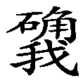

一 看破今世
顶礼本师释迦牟尼佛！
顶礼文殊智慧勇识！
顶礼大恩诸传承上师！
无上甚深微妙法，百千万劫难遭遇，
我今见闻得受持，愿解如来真实义。
为度化一切众生，请大家发无上殊胜的菩提心！
下面我们开始宣讲由格鲁派大德金厄瓦罗珠加参所造的《开启修心门扉》。在本书前言中我已经阐述了有关此法的重要性、翻译方式和根据《道次第传承上师传》所翻译的作者简介，在此恕不赘述。
首先解释什么叫“开启修心门扉”？
我们要成为真正的修行人首先必须要打开修心之门，无论是北传佛教还是藏传佛教都非常重视这一点。藏传佛教中修心法门的创始人是阿底峡尊者，他来到藏地以后着重弘扬修心法门，在他的弟子当中，首屈一指的是仲敦巴尊者，尊者有五大弟子，五弟子中最重要的是三同门：博朵瓦、金厄瓦、普穹瓦。尤其是博朵瓦尊者的教言中汇集了如大格西多厄瓦所记录的《蓝色手册》等很多修心法门，噶当派的许多高僧大德也主要以修心法门内观的方式而获得成就，因此当今时代修行人调伏心非常重要，并不应着重于外表的形象。譬如某人入于殿堂，如果门未打开，想要进入是不可能的，同理，我们无论修大圆满、大手印，还是大中观等所有高深莫测的法门，首先要打好修心的基础，如果没有开启修心之门便无法修其他法门。如《三戒论》中讲别解脱戒是基础，菩萨戒为框架，才能将密宗成型。
其次讲副标题：为何说此法是“趋入菩提道次第论之修心篇”？
从本论作者的角度讲：在前言中也提到，此修心法门的作者金厄瓦罗珠加参，按《东噶活佛大词典》中的记载，他是宗大师和甲曹杰的大弟子，他自己的传记中说到是多敦罗珠加参的大弟子，也即是宗喀巴大师弟子的弟子，而作者本人在《开启修心门扉》中又表明是克主杰大师的高足，但无论怎样他的确是受持宗喀巴大师教法的一个举足轻重的人物。从所学论典的角度讲：藏地雪域首先是阿底峡尊者造了《菩提道灯论》，分显宗和密宗两种法要，后来宗大师作解释，分别造了《菩提道次第论》和《密宗道次第论》两部论典，格鲁派主要学习的法门是《菩提道次第论》。因此，就如同唯有金器才可以盛雪山狮子的乳汁一样，在学习《菩提道次第论》，乃至学习密宗的任何一部法要之前，首先要具备相应的条件——通达《开启修心门扉》的基本道理，于是这部《开启修心门扉》便毋庸置疑地成为趋入《菩提道次第论》的前行法门。格鲁派的很多寺院将《开启修心门扉》作为基础法门，就如同宁玛巴将《大圆满前行》作为基础法门一般。
梵音：南无！格热波达波德萨朵萨巴热瓦热北合达色喀杂噶Ra波达得夏娃达呢，抓萨Ra合格热芒，萨尔瓦萨达杂玛哈色喀色可噶Ra格热芒，阿德德查德芒！
汉意：顶礼上师诸佛菩萨及眷众！
祈请加持利乐源泉之佛法繁荣昌盛！
祈请加持一切众生幸福安乐！
首先作者顶礼诸佛菩萨及其眷属，祈请他们加持：一切众生快乐来源的佛法繁荣昌盛，愿所有的众生均获得幸福与快乐。作者是以发愿文的方式来顶礼的。
顶礼皈依与十方诸佛佛子无别之殊胜上师无垢莲足！
此句是在顶礼他的根本上师，与十方诸佛菩萨无二无别的殊胜上师。关于他的殊胜上师虽然诸说不一，但他的传承上师中有宗喀巴大师，所以他在宗大师为主的所有上师面前作顶礼。虽然此论属格鲁派的法门，但因各宗派互不相违，因此，我认为作为宁玛巴的修行人同时学习格鲁派论典，并无舍本逐末、舍近求远的过失。
世间祖师千目帝释等，三界主尊恭依彼莲足，
善妙全能尊者上师前，谦恭追寻殊胜正法者，
悲悯彼等具义修法众，以诸经论师窍决为饰，
宣说智者欣悦之教言，愿能诚敬专意而谛听。
世间祖师、千目帝释等三界主尊，均在您的莲足下恭敬顶礼，我也在至尊上师您的面前，为了利益希求殊胜正法者，悲悯他们，使其人身具有实义，以经典、论典、上师窍诀为严饰，在此宣讲令智者欢喜的教言《开启修心门扉》，愿有缘弟子诚心诚意地谛听。
具体而言，作者顶礼的对境是谁呢？他的根本上师。为谁宣讲的呢？对正法具信之修行人。他的发心是什么呢？以悲悯心来宣讲。以什么方式呢？根据所有的经典、论典和上师窍诀。对我们的要求是什么呢？以诚挚的信心恭敬谛听。
《开启修心门扉》共分十九个篇章。虽然此论在意义上容易理解，但关键在于我们能否经常探索，经常思维，将每一个文字牢记于心，融入于行动中，身体力行、实地起修才能真正学好此论。
三世诸佛之本体上师如意宝说：“在获得珍宝暇满人身之时，应当千方百计令此生具有实义。
上师如意宝是这样说的：在我们获得珍宝人身的时候，应当千方百计地想各种方法令自己的人身具有实义。可是当今不学佛的人都有自己的人生定则：人长大后应该有一个温馨的家庭，具有一定的财富，即生中过平安稳定的生活，到年老的时候应有子女等人养老送终，死后就什么都不存在了，如同世俗愚人常说的“人死如灯灭”，很多人的人生观和价值观就是如此。但我们学佛之人与世俗人的做法却是大相径庭。我们千方百计、竭尽全力地让人身具有重大意义。
还应时刻观察自己的思维与畜生的思维有何差异，因为畜生也有不甘承受寒冷、饥饿的折磨，希望感受幸福的愿望，如果我们除此之外没有其他的追求，那就与畜生不分轩轾了。所以，为令此生具有实义，精勤修持极为重要。”
还应时时刻刻、详详细细地观察自己的所作所为与山上的牦牛、山羊或者黑狗等旁生的行为有什么差别，如果观察后所得到的结果只是希望自己吃得丰盛、穿得华贵、冬天的寒冷不要降临到我身上，还欲远离病魔等的思维，你应该惭愧得无地自容，因为这与旁生已经不分轩轾了。为什么这么说呢？旁生在饥饿的时候知道寻找食物，寒冷之时它也会到暖和的地方休息。萨迦班智达在《格言宝藏论》中也这样讲的：“唯有寻求充腹者，真实一头无毛猪。”“整天谈论钱财食，此即双足之畜生。”如今城市中摩肩接踵的人群中，许多人的人生观、价值观就是与旁生无别，因为他们的目的就是和旁生没有什么两样，吃得好、穿得好，这就是人生的价值，所以这样的众生可以说是极为愚痴，用寂天菩萨的话说：“自迷痴狂徒，呜呼满天下！”但我们的人身应当具有重大意义，与旁生一定要区分开来，所以，我们平时修心，还是做任何事情，应当经常权衡自己与旁生之别，这一点相当重要。《开启修心门扉》下文中还会讲到，很多旁生是有智慧的，不要认为旁生都很愚笨，但如果我们只有这么一点欲求，恐怕旁生都比自己更胜一筹了，因此我们为了人生真正具有实在的意义，应当精勤修持佛法，这一点旁生历尽艰辛也无法做到，我们通过努力就可以做到，因此一定要精进修持。
令此生具义、精勤修持的首要条件，就是切莫贪恋此生。
修行人精勤修持的最初条件是什么呢？只是办一个皈依证、剃个头或急不可待地穿上出家人的僧衣，这些外表形象都不是最关键的事情，看破今世是最首要的条件。如同想进入一栋房子，要看自己有没有钥匙，如果没有钥匙就无法进去，同样的道理，形象上修建殿堂，或者做讲经说法之事宜等等，似乎是具有意义，实际上你的内心如果没有看破今世，一切所作所为都是贪著今世。
比如某人每天拜佛，目的是什么呢？就是令自己有一个健康的身体，其实我们现在的肉身最多能在这个世界存留几十年，只为短暂的一己私利而学佛不叫修行人。还有些人天天修黄财神，认为拥有财富是他最大的满足。我们放眼整个世界，说实话，即便是为数不多的学佛人中也有很多不是修行人，包括我们在座的金刚道友，很多人的目的如果是要逃避城市中生活的艰辛，为即生中过得开心一点，或者只想得到锦衣玉食的享受等，就是没有看破今世的象征。所谓的看破今世并不是要节衣缩食，天天都只有苦行，我们苦行过程中肯定是需要衣食，这一点没有否定。但是最关键的是心中对现世所有的亲戚朋友、眷属财产无有贪执，这样才可以说明你有看破今世的境界，所以说所谓的看破今世不是表法，而应该是心法。
《秘密总续》云：“追寻来世之意义，以大信心而修持，趋入具智之坛城，切勿希求此生果。如若经营此生义，来世之义不能成，若萌追求来世念，此生之果亦增盛。”
首要条件在《秘密总续》中说：真正要入密法，需求来世的意义，获得佛果的目的，应以大信心行为趋入具智之佛陀密宗坛城。有些人认为密法是高深莫测的法门，而修出离心是很低劣的法，修密法的时候用不上。如果你这样思维就已经搞错了，墙的基础都没有，墙上的花纹根本不可能显得美观。
所以，入密宗坛城之时的发心千万不要寻求升官、发财、疗病之类的此生果。不要为今生短暂的需求毁坏来世的利益，来世和今世相违之故，欲求世间法与出世间法并行不悖是办不到的。所谓的出世间法就是寻求为利益一切众生而获得佛果的来世，因此，只是理着光头，穿着出家法衣，自以为是的修行人不一定是真正的修行人，包括在法座上讲经说法的法师，如果内心中没有看破今世，也只是一种形象而已。如果你的相续中真正生起了“我所谓的修行不是为了短暂的今生，而是乃至生生世世为利益一切众生”的念头，那么即生的名誉、地位、财产、利养等，不求也会自然获得，上师如意宝也经常为我们宣说此等殊胜的教言，因此极为重要。
我们这次学习《开启修心门扉》的过程中我不想赶进度，每天都讲几句，我不怕重复，再三地啰唆，这些法理需要反复串习，这样会对你们有一点帮助。我希望一边学《俱舍论》的同时，每天所讲的噶当派的教言，也应该思维，这就是所谓的修行。
下面接着讲正文，作者这样说的：
记得阿底峡尊者在印藏弘法事业圆满，即将示现圆寂之时，弟子中一位叫恰彻却的瑜伽师启禀尊者：“上师圆寂后，我将好好修法。”上师并不满意，回答说：“希望你能放下杂事。”
《大圆满前行》中也有这个公案，只是文字上略有不同。
恰彻却瑜伽师对即将示现圆寂的阿底峡尊者表示今后要努力修法时，他认为如此会令上师欢喜，上师并没有直接回答，而说：这种修法固然很好，但我希望你能放下杂事。意即你这样修法也是耽著杂事，没有很大的意义。
弟子又说：“那讲经说法呢？”上师态度也如前。弟子再问：“边修边讲如何？”上师仍如前面一样回答。“那么，弟子应当如何行事？”尊者回答说：“应当舍弃今世一切琐事。”
弟子又转而说道：你圆寂以后我给众多弟子讲经说法，这样好不好？上师也如前表示说希望他能放下杂事，无论是讲经说法还是修行都没有很大的意义。弟子再问：边修边讲怎么样？尊者一如既往地回答。弟子有点为难，尊者一语道破修法的关键——应当舍弃今世的一切琐事。阿底峡尊者最后圆寂的时候为弟子留下了这么殊胜的教言。
华智仁波切在《前行引导文》中也再三地嘱咐我们要舍弃今世。我昨天也讲过，所谓的舍弃今世并不是现在要你不吃不喝，对家里不闻不问，这虽然也是舍弃今世，但最关键的是在我们内心中对现世转瞬即逝的财富和快乐能不能有一个深刻的认识？不仅是今生，而且拥有来世的福报也无有任何实义的观点能不能透彻地理解？这里主要是从舍弃今世的角度阐述的。
因此，我们做任何一个功德的时候，形象并不关键，看你的心能不能看破，也就是说内心中真正生起为利益一切众生修法才是最重要的，形象上的讲经说法，也无有意义。此中密意并不是阿底峡尊者认为修行无有必要，也不是说讲经说法全然无用，更不是说一边讲经一边修法徒劳无功，但是如果你心里没有舍弃今世，讲经说法也是枉然，整日里掩门闭关，过不多久你内心中就会生起追求世间八法的念头，无法对治。所以，修行人从内心中看破今世实在是重中之重的事情，心里没有看破，影像上做任何事情对今生来世皆无助益。
我讲一个虽然是世间法但同样可以深观内心的故事：一个男子有一个他并不喜欢的女友，为与女友断绝关系他想尽各种办法——他将家中的桌椅、茶具乃至衣服上用的香水全部焕然一新，他认为换成她不喜欢的样子就可以达到断绝关系之目的。这时他看到一只喜欢摇头摆尾迎接女友的狗，便想将它的尾巴剪掉，在他无法下手的时候他想到了兽医站，他到兽医站说明原委，得到的答案却是“最好你不要剪狗的尾巴，这样做解决不了事情，你用桌椅、茶具来表示也无有任何意义，你应该用心表白”。这个比喻，汉地的高僧大德也引用过。
从中我们可以看出，如果内心贪嗔痴极其旺盛，始终贪执今生来世的名闻利养、快乐赞叹，哪怕作供灯、诵经还是讲经说法等也均是形象上的善法，所以，最关键的是看破今世，看破今世并不在于外相上穿一个破烂的衣服，或者吃低劣的食物，而是观察你的内心贪嗔痴烦恼是否极为旺盛。贪嗔痴彻底灭尽作为凡夫人来讲是很困难的，但只要在自相续中生起出离心，看破今世的境界会自然具足。如来藏上面有良好的种子，只是我们不串习而已，实际上无论怎样恶劣的人，相续中也有这样的种子和能力、工夫和功能。
阿底峡尊者也再三说看破今世一定是从内心上安立的。
恰彻却将上师教言牢记在心间，抛弃一切，前往热振的休色寺，像野兽一样地精进修持，未与任何人交往，如此穷其一生，直至圆寂。（果仓巴尊者传记云：其为米拉日巴尊者前世。）
真正高僧大德的修行就是如此，依靠上师所传窍决，在一生中依靠上师之教言而修持，与野兽无别，形只影单地在休色寺修行。虽然许多人在短暂年月中闭关修行是屡见不鲜的，但如果其内心中并未生起真正的出离心，终有一天他仍会到城市中行非法，这是我常常亲眼目睹的事实，所以，真正的修行人穷其一生依此殊胜见解修持是非常重要的。有时上师的窍诀只是只言片语，也会起到很大的作用。
譬如，有一天我去色达县放生，遇到一个以杀生为业的汉族屠夫，我问他生计如何？他说只能赚得到吃稀饭的钱。我又问起他的兄弟，他回答说在甘孜开饭店。原来他的兄弟也是屠夫，曾经我放生的时候对他说过一句话：“在世界上这么多的行业中，为何一定要以杀生度日，可不可以换一个行业？”他后来觉得这句话有意义，于是扔下屠刀，改行换业，开其他的铺子。我自忖：哪怕是对尚存些微善根的屠夫，我们诚挚忠告，劝他改掉恶行，他如果斟酌并履行忠告，终究获得利益。
同理，阿底峡尊者临圆寂时只说“舍弃今生的一切琐事”这一句教言，只要弟子反省自己的所做，依教修持，一句话也会起到很大的作用。倘若上师没有这样说，也许恰彻却尊者一生中忙碌于在别人面前讲经说法或形象修行，看起来很不错，但实际上他的内心不一定舍弃了今世。
一次，一位僧人正在转绕寺院，仲敦巴尊者语重心长地说：“你这样转绕当然令人高兴，但若能独自修习某一法门则更令人开心。”
曾有一次，一位僧人精勤于转绕寺院时，仲敦巴尊者对他好言相劝道：你这样转绕固然值得高兴，但是你如果静下来修一个真正的法不是令人开心的事吗？
有些人整日里转绕，要转一百万圈坛城，可是他的发心只是想要发财、健康、平安、圆满。有些在家人转绕坛城主要是为了感情生活等方面圆满，那天我也讲了，有一个人只是为了他喜欢的人开心而转了一万圈坛城，从暂时种下善根的角度虽然不能否定其功德，但这些人非常可怜。实际上如果你内心中没有看破今世，虽然转绕坛城、佛塔、寺院，或者朝拜神山，功德都不会很大。
僧人心想：也许顶礼可以讨得欢心吧？于是，就开始顶礼。谁知，尊者仍然如前面一样地劝诫。僧人又尝试了念诵及观修，得到的仍是同一答案。他无计可施，只得询问道：“那么，我该如何是好呢？”尊者毋庸置疑地回答：“舍弃今生！舍弃今生！！舍弃今生！！！”
僧人尝试顶礼，谁知尊者仍如前所说。（有些人顶礼的时候非要把头使劲的磕在地板上，他认为这样上师会欢喜，谁知道上师越来越不欢喜。有些人在水泥地上也要使劲的把头搞破，但实际上你没有看破的话，头搞破了也没有很大的实义，过一段时间愈合了以后又开始搞世间八法。）僧人念诵经典、闭目修行，上师给他的答案仍是同样的。转绕、顶礼、诵经、观修都不合上师意愿，正当弟子愁眉不展时，尊者义正词严地说了三遍“舍弃今生”。此公案在华智仁波切的《大圆满前行》中讲得稍广。
以前萨迦班智达面前有一位名叫宁莫的大修行人对他提过这样的问题：“舍弃今世之因是什么？”当时萨迦班智达回答说：“知晓轮回无有毫许实义，故而对轮回无有兴趣，是舍弃今世之因。”而后他又问：“舍弃今世之缘是什么？”他回答说：“知道轮回的过患后才会舍弃今世，所以知道轮回过患是舍弃今世之缘。”然后他又问了第三个问题“舍弃今世的量”，也就是说舍弃今世的界限，“舍弃今世的量是对世间八法兴趣索然。”萨迦班智达回答说。“那么最后所获得的舍弃今世之验相是什么呢？”他提出了第四个问题，他得到的答案是“舍弃今世的验相就是不被世间八法所染”，意即单单过弊衣疏食的生活，并不是舍弃今世的验相，而是在内心中对财色名利非常淡漠、随遇而安、顺其自然的心态才是舍弃今世的验相。
譬如我们关在监狱中，你对监狱和监狱中的人都毫无兴趣，永远也不会将监狱作为自己安家落户的地方，始终有从监狱中逃脱的渴望。
同理，把轮回中所有的名声、财产等人们所羡慕的五欲妙乐看作监狱来对待，就说明你的相续中真正生起了舍弃今世的念头。所以仲敦巴格西也是再三给弟子说了“舍弃今世”的教言。
我曾在杭州给居士们传授《入菩萨行论》，下课后好几个居士都说：“我们要舍弃今世，要吃坏一点，不用吃好的。”但舍弃今世并不是吃恶劣的饭菜，对此前面已经阐述过。
宁莫恭穹是很了不起的修行人，以上所说的是他给萨迦班智达的二十几个问题中的前四个问题，萨迦班智达的语言比较简略，希望大家仔细思维，否则口头上说舍弃今世，然而表里不一，言行不符。现在很多汉地寺院、禅门中常常挂着“看破放下自在”六个大字，但是到底看破什么呢？华智仁波切《前行》里面讲了吧，“无论是任何人，即便他高如天空、厉如霹雳、富如龙王、美如天仙、艳如彩虹，可是当死亡突然到来之时，他也没有刹那的自由，只能赤身裸体、赤手空拳地离开人间，只能在对财产、饮食、亲友、部属、弟子、仆从等眷属所有受用依依不舍之中抛下一切，就像从酥油中抽出一根毛般独自而去。”如果我们的相续中真正能生起这样的定解，这算是出离心，生起出离心生才会看破，这非常重要。
仲敦巴尊者自己，就是从心底舍弃了今生琐事的典范。一次，色顿山谷的信众迎请仲敦巴去传法。他对弟子吉祥自在说：“你代我去吧，我正在修持舍弃世间之法，故不允许我做出行修相异、心行相违的举动。”
仲敦巴尊者自己在舍弃今生方面为我们做出了榜样。在信众们迎请他去传法时，他正在修舍弃今生的法，为令修法不至半途而废，就没有前往，而是令他的弟子代他前去传法。因为，如果内心里没有舍弃今世，虽然口里滔滔不绝地讲法，也只是照本宣科、鹦鹉学舌，没有很大的价值。
之后，就终年穿着缀满补丁的陈旧衣服，将上衣脱下，两只袖子搭在双肩，有时神出鬼没地消逝于柏树林中，有时倚在藤仗上独自打杵休息，口中念着《亲友书》中的句子：“利无利苦乐，称无称誉讥，了俗世八法，齐心离斯境。”
尊者是在家居士的身份，他终年穿着陈旧的长袖藏装，在炎热的盛夏，他就会将上衣脱下来，把袖子搭在双肩，藏族老乡也是经常这样穿着的。他经常出入于热振寺的柏树林内外，有时候他还会靠在藤树做的手杖上休息，他口中经常念诵《亲友书》里的这样一个偈颂：“利无利苦乐，称无称誉讥，了俗世八法，齐心离斯境。”这是以前的古译，世间八法即是：人们愿意获得利养，不愿遭受衰败；愿意获得快乐，不愿感受痛苦；愿意获得称赞，不愿被人讥讽；愿意获得荣誉，不愿遭遇诋毁。我们作为修行人应该远离这些世间八法。
有时又喃喃自语“我是希求解脱者，莫为名闻利养缚”等全部文字，有时仅念出开头部分，有时念诵了一半，就独自安住下来。
仲敦巴尊者也常这样检点自己：“我是希求解脱者，莫为名闻利养缚”有时念诵全文，有时念开头部分，有时念半句，他时时这样来念诵度日。
本来，像他这样的成就者无需如此苦行，他之所以如此韬光养晦、深居简出，只是为了给后学者做出表率而已。
像仲敦巴这样的大成就者，本来没有必要这样苦行，在许多论典中说他是阿弥陀佛的化身，但是他仍然隐秘才能，不露锋芒，安住在寂静深山，极少出头露面，他这样做的目的只是为了警醒后人。
金厄瓦也常复述此等脍炙人口的教言，并以此平息了世间八法。
金厄瓦格西也经常复述“我是希求解脱者，莫为名闻利养缚”等教言，并且不为世间八法所动，这一点非常重要。真正到达这样的境界才算是看破今世。前文所引萨迦班智达所说的看破今世与此处所说好似同出一辙，修行人倘若未平息世间八法，如同不学佛法的世间人一样，全然只为自己的名声、财产、安乐、地位和赞叹等今生短暂的事宜奔波劳累，是没有看破今世的表征，所以平息世间八法就是我们修行人最重要的事情。
否则如佛印禅师所说“八风吹不动，一屁过江来”之苏东坡的笑谈会在你的身上故伎重演。自以为自己是大修行人，只要别人触犯两句，他就会大发雷霆，真是非常可怕。因此平时应该观察世间八法是否平息，如果平息了世间八法，就像萨迦班智达所说的一样，肯定已经看破今世，如果世间八法没有平息，那么即便整日里以苦行相伴，闭关禅修，也没有很大的实义，所以这方面要注意。
因此，今生追逐快乐、厌离痛苦等念头以及如同毒药般的一切琐事都应当彻底屏弃。
世间八法对我们的危害非常大，因此我们若是为今世求乐避苦的念头还有毒药一般的今生琐事都应彻底舍弃。当然要求凡夫人全部舍弃今生的需求，这一点对初学者来讲是很困难的，但是我们首先应该深刻认识到希求今世的一切所作所为全部是非法。现在很多人喜欢求密法，密法自然很好，是诸佛菩萨最究竟的精华教义，但是很多人根本没有打好基础，只是为了希求即生中荣华富贵、开天眼等各种可以在人群中炫耀自己的资本，这样无有任何必要。
无论是大、小乘修行人都有自己应守的本分，如果是大乘修行人，内心相续和所作所为都应该以菩提心来摄持；如果是小乘修行人，就应当秉持出离心所摄的看破今世这条规则，以出离心来摄持善根和行为，如果两者皆无，就是一种形象上的修行人。
现在很多佛教徒，开口闭口说自己是某某大名鼎鼎活佛的弟子，得到过至高无上的时轮金刚的灌顶、密集金刚的灌顶，得过大圆满的灌顶。当然从末法时代浊世猖狂的角度讲，能够得到如此殊胜的灌顶当然是值得随喜的事情，但令人担忧的是，他的相续中究竟有没有一个起码的看破今世之出离心和利益众生之菩提心呢？如果连这一点基础都没有，得再殊胜的妙高灌顶也恐怕是空中楼阁，虚无缥缈无有实义。
因此，一味只寻求高深莫测的大法，对初学者来讲不一定是很相应的，因为无论多么贤善的上师，哪怕与你初次相识就慈悲摄受你，为你灌殊胜的顶，但你自身如果没有打好修行的基础，那么这个密法对你来说是不相应的。有很多人经常让我看看他是不是学密法的根基，有没有学密法的因缘，我想每一个人都应该有，只不过没有打好基础对每一个人来讲也可以说是没有，因此一定要舍弃求乐避苦的念头和今生中没有很大意义的琐事。
也许是我邪见很重、修行不好的原因，每到大城市的寺院，每天都有上千人在拜佛、供水、供香，在佛前做些微善法，功德都是很大的，所以应当随喜，但如果逐一追问他们拜佛等的目的时，所得到的答案往往令人大失所望，都是为了自己的身康体健、生意兴隆等目的为出发点的。如果问卖门票的人为何住在这里？他会说是因为服从寺院的安排，仅此而已。不要说利他的菩提心，即便是观“三界犹如火宅”般欲从轮回中获得解脱的人也是寥若晨星，因此，可以说在整个世界中形象修行人非常多，这一点是显而易见的。但是真正因看破今世寻求出离的，包括学院中如此多的人中恐怕也是少之又少，有因遇到挫折而出家的，有为逃避生活而出家的，直到现在出家的目的仍然不很明确，每天都是在迷迷糊糊中混日子，这样做没有很大意义。在座的人应该是有智慧、有见解的人，应当思维自己剔除须发、身着袈裟的目的是什么？如果不是为即生中获得解脱和利益众生，那么你一天听一百个灌顶对你可能只不过是种下善根而已，没有多大的实义。
要深知，一切善不善业仅为心之所为，而身语之业却是无记的。
因此看破很重要，所谓的看破并不是外面形象上的一种行为，一定要在内心中观察自我。我想噶当派修行人的传统是非常好的，现在大多数人都是人云亦云，随波逐流地跟随他人转，凡有灌顶、传法，大家就会一窝蜂跑去，但是到底心相续中有没有一个稳固的基础，从来没有观察，这是很遗憾的事情。大家应审慎地深思啊！
所谓的业力最根本的就是心，而身语的善不善业全是无记法。按小乘《俱舍论》的观点，心是无记状态时，不会感得快乐和痛苦的果报，只有身语业才有善恶之分，在《俱舍论》第四品中有宣说。但是真正从大乘的角度来讲我们的心是最关键的，一切善不善业仅是唯心所造，心善一切都是善，心不善，表面上做的上供下施也不一定是真正的善事。
彼等愚痴凡夫却反其道而行之，一心追求此生的幸福安乐，希望美名广传，并获得他人的恭敬利养，却害怕痛苦煎熬，担心臭名远扬，并以得不到恭敬利养为患。
我等凡夫之辈学佛的目的是什么呢？只为希求今生的快乐幸福、声名广播和别人的供养恭敬。这应该是非常惭愧的。我们所担忧的是害怕身体痛苦或名声受损，否则利益和恭敬就会离我远去，但这些都应该是倍感惭愧的。《入行论》中也有这样的教证：“谓谤令他疑，故我嗔谤者。”这就是我们的一个最大过失。
于此必须提醒众人，在一切所作所为中，由贪嗔痴而引发的，（即使是身语的贤善）行为，不善业所占的成分极大。
不要说是杀盗淫妄之类的大恶业，即便是以贪嗔痴所引发的形象善法，也肯定是不善业的成分占多数，比如：贪嗔痴所引发而建造寺院、供养布施或者行持清净戒律等行为。从因果不虚的角度讲，当然造佛像等也应该有一部分善根，但是大多数为了贪执自己的名声，法王如意宝不是也讲，很多人建寺院修佛塔，表面上看是善法，但是如果以嫉妒傲慢心所使，只为贪图名声和恭敬利养的不清净发心，所做之善事也成为堕入恶趣的基石。
完全以贪嗔痴所摄持的耕耘稼墙、商贾买卖、牟取暴利、诉讼争论、伏灭怨敌、护持亲友以及闻思修行等一切所作所为都只能成为轮回和恶趣的因。
心善地道善的道理，华智仁波切在《大圆满前行》的因果不虚品中有广说，因此一定要发清净心。我们闻思修行的目的只为让众生获得利益，即便自己存在自私自利的发心，那么这颗心也应该是从轮回中获得解脱之心，为利益众生，从轮回中获得解脱的这份发心相当重要。如果没有这样，自心被贪嗔痴所摄，无论你经商稼农，还是牟取暴利、护亲灭敌，甚至闻思修行，一切所作所为只能成为恶趣之因。
也许有人会问：闻思修行不是所有行为中最殊胜的吗？为什么也是轮回之因呢？这在《札嘎山法》中已经提到了，如果你为了今生的利益闻思修行，有什么样的果报？博朵瓦尊者说果报有两种，其中之一就是你为今生而闻思修行，三宝的加持可令你在即生中获得利益，比如说你所需求的财产、名声等，但来世怎么呢？来世只得到地狱、饿鬼、旁生中感受三恶趣的果报。所以，如果你所受持的是小乘的戒律就一定要以出离心来摄持，如果是大乘的戒律，那肯定是菩提心来摄持，如果这两者都没有，就只能算是善愿戒或救护戒，这一点前文中已经提到过，在此重宣此义，希望大家应该清楚。
所谓的修行人应该怎样定义？如果别人说你不是修行人，可能你会马上暴跳如雷，不客气地以出家多年为理由与别人辩论。但你真正扪心自问的时候，如果出离心和菩提心都没有，那算作修行人也着实困难，更不要说什么空性见解或者大圆满的本来清净和平等的见解。
很多人喜欢求密法，这一点我也应该感到欢喜，但是我非常担心很多人尚且没有开垦自相续的田地，单单在旷野上撒一颗种子，恐怕无论如何耕耘都不会有发芽结果的一天。同样的道理，首先大家也不要只希求高深的密法，《开启修心门扉》之类的修心法门可能都没有听，《俱舍论》也可能没有兴趣，如果我传一个大圆满法，大家就兴趣盎然，找一个好录音机全部录下来，自认为是密法的根基，且一定要即生成就。说得非常好听，但是你没有读过幼儿园和小学，没有读过中学和大学的课程，就想一步登天而希望获得一个博士的文凭、获得一个博士后的文凭，除去极富资质的天才以外，一般来讲是非常困难的。
因此，我希望喜欢希求密法的人——一般世间人所说的宗教狂热之徒，还是应当次第打基础，先学加行，观察自己的心符不符合一个修行人应该具备的条件。许多人看不起小乘法，其实小乘法中也有它独特殊胜的窍诀，如果我们没有打好这个基础，获得一个大圆满的境界恐怕是不现实的。很多人得了最高的灌顶，名义上是大法王的弟子，但常常法是最高的，人不是最高的，人法不相合，像藏地有一种说法：煮牛脑壳时，牛脑壳的肉还没有熟，就先把舌头吃了是不应理的。这个问题留在下文广说。
所以说，包括闻思修行，如果没有看破世间，那么也只成了恶趣和轮回的因。
《因缘品》中云：“诸法之前意先行，意念首要而敏捷，若以凶狠之意念，所说言语所作行，以彼获致无量苦，犹如车轮断头颈。若以清净之意念，所说言语所作行，以彼将获大安乐，恰似树荫恒追随。”以凶恶念头等三毒为发心所作的一切行为，都必将咎由自取而带来无穷痛苦。
此处所讲的也是体现心的重要性，是一切显现的根本，与万事联系最为紧密的就是自己的心。如果是凶狠的意念，不管他说的什么话，做的什么事情，会获得无量的痛苦。以善念或恶念所引发的一切行为，结果会截然不同，下面讲这方面的公案。
从前，有两位乞丐见到一群僧众时，其中一位以嗔恨之念咬牙切齿地诅咒：“但愿这些僧人的脖颈被车轮碾断。”不久，当他躺在路边睡觉时，被飞驰而来的马车轧断了头部。而另一位却对僧众生起了清净之心，心想：若能以天人的甘露供养这些僧众该多好啊！以此善心使他获得了极大福报。上午，他躺在树荫下睡觉，直至下午，树荫也不会因太阳西行而偏移。后来，他以此福德而成为了一名大商主的继承人。
婆罗门和国王种姓的两位乞丐中，其中一位看到光头出家人，就希望把他们的脖子碾断，他发下如此严重的恶愿，最终是自己惨死在急驰的马车下。还有一位，因为心生清净之想的缘故，此公案中说他最终成为一名大商主的继承人。《大圆满前行》和《释迦牟尼佛广传》中都有此公案，但说法不一，也有他最终成为王位继承人之说，但也可能是情节相似的不同公案。
也许是前世业力的关系，在家人中也有类似的情况，人与人的性格截然不同，有些看到出家人时显得谦卑恭敬，会尽己所能地给予帮助，还有人则一见到没有头发的出家人就恨之入骨。
总而言之，这全是我们一刹那的心在作怪。有些人看见别人时，在内心当中觉得这个人很坏，有机会的时候一定要杀他，一直咬牙切齿地诅咒，但有些人根本不是这样，看见别人痛苦或造恶，觉得他很可怜，但愿他离苦得乐，乃至对方加害于己的时候，也愿他获得快乐。
所以，我们平时虽然精进于拜佛、念诵，然而接触任何人都如同怒气冲天的魔鬼一样。许多人对我们这里发心人的印象是不错的，其他住在屋子里面的老修行人不好说，也许接触他们的时候真的如同接触毒蛇一样，稍微碰一下就要爆炸，如果如此，不是好修行人。
佛教的特点就是培养内心的修养，这一点从他的行为中是可以略见一斑的。佛教无论从心理学、因明逻辑学还是人文地理各个方面都有它独特的研究方式及优势，可以说是包罗万象，含摄一切万法。所以，不管佛教徒与任何身份的人辩论，不怕世间人，不管心理方面还是生理方面，从哪一个方面与别人辩论，只担心我们不懂教理，否则一定会令他们张口结舌。
这里是从利他的善心角度来讲的，我们一步步慢慢来，最终才可以将利他的善心持之以恒，不可能只有等到开悟的时候才把佛教融入世间和社会当中，而现在却要把仇恨的人全部降伏灭光，这样肯定是不行的。
另外，在一般情况下，若故意杀生，则为造作恶业。但是，如同大悲商主虽然杀了人，因为是以大悲心所引发的缘故，不但没有成为恶业，反而成为圆满资粮的殊胜方便。此等事例，在《弟子问道录》中已广为宣讲。
此公案在《释迦牟尼佛广传》和《大圆满前行》中均有广说。在一般情况下，杀生是肯定不允许的，但如果是发清净善心，不但没有罪过，反而成为积累资粮的方便，譬如大悲商主的公案就说明了这个问题。
我们对世间之事进行观察也可得知，若以蔑视的态度给予他人饮食等物品，不但不会令他人高兴，反而引起他人的仇视；反之，若以恭敬心或大悲心等布施他人，则会令他人喜笑颜开。
我们暂且不从佛法的角度说，即便从世间的行为来观察也可得知。比如我们布施的时候怀有一种仇恶之心，对来乞者百般厌恶藐视，以悭吝心勉强给他一些低劣之物，口中也念念有词：“给你给你，快滚出去！特别脏，讨厌得很……”原本没有钱财的乞丐就非常痛苦，别人如此嫌恶他，就更是雪上加霜，无疑使他更加痛苦。
所以，一切显现都是心的差别。应当防意如城，千万不要令自心生起希求此生幸福的念头，一旦生起此念，也当励力抛弃，这一点尤为关键。
我们的所作所为不是以即生的快乐幸福为目的，我们出家修道，每天都应该思维：我们求学的目的是什么呢？不是为得灌顶，不是开天眼，也不是获得神变，回去的时候不用坐班车，一定要飞在虚空当中，不是这种目的，目的就是在我们相续中生起一个真实的出离心。不管别人怎么说，内心中就是将轮回看作监狱一般，所作所为都无意义。真正彻见轮回痛苦的本体时，见解才会非常稳固，虽然你只是一个普通僧人，没有财产和名声，只不过在求学的过程中花了很多钱，但是你的相续中有一颗出离心就有价值，此等价值是一般财产无法比量的，如果不是这样，即便你拥有名声和财产，也会很快的时间内消失殆尽，无有很大的意义。
因此，大家应该想尽办法在相续中生起出离心，不是口头上说的，也不是形象上的，最关键的就是在相续中生起轮回无有意义的出离心和利益他众的菩提心，看破今世和利益他众，具足这两种心就是你求学的目的。很多人认为自己很愚笨，考试成绩很差，但只要你的相续中具足出离心和看破今世的念头，我就很满足。很多人说：“我来了这么长的时间，不传大圆满，我还不如不来。”但我不是这么认为的。
我们作为修行人，无论是修习密宗还是显宗的何种人，像《开启修心门扉》这样的修心法门是非常重要的。现在佛教徒中，许多人喜欢从教理上讲解佛法，从治学的角度来进行研究，而真正从调伏自相续方面传讲佛法的人却是凤毛麟角。因此，这本窍诀书虽然从文字上容易理解，但是也一定要从意义上反复串习，一天起码也是读几行，压伏自己的烦恼，作为凡夫人来讲慢慢就会习以为常，这相当重要。
阿底峡尊者曾谆谆教诫：“若树根有毒，则枝桠及树叶均有毒；若树根为良药，则枝桠及树叶均有药性。同样，如果其根源为贪嗔痴，则无论做何等事体，都是不善之业。”
智悲光尊者的《功德藏》中也有这样的教言，华智仁波切在《大圆满前行》中也曾引用过，是用比喻的方式来说明一个道理：如果树根有毒性，那么树枝、树叶、树果全部有毒。如果树根是良药，那么树枝等的药性也不会害众生的，因此说树根决定一切。同样的，如果我们的动力或是意念是贪嗔痴三毒烦恼，那么做出的行为无论别人看起来多么的了不起，但实际上还是罪业难挡。
譬如说：我到城市里面去给别人讲经说法，目的是依靠讲经说法获得一笔可观的收入，虽然在别人看来我神采奕奕、滔滔不绝地大谈佛教因果道理，但是我心里唯一的目的是什么呢？或者是财产，或者是名声，或者是为得到他人的恭敬的话，那么不管我讲了多少天的法，实际上没有丝毫功德。
因此，我们要经常观察自己的起心动念是否处于三毒烦恼中，当然我们作为凡夫人，万事都按照《开启修心门扉》所讲的那样如理如实地做到，一定会困难重重，但有些人连什么是修法都全然不知，这一点非常可惜。我们首先在理论上应该懂得什么是好的，什么是不好的，才会及时纠正自己的错误观念。比如说自己做不好的时候：哎，我今天发心真的不好，形象上我做了善事，但是我这种善事佛经中说功德不大。这一点自己一定要清楚。不然本来是以贪嗔之心所引发的形象善事，世间上的人们还得意洋洋，飘飘然觉得自己所做非别人能及，从来都不观察自己的动机为何。这一点在我们日常生活中、修行的过程中一定要观察。
很多高僧大德也是这样讲的，修法不重要，修法的方法很重要，倘若修法的方法搞错了，你修了多少天也等于零。比如你不懂方法入了禅定，是三界中的一种等持，入了八万劫也只是无色界，还是一介凡夫，所以特别可怕。尽管有些人是观托嘎，有些人修禅宗，有些人修净土宗，最关键是发心的动机，这一点作为佛教徒首先必须要观察。
仲敦巴格西曾请教阿底峡尊者：“如果以贪著此生的幸福安乐、恭敬利养等念头行事的人们，其后果将如何呢？”“将仅仅获得此等后果。”
仲敦巴格西曾请教阿底峡尊者：贪图今生的幸福快乐、恭敬利养等的念头，作各种功德之事，他的果报是怎么样呢？尊者回答说：他仅仅获得了这个果。比如：我一心只为发财，在三宝面前顶礼、供灯，那么这个果报是怎么样呢？三宝的加持，如果你不是业力极重，即生中很可能得到高官厚禄，但就仅此而已了，不可能成为佛果和解脱的因。
“那么来世又将如何呢？”“将深堕地狱、饿鬼及旁生三恶趣。”
那么以这样的果报未来将如何呢？阿底峡尊者回答说：深堕三恶趣。因为他希求今世的善果，念头不清净，所以因他贪执世间八法的缘故他未来的果报就是地狱、饿鬼和旁生。
格西衮巴瓦也曾教诲道：“以世间八法之心行事之人希望获得四种收效，如果能如愿以偿，其此生结果也不过如此，对来世却无有丝毫利益。如果事与愿违，则对此生也无有意义。”
想获得四种收益，比如说某人以世间八法的心寻求恭敬、名声、赞叹、幸福快乐四种受益，是非常可怕的。以前上师如意宝也讲过，我们所作所为没有一点世间八法的牵连，作为凡夫人来讲是难以实现的，但我们若了知自己是在世间八法的意念鼓吹下做事情，要马上反省并提醒自己：我的发心不正确，我今天所做的并不好。
如果他当时发愿没有如是成功，那么对即生也不一定有意义，如果即生中真的有强有力的发愿，只能获得今生的果。
格西衮巴瓦是这样对我们教诲的。
龙树菩萨也云：“贪嗔痴及彼，所生业不善，无贪嗔痴等，所生业是善。”
这是《宝鬘论》里的，贪心、嗔心和痴心所产生的业全部是不善业，然后无贪、无嗔、无痴所产生的业全部是善业，所以心非常关键，行为不是很重要的。
此外，《宝云经》中也云：“世间由心而牵引，以心莫能洞察心，无论善业或恶业，皆由意念而积集。”
《宝云经》中说，世间的一切事物全部是唯心造作的，心本身不能洞察自己，我们作为凡夫人，以心来观察心是非常困难的，但是不管怎么样，以心善或不善来造作出善业和恶业，全部是心来决定一切，而不是行为。
《入行论》中也云：“虎狮大象熊，蛇及一切敌，有情地狱卒，恶神并罗刹，唯由系此心，即摄彼一切，调伏此一心，一切皆驯服。”
此处也引用《入菩萨行论》的教证说：复活地狱和众合地狱中有许多大象、毒蛇、狱卒、恶神、阎罗和罗刹，全部系于自己的一念心，如果自心污浊，外境也会显现可怕的景象，如果心清净，譬如一些身心获得自在的瑜伽士，不管是遇到大象还是毒蛇，都已成为修行的顺缘。
我有时候想：我们修行过程中所遇到的违缘，使得在座的修行人对佛法更加生起了坚定的信心，其坚定不拔的毅力也可以从中表现出来，更突显出他的勇气和威力，还有些人在危险面前，脆弱也会无法掩饰地表现出来，因此全部是心的力量所致。
如果我们真正调伏了自心，那么就等于调伏了世间的一切，不悦意的外境自然消于法界中了。
“若不知此心，奥秘法中尊，求乐或避苦，无义终漂泊。故吾当善持，善护此道心，除此护心戒，何牢戒其余？”
心的奥秘在佛法中是最深奥、最甚深的法要，如果我们不知道心的奥妙，那么即使你绞尽脑汁地去寻求快乐和避免痛苦，最终还是会无意义地漂泊于轮回中。《入行论》的这一颂词，显密各乘都有他独到的解释方法，但我们在此处从看破今世的出离心的角度来观察心的奥秘。有些人知道心的奥秘，有些人不知道，知道的人修行很成功，不知道的人修行是难以成就的。
打一个比方：我们这里组织金刚道友修五十万加行，同一个上师传授，同一个时间修行，甚至修行的内容也是同步的，但是恐怕有四个人修就有四种不同的效果。
一种人心想：我是密宗修行人，只有修完加行才能听密法，否则这么多人面前如果只有我一个人听不成密法，那太不好意思了，没脸见人，所以还是要修加行。这样的一种发心。
还有一种人认为轮回太苦了，我应该从轮回中获得解脱，所以我要修五十万加行。
有一种人想：我即生中要修完加行，修圆满次第，听说密宗特别灵，一定要让我开天眼或者能在别人面前显示神通。
其实天眼并不重要，开天眼就是可能见得到一些奇奇怪怪的东西，你到城市里见五花八门各种各样的东西也肯定见得到，所以，这算不上稀有难得，偏偏有些人真的觉得开天眼特别重要。
最后一种人修加行，目的是为了一切众生获得佛果，以这种发心摄持是非常了不起的。
有些人根本不知道发心的重要性，反正自己丰衣足食就很知足，对心的奥秘的理解和探求就是如此，所以，四种人对心之奥秘的认识才会如此大相径庭，同样五体投地的十万个头，发了菩提心的人，十万个大头已经是成佛之因，而发心获得今生福报的人，也只能限于获得今生福报的果，除此之外一无所获。就像从色达买票上车，有人在色尔坝下车，有人要去马尔康，有人是成都的票，有人直接抵达北京。
同样的道理，发心也是如此，就像射箭一样，对境是不同的箭靶。因此，发心的时候千万不要为了今生的财产、名声等为目的，可惜很多人恰恰就是这样，我们到一些大寺院中会看到很多善男信女烧香供养、顶礼膜拜，很值得欣慰随喜，《白莲花论》中记载了很多供佛的功德，但只要询问他们的发心，结果就不那么乐观了。
所以，我们在座的每位修行人，今后一定要寻找最殊胜的“心的奥秘”，知晓发心的重要性，哪怕是在你供一盏灯、烧一支香的时候，都要为一切众生获得佛果而回向，以这样的发心所摄持，功德在千百万劫中都不能失毁。同理，虽然你形象上百万顶礼，实际上不如以菩提心摄持顶礼一次的功德大。所以说做任何事情不是形象上的，应该以发心摄持。
再比如说：我现在在法座上讲经说法，你们一定会认为我修得好、功德大，但如果我是以自私自利和名闻利养之心摄持，我所讲的也许会给别人种下善根，得一些利益，但是从我自身的角度讲并无实义，或许在街上扫地的某个人，如果他扫地是为一切众生获得佛果，功德会完全超胜形象讲法的功德。心的奥秘是最殊胜的，但是很多人真的不知道。
所以，寂天菩萨再三恳请大家一定要护持这颗道心，除护心以外，其他形象上的戒条没有任何用处。
因此，无论做任何事情，观察自己的发心极为重要。如果为了今生的幸福、安乐与名声，而勤恳造作自耕耘稼樯乃至观修等一切事业，都只能称之为“贪图今生者”，其与旁生无有任何差别。
我们应经常反观内心，观察自己是不是为了今生的快乐和名声，在世间做耕种庄稼等事宜，其实这些毫无意义，甚至我们观生起次第、圆满次第在无有发心的摄持下也了无实义。有人认为闻思是低劣的，是分别寻思者的做法，不如长年闭关好。但是你闭关的前提有没有发菩提心？闭关的目的是什么？为今生的目的而闭关、即生中获得成就还是在别人面前炫耀自己的神变？如果为一切众生成佛，功德真是不可思议，如果你为了今生，就不是修密乘的人，也不是修大乘的人，而应该是贪图今世的修行人。无论你是否喜欢听，我还是想说你跟牦牛或者山洞里的旱獭没有任何差别，山洞里的旱獭也是冬天四个月中不外出，一直处于冬眠状态，而你在屋子里面不外出，你跟旱獭有什么差别呢！还有些人只是听说密法很殊胜，就迷迷糊糊地修，这样也不行，一定要发菩提心，我们道理上应该懂，所以观修等一切事业也不一定成为解脱的因。
昨天也讲了，作者的根本上师最开头的时候说到旁生与我们之间无有什么差别，我在著《佛教科学论》的时候也说过有些人即生中贪吃贪喝，就是与旁生不分轩轾。但一些基督徒和国外的人不高兴，但事实如此，萨迦班智达为主的很多高僧大德也是这样说的。
有一次，我从康定坐车回来的时候有一位居士提出要和我辩论，他说：“《佛教科学论》很好，但是里面说只求饮食的人跟旁生没有什么差别，我们国外的人不能接受，佛教徒是不是把我们都看成牦牛？”我回答说：“如果今生中除去吃喝的念头以外没有解脱等其他念头，这跟牦牛没有很大的差别吧，这只是从希求饮食这一方面所做的比喻，不一定你的头上也一定要有两个与牦牛头上一样的角才能说和牦牛相同啊，要看我们的发心怎么样。”
如果为了来世的人天福报，而修法或做世间事务，则可称之为“下等士夫”，彼等一切努力，都只能成为轮回的因。
《菩提道次第论》中讲了三士道，我们自我观察一下，不要自我标榜为修密宗者，修大圆满、大威德、大手印者，这些大大的词暂时不要用，等你真正用这个法本来衡量自己，看自己每天的发心和所为，到底是贪图世间的修行人，还是下等士夫、中等士夫、殊胜士夫中的哪一种，我是为了来世的安乐要转生到天人中，或者为自己的快乐转生到极乐世界，会不会这样很难说吧，有些老太太要注意。
如果为了自己摆脱轮回，以对世间诸事产生厌离、恐怖和畏惧的心理而修法，其所做的一切善业，都仅能成为脱离轮回的因。此等之人可称之为“中等士夫”。
我们很多人也是如此，为了自己而修，就像声闻缘觉一样，轮回太苦，轮回中不管是转为旁生、天人都非常苦，所以我一定要从中获得解脱，所以我要修行，依靠密法来修持。解脱是变成阿罗汉吗？他根本没有想过。按大乘的角度来讲，就像《修心八颂》中讲的一样，此类自我念头一定要像毒药一样舍弃，如果我们想为自己而从轮回中获得解脱的话，这叫做中等士夫。不是最好的，也不算最差吧！
如果不是仅为寻求自己的解脱，而是为了一切众生的解脱为目标，则其一切行为都是圆满正等觉的因，此等之人可称之为“上等士夫”或“胜士夫”。
很多金刚道友看了《入菩萨行论》，应该在相续中有一颗忘我利他的心，这种心非常重要！不管我们做什么，甚至于扫地、买东西、给别人打针或者将上师的金刚语传给道友，此时此刻你发心为了众生的利益，为别人的修行成就一种顺缘，这也是一种菩提的因，所作所为成为菩提果的因。
我们发愿一定要成佛果，买票必须要买得远一点，但是如果你没有钱可能没办法买，所以，没有发心的话，也得不到佛果，没有前世的大乘种性的因，我们很多人不一定发这样的愿。
这里所说的不是为了希求自己的解脱，而是为了一切众生解脱为目标。我们应该这样，功德可以说取之不尽，用之不竭，一定是无量无边的。我们内心的如来藏可以开发，就像箱子里的种子，只不过是无始以来的无明习气障蒙蔽，自我的习气和外面的皮壳比较厚，所以，直接拨开有一点点困难，但是我们只要勤作就一定会显露他的本来面目。所以所作所为不是行为大小的问题而是发心的问题。你如果发心，虽然你任何事情都没有做，每天都在家里睡懒觉，实际上你的功德也是无量的，如果你发心不正确，整日为别人讲经说法……
我经常特别惭愧，自己口头上给你们啰唆半天，每一次观察自己的心，却连下等士夫都当不到，为什么呢？下等士夫还是为即生中的人天福报，但是我的发心是什么呢？有时候我觉得自己有一颗好心，不管怎么辛苦，也是为大家有一点利益，但有时候就是一种迷迷糊糊的状态，就像有些领导上班一样，两点钟的时候必须要去上班，这是上级的一种规定，像这样的所作所为都没有什么利益，不要像我的发心一样。
希望大家一定要先知道菩提心的重要，然后所作所为中极小的行为也应该去摄持，如果有了这些基础，以后我们学密法不会很困难，如果没有基础，一百个上师给你灌一百个顶，我觉得没有很大的意义，因为没有打好基础做这些也不过成为形象而已。
所以，但愿大家都变成上等士夫，宗大师的《菩提道次第论》中所有的内容都是讲三士道，三士道中最殊胜的就是以菩提心来摄持一切行为，这一点极为重要。
昨天讲了贪图今世者、小士道、中士道、上士道，三士道和不是三士道的四种修行人。《开启修心门扉》并不是观察别人的过失，应该衡量自己究竟是不是一个真正的修行人，如果不是，以后在修行中就要注意。不然现在的大多数人对自己很有信心，自认为是一地菩萨，认为自己很了不起，我们暂且不谈一地菩萨，凡夫人中上士道、中士道和下士道的修行人中你自己有没有资格身列其中？所以我们不要自我赞叹，自我标榜对修行人来讲不是好事，应该潜心学习。
确实要观察自己的所作所为是否被出离心或菩提心所摄，如果都没有，那么我们就是形象修行人，这个问题一定要注意。
上中下三等士夫的划分，仅仅是以发心而安立的，所以，应当透彻深入地思考并善加取舍。
现在许多人是很颠倒的，看到一个人修建了一座富丽堂皇的殿堂的话，都会认为这个人很了不起，看到一个人有几百个眷属，也会认为他很不平凡，可是他的发心到底如何我们谁知道呢。如果他是以利益众生的菩提心来摄持是非常了不起，我们赞叹、恭敬、供养他也是值得的，如果他连菩提心还尚且不知，那会不会有自欺欺人的味道呢。所以，大家应该审慎地思考、深入地观察，并善加取舍才是关要，我们是人，不是牦牛，是不是修行人并不在乎形象，所以，无论是我们宁玛巴还是萨迦派的高僧大德都异口同声地说修行不在外表，在于心，自心清净则修行也会清净的。
其当务之急，就是必须舍弃对今生一切享乐的贪执。
现在我们最关键最急迫的事情就是要舍弃今生的一切享乐贪执，对衣食住行方面的资具丝毫也不希求不是凡夫人能做到的，但是最关键的是不要把它当成生活的目的和主流就可以了。比如农民最关要的事情就是耕耘，但他也会停下来吃一点饭以充饥，但这并不是他最重要的目的，最重要的就是务农。商人的目的就是赚钱，为此他会不分昼夜，寝食难安地思索获得钱财的方法。同样的，我们修行人就是为一切众生成佛为目的，这是我们生生世世唯一的目的，这很重要。如果我们学修佛法，没有任何目标，念经、供佛、修加行都不知道为了什么，只是完成一个任务，就像工人在老板面前打工。
不该如此！目的应该是为一切众生获得成佛，这非常重要。如果目的明确，暂时今生的事宜只不过是一个客人在路途中稍作休息，根本不会把它看作是一生中最重要的事情。因此，我们应该把目光放在什么地方，主要的目的是什么，这些要记在心间。
我们很多人想要即生成佛，但是不是为一切众生而即生成佛？倘若心清净，最终会成功的。
看破今生是一切修法首当其冲之关要。如果没有舍弃今生，则只是徒有修行人之虚名，毫无实在意义。
此处又说道：看破今世是所有修行人不可或缺的最重要的一件事情。如果我们没有看破今世，只做徒有虚名的修行人并无意义。
文殊菩萨亲自对萨迦班智达传授了四种离贪之教言，其中有一句叫做“耽执今世非修行人”。刚才也讲了，并不是要唾弃一切饮食或卖掉房子才是不耽执今生，我们暂时修一个茅棚，不为享受而只是依靠假合的房子求得妙法，为了一切众生获得佛果。如果每一个修行人能这样做到，那么说明在他的心相续中目标已经清楚了，然而很多修行人却在迷雾中迷了路，为什么这么讲呢？现在很多修行人的目的、出家的目的根本没有明确，所以，为什么很多世间人认为出家的佛教思想是一种逃避，一种闭塞的思想，实际上所谓的避世绝俗的思想和佛教超世脱俗的思想有很大的差别，只是很多人没有分析而已。舍弃今世对一个修行人来讲的确很重要，但是舍弃今世并不是要你穿一件百衲衣在众人面前表演。
这次通过学习《开启修心门扉》，我有两个希望：
第一、今后在心相续中确立学佛的目标。
第二、虽然在心的相续中彻底断除自私自利和贪执今世，对我们凡夫人来说是做不到的，并不是要求你们所有人都像米拉日巴尊者一样，在山中裸体修行。但是我们哪怕是供一盏灯的微不足道的事情都应以菩提心来摄持，这一点凡夫人做得到，如果我们全部是为了一切众生成佛的发心来摄持，那么这次讲《开启修心门扉》的目标已经达到了。
因此，希望大家扪心自问：自己的所作所为到底是什么样？比如说我们现在正在学习“修心门扉”，有些人什么感觉都没有，有些人听后相续中真正生起舍弃今世的念头，还有些人以后所作所为都会用菩提心摄持……只有在相续中生起为众生成佛的念头，这才是我们的目的。
正如前面所说，如果是为了今世的安逸享乐，则其所作的大多努力，都将成为非法之行，而不能称其为法行。
正如前面所说的，如果我们全部是为了今世，哪怕已经是出家人了，每天洗些衣物，说些长短，或者描眉画眼地打扮，晚上临睡前还要看看自己的小屋装饰得如何，睡得是否香甜等等，如此浑噩迷糊中虚耗了几十载的光阴，不觉得可惜吗？我们出家修行的目的并不是来享受的，否则就全无实义了。虽然表面上每天念诵发心仪轨，将诸佛菩萨迎请在你面前，然后对他们说：你们听到了吗，我从今天开始要利益众生。结果不但没有利益众生，连想都没有想过，所以，好像每天迎请诸佛菩萨，在他们的面前说大妄语，这难道不是在欺骗诸佛菩萨和所有的众生？所以全部成为非法。
如同马不具备狮子的法相，故不能称之为狮子一般。
马匹不具足狮子的法相，不能称之为狮子，同样的道理，有些人根本不具足修行人的法相，也最好不要自认为是修行人。别人说你很了不起，自己应当暗自思忖：我不是修行人，我是假修行人。我不是狮子，我是马，不过是马上面有一个狮子的名称而已。
如果具足知惭有愧之心的话，以后就会如法修行。
所以，看破今生是修法之基础，是修法之开端，是修法之前提。
看破今世是修行人的基础和根本，我们不管是修显宗密宗何种法要，首先要修看破今世的法门。比如说汉传佛教中也有一些看破今世的说法，但究竟怎样看破？对世间如何对待？也许是我孤陋寡闻，但我觉得这方面的窍诀书寥若晨星，所以，我认为藏传佛教中，尤其是格鲁派和噶当派看破今世的法门非常殊胜。
自从我们讲了《札嘎山法》，我觉得很多人变成了真正的修行人，通过学习《大圆满前行》，很多人也像脱胎换骨一样完全变了，《前行》里面也讲到，修行就像给氆氇染颜色一样，由白全然变成黄色的了。我们以前是发心、行为都不如法的普通人，现在通过上师言传身教的感染，已经彻底改变了。
我们这里的有些堪布、堪姆刚来的时候行为并不如法，但是后来上师的教言融入自心以后行为就全然不同了。所以修行之初不要急于灌顶，找一个胖胖的上师传一个大大的法，这也不一定有很大的意义。如果是真正的大成就者，通过灌顶直指心性，刹那间让你豁然开悟或者不舍肉身前往清净刹土，古代是有的，但是对于我们普通根基的众生来讲是很难实现的，次第修法比较保险。
热比旺修曾意味深长地告诫后人：“未尝修持任一之法门，汝等自诩行者太愚蠢，修法之要即看破今生，法心是否相融以此辨。”
你还没有尝试修行任一法门，比如说人身难得、寿命无常或者看破今世等法还没有修成，自欺欺人地认为自己是一个大行者、大修行人，那真是太愚痴了！如果你看破今世则说明法已经融入于心，这是辨别的界限。热比旺修尊者是这样告诫我们的。
可是现在很多人，人身难得和寿命无常的基本概念都不懂，但却自诩为是一个大修行人，更不要说当大成就者和大瑜伽士。而“法心是否相融”也并不在于你有没有神通、神变，能否欺骗信众或者能否得到别人的钱财。你的一切目的是不是为解脱，如果答案是肯定的，那暂时你享受生活，戒律中也是允许的，如果心中对此无有耽执，戒律中说五百层的高楼大厦也可以享用，价值昂贵的衣服和食物也可以受用，小乘戒律里是这样讲的。关键是我们对此有没有执著。
有一个公案是讲华智仁波切看到蒋阳钦哲旺波的家中富丽堂皇……后来蒋阳钦哲旺波用他心通知道他的心思后说：我虽然很富裕，但是我的执著还不及你对你怀里木碗的执著。当下华智仁波切有一种如梦初醒的感觉，确实承认自己对怀中木碗特别执著，所以他对上师生起了很大信心。
究竟是否看破今世，从外相上很难分析，真正看破的人显得好像并没有看破，没有看破的人又显得有些看破了，但是自己的修行境界是多少斤两，自己一过秤就应该知道。看我的修行有没有菩提心？有没有出离心？我的所作所为是不是为了世间八法？还是为在别人面前显得庄严？如果有这些目的，我们的发心就不清净，应当像奔公甲一样，马上用正念来摄持。
叶衮巴上师也云：“削减眷恋故乡之深情，亲友眷属弃置于脑后，依靠安贫乐道对治法，此乃舍事者之首筹谋。”
我觉得叶衮巴上师这句话很好，所以放在封底。真正的舍事者最初的计划就应该是这样的，对于故乡、亲戚、朋友、眷属全部抛之脑后，然后自己依靠清心寡欲、知足少欲的生活修持对治法，这就是我们修行人的所为。我们能不能做得到，平时应该经常观察对照，此类的修行法门每天读上几个教证是很有帮助的，有时候众生的烦恼生起来时，看一些偈子马上就可以压伏了。
所以，应当观察并审慎衡量，自己以前可曾修习佛法？现在修行是否获得成效？对于故乡、亲友、饮食、财物等此生的一切荣华富贵是否已经看破？
往往来了一个空行母或瑜伽士的时候很多人去请求打卦算命，看我运气怎么样，以后转生成什么。其实大家不用问什么瑜伽士，总结一下自己是不是一个修行人，应当仔细思量观察：现在自心是怎么样的？对此生有没有把握？修行有没有一点成效？一直修行下去，自己的心到底能否清净？对自己的亲朋好友、饮食财产、富贵荣华等等的贪执能不能舍弃看破？如果不能看破，就不是好修行人，不管你有见到大圆满第三步境界的瑜伽士的名字还是第二步境界之修行者的名字，都像金厄瓦罗珠加参所说的一样——为马匹取名为狮子。
你们喜欢，我也可以给你们取这些名字，你是大圆满第三步境界的人，你是大圆满第二步境界的人，每天让你们排队，每个人发一个牌，这一点比较简单，但是到底你有没有到达这种境界，如果没有就是不具足狮子的法相，还是当自己是马匹好一点，所以应该观察自己。
至尊米拉日巴即将返回家乡，与玛尔巴译师依依惜别之际，译师赠送了一段金玉良言作为精神口粮：
米拉日巴尊者本来已经在上师面前证悟了，但后来真正的成就是通过修苦行，这在《米拉日巴传》中也不难看出。米拉日巴尊者依止上师很多年，后来他离开自己故土的时候，玛尔巴上师并没有说让他修一个密法，具备一定的境界，而是告诫他一定要舍弃今世，一定要修轮回本性的教言。
“弟子啊！如果没有舍弃尘世，将世间琐事与胜法混为一谈，则修法必将荒废。弟子当思轮回苦，所谓轮回之自性，纵吾幻变生百舌，历经无边俱胝劫，不能尽数悉宣说，吾演妙法莫糟蹋。”
上师是这样说的：如果你没有舍弃现世五花八门、污七八糟的事物，那么世间法和佛法就会混为一谈，修法一定不会成功，全部会失坏。（前面是白话文，后面是颂词的形式。）所谓轮回的痛苦，即使我的舌头幻变成一百个，经无数个劫当中宣说也不能数尽，希望你不要浪费了我所宣说的妙法，最好要实地去修持。
实地修持的内容是什么呢？看破今世，经常观轮回的过患，佛法的基础就会生起来，稳固基础以后再继续修持就没有很大的困难。所以，我们打牢基础是很重要的，譬如工程师对建筑的整个框架并不重视，重视的是打基础。我们以前没有经验，经堂等很多建筑物没有打好基础，过了几年以后就开始倾斜。同样的道理，修行也要我们首先打好稳固的基础，此后我们修显宗密宗等任何法就比较可靠了，先打牢《大圆满前行》和《入菩萨行论》的基础，以后修任何法就不困难了。
（下面一段话是米拉日巴赠送弟子寂光的教言：）“弟子若欲诚修法，应自心坎生信心，切勿瞻顾今生事。尔若欲随吾修行，应知亲友乃魔网，故应掀开此屏障；饮食财物乃魔卒，故应舍弃恶故交；妙欲享受乃魔索，故应遣除此羁绊；知己佳友乃魔女，故应谨防此诱惑；家乡故土乃魔狱，故应速离此囹圄。死时一切必放弃，不如此时舍最佳。若听吾教且修持，汝儿即有胜法缘。”
下面是米拉日巴尊者赠送给寂光的教言：如果你真正要修行，你应在心坎深处生起对上师三宝的信心，千万不要顾虑今生的琐事。所有的亲朋全部都如魔王一般，你一定要掀开这种屏障。饮食和财物全部是魔鬼阎罗，你一定要舍弃对故友的贪执。所有色声香味的妙欲都是魔的绳索，一定会将我们牢牢捆住，应该遣除这样的绳索。所有所谓的知心好友，尤其是恶友和魔女没有差别，魔女一定会引诱你，所以你一定要舍弃恶友。在座的金刚道友一定要注意，所接触的人是有很大差别的。很多人害怕世间的监狱，其实家乡故土是比世间监狱更可怕的魔鬼监狱，所以回去无有好处。
有些人想尽办法回去了，结果从此就再也不能回来，从此再也见不到了，有这种情况，最终你自己入了魔鬼的监狱，没有很大的意义。因此希望大家还是应该安心地修学。我们死的时候，亲朋好友等全部都会舍弃。在《智海浪花》中，有一个道友曾说，家里的人对他非常贪执，他自己认为反正死的时候必须要离开，家里的事情也不得不由家人处理，让家人把他当作死人好了，然后就远走他乡，家人也没有办法。真正的修行人需要这样的勇气，如若你一味顾虑重重，始终都没有修行的机会。
米拉日巴对寂光说：如果你依从我的教言去修持，你会有殊胜的法缘。后来寂光真正按照米拉日巴的教言去修持，即生中获得了成就。
今年的冬天有一点冷，感觉上有些金刚道友听课不太如法，听课的时候如果是卧在被窝里没有看书，也没有点灯，恐怕一会儿就会睡着了，应该不怕寒冷，振作精神，一定要看书。有些世间人虽然在天气寒冷的情况下，还是非常辛苦，学院里捡垃圾的工人，他们白天不好意思工作，晚上才开始开拖拉机装垃圾，为了一点钱，晚上那么冷，他们还是有这种精神和毅力，所以，我想我们为了获得佛法，要坚强一点，否则在这种环境和气候下可能会倒下去一蹶不振，佛法是所有希求中最重要的，大家应该有这样的信心。
我看到一本书里说，以前台湾有个卖饺子的人，他早上三点钟起来开始做饺子，一天要做一万个饺子，每天都是这样日出而作、日落而息，周而复始地生活。学院中卖油条的也是早上起得特别早。不过大多数金刚道友的精进、信心的确非常不错，有的时候我看到他们的行为真的有点惭愧，使人羡慕。因此，我想大家应该从好的方面去发展，精进一点，稍微苦一点、痛一点应该转为道用。
昨天晚上我认为今天肯定不能来上课，但是早上起来的时候使劲动一动，基本上能坚持。最好五部大论讲完之前不要死，确实心里面有这个希望，但人什么时候死谁也定不准，佛经中也是这样讲的。一般来讲作为病人被病魔折磨得久了不一定在世间呆很长时间。我现在没有信心到医院里去，原来在成都最大的华西医大住了大概半年的时间，后来在厦门较好的军区一七四医院也住了大概六个月左右，今年在杭州呆了两三个月，但是他们都说治不好，所以我对去汉地也没有很大的兴趣。
前一段时间，我们学院有一个出家人，据说是格西，到很多医院去看病，医生说治不好，回来他就上吊自杀了，但我想应该不是格西，格西不可能没有一点境界而选择自杀吧。我个人而言，对自身的执著作为凡夫人来讲是有，但最主要的是我特别贪执五部大论，怕讲不完，因为一切都是无常的，来自很多方面的逆缘、违缘数不胜数，也害怕你们挺不下来，如果五部大论讲完了的话，我想在世间上，作为凡夫人可以说是誓言坚定，我是特别地执著。
我们在修法的过程中每个人都有他自身的违缘，希望大家应该坚强，确实像刚才上师如意宝所讲的，需要坚强，需要自立和自信，没有自信修学是不会进步的，下面我们开始讲《开启修心门扉》第一品舍弃今世。
昨天我们学习了玛尔巴罗扎对米拉日巴的教言，米拉日巴对寂光的教言，今天讲《大圆满前行》中经常提到的达波仁波切的教言。
达波拉杰说道：“现境有如恶人不恒常，幻身恰似借物速灭失，财物幻化欺诳痛苦因，
达波拉杰是这样讲的：现在我们显现的外境有如恶人，恶人也许今天比较开心，明天就满面怒容，今天做事比较妥当如法，明天就颠倒黑白。
昨天我问一个人：“现在信心怎么样？”
“现在还可以的。”
“那会不会稳固呢？”
“可能不会吧，我的信心就像空中的云彩一样，一会儿就变了，也许是前世的业力现前。”
我并不是说他是恶人，虽然他自己说自己是恶人。不过显现的外境的确就像恶人一样不恒常，有时可靠，有时不可靠，会引诱你欺骗你，因此我们对任何色声香味的美妙外境都不应贪执。比如说外面的声音或者是色法，初次接触的时候觉得很引诱人，非常美妙，但是日子久了，总有一天你就会发现他引诱、欺骗的本质。
我们幻化的身体就像借用物一样，很快的时间中会消失殆尽的，现在学了《入菩萨行论》，很多人在学静虑品，尤其是讲法无我的时候讲了身念住，其中很多是有关我们身体的虚幻性。我们长久地住在这个世界是不可能的事情，昨天我想了一下，大概是1980年宗教局刚刚开放的时候，开法会的几乎所有的喇嘛都是老喇嘛，但是现在看来所有的老喇嘛都相继离开了人间，所以，现在不管是年轻人还是中年人，再过几十年多数都会离开人间，身体这个借用物也没有什么可特别贪执，世间人们根本不知道，他认为身体是永恒的，所以才会永远对它执著。
财物也是幻化，幻化和魔术是欺诳和痛苦的因。
故乡如同魔狱束缚源，何人贪执此等漂轮回，当断轮回命脉我执根。”
故乡就像魔的监狱，是束缚的来源。
任何人如果贪执自己的身体、故乡、财产、外境，那么此人永远都会流转三界，所以我们一定要断除轮回的命脉。比如说人的命脉已经斩断就不可能再行动了，会倒下去，我们的我执之根因为是修断，不是见断，所以瞬间断除是很困难，获得阿罗汉果位的时候才完全断掉人我执。虽然如此，我们现在还是应从道理上观察自私自利的心，通过观察可以破析，原来我执特别强，现在通过修学有了很大的转变，这也是一种修行的象征。我们修行人不要寻求外面看到什么东西，现在大多数的人就是喜欢开天眼显示神通，他们特别执著。但是这并没有很大的意义，最有意义的就是在自己的相续中生起出离心和无我的智慧，这一点非常的重要，因为这是断除轮回命根我执之首当其冲的条件。
博朵瓦仁波切也绘声绘色地比喻道：“死缠牧桩忧水冲，牛鞧呃难湿皮裹，箭矢远射说百遍。”
博朵瓦格西的比喻是一个颂词，以后的一两天中都要讲这些比喻，博朵瓦格西引用过很多比喻，后来他的弟子将这些比喻收集起来汇集为《喻法书宝鬘论》，这些比喻非常殊胜，我在杭州的时候想翻译噶当派的《喻法书宝鬘论》和一些比喻方面的教言，但后来心又转移到其他的法上面。
此处引用的是：死缠、木桩、担忧被水冲走、牛鞧、呃难、湿皮裹，这些都是不同的比喻。以下每一个比喻都会广说，所以在颂词上先不作解释。
意即当人已处于弥留之际，仍然犹如针线相连般，对此生的安逸享乐至死都执持不放，瓜葛相连，无法脱离，修法就不会有成就。
首先第一个“死缠”的问题：有些人已经到了弥留之时，就像针和线互相牵连一样，对于享受今生的安乐临死时还紧执不放，执迷不悟，瓜葛相连，无法脱离，修法是不会成功的。
意思是说现在我们就要看破今世的一切财产和琐事，如果没有这样，当你临死的时候，就像线穿在针眼当中，不能很快把线拉出来，因为二者相连之故，线到哪里，针也跑到哪里，针到哪里，线也会紧紧相随。
古代生活比较贫穷，《极乐愿文》里说很多比丘贪执钵盂或法衣，孩童贪执玩具。现在的人们生活水准不同了，就会贪执房屋、轿车和其他的一些昂贵物品。
所以，我们活着的时候，对财产一定要断除贪心，如果没有断除贪心，你临死的时候就会挣着凸怖的眼睛看着你的牦牛、你的财产……原来我也讲过，以前我小的时候有一个叫果让的人，当他的眼睛都慢慢变了的时候他说：我的牦牛——我的口袋里面有……青稞。说着就死去了，这是我亲眼所见的事实。我们这里的金刚道友可能也没有太多的财富，如果我们对财物没有强烈的执著，临死的时候也不会留下遗嘱：我的水桶交给谁，房子留给常住用，我的系解脱里面有50块钱……这样是不行的，这种人是无法成就的。
这以上讲的是“死缠”，临死的时候仍然对财产缠绕不休，不能瞑目。
下面讲第二个比喻：牧桩。
如同牛犊已系于牧桩之上，自己却并未察觉，仍然四处蹿动。开始，拴牧绳尚有一弓的长度，可以任其继续跑动。绳索不断牵挂、转绕，最终被牧桩缠绕，直至脖颈绊于牧桩，牛犊也不能再往来穿梭、东跑西撞了。
这个比喻听说是博朵瓦尊者以前在热振寺的时候，有一次看见一头小牛被绳子拴在桩子上，但小牛自己没有发觉，绳索有一弓长，它可以自由自在地跑动，它看见很远的地方，母牛来了，它就四处蹿动，最后绳索越来越短了。这一点我们平时也不难看出，尤其夏天的时候附近有很多小牛，小牛被拴在桩子上，开始时绳索比较长一点，它就自在地跑动，绳索逐渐缠在桩子上，越来越短，最后牦牛系于桩子上，不能动了，最后叫个不停。有时马也是如此，晚上栓起来的时候绳索还很长，到了早上它的脖颈紧紧贴在桩子上一动不动。以此来比喻有些修行人非常贴切。
同样，首先渴望通过修持某一法门而获得自在，但被贪执今生衣食等牧桩所绊，终究无法自由自在地尽情驰骋。
同样的道理，今世的琐事相当于桩子，我们就相当于小牦牛一样，很多人首先是想获得自由自在的法要，却没有想到已经被缠附在没有看破今世的桩子上。很多人来了以后想剃发出家，目的是要自由自在地获得法，初来乍到，修行很精进用功，但因为没有看破今世，对爱网情执、虚华财色、蜗角虚名不知放下，看不破就会深陷其中。有些修行人就是这样，首先热衷于钱财的积累，逐渐贪得无厌，最后还俗了，变成毫无自由的可怜人。有些人贪执家中父母，就频频回家看望，结果钉在绳索上面再也不能出来。最终，自在的看破今世的法没有求到，对世间法却越来越执著，最后有了自己的家庭就相当于小牛已经缠在了牧桩上，所以这个问题非常关键。
我在将近二十年的经历中看到很多修行人如法的行为，也看到很多不如法的行为，有些修行人原本很不错，但是最关键的没有看破今世。我想在座的有些人以后肯定也会这样，看破今世的法门没有修好，即便你修了大圆满等最高的法要，结果晚年也还是像小牛犊一样缠在家中不可终日。
那天发过《开启修行门扉》的法本以后，很多人都表示说已经看了，但我想博朵瓦尊者的这些比喻可能你们心里面还没有生起定解，所以，我一定要讲一遍，否则对这些比喻可能大概的意思都不懂。本来书本上的问题就是这样的，反正有一个牧桩，好像有一个小牛犊的故事……这样一目十行、走马观花不会有深刻的理解，因此应该观察自身，如果能看破今世，以后自己的修行会飞黄腾达，否则也只是暂时落得个修行人之名，到了晚年甚至再过几年，你还是会……小牛犊暂时也是在绳索范围内自由攒动，但结果会越来越短，没有看破今生很多人最终也是如此，所以最后无法自由尽情地驰骋。
一位叫萨西的格西在一次纷争中不幸丧生，仲敦巴格西惋惜地感叹道：“我的萨西如果三年前死去，还是以三藏法师之身份死的，只可惜他三年后才死。”他所牵挂的寺院成了阻碍他的牧桩。
萨西是仲敦巴的一个弟子，他也是一位格西，他是在一场奋战中丧生的，仲敦巴非常惋惜地说：我的萨西三年前真是一位好修行人，他当时好像舍弃了今世一样，如果三年前死去的话，他是以三藏法师的身份而死的，只可惜他三年以后离开了人间。
我们这里的有些修行人也是这样，三年以前真是一个好修行人，此时死去很好，后来做很多不如法的事情——搞生意、搞世间法，慢慢自己已经不是修行人了。我们这么大的学院在整个世界中是很罕见的，学院中虽然大多数人比较如法，但也有个别的少数人鱼目混珠。我们自己应该时常观察，令修行永远稳固非常重要。
真正的修行人存活的时间越长越好，如果不是真正的修行人，还俗或者以后对世人、对自己留有不好印象的话不如早一点离开的好。《四百论》中说：“具戒久存活，能做大福德。”
有些修行人发愿很清净：愿我生生世世做清净的出家人，即生中即使遇到生命危险也不舍弃出家的本分。这样发愿非常好，可如果没有看破今世，对亲朋好友、财产身体特别执著，慢慢就会落到小牛的下场。虽然已经出了家，可是不能看破，一旦家里的人以自杀威胁，他就觉得家人真的可能会自杀，须臾就跑回家中。最后不能回来特别苦恼。小牛还是自己把自己缠在桩子上了，不是其他人，自己如果能看破，拔出桩子，问题就解决了。
此处也是一样，如果三年前死去，他尚且还是以三藏法师的身份死的，可惜已经迟了三年，现在相当于在家人一样。
他的寺院变成了他的牧桩，因为放不下他的寺院，为了寺院而奔波操劳直至死去。就像小牛紧紧缠绕着桩子，最后在桩子上死去。或者有些修行人不能看破，最终到亲友面前死去，他的牧桩就是家人。
噶当派的比喻非常贴切，对修行也很有助益，大家应静下来仔细思维。人的一生从一方面来讲光阴荏苒，转瞬即逝，但从另一方面讲，人生又比较漫长，一生中很可能还要扮演很多角色，真是可怜。
以前在学院住过的个别人，现在已经还俗了，还俗以后想租一间房子，房租费也特别高，各方面开销很大，不搞一点生意也是不行的。确实是这样，我们出家人有很多在家人供养，不劳动也不会饿死，虽然这里的大多数人条件较差，很多人只用八十块钱来维持一个月的生活。
有一天我采访了这里的很多金刚道友，“生活费刚刚发下来的时候，马上买一些生活必需品，有时只剩下一点点，但还是可以过得去，钱就是这样，有多少就会花多少，没有钱不花也可以。”他们这样说。
很多金刚道友的生活还是非常简单如法的，与世间人大相径庭。如果我们不是出家修行人，根本不会有人供养，如果你在外打工，一点钱也没有挣到，你跟任何人打电话，他们会让你老老实实地等着，马上寄钱给你？这是根本不可能的。如果你说现在修行的过程中已经身无分文，寻求资助的话，他们就会立即帮助你，即便无人资助，金刚上师和道友也会想办法帮助的，尤其这里的冬天有些寒冷，生病也可以扶贫。在这里生活很简单，在这里修行也真是有意义。我有时想：在这个世界上，在学院生活可能是最简单的，一般说来，现在在这个社会中以每月八十块钱的生活费维持生活是根本办不到的，譬如台湾和新加坡，人均每月消费三千元人民币是最低标准，为用这份钱来糊口，你就必须要奔波，没有奔波就无法生存。
因此，世间人每天为了生活，非常的奔波劳累，我们暂且不谈来世，而是从短暂的今生来讲的。
所以，没有看破今世，在修行过程中会有很大的违缘和痛苦，最后自己也不知道自己的晚年到底该如何度过，大家在这方面应该想一想。
如果能够挣脱大中小三种牧桩，修行必将无往不胜。
三种牧桩是指大中小的不同贪执，如果我们能挣脱牧桩、拔出牧桩、看破今世，不管我们到哪里修行都会成功。
如果我们没有拔除牧桩，虽然暂时有些神通、神变，有些别人羡慕的境界，实际上是不可靠的，在其他上师面前印证自己是大圆满第一部境界、第二部境界的人，结果去战争，在战场中死去等现象也是屡见不鲜的，如果能看破今世就根本不会这样。在此我并没有褒己贬彼之意，我举一个例子，我以前可能也提到过：我们那边有一个叫拉龙的人，有上师说他是大圆满第三步境界还是二步境界？去年在色尔坝纠纷的时候，他的儿子还是其他的亲戚已经被打伤了，他就气急败坏地骑着马往战场上跑去。如果真正是证悟大圆满、看破今世的人，根本不会对自己的儿子或亲朋如此地执著，更不会对怨恨的敌人生起烈焰般的嗔恨心，所以一些表面的境界并不重要。
对于提婆达多这个人，从大乘的角度讲他是古佛的化身，有这种说法，但是从显现上是因为神通害了他，有些经典中是有记载的，因为他有很大的神通，获得了未生怨王对他的恭敬，他们同流合污、狼狈为奸与佛陀并战，罪不可恕。这样一来神通对他来讲成了灭顶之灾，祸患无穷。
所以，我们没有看破今世之前，暂时的境界是一种违缘，不是顺缘，我们这里的有些人说自己看到了本尊、观世音菩萨、地藏王菩萨，好像比无垢光尊者的境界还更胜一筹，但是你究竟看见没有，我不清楚，我没有他心通。
昨天有一个人说我很了不起，是成就者，看来他更了不起，因为很了不起的成就者他都知道，说明他心通的神通已经具足了。
曾有两个和尚在杭州西湖游览，有两条鱼在水里游戏，其中一个和尚说：“这两条鱼很欢喜。”另一个和尚问：“你怎么知道？”第一个和尚反问道：“你怎么知道我不知道？”但我觉得这些神通神变并不重要，如果有看破今世的境界就已经超越一些显现上的神通、神变。
因此，我重宣此意：如果能挣脱大中小三种牧桩，那么不管他在哪里，修行肯定会成功，而暂时的一些表象、境界，不一定是通往修行成功之路的基石，大家应该记住。
牧桩的比喻已经讲完了，以下是小羊羔的比喻，此比喻在《喻法书》中可能是与下面的比喻连在一起讲的。
小羊羔能被网罟所囿，野犏牛却能挣脱网罗的羁勒。
一些较细的绳索做的网，也会把小羊羔困在里面，而一些大犏牛根本不可能被小小的网罟所控制，它会断掉绳索逃之夭夭。
这个比喻引申为像羊羔一般修行境界不好的人容易被世间八法所诱惑，深陷其中不能自拔，如果修行比较好的，像野犏牛一样虽然身边有一些违缘，但是他不会被这些违缘束缚。有道友对家人说：“不管你以后给我打多少电话，我都不会理你。”割掉电话线以表坚决，可是第二天思来想去还是不行，又开始打电话，所以大牦牛又瞬间变成小羊羔。
柔弱的蜘蛛网（虽然可以粘住弱小的昆虫，）但却不能束缚羊羔嬉戏的脚步。
柔软的蜘蛛网虽然可以粘住弱小的昆虫，但是不能束缚羊羔，这也是比较而言，从大乘和小乘的修行人来比喻，或者看破今世的不同程度来作比喻，比如说能束缚昆虫的蜘蛛网当中小羊羔是不会被束缚的，小羊羔被束缚的网中，大犏牛是不会被束缚的。那么最坏的世间人所束缚的地方，普通的修行人是不会束缚的，但是与修行好的人比较起来，他也会被捆缚，有些普通的修行人与世间人相较，还是好一点，但是他不能放弃家人，这一点就像是处于中间状态的小羊羔一样。根本不能看破今世或不能放弃现世的世间人，此处用昆虫来比喻。
还有一个比喻：忧水冲。
牛马等牲口过河时，首先若未毫不犹豫地将其驱赶过河，它们就会被湍急的河流吓得心惊胆战，停步不前，即使以强力往前驱赶，也会返至原地。
驱赶牛马过河的时候，首先应该毫不犹豫将它们撵过去，否则对于面前湍急的河流，有一个牦牛感到害怕，它们就都不愿意过河，停滞不前，这个时候你再强力驱赶，它们也根本不会过河而立即返回。
所以，我们作为修行人首先一定要下定决心强烈断除，否则如果首先犹豫不定，没有出家或者没有看破今世的话，后来别人怎样规劝你好好修行，还是起不到作用，修行就不会成功，我们的心跟牦牛的心并无二致。
博朵瓦尊者的《喻法书宝鬘论》里是以羊羔过河来比喻的，此处比喻为牦牛过河。
如果羊羔不想喝水，纵使强按其头，使其嘴没于水中。（它也不但不会喝水），甚至沾上的水珠，也会奋力抖动使其坠落。
以前养过小山羊的人都会知道，如果它不愿喝水，有些小孩子强硬地把它的头埋下去扎在水盆里，它也不会乖乖服从，当头抬起来以后，它嘴上沾有的一些水珠，也会呸儿——地极力抖落。
同样，如果草率地以强力斩断对今生的贪恋，却未修持任一法门，最终不但不能抛却贪执，尚会强词夺理地应付他人的规劝，甚至连以前所学的也丧失殆尽了。
在修行方面也可以这样比喻，首先应自觉地断除世间法，如果不是自觉地断除，我们强迫其好好修行，他也一定会离开的，回去以后将以前学过的知识一并扔掉，认为受骗上当，连相续中少许的学问也全部抛掉，所以如果不是自愿修行是很麻烦的。在座的所有修行人应该都是自愿修行，这样很好。
现在有些寺院到了结夏安居的时候，因为寺院的收入比较多，很多做父母的就要求自己的孩子出家，目的就是为了这一点收入，长大以后就会还俗，而我们这里的大多数人想得开并自愿出家。
原来有一个女居士问圣严法师：“你们出家人对爱情和性的问题是怎样看待的？”圣严法师回答说：出家人全部是自愿出家的，所以，他有能力、有把握，也有办法抗拒对感情和性的执著（有把握、有办法是我自己加的）。因为是自愿的缘故，而且性欲在生活中不像饮食一样是一种不可或缺的东西，有也可以，无也可以，尤其是修行比较好的人完全可以面对并且认为这些欲望没有丝毫实义。后来圣严法师问她：“是不是你也要出家？”她有点难为情，大家都笑起来了。有些书中是这样讲的，我想也是这样。
同样的，如果强烈地让他斩断贪恋，出家修学密法，最后他会认为你害了他，他以前所学的知识也会觉得没有意义，也许法本都要寄回给你，就像小羊羔嘴上面沾有的一点水珠都要吐掉一样。但是我想很多修行人自己反反复复观察过，对自己的家人、财产、亲朋好友都斩断了贪执，觉得一定要出家，每一个出家人是仔细思择以后才来出家的，因此有办法对待自身的一些问题。
看破今世确实非常重要，希望大家把这些比喻思维透彻，如果我没有讲，可能比喻和内容不能结合起来，表面看来《开启修心门扉》是简单的加行中的加行法，其实并非如此，翻译的过程中，我确实翻查了很多书，比如说《喻法书》，前面也有说明，当时慈诚罗珠堪布也在讲，他也觉得非常难，讲《俱舍论》不是那么难，因为以前已经听过了，但噶当派的有些比喻我们不太熟悉，但是如果熟悉了这些比喻的用法就会觉得特别契合。
《札嘎山法》中也有狐狸、饿狗等比喻，这也是后来我看《喻法书》的时候才知道很多是札嘎仁波切在《喻法书》里面选取出来的。尤其博朵瓦格西是修心法门的创始者，身体和语言上根本表现不出来，而是看你的心能不能看破：
第一个问题断除世间的贪恋，自相续中一定要生起一个出离心。
第二个问题就是要断除自私自利之心，在心的相续中一定要生起菩提心。
第三个问题当然是如果你的相续中生起密宗的境界是再好不过，中观的无二智慧，断除我执见的这种境界自然是我们非常羡慕的，但是我们暂且不谈后者，首先宗喀巴大师在《三主要道论》中所讲的出离心，即是对世间的贪执应该抛开，否则在轮回当中是没有办法生起出离心的。我们发了菩提心以后，即便不是每天去思维，只要不出现菩提心的伪品就不会失去戒体，但有时自私自利的对世间的贪执心太重了，所作所为用噶当派的这些修心法来衡量时，全部都变成了非法。
对在座的道友来说，现在应该是最好的修行时代，以后不一定有这样的时光，当这一切变成回忆的时候，会认为在喇荣的时候真是很好的修行人，每天如是的精进，现在每天睡到九点钟才看到高高的太阳，而且整日里全部做着非法的事情，会不会这样我有时候很担心，不管怎么样，大家还是要重视修心法门，如果没有修行，光是理论上走马观花没有丝毫用处，光是修心法门，理论上一点也不管也没有用，应该不脱离、不偏不堕一起抓，这样才对相续有利。
好，今天暂时讲到这里，今天不讲《俱舍论》。
明天上午法王要做一个手术，可能需要一两个小时，希望今天大家多念百字明和金刚橛，同时还有药师心咒和长寿咒，能念《药师经》也很好，因为对遣除疾病而言，药师佛的功德和力量相当大。
金厄瓦罗珠加参所造的《开启修心门扉》是《菩提道次第论》的入门修法，《开启修心门扉》共有十九个篇章，其中现在我们讲的是看破今世。以前我们讲《大圆满前行》的时候，很多人不太懂得什么叫舍弃今世，以为舍弃今世是即生中的所作所为都要舍弃，我们学习《开启修心门扉》以后，大家应当懂得舍弃今世和看破今世实际上是一个意思。今天接着讲博朵瓦尊者《喻法书宝鬘论》中的比喻。
“牛鞧”如果过紧，就会导致创伤，最后连所运载的货物也摇摇欲坠。
你们也知道，牦牛身上必须要加鞍子才可以驮东西，如果没有几根绳索来绑住鞍子，它也不可能很牢固地立在牦牛背上，所以，在牛尾下面拉一条绳子，从肚子下拉一条绳子，再从脖颈上面拉一条绳子，起码也要三根绳索拴住牛的鞍子，之后驮其他东西就比较稳固，但我看汉地的有些骡马脖颈上的那根绳索是没有的。
此处“牛鞧”应该是从尾巴下面拉上来的那根绳索，如果拉得太紧，它的尾巴下面很可能会受伤，如果裹得特别松，牛上面运载的货物就会摇摇欲坠、动荡不安，以前使用牦牛驮过东西的人会有经验。这个是比喻，可能是博朵瓦尊者看见牦牛上面背的东西不安，从这个角度来作的比喻。
同理，如果不放弃追求今生的包袱，终将令自他招受痛苦的煎熬。
同样的道理，我们不能将今世的一切所作所为看得过重，如果我们没有把今生所追求的包袱放下，裹得太紧，就会招致无量无边的痛苦和煎熬。
若能对今世持逍遥自在、任其自便的态度，就万事大吉了。
如果我们不贪执今世的一切，以逍遥自在、顺其自然的心态来对待，那么就是今生中的所作所为转成佛法，也可以说我们的修行万事大吉，不管修什么法都可以成功。所以，要看是不是对今世看得特别重，如果是这样，修行肯定不会成功。法都非常殊胜，只是我们自己的资格还没有达到学习此法的界限而已，因此修什么法也不可能按照你所想象得那样去实现。如果对世间八法，有也不特意去破它，没有也不特意地去希求它，一切修行自然而然就会万事大吉。
但令人遗憾的是，人们往往将这些规劝视为耳边风。
可是非常遗憾的是人们都是把这些劝告、非常殊胜的教言，全部都当作耳边风，根本没有人听，根本没有人去重视，认为显宗的教言是很简单的，觉得修心法没有什么了不起，很多人也没有去听《入菩萨行论》，如果我当时要求他们修大圆满，或者扎龙、气功，可能大多数人都会听的。愚昧无知的人不喜欢打基础，这就是所谓的毛病，把噶当派等前辈大德们的劝告，全部都当成耳边风，上师怎样苦口婆心地讲，他也觉得是对自己没有很大的意义，这样做的确很不好。因此博朵瓦的“牛鞧”中所比喻的道理一定要放弃，应当放松，如果太紧，牦牛身上背的东西也不能稳固，如同我们的修行也不会稳固。
下面我们讲《喻法书宝鬘论》中引用的“呃难”的比喻。
所谓“呃难”，是指在发各种声音时，发最初的“呃”声是尤其困难的。一旦发出了开头的音，后面的问题也就迎刃而解了。
古人也常说：“说话开头难，办事中间难。”不管是说话还是念诵最初开口时很难，尤其维那师，我看到念《金刚经》的维那师在开始念诵时很难开口。现在金刚橛的念诵方式据说是新伏藏派的念诵方式，也即是敦珠法王的念诵音调，首先念得很不自在，害怕中间拖掉了，但是逐渐习惯了就好一点，一般维挪士开头念“呃”字时有点困难，如果开头的时候发出音来，后面的问题便好解决了。
同样，在修法之初，想放弃今生，实如海底捞针，若能将此问题铲除，解决其他困难也会感到游刃有余。
同样的道理，我们在修法之中，最初放弃今世极其困难，就如同海底捞针，可以说在成千上万的修行人中最初的时候能够看破今世的人少之又少，如果这个问题首当其冲地解决了，那么再解决其他的困难就会游刃有余。所谓游刃有余，古代屠夫宰牛时刀子在牛骨缝里灵活移动，刀刃在里面有很大的回旋余地。后来人们用它来表示解决问题很轻松不费力气。
最重要的要看破，其实穿着红黄法衣并不是很困难，只要有一两百元钱就可以买一身衣服。剃度也并不困难，在上师面前最多等上六个月，就可以用剪刀把头发剪掉。入密法呢？也不是很困难，只要到一位上师那里求个灌顶就万事大吉了，现在藏汉两地灌顶上师都非常多，尤其对某些上师来说，只要你有人民币，灌顶更容易。
曾有位港台记者说藏传佛教中很多活佛的名义是用钱买来的，多识仁波切完全否认有这种现象。慈诚罗珠堪布的独到见解：不一定全部是用钱买的，但也不见得不存在这种情况。为什么呢？有些口袋里有人民币的人，百般技巧地搞关系，摇身一变就成为活佛，变为堪布，此类现象不胜枚举，所以，我觉得入密宗轻而易举，受持戒律也不困难，现在藏汉两地每年都在传戒，再加上稍微对经论有些精通，堪布或法师的学位也轻松易得。
但最困难的是什么呢？我们刚开始学佛的时候能够看破今世。看破今世确实是修行过程中难上之难的事，每一位弟子在心底权衡一下。很多人认为自己出家相当难得，或者说已经受了出家戒，但如果没能看破今世的话，过不多久将红色法衣换为在家白衣特别简单，这并非史无前例。所以就如同最初发出“呃”音时的困难一样，修行之初大家要抓住重点，哪些是甚深的窍诀，哪些不是，或者虽然是甚深的窍诀，但是你如果没有把它的要点搞清楚，结果这个法对你的相续也不一定有真实的利益，不一定起到助缘的作用。
比如屠夫杀牛，要看牦牛的命脉在哪里，看中以后才可用刀子准确无误地刺在上面，牦牛立时倒地。而我们作为一名修行人，所谓修法中的最主要的命根在哪里也同样重要，如果我们像噶当派大德那样打好看破今世的基础，其他的很多问题都会迎刃而解，因此这个问题大家也应该注意。
这种难以剔除的爱恋也就是指妙欲。如果不是，就请你走近，我们康巴人内部是不必互相欺骗的！
这一段话，去年我和慈诚罗珠堪布讨论了很长时间，无论从藏文还是汉文上看都比较晦涩难懂，还翻阅了《喻法书》，但是《喻法书》里面的有些词语也无从下手，藏文中噶当派的教言里是有的，但是词句比较难懂。我的理解大概是：所谓不能看破世间的根本，就是我们贪执世间亲朋好友的欲念，这一点容易理解，如果你不相信的话，请你到我们康巴看一看，真的不会骗你，因为欲妙的确非常厉害，阻碍我们修行的根本就是它。“康巴人内部是不必互相欺骗的”这句教言比较难懂，希望你们再好好思量一下，我自己的理解是这样的。
诸位高僧大德们如果能够放弃今世，则修法不可能不成功。
上至高僧大德下至我们普通的修行人，如果能放下今世，修法没有一个不成功的。我们为今世的解脱，并不是为了即生中消灾免难、求财得名，完全不是这样，全部要为了来世，但也并非是欲求来世的善缘和救畏愿，而是乃至生生世世先利益众生，我最后获得佛果，这样的目标和远大理想才算是看破今世。
华智仁波切的有些教言中也说有修持大圆满九年也无济于事的情况，并不是大圆满没有加持和功德，只怪我们大圆满的基础没有打牢，虽然法很殊胜，但是我们修大圆满的目的就是我即生当中获得佛果，我要尽快飞往清净刹土，我自己获得一种快乐，具足这种自私自利的世间八法之心离成就遥不可及。所以，不管你是什么身份的人，一定要看破今世，修行才会无往不胜。
能做到这点是难能可贵的，所以应当专心致志地修持。
我们一定要专心致志地修持看破今生。噶当派的很多修行人并不注重形象而注重内观，我们却大相径庭，认为自己剃发出家很了不起，取个法名，办个皈依证书也不容忽视，虽然这些外相的东西从佛教戒律的角度讲也应予以重视，但是佛教戒律的角度也同样注重看破今世，首先在自相续中生起出离心，否则修任何一个法也不能成功。
宗喀巴大师的《三主要道论》是非常殊胜的一个窍诀，虽然只讲三种教言——出离心、菩提心和无二慧，三种当中无二慧暂且不谈，首先观察自相续当中有没有一个真实无伪的菩提心，如果没有，就要想尽一切办法经常看有关修行的法门。我们看破今世要什么样的方法？是不是要忌吃断喝的以绝食态度来修看破今世呢？不是这样的，我们首先应该对看破今世的法门生起信心，信心是关要。
去年夏天我去多芒寺，并且拿了一些《开启修心门扉》的法本。我们寺院里有一个拉色堪布，他是非常了不起的修行人，虽然他在弘扬佛法方面没有做出很大贡献，只是住在寺院里面，但人非常谦虚，心地很成熟，不像我们现在内心浮漂的人那样。他对我这样讲的：一个人重视加行法门的开始，是他内心趋向成熟的标志。他当时要求寺院里面的人一定要学《开启修心门扉》，虽然这个堪布对格鲁派的法门不大熟悉，也没有看过这本书，但是一说这是加行的修心法门就认为一定很殊胜，他也认为修行人首先不要寻求高大的法，否则是难以成功的，所以首先打好基础非常重要。作为一个修行人，千万不能离开修心法门，现在大多数人的想法和行为完全背道而驰，对所有的修心法门全部嗤之以鼻……关于这一点，我们下面还会讲到。
尽管前辈们以此为重点，苦口婆心地对我们进行循循善诱，但我们却将之视为低劣的法，对其嗤之以鼻。
我们翻开无垢光尊者、麦彭仁波切或者华智仁波切的教言，他们全部主张从加行法入门，对此极其重视，他们三番五次地以各种善巧方便来谆谆教诲我们，前辈的高僧大德们真是给我们留下了好的教言，但我们把这些全部看成了低劣法门，像《大圆满前行》、《入菩萨行论》、《开启修心门扉》，“开启修心的门扉？什么修心啊，还是修大圆满好，大手印好。”很多人这样说。大圆满、大手印固然很好，但却并不适合于新入佛门的人。
昨天有一个道友请求我给他传一个成就最快的捷径法门，但最快的法在没有打好基础之前就修持的确很困难，你越是喜欢快速就越应该从修心法门开始，成就并不是那么轻松易得的事情。
我猜这次我传讲《开启修心门扉》很多人不一定喜欢听，听说《修心门扉》里面讲的是人身难得、寿命无常就认为没有什么可学的，但是噶当派的高僧大德并不是这样认为，以前汉地印光法师的禅房里写有一个大大的“死”字，在本书的后面也提到有一个人在噶当派上师面前乞求赐予法要，供养了许多财物并再三乞求后，上师才拉着他的手说了句：你也会死，我也会死！这就是我的教言，我的上师也是这样传授给我的。
在一般人看来，并不认为这是一个教言，但实际上像这样死亡无常的教言如果深入人心的话，修行的证相就会倏然开发出来，自己的智慧也会显露出来，总有一天会豁然开悟的，所以我们不能把这些看成低劣的法而断然舍弃。
并殚精竭虑地去寻找自以为高深的大法，最终必将一无所获。
用自己毕生的精力去学一些高深大法，不要说精力，将钱财等全部倾其所有而去寻求，但结果一无所获。
我们这里的有些人也是同样，刚来的时候就要修大圆满，其他的一切法门全部弃置一旁，认为《俱舍论》是小乘的法，无有用处，中观对我也没有必要，我是大圆满的根基。但如果是像萨热哈巴一样的大圆满根基，在极快的时间内获得成就当然是最好不过。昨天有金刚道友说要顿悟法门，渐悟的不要，但是要顿悟也不是那么快的时间就开悟，一定要有一个过程。
所以，很多人耗尽毕生精力去求高大的法门，但最后一无所获，甚至很有可能对佛法生起邪见。“听说大圆满是六个月成就的法，我都已经修了八个月，但是好像什么感觉都没有，看来这个上师也是假的，佛法也是假的，我自己也是不是假的？”最后包括对自己都生起疑惑心，这就是我们没有打好基础的缘故。所以，我这次讲《开启修心门扉》以后，大家能不能真正生起基础法门更加重要之心，不管我们今后修什么高大的法，都不离开加行修法，如果能做到这一点，就是我翻译和传讲的目的所在。
还有一个比喻，如果用湿皮将人包裹起来，一开始，里面的人还感觉轻松自在，皮革逐渐干硬以后，就会被紧紧地捆缚住，丝毫动弹不得，必将由此招致极大的苦痛。此时，若能用一柄锋利的刀子将皮革割破，那里面的人一定会喜跃抃舞的。
用皮革把人的身体包裹起来的时候，首先里面的人觉得怡然自得，快乐自在，皮革越来越干就会越来越紧缩，里面的人也越来越被捆紧，最终动都不能动了就会觉得痛苦难耐。如果这个时候用刀子将接近干硬的皮革剖开，里面的人肯定会欢喜雀跃、手舞足蹈不能自已。这是一种比喻，不知道博朵瓦格西在哪个地方搞一个人用皮革包起来了，会不会这样呢？！
关于这个道理，《因缘品》中也云：“若能善加观察于财物，耳饰儿女贪执之心念，铁木捆扎缠缚难匹敌，切莫将其紧攥圣者言，即使贪欲束缚极松弛，亦难顺利挣脱圣者言。”
此中意义在《因缘品》中已经讲了：同样的道理，如果我们善加观察，对财物、儿女等的贪恋之心，实际上是与木板和铁板捆住的痛苦难以匹敌的，因为表面上看来拥有家庭、财产、儿女等等，什么都样样齐全，好像在享受天伦之乐，其实就像刚才所讲的比喻中皮革尚未干硬时候的快乐一样，但慢慢你在修法上会越来越不自在，越来越把你捆住，最后动弹不得。想在开法会的时候来喇荣一趟，都没有办法，工作上请不到假，家里人不同意，孩子要上学，要来就得偷偷地跑等等的一些苦痛，大家不是很难了解的。
在学院中，虽然最终修行没有成功，但心中的见解并没有舍弃，在世间每天为了生活而转，修法根本没有自在。所以财物、儿女、家庭就像木板和铁板一样会牢牢把你夹住，与被皮革裹住身体并无二致，千万不要把家庭和财产紧紧地攥在手里，这就是圣者的教言。即使表面上没有被世间贪欲紧紧束缚，显得非常松弛，但是根本不可能顺利逃脱。在这里金厄瓦罗珠加参只用《因缘品》的教证来解释噶当派的比喻，意义上用教言已经比喻。
因此，没有看破世间的过失大家一定要认清，不单要认清，还要经常串习，这一点相当重要。
《开启修心门扉》刚刚发给大家的时候，我从很远的地方给大家打电话，很多人都认为这个教言很殊胜，请求我以后给他们传讲，当时我真是喜不自胜，重视修心法门就说明修行已经有了一点成就，如果把修心法门看作一个低劣的法，不管他说什么神通，我还是有点怀疑。不敢说肯定没有那些境界，有些真正的利根者，不一定非要苦苦地看修心法门，之后修五十万加行，然后再慢慢成佛，但是这种人非常少，所以，佛陀的很多教言是针对一般普通人的根基来讲的，但对世间贪恋还是比较麻烦，这一点智者的观点都异口同声，因此用这种道理来解说。
是故，如果仍与尘世藕断丝连，到了紧要关头，就会牵肠挂肚，不能毅然舍弃，甚至会由此而出现失毁戒律的现象。
如果我们仍然不能斩断对尘世的念头，对如同蚁穴之家、蚊睫之利、幻化之财、虚华之位乃至危脆之名藕断丝连。藕断丝连的意义大家应该知道，藕切开以后，里面细微的藕丝线一直牵连，（我去了厦门以后，释迦牟尼佛的《白莲花论》中有关于藕的公案，从此以后我也喜欢吃藕，也喜欢研究藕。）我们对世间还是有少许的牵连，就像是藕断开后里面的藕丝仍然相连一样，虽然已经剃发出家，但是经常与家人电话联系，书信往来，或者虽然与自己的丈夫（妻子）已经断绝关系，就像藕已经切开了，但是藕丝并没有断，经常对他（她）忧心忡忡、牵肠挂肚，牵挂对方会不会生病了？是不是非常痛苦了？是不是他现在工作不顺利了？还是心里牵挂不舍，到关要的时候很有可能将自己的戒律也舍弃的，这就是博朵瓦尊者给我们的教言。
真正的修行人，出家以后必须要断掉所有的关系，不然对方如果真的害了一场大病，你就会到我这里来求我准假：“我一定要去照顾，他已经在医院里了，上师你加持加持给我请个假，我明天一定要去看他，但是你放心，我会守戒律的，我们家里面的房子是分开的。”首先是这样说，但是到时真的会不会分开，真正能不能把握得住，作为凡夫人来讲面对对境的时候还有一种串习的习气。在《俱舍论释》里讲过：“具足未以对治断除随眠、与生起烦恼相合的对境存在、非理作意这三种因而产生烦恼。”所以，由此出现失毁戒律的现象。
所以，我们应当以具信心刀背的锋利智慧刀刃，斩断今世的一切牵绊。
我们要断开牵连，第一是对上师三宝生起信心的刀背，信心就像刀背一样，没有刀背的刀子不是真正的刀子；第二是要具备锋利的智慧。具有智慧和信心才可以断除今世的牵连，没有智慧只有信心，只可能在短暂的时间中对上师三宝有信心，认为自己一定能看破，但是没有智慧的缘故一切都成为不一定。如果只具备智慧而没有信心，虽然很聪明，但是对上师三宝的教言不一定能生起信心，上师说的和三宝的教言自己也会说，所以必须要信心和智慧兼而有之才能看破我们现在所谓的今世。
有一天我去偷听女众堪姆的课，她说：“我们女众一定要发动起来，我们是女人大丈夫，一定要……”还是讲得很好，好像在发动农民起义一样，作为女众应该响应，为什么这样讲呢？女众知道女众的烦恼、心情和毛病，所以，女众来度化女众很相合，讲经说法时是男众法师就不一定相应，也有赞叹男众、讥毁女众的情况。所以，一定要发动起来，修行人一定要拿起智慧和悲心的刀子砍断今世的绳索，而且要完全斩断，不要留有细微的丝线。
在五种欲妙中，以对衣食的贪执为最，渴望拥有四五套华贵的衣服（在噶当派大德们住世时的藏地，拥有四五套服装是极为奢侈的事），不遗余力地满足口腹之欲，如此绞尽脑汁苦心盘算，是很难令自己挣脱束缚的。
在所有的妙欲当中，对衣食的贪执是摆在首位的。
很多人想拥有四五套衣服，当时噶当派的修行人如果拥有四五套衣服已经是非常富裕、奢侈了，但在当今时代有四五套衣服也不算什么，我听说一个被接到汉地的活佛，单单东嘎就有六十套，他寺院里人这样说。现在汉地有些富裕的家庭中也是一套一套的衣服非常多，今天穿一件，明天再换。但是噶当派修行人有四五套衣服就已经算作不知足少欲的行列中了，不是好修行人。
还有就是因对口腹之欲的贪执而耗尽力气，人们绞尽脑汁却深陷其中不能逃脱。
尤其是对肉食的贪执过失非常大，最近我也了解了金刚道友的情况，有些害怕不能断除吃肉的恶习，一直不吃，有个别道友故意吃一点，以断掉贪心。我私下打听，情况各说不一。但是这两三天中你们可以吃一点，元旦那天刚好藏历初十，功德很大，到时我们一起发愿生生世世不吃众生的血肉。即生当中很需要这种善愿力，因为作为凡夫人很难有清净的慈悲心，尤其是如果这么多人经常享用血肉就会杀害很多众生，这一点恰卡错哲让珠的教言中记载得非常清楚，还有很多佛经，尤其是《楞伽经》、《楞严经》、《涅槃经》中都讲了吃肉的过失。作为佛教徒，一方面是间接害众生的生命，另一方面如果再这样继续就不知道何时才能解脱了，因此，从功德方面讲大家最好不要吃肉，同时这也是一个非常好的传统，也可以为弘法利生创造一个良好的缘起。
不然本来学院有一个很好的口碑，人们都认为我们学院是很了不起的学院，很多人向我们学习，如果我们的行为没有以身作则，很可能传承和宗派都受到别人的击毁，因此，希望大家既要考虑长远利益，也应考虑生生世世不吃众生血肉的好处。
是不是以前吃过很多，不管是死去的还是活生生的，你们好好想一想，尤其是住在海边或者城市中的人，几乎十几年甚至几十年的生活全部是依靠吃众生血肉而度过的，即便是为忏悔这一点，大家也应该发愿。我不一定采取强迫的手段，但是我希望大家自愿，去年有人对我非常不满我也理解，但有时候如果没有用强迫的手段，大家对这种口腹之欲的贪欲非常强烈，就会造作很大的恶业。因此，如果我有不对的地方我也应该励力忏悔，但是我说的究竟有无道理，请大家权衡！
其实素食对身体健康有很大的利益，有些人认为只有众生的血肉才对健康有帮助，其实不然，从营养学的角度来讲，因为众生一般是吃外面的植物，植物中的油脂和营养并不需要经过其它众生的身体而直接进入我们的身体，营养才更全面，尤其蛋白质是人体必需的营养素，这样一来，既然大家都需要健康，素食是首选食物，而众生的血肉中才充斥着各种众生本身的疾病，然后又摄入到我们的身体里，我们也就容易生病。
希望大家在别人做善事的时候不要搞破坏，也不要以各种似是而非的理由来建立应该吃肉的观点，认为许多成就者们也在吃，但是这些上师真的是有密意的，有超度能力，青蛙学老虎的行为肯定是不应理的，我们还是把自己放在最低处从基础法门做起比较好，虽然我也理解有些人特别想吃，但这是一种习惯，我们最初没有电的时候觉得特别痛苦，但习惯以后也觉得并无大碍，吃素也是如此，自从去年我们断肉以后，大多数人都不会做噩梦，譬如梦到吃生肉等等，明年再继续断肉食，以后看到肉就会呕吐的。
我以前也很喜欢吃肉，前一段时间我故意在色达吃了一点有肉的面，在回来的路上不得不停车去吐。
因此，我希望所有人都发坚定的愿，心的力量是很大的，我首先给大家预告，我很害怕一开许吃肉，所有的人都去买，到时又杀了很多众生，造了很大的恶业，但是如果没有开许几天，凡夫的习气比较重，恐怕会有困难，但是现在看来可能没有很大困难，到时候我们一起发愿。《藏密素食观》后面有一个香秋多杰所造的不吃肉的发愿文，初九的时候我们念一遍，初十以后就不要再吃了，又戒一年，能发愿戒一生固然最好，先一年一年地慢慢串习，最后也应该很好，我是这样想的。
下面讲第七个比喻，箭矢的比喻。
出兵征战张弓射箭之时，若感觉头盔太紧而脱下靴履是无济于事的，而应当机立断取下头盔。另外，将靶子立于近处而将箭矢射向远方；盗贼已潜入森林却到草原寻其踪迹；魔众位于东方反将俑像往西抛掷。此类之举实为缘木求鱼之荒唐行为。
比如我们出兵作战、打仗射箭的时候，如果头盔不适合，应该把头盔卸下来，否则把鞋子脱了，根本不会起到任何作用，这是一种比喻。
我们修法时关键是断除我执，对该断的置之不理，去找不必要的所断那就不相应了。
同理，射箭时将靶子放在身边，却又向远方射箭，永远也不会达到目的。如果盗贼已经潜入到森林中，你却到草地上去找，就好像有些道友的门已经被撬了，丢了东西，不去找盗贼，却问金刚道友：“是不是你偷了我的钱？”人家盗贼已经离开了学院还都不知道，怀疑道友也是没有什么用的事情。我们要降伏魔众的时候专门做一个俑像，扔在魔鬼所在的地方能降伏魔鬼，但是魔鬼在东方，你往西方扔朵马的话，也不会起到丁点作用。
我们的修行也是同样，首先从加行开始，如果你把加行扔在那，然后去寻求高深的法门，那真是缘木求鱼的荒唐行为，爬到树上去抓鱼，根本没有抓到的可能。
同理，修法不见成效本因没有看破今生的缘故而导致，人们却将其归咎于所修之甚深妙法。
我们修法不成功的原因是什么呢？很多人说：“我在这里已经呆了很长时间，但是好像大圆满没有那么殊胜，我一点验相也没有，现在看来我的贪嗔痴越来越增长，说明这个法不殊胜啊。”好像自己完全没有任何错误，把所有的过错归咎于高深法门上，但实际上是没有看破今世的缘故所导致，贪恋一直束缚相续，很多人不知道这个道理，所以大家应该追本溯源。
如今能真正看破今生的修行人实在是万不获一，极为稀少。
如今修行人中真正能看破今世的可以说是九牛一毛，我们在座的修行人中口头上说看破今世的人也可能凤毛麟角，不要说心的相续中真正能看破，如果看破今世的念头真正在相续中生起来，其他的高深法门没有修持也一定会像噶当派的祖师一样，都能成就。
那些法相师、大修行人或者噶当派的大多数人对于何为风入中脉的障碍津津乐道，对高深大法乐此不疲地寻根问底，而像这样在基础要点（看破今世）上仔细追究的人却寥若晨星。
在这里作者用一种讽刺的语言批评噶当派的修行人，（噶当派的大多数修行人是非常好的，但当时可能也有不好好修行的一部分人，就像有时候上师批评我们说学院里的全部都是坏人，学院大多数人应该很好，但是有些上师的语气用法上也有一点差别。）现在有些喜欢因明辩论的法相师，还有自以为是的大修行者，他们经常谈论风入于中脉的违缘、道障是什么？中脉的颜色、形状、粗细是怎样的？它是唯一在我丹田的部分还是我的肚子下面？经常对这方面的话题津津乐道。他们还一直询问甚深大圆满的明点怎么观，坐姿是怎么样，对看破今世的道理和教言兴趣索然，对高大深法寻根究底。
我们学过《札嘎山法》、《大圆满前行》，现在又学习了《开启修心门扉》，我希望在一生中大家应该经常修习这些法门，在此基础上你的境界也会比较稳固，万一修不成，也不会对上师、佛法生起邪见。如果你整天观明点、观风，真的妖魔鬼怪缠在你的身上也很难说。有些修行人经常说：“有人害我，有人在我耳边说话，我看见了这个人。”我不大相信，如果有这回事可能就是修错了。观风脉明点时暂时的乐相验相是不难出现的，但更重要的是看破今世，观修无常和轮回过患的基础法门，这样自己才能变成一个名副其实的修行人。但这样的人比白天的星星还少。
但是，要获得高深见地的断证，绝非一日之寒。所以，舍弃今生对我等而言实在是不可或缺的首要条件，应当详加探察并欣然修习。
冰冻三尺非一日之寒。要获得高深的断证法，并不是一两天的工夫就可以获得的，虽然想要快点获得，但也一定需要一个过程。饭是要一口一口地吃下去，囫囵吞枣般想要把一碗饭全部倒在嘴里，可能结果只有倒在衣服上了。
所以，舍弃今生对我们而言实在是不可或缺的首要条件，应当详加探察并欣然修习。
课前简单讲几件事情：
第一、今天经堂里从上午八点半到下午四点半一直要念金刚橛，喇嘛四点半的辩论暂时取消几天，现在法王已经做完手术，希望大家在这几天中专心念诵，各方面应该好好地发心。
第二、最近虽然漫天飞雪、天寒地冻，但大家不要退失信心，虽然出家是自由的，学法也自由，不强迫住在这里，但有些是违缘现前离开了就难以返回来，所以本着对自己负责的道友，不要轻易离开。
第三、无依无靠的病人大家要帮助。
第四、一会儿要念一个颇瓦，有一个金刚道友上吊死了。以后道友中动这种念头的时候应该马上祈祷上师，按戒律讲，修行人自杀也有杀人的过失。自杀一般有两种情况，一种是以前杀过众生，必须用这种方式来偿还债务，还有一种是暂时被外魔侵害成为今世的违缘，心不安宁，应该好好地祈祷。
《开启修心门扉》是噶当派的教言，因为不大习惯，翻译的过程中花了很长时间，如果你们没有详细看就太可惜了。可是有人认为《开启修心门扉》异常简单，而《俱舍论》又深涩难懂，结果两个都不愿学。难怪无垢光尊者也曾生起厌烦心，说是给有些弟子传密法的时候，他请求上师给他传一个显宗的法，因为需要理论作基础，当给他传理论的时候，他又责难上师没有给他传一个密宗的窍诀，所以无垢光尊者生起厌烦心。有些好修行人，什么食物都吃得津津有味，所以佛法全部是甘露妙味，因此，遇到什么法好好修都会对自己有利，有些人却全然相反，就像《札嘎山法》中对山羊的比喻：广袤草原中肥沃的青草它不吃，到了没有丁点草的地方，它就像安家落户一样呆在那里啃草根，还自得其乐。
因此，我们遇到怎样的法都一定要精进地修，不管是哪一位上师讲的，一定要认真听。我们应该依法不依人，不管是哪一位堪布、堪姆讲法，也不管他的表达方式如何，虽然不可能完全满你的心愿，但他所讲的法毕竟是以佛法为中心，所以应当善始善终地听受。有人认为这个法也不好，那个法也不殊胜，这样一来得不到任何利益，有些精进的人，不管是在哪一个善知识面前得的法，他都会认真修持。我不是自己赞叹自己，反正以前不管是哪一个堪布所讲的法，我就花时间一定要记录，现在再遇到那个法，因为当时认真地听了，所以都有一些印象，听过又一点印象也没有的法一个也没有，再稍微看一下就恢复到原来状况了，就像刀子曾经磨过，再稍磨砺就会很锋利。
有一个极为恰当的比喻可以更进一步地说明这一点。如果自己早已饥肠辘辘，即将被迫入死亡的边缘，好不容易竭尽全力来至一乐善好施的有钱人家中，却不去索取迫切急需的饮食，以解燃眉之急，而于只对将来有利的金银财宝垂涎三尺，贪得无厌地拼命索拿，（也许，还没有等到出门，自己已呜呼哀哉，命归黄泉了）。
如同前面所讲的听受高深法固然非常好，我并不是要你们对密法起邪见，心全部专注于加行，不是这样的，对密法的见解不能退，比如说有些金刚道友每天不间断念诵《大圆满直指心性》或者是《大圆满基道果发愿文》，密法确实有不可思议的功德和加持力，又遇到了上师如意宝这样的密法瑜伽士就更稀有难得，他老人家的法脉传承一定要重视，在修学密法的同时也不能轻视加行法门，此中密意应该是这样的。
这个问题接下来进一步说明：如果你早已饥饿难挡，已经濒临死亡，好不容易来到了一个喜欢布施的有钱人家，此时对你来说最关键的问题就是吃一点东西，马上吞下一碗面或者是一碗米饭就不会死了，但是你没有迫切地去希求饮食来解决燃眉之急，即将饿死之时却对钱财特别贪执，垂涎欲滴地想要获得，贪得无厌地拼命索要人家的金子、银子，很有可能马上死了还在要金银财宝，所以我们想一想值不值得？不值得！
比喻有些初学者对最关键的看破今世和观无常等基础法门不重视，如果没有打好基础，虽然密法和有些高深修法非常殊胜，但是在希求它的过程中会把最关键的命根断掉。初学者就比喻一个特别饥饿的人马上要死了，是给他一点金子好还是给一点食品好呢？当然是后者。所以，对于新来的人不要马上传一个大圆满灌顶，传一个托嘎，还是给他讲一些《大圆满前行》、《入菩萨行论》比较应理，因为他的相续中基础都没有，他一定用不来大圆满，就像将金子给一个快饿死的人，金子还要换钱，钱要换粮食，粮食还要做熟，最后他一定来不及吃就死掉了。
所以，我们应当对修法的次第生起信心，《札嘎山法》刚刚讲完的一段时间中，大家都变成真正的修行人一样，曾经我们经常听到的一些“怪声”在一段时间中全消于法界了，现在又开始出现一些“怪声”，所以，我认为有基础的人不要舍弃密法和甚深的大圆满窍诀，但是没有基础的人先打好基础，再修高深的法最好不过，这是噶当派的不共特点。所以，藏地的修行人就像进了保险公司一样，有一定的安全感，作为修行人来讲，应该欢喜。
下面是另一个比喻：说百遍。
所谓“口说百遍”，也即康巴人商讨之时“口说百次，尾摇千遍”之意。说一千道一万，追根溯源，最根本的就是，不论如何勤恳黾勉地闻思修行，若修法无有进展，都是因为不能放下盘算今生之安富尊荣的缘故。
康巴人商量事情的时候，有些年老有经验的人说话过程中会引用很多比喻。比如：“口说百次，尾摇千遍”就是口说百遍也好，尾巴摇一千遍，总而言之怎样怎样，或者说一千道一万，追根溯源，根本就是如何如何，归根结底总结起来应该什么什么。这里的意思：不管说一千说一万遍，归根结底我们再勤勤恳恳地修学，但是修法不成功的原因是什么呢？就是怪我们不能看破今生，不能放下今世的荣华富贵，不能舍弃现在的安富尊荣的缘故。
很多修行人这样讲：“我修了很多法，依止了很多上师，现在还没有成就，好像我修行越来越退步，为什么是这样？上师你可不可以给我打个卦、算个命？”我可以告诉他说一千遍也好，道一万遍也罢，观察自己看破今世没有，如果你没有看破今世，你求再大的法也于事无补，你依止再大的上师，法王的法王，法王的主席也不一定起到作用。学校里面的老师再好，学生一点也不精勤的话，老师相续中的知识也不可能传播到学生的心地当中。因此首先要看破今世。
高僧大德们的此番教诲都是立意深刻、回味悠长的，应该能给我们一些启迪，引起世人的深思。
高僧大德给我们留下来的这些教言像价值不菲的美味佳肴，细细品味，回味悠长，意义深远，对每个人都有一种启发。高僧大德们的甚深教言，并不像世间人中哪位领导语重心长的教育，领导的教育中有世间的意念、自私自利的毒药，甚至还可能有害众生的企图，但是高僧大德给我们留下来的箴言只要我们自己能回味，定会获益匪浅。
前辈们给我们这些浊世的修行人，留下了浩如烟海的经教，汗牛充栋的论典，但无论说法如何，归纳其要就是，要从现在开始精勤实修，并且励力断除的不是其他什么，就是要斩断对今生的贪恋，看破今世。
前辈的高僧大德们将浩如烟海的佛经教典已经留下来了，汗牛充栋的论典也有。像印度的六大庄严、全知龙钦巴、麦彭仁波切等等，他们所著的教典非常多。
浩如烟海的佛经论典在短暂的一生中全部修持是困难的，但是我们全部归纳起来不是其他什么，就是要斩断对今世的贪恋，看破今世。最初对它们贪恋，之后要认清它的本质是没有什么可贪恋的，所以要看破，看破以后从自己的实际行动中要舍弃，看破和舍弃在汉语当中是有所差别的，看破今世，然后舍弃。
这一点对我们具有深远的意义，其他的一切都毫无价值，我们应对此再三权衡掂量。
这一点对我们具有深远的意义，其他的一切都毫无价值。自己应该再三地衡量。这是一个比喻。
下面是博朵瓦尊者《喻法书宝鬘论》中的另一个比喻，比喻中这样讲的：
所谓“雪鸡门基狐与鼬”的说法，包含了几个比喻。“雪鸡”是指黄鼠狼在河的此岸紧紧地叼住雪鸡的脖子，雪鸡拼命挣扎，奋力飞至对岸，
《喻法书》中的比喻特别难懂，如果不是一些大德来解释它，只是“雪鸡门基狐与鼬”是很难弄清楚它的意思的。这句话包括了几个比喻，其中第一个比喻是“雪鸡”，在汉文中翻译为雪鸡，在藏文中叫贡牧，它的叫声很动听。
雪鸡的比喻是指：有一只黄鼠狼在河的此岸，它狠狠地咬住了雪鸡的脖子，最后雪鸡由河的此岸拼命飞到对岸去了，最后死在黄鼠狼的口中。
（最终仍死于黄鼠狼之口。获得了猎物的）黄鼠狼神色怅惘地悲叹道：“我虽然杀了如同空怀母牦牛的雪鸡，却离开了我那可以安睡的故土。”
但黄鼠狼极度伤感地悲叹道：空怀母牦牛般地雪鸡虽然已经被我杀害并美美地享用了，但是却已经离开了我的故乡。因为它的故乡原本是河的此岸，因它始终咬着雪鸡的脖子不放，最后雪鸡已经把它带到了河的彼岸，它虽然已经杀了雪鸡，但是却不能回去了，为什么不能回去呢？黄鼠狼不会过河，这条河可能比较宽。因为已经离开故土的缘故，所以非常痛苦。
在此应该着重解释一下“空怀母牦牛”，藏人一般都会明白，空怀母牦牛是不能生育的母牛，也没有被挤过牛奶，所以它的肉特别肥，藏人一般也会认为它的肉特别好吃。因此，我们放生的时候，空怀母牦牛买得比较多。这是噶当派的一个比喻。
同样，如果挖空心思地追求此生的享乐，或许会得到一些荣华富贵，但却因此而与善趣解脱相去甚远了。
意义上是我们挖空心思地追求现世的安乐，也许能获得钱财、名誉等等，有一些利益，但是已经与解脱相去甚远了，非常可惜。我们也是这样，有些修行人通过化缘等各种方法，将房子也装修得不错，别人给他供养的钱财也很多，名闻利养等各方面都如愿获得，还是非常快乐的，可是轮回的解脱和善趣的果报从此以后再也不能找回。
就像那黄鼠狼，它虽然得到了一块肉，这一点是可喜的，但是它再也回不去那可爱又可以安睡的故乡了，这才是最伤心的。
噶当派的修行人对现世的荣华富贵、名声财产唯恐避之不及，因为拥有这些，很可能就阻塞了自己的解脱之门，所以，我们这一生中为现世的名闻利养奔波就像黄鼠狼获得一块肉一样。
看噶当派的比喻在意义上对比的时候，还是会有许多感触。我曾特别想翻译《喻法书》，在成都还专门买了一本《喻法书》，本想在那里翻译，但后来看无著菩萨的《入行论释》也比较重要，就改变了初衷。《喻法书》中的每一个比喻讲起来，表面上讲了黄鼠狼飞离故土的故事，但是真正去思维，确实世间的名声、财产、利益真的不值得希求，否则终将远离解脱。无著菩萨也曾说过，他因为一段时间当中具足了所谓福报，结果修行的境界全部荡然无存了。对此在以下第十品中还会讲到。
所谓“门基”，是指从此地出发前往印度，没有必要花费心思去探察一百由旬以外的深渊。因为，如果对位于门基的险地不加以提防，最终会摔倒致死。
门基是指门口上的深坑险地。有些人从此处前往印度，关键就是看自己眼前的路况，先不用看印度和尼泊尔交接的地方路好不好，因为你出发时是从这里到成都，从成都到拉萨，然后再到阿里，过了阿里以后到了尼泊尔的边界地方，进入尼泊尔的首都加德满都后才前往印度，路途较远，所以，在刚刚要出门的时候就去研究尼泊尔首都到印度的路好不好走没有很大意义。
我们求法也是这样，我们刚入佛门，像大圆满的第三步境界、第四步境界，或者见道中的第一刹那、第二刹那、第十六刹那还很遥远，到那里还要一定的时间，不是非常重要。对你来讲，第一步境界的明点显现成什么呢？风入于中脉时候的境界是什么样？就像我们谈论印度地方的悬崖一样。如果你在门口上就已经倒下去了，去不成印度了，所以到了那里以后再说吧！因为对门基的险地不加提防就有摔倒致死的可能。
同理，钻研探究高深的断证也并非当务之急，如果对贪执今生的悬崖掉以轻心，也会因此而堕落于三恶趣感受难以堪忍的痛苦。
同理，最甚深的比如说中观应成派最后获得果位时的所断是什么呢？这些作为初入门的人来讲真是有一点……所以，一般来讲修行派对理论派从语气上有一点排斥的味道，理论派对修行派的盲修也有一种排斥的味道，这是高僧大德们的出发点不同所致，但是我们要实修的时候确实各有所长，这一点不能混杂。
如果我们贪执今世，在你还没有走到三公尺的时候就掉在悬崖中了，在没有到拉萨之前的路上就摔死了，你还没有到成都，在色达到甘孜中间有一座山叫做索陀山，你在那边翻车死了都不知道，所以，研究尼泊尔的路也没有多大的意义，还是不要去考虑远的地方，而是应该解决眼前最紧迫最主要的事情。这是一个比喻。
所以，杯形糌粑做得薄固然不错，但也应注意质量。
还有一个比喻，从前有人请一位客人吃饭，做了酥油汤和糌粑，古人全部是这样吃糌粑的：比如用辣椒或葱蒜做一个汤，再把糌粑做成像碗样的杯形糌粑团，然后用杯形糌粑团当作碗用来盛汤，最后糌粑和汤一起吃下去。但是有人贪心比较大，他就把糌粑杯形弄得特别薄，因为他想多舀一点汤在里面，结果汤舀在里面后糌粑杯就全部烂了，因为质量不好，做得太薄了，所以应该注重质量，不要贪心。同样的道理，用糌粑舀汤的时候不能把糌粑做得太薄，太薄了会全部烂在碗里什么都得不到。修行的时候不能贪得太高深了，不然最后也不能成功，因此修行的时候质量为主，不要追求数量和其他方面。
我们今天要念菩提金刚的《吃素发愿文》，上师如意宝的传记里面有一个授记：“金刚降魔之化身，彼降生于新龙境，谁人与之结法缘，同见莲师无差别。”大约两三百年以前的菩提金刚，在华智仁波切的传记中说他是智悲光尊者的大弟子，他的谛实金刚语极具加持力，希望你们当中懂藏文的念藏文，不懂藏文的汉文中是这样念的：“祈祷皈依三宝三根本……”平时希望你们经常读此发愿文，这样发愿非常好。
下面讲《开启修心门扉》，《开启修心门扉》每天讲得不多，应该能记住。今天讲《喻法书》中“狐与鼬”的比喻。
“狐与鼬”是指狐狸特别擅长躲避，即使是一块小石头后面，也能不露痕迹地将自己隐藏起来；黄鼠狼（鼬）善于贴缠，纵然是纤细的茅草，也能紧紧地贴附；猞猁也精于隐匿，马尾许的一片断岩，也能将自身潜伏得让其它动物不易察觉。
狐狸特别擅长躲避，即使是躲在一块特别小的石头后面，别人也根本不会发觉，它隐藏的技巧是非常厉害的，这是狐狸的比喻。黄鼠狼也叫做鼬，即便是一个很微细的树根或者茅草，只要是能承重得了它，黄鼠狼就能紧紧地贴在上面，因为黄鼠狼的身体非常柔软，这也是一个比喻。对于猞猁而言，只要小小一片断岩就可以隐藏它的身体而不被猎人或其它动物发觉。大家都知道，挖地以后容易出现断岩，小孩子放牛的时候会经常在断岩里面玩耍，是最好的娱乐场所，就像城市里小孩子的游乐园一样。这里用狐狸、黄鼠狼和猞猁三种动物来比喻，比喻什么呢？
同样，钻营此生的念头也是善于隐蔽、精于贴缠、精通隐匿的，即使被誉为“智力广大、行为高洁、人格贤善、具备闻思修行、舍弃一切”的隐士，也可能有贪恋此生的念头隐藏于心底。
我们钻营今生，意即考虑今生或者对今生倍加重视的念头，也是善于隐藏的。我们对今生中的生活、名声或者暂时在病魔中获得解脱的安乐，很多人修行就是为了这些目的。念咒语是为什么呢？就是为了身体健康，但短暂的只留驻几十年的身体健康也好，不健康也罢，反正总有一天会倒下去的，但实际上很多人不懂这个道理。很多人特别喜欢隐藏钻营今世的念头，隐藏起来甚至自己都不会发觉，自以为是修行人，常扬言：“我现在在喇荣已经呆了五六年了，我这个修行人很不错的。”但实际上可能作意的成分大都是关心今世的，关心今世时自己也不发觉，其实内心当中还是藏着狐狸一般的今生的念头，一个小小的念头中也夹杂这个念头。
还有像黄鼠狼一般耽执今生的念头一直帖服。比如说：我今天看见一间房屋，或看见别人的一本法本，或听说别人得到了灌顶，就想：“如果我得到它该多好啊，我得灌顶多好啊，即生当中可能就具备名声了。”其实这是自私自利还有贪执今生的念头，我们耽执今生的念头就像黄鼠狼，它可以爬在任何细微茅草的上面，在任何一个行为当中都可以“钻”进去，它没有一个不能去的地方，也像狐狸一样喜欢隐藏。
这里引号中的话也有贬义的语气，意思就是人们共称的大法师、舍事者、修行人，是大成就者、大瑜伽士、大堪布、大活佛、大出家人等等，人们认为这个人非常好，从我们自身来讲也知道，有一些名称就很有可能将耽执今世的念头藏在心目中，自己也不知道，别人也不发觉。
比如说我传法，目的很有可能是想拥有很多弟子，别人对我很恭敬，即生当中我的名声能传扬于十方。对传法者来讲他自己都根本不发觉，别人也听说这个上师很不错，但是如果我们真正接近他，观察他的相续，其实还是有很多世间八法的念头，就像是狐狸藏在断岩中一样。
其实狐狸很有可能藏在断岩当中，猞猁也很可能藏在小块的石头当中，因为它们的身形体貌基本上相同，人们都认为狐狸毛非常好，以前藏地猞猁的皮毛也特别珍贵。
所以，别人看起来戒律很清净，智慧也不错，对人也非常慈悲，其实不管是什么身份的人，很有可能贪恋此生的念头是藏于心底的。有些居士也这样讲：“某某上师老人家真的很慈悲，根本不像堪布你一样。”
前一段时间我们学院有个堪布一直找我的电话号码说有急事，可是他在电话中说：“你一定要注意，大城市里面的人对你的意见特别大。”我问他是什么意见，他说：“你跟其他的堪布活佛不相同，接待别人的过程中不给他们时间也不好好跟他们见面，现在很多人对你记恨在心，你一定要在行为上注意。”我说：“这很有可能，我是跟有些人不太相同，尤其是对一些地位、身份都高高在上的人。他们有不同的接待和招待方式，我什么都没有，一律都是平等的，只接待几分钟，也不能满足他们，但是我也没有办法改。”他的意思是提醒我以后一定要改变态度，否则对我弘法利生不利。
但是我后来想了想，现在也没办法改，要改的话，每天都跟新来的在家人说：你家里有什么人？你需要什么？你好好地吃饭，要不要吃一点牛肉？牛肉是我们这里的特产……如果这样来招待的话，这个人可能挺高兴，他回去以后说：“哎！这个上师真的很慈悲，我已经在他家里面呆了三个小时，而且他给我做了牛肉汤，牛肉汤特别好吃，上师说这是他们的特产。”这样可能暂时很有利，但是时间和自己的身体等方面都不允许。
你们当中可能也有很多人不满意，之后到外面去宣传，也许所有的人都对我非常讨厌，我觉得还可以，非常讨厌我的时候，我就像狐狸一样隐藏起来，尤其是大城市里面一个人怎样藏都可以，只要有一点人民币，在一个地方租一间房子，三年当中给他交租金就可以一直不出来，现在在哪里都可以闭关，到时实在是满足不了众生的话，只有这样。现在要翻译的书也比较多，身体也不好，不得不解决的琐事也特别多，给每一个人充足的时间让他满愿，恐怕是办不到的。但也可能有世间八法的念头藏在里面，这个原因吧。
但是很感谢这个上师，他真的是担心我的事业有障碍。我也知道很多人对我有意见，但实在是空不出时间，那天我在杭州的时候有时间，但好像也没有人看我，有时候在医院里面输液，很孤独的时候没有一个人来看，来了一个客人，有人说不要他打扰我，我说：“来了很好，来看，来看！”
下面讲另外一个比喻，这也是博朵瓦尊者《喻法书》中的一个比喻。
“月亮畜胜非同时”中的“月亮”讲述的是一位修龙巴地方的人，将儿子的不幸身亡，想当然地怪罪于月曜的迫害。因此耿耿于怀，立誓要让月亮偿命。他将十四日夜晚月亮升起的山头位置牢记于心，在十五日晚上，携带弓箭前往昨日铭记不忘的山头。岂料想（原以为会在山头出现的，让他切齿怀恨的）月亮早早已在山的那头嘲笑着他的愚蠢。而他却喋喋不休地埋怨是山墙泄露了他的复仇计划。
一个人的儿子死了，认为应该怪罪于月曜，他想要报仇，这个人非常笨，他准备了长长的刀子，一定要杀死月亮，他看到月亮是从东山升起的，他就在那里用树堆、墙壁等当作记号，打算明天晚上一定要杀它。但是他到了山顶上一看，月亮在很远的地方笑着他愚痴的行为，原来山上有一个山墙，山墙作为记号，他就特别怨山墙，认为这次杀不到月亮就是怪山墙，它肯定泄露了自己的计划和秘密，然后他用枪或刀子射在山墙上。这个人是很笨的。
同样，（如果不能舍弃今生，）无论多么废寝忘食地闻思修行，不但不能切入正法，反而与法日益远离。
因为这个人非常愚痴，他根本不知道是不是月亮害了他的儿子，也不知道能不能杀得到月亮。他以此种愚痴的行为追求的时候，月亮却越来越远了，也许他到这个山边的时候，月亮又跑到另一个山边耻笑他。
同样的道理，我们现在最重要的是抓住重点，不然怎么样修实际上离正法日趋遥远。原因是什么呢？就是我们不能看破今世所致。因此首先是将所有的事情放下来，在加行方面打好一定的基础，以后自己的修行会成功的，如果修行不成功也不会再怪什么。
现在的有些人没有修看破今世的法，修法没有觉受就怪上师、怪法本，甚至把法本扔在火里，说上师是骗子，说上师的法一点加持和功德都没有，就像那愚人怪罪山墙一样，这种行为在现在的世间当中很可能出现。
我们在座的人可以说受了佛教系统的教育，如果自己修行进步不快，也应该想像我这样不能看破今世的人怎么会修行成功？应该埋怨自己，不能怨恨他人，这还是很重要的。
因此，若将今生执为常有，哪怕具有百般功德，也会被这一过失全盘遮盖，对来世也无有毫许意义。
如果贪执今世常有，认为自己今天也不死，明天也不会死，肯定是长久存在的，那么功德就会被这一过失全盘遮盖。
若一味沉湎于今世，而不为来世着想，即使抉择包括佛地在内的见解功德，也无有任何裨益。
如果我们一直耽执今世，根本不去想来世，为了今世的一切，学习教证、理证，抉择佛地之前的所有功德，譬如在如来地的时候有无如来，如来的功德是如何，每天辩论、讲经、思维等等，但你如果没有打好看破今世的基础，一点利益也没有。
因为你对众生的解脱和自己的解脱方面根本没有考虑过，只考虑今天的利益。现在很多佛教徒就是这样，从表面上看来祈祷佛教繁荣昌盛、国土庄严、利乐有情。佛教的繁荣昌盛其实就是国家繁荣昌盛，国土庄严、利乐有情的目的是什么呢？就是国家兴旺发达，人民安居乐业，这就是他们唯一的目的。好像很多身披袈裟的佛教徒，对未来成佛毫无考虑，口头上说“一切众生皆有如来藏”，但如来藏到底如何体现根本没有考虑过。有时候也许是自己邪见很重的原因吧，看别人的所作所为是非法，看自己的所作所为也非常不如法，这样一来，有时生起厌离之心。
法王如意宝的《厌离今生之歌》中生起厌离心的教言真的入于自己的心间，看许多佛教徒举办各种各样的仪式和活动的时候，我觉得在家人用俗人的眼光来对待我们的佛教和来世，一点也不奇怪，也容易理解，但是身披袈裟、剃着光头的一些出家人，他们的所作所为都是为了短暂今生的和平、人民利益，这不是为人们的利益，而是世间法的一种利益。
因此，在座的出家人、真正的修行人利益众生的过程当中也不要只是利益众生的一生，把所有的心思用在利益今生上面不重要。
法王如意宝老人家真正是名副其实的善知识，我在看《入菩萨行论》等论典的时候心里特别难过，在我们的相续中真正撒下了智慧的甘露，尤其是自己的智慧身完全是依靠上师的教言而成长的。
虽然说上师的手术很成功，但是一直躺在床上，在显现上还是跟我们一般的人一样，上师的身体健在的时候，在我们每一个人的相续中撒下了什么样的智慧甘露？而且不仅是对今世有利，对来世有什么样的利益？这种功德和利益是每一个人无法衡量的，从了义的角度讲，就像《宝性论》当中讲的，圣者已经远离了病和老死的痛苦，但是在众生面前显现的还是住在医院当中。
想起上师身体健康时给我们传授的法要，心里很酸楚，因为现在我们相续中不敢说有很高的智慧，但是面对社会和面对世间的时候跟其他人比较起来还是有所不同。就如同父母富裕，儿子的穿着、衣食等各方面与其他人比较起来不同一样。虽然其他上师的弟子和我们在表面的形象上无有不同，但是今生中内在的智慧和对待社会、对待人类的一些看法，来世种下善根和解脱方面，我认为上师的弟子是完全不同的，但是我们也没有办法报恩，大家应该好好地发誓愿，努力地闻思修行，这样才能相似地报恩。
这里讲包括佛地在内的一些见解和功德，有些人天天都在口口声声地抉择、言说，喊“佛教繁荣昌盛”的口号，但实际上在内心当中有没有？没有的话，抉择包括佛地在内的一些境界也没有多大的意义。
夏热瓦说：“这样的人与旁生没有差别。”
夏热瓦尊者也是这样讲：这样的人与旁生没有多大的差别。对来世一点也不考虑，天天都为今世而奔波的这些人跟牦牛没有什么差别，没有什么不敢说的。
博朵瓦也痛心地哀叹：“人们只关心自己的肚皮，而根本不担忧自己的死亡。”
博朵瓦尊者也哀叹地说：很多人特别担心自己现在生活怎么样？钱是不是用完了？会不会食不果腹，衣不蔽体？他根本不会考虑自己会不会死？寿命都是无常的，我们在座的很多人也是虽然每天能看得见尸体，听得到很多死亡的消息，但是根本听不到自己即将死亡的声音。
我昨天听到了死亡的消息：伊朗地震已经令三万人离开了人间。还有说萨达姆的私人财产有四百亿美金，帮他管财物的人的名字都已经给国际法庭交上来了，有时候想这些人特别坏，四百亿美金能解决多少个众生的苦难，但是他一个人独占，有时候我想美国应该打，这些人很坏，有时候想最好不要打。我们山谷里的人对这些都漠不关心，但有时觉得一个人无论如何在一生中也用不上四百亿美金，但是一个人控制整个经济大权，人类真是非常可怕的。前段时间安徽省的一个省长不服判死刑，一直在起诉，他认为比他还贪的官多得不可计数。
现在这个世界上坏人数不胜数，我们出家修行的人中，耽执今生，所作所为全部变为不真实。所以，想起上师昊天罔极的恩德，不但给我们讲世间学问，还有最珍贵的出世修行法。
现在的出家人很难找到修行法，厦门很多佛学院的法师一筹莫展的就是这一点。我去年去厦门的时候，他们说：“我们这里理论上还过得去，有汉语、政治、历史、法律，什么课都已经开了，但是最担心的就是没有修法，所以心里特别痛苦。”这是他们的原话，他们很多给别人讲经说法的法师是这样讲的，没有修行法门是最大的困难。
对佛教的理论闻思的过程当中，自己应该好好地修。所谓修行，像以前的米拉日巴那样苦行很难做到，但是现在这样的气候下坚持学法，我们每天的生活对现代社会的人来讲算是比较苦的，在一生当中应该算作是较大的苦行吧，我看很多金刚道友的手也裂了，这样的苦行求来世，应该好好地发愿，好好地回向功德。
人生无常，何时离开人间都不知道，因此，如果不管来世，仅仅是即生中的寺院开光，要请很多的高僧大德，热闹非凡，对有些慕名而去的众生来讲也许得到一点利益，但是对自己来讲，希望大家还是以后少搞世间八法，对自己的介绍和宣传，我觉得没有很大的利益，最终回忆起来自己都感到后悔。如果你根本不想关心死亡，这就是非常愚痴的行为。
“畜胜”是指如果善于操持今生即为“聪颖大丈夫”的话，那么畜禽们比我们人类则更胜一筹。
对今生中的所作所为非常精通就算作大丈夫的话，那么畜禽比我们人类还更超越，因为它们的有些聪明智慧还是令人啼笑皆非的。
比如，沙蜥蜴在居住的窝洞上方开了一个天窗。当遇到蛇的追赶时，它立即从天窗逃脱，并反身将紧追不舍而钻入窝洞的蛇用坚韧的利牙撕咬致死。
此处说的沙蜥蜴是一种具有四只脚的旁生，经常在海边沙漠地方出入，因为经常有毒蛇来侵扰它，所以，它就想了一个办法，在窝的上方开了一个天窗，毒蛇追赶它的时候，它就跑到天窗那里去观望，等待毒蛇的到来，毒蛇从洞口穿进去的时候，沙蜥蜴从天窗上面紧咬住蛇的中间，因为此时蛇的身体一半在里面，一半在外面，所以它就无计可施了。沙蜥蜴用这种方法来杀害蛇。
另外，在哲地的山岩背后，乌鸦向猫头鹰追讨命债的伎俩；嘉地无角牦牛对付有角牦牛的套路；喜鹊对乌鸦的进攻等等故事也充分证明，在护持亲友与子女等方面，旁生比人类有过之而无不及。仅仅一个月，它们就能让刚出生的雏仔长得与父母的身量一般大小。另外，在储聚、制作方面的本事，只需观察老鼠、燕子与蜜蜂的巢穴就可以一见分晓。
伎俩和套路都是手段的意思。旁生报仇的方式是别具手眼的，以前上师如意宝在阿拉神山传讲佛法的时候，有一个燕子的窝经常都被黄鼠狼吃掉，后来燕子将一些干涸的小虫拴在一根线上面，吊在原地，黄鼠狼吃了以后因线卡住喉咙而死。上师如意宝也说旁生报仇的技巧和手段是非常厉害的。
我们一般不能去直捣狼窝，否则狼第二天就到害它的人那里去吃羊和牦牛，所以一般猎人根本不敢打豹子和狼。我们那边有一个猎人，有一次专门到狼窝里面杀了小狼，第二天那只狼在所有人家的牦牛中专把他家的牦牛吃掉，以此来报仇。旁生在报仇或者抚养自己的孩子方面都有一定的手段。有些旁生通过各种方法帮助自己刚生下的雏子成长，令它们在很快的时间当中长大，有这种办法。但是它们就是不懂来世，也不懂解脱的修法。
我们若只耽执即生中的建筑、房子的装修、裁剪衣服、烹调食品，这些不是什么技巧，应该多念咒语，对来世做准备才好。
因此，如果只知经营此生，而不知修法，尚被人们称为“士夫”或“人”，则真是值得羞愧。
今天讲到这里。
“非同时”是说，此生的长盛不衰，完美无缺，与修习来世二者是不能同时并行不悖、两全其美的。
“同时”是指我们今世当中的名声、地位和世间法的一切都完整无缺，与来世的修行也能同时行持，互不冲突，世间法与出世间法同时能行。
有些人认为一位贤善的上师，世间法出世间法都圆融无碍。但华智仁波切的《大圆满前行》中讲：“怎么会有办法使世间出世间法两全其美呢？自以为世间法出世间法二者兼而有之的那些人，肯定只能是在世间法方面比较突出，而绝对不可能具备真正的出世间法。”
我等大师释迦牟尼佛为什么要舍弃王位？在这个世界上再也没有像释迦佛那样聪明干练的人，但是他也无法将世间法和出世间法结合起来齐头并进，因此最后不得不舍弃王宫，原因就是这样。华智仁波切在《大圆满前行》里面也讲了，这里也重复说明了。
有些人想要一边做生意赚钱，一边好好地修行，还对我说道：“我回去边搞世间法，边好好修行，上师您老人家同不同意？”他回去世间法肯定搞得不错，因为环境等各方面都具足条件，出世间法从此以后即宣告终，这一点毋庸置疑，所以，出世间法和世间法根本没办法两全其美，这是谁也做不到的。
犹如一块毛皮，要保留一块可以用手提携（肉）的胸毛，与一块可以盛水的皮二者，也是不能在一块毛皮上同时兼得的。
这一句话从藏文上理解也是比较难懂的，意思是说比如要携带一块牛胸部的肉，单是一块肉不便携带，就把牛皮的一部分留在肉上面，到时直接抓着肉上留有的毛皮，而用不着手直接沾着血肉，比较便于提携。
但如果把一个众生的皮毛从头至尾剥下来可以做成皮火桶，或因皮毛毫无破损也可做成皮囊口袋。如果你既想做一个可以装水、毫无漏洞的完整皮囊口袋，又要在胸口肉上面保留一块便于提携的皮毛，这是不可能的事情。要么皮肤不完整，将一块皮毛留在胸口肉上面，为你提携肉块时带来方便，要么不在肉块上留有皮毛，以保全皮囊完整，所谓“鱼和熊掌不可兼得”。不知道博朵瓦尊者从哪里获得了这个比喻，有点难懂，但也算是一个新的知识点。
同样的道理，有些人想一方面把世间法搞得非常圆满，一方面一定要同时修行，也是不可能的。只不过很多法师开示的时候，有很多居士问：“在家有没有成佛的机会？”“有成佛的机会。”很多法师非常慈悲地这样回答过，我也回答过。但原因是什么呢？“有成佛”是有密意的，不一定是马上能得到解脱，你即生中积累一点资粮，以在家的身份放一点生、念一点咒语，即便是不看破今世，也奠定了究竟解脱的津梁。
当然按照密宗大成就者的传记来看，有些在家身份的瑜伽修行者也不乏其人，但是一般来讲，不管你是在家还是出家都一定要脱离红尘，没有远离红尘，被父母亲友一直团团围绕，欲在其中获得成佛是不可能的，因此，不管你是在家人还是出家人，都一定要前往寂静的地方寻找前辈高僧大德的足迹，然后再修持。倘若没有抛家舍业，在城市中一边搞世间法一边修行是很困难的，只可以种下一些善根。
那么我们作为修行人——山里的修行人，是不是就完全有成就的机会呢？也不一定，要看我们的心里真正能不能看破，心没有看破，虽然身体已经现了出家相，身处静地，还不是真正的出家。
《开启修心门扉》当中的教言，表面上看起来很简单，其实是很难做到的。我去年在厦门的时候专门把《开启修心门扉》复印了一份寄给我们寺庙里一个叫旺达的老修行人，并附了一张纸条说：“我在大城市里面也对这个法本生起极大的信心，你老人家是在山里长年闭关的，肯定也会对此法另眼相待。”后来我去年夏天见到他的时候，问他：“你看了《开启修心门扉》没有，这个法怎么样？”他回答说：“讲得倒是很好，但是一条也做不到，就像是一个人唱歌，另一个人在旁边听一样。”我想他都是闭关十几年二十年的人了，一定很不错，做不到的人指的是我，我很意外地在城市里面看这本书，好像很了不起，其实还是心里面有一种不舍弃世间八法的念头。但是不管怎样，虽然在行持上有一些困难，我们也应该先在理论上通达，明白哪些是该做的，哪些是不该做的。
萨迦班智达也说：“此生圆满兴盛不丢失，企图永恒利乐之解脱，实为愚昧痴狂之妄想，应当看破今生修菩提。”
萨迦班智达也告诫有些人：在希求今生的名声、地位、财产等圆满不失坏的同时，又要获得利乐的解脱是非常愚痴的一种妄想。一定要看破今世修菩提，没有看破今世，即生中什么都放不下却要修菩提，根本不能成功。
布顿仁波切也时常自我警诫：“宿积百般福报所成身，暇满所依来世再获难，渡越痛苦大海之宝筏，切莫无义空耗仁亲哲。”
布顿仁波切在对自我的教言中说：依百般福德才能得到现在我们的暇满身，来世再这样获得是非常困难的，一定要充分利用这样的人身宝舟，不要每天以琐事来斩断善法，这是非常可惜的事情，因此一定要努力地修持呀，仁亲哲！
法王加哲巴（无著菩萨）闭关期间，（对于前来拜见他的人，）在关房门外写着：“胜法以及今生计，二者无法同时成，若能共成则必定，自我欺骗无怀疑。与我会晤无他言，期望各自勤修善。”
加哲巴闭关期间在关房门外这样写道：世间法和出世间法同时要获得成功是根本不可能的事情，如果在这个世界上有人认为自己在世间法和出世间法方面能够兼收，这个人肯定在欺骗自己，这就是我的教言，除此之外任何人与我会面，我也再没有什么可说，希望不要打扰我，你们各自去修行吧。
这是他一生中最甚深的教言，他认为世间法和出世间法不能并驾齐驱，现在很多人说“佛法不离世间法”，尤其是一些喜欢世间法的所谓法师特别喜欢用这句话。佛法不离世间法可以解释为佛法度化众生，可以随顺众生的意思，作为大成就者当然可以随顺众生，到世界各地弘法利生，随机说法，从这个角度来讲是佛法不离世间法。但是对一般的初学者而言，佛法与世间法有很大的差别，可以说水火不相容。
我们佛教徒认为世间人真是迷糊可怜，所作所为这样的愚不可及。他们世间人认为我们佛教徒真是愚笨至及，头发那么好看却全部剪掉，简直笨得无以复加。他们和我们观点不同、行为不同，行持的方向也是不同的，这样一来，世间法和出世间法怎么能一起行持呢？因此无著菩萨也是告诫我们最好不要把世间法和出世间法两者混为一谈，你要么做一个世间人，要么做一个修行人，修行人搞世间法就不庄严。
在他的传记里这句话是以比较易懂的方式来表达的，好像闭关教言跟传记里面的教言有些不同，传记中的意思是即便你们见我一百年，我也没有其他教言，你们回去修习此法就可以了。
在《释迦佛广传》中也常有公案中提到帝释天来到因地时的世尊面前问他要不要悉地，大菩萨却说：“不要其余悉地，你不要来打扰我，这就是赐予我的悉地。”同样的，一天有一个喇嘛到我房间来问我有没有事情可以帮忙做，我说：“没有什么事情要做，你不要经常来，这就是对我的帮助。”之后的两三天他没有来，后来他又来问有没有事情做，要帮我做一下。帮什么？自己好好地看书就是了。如果自己实在没有能力闻思再去帮助别人也可以，但是我特别忙，到我这里来说：要不要我把这件事情做一下？牛粪要不要洗一下，不然你的牛粪很脏的。
帮助我的人我经常骂他们，其实他们还是特别好。恨我的人，我却经常赞叹他们，这就是我的性格。昨天有个人给我打电话，首先他骂我，我也骂他，后来他骂得更凶了，我就什么都不说了，你骂吧，我们出家人是不会生气的。所以，对我越好的人，我就越恨他们，对我越不好，我对他们还是不错的！
《宝积经》中云：“诸法乃缘起，住于意乐上，何者发何愿，将获彼等果。”
这个教证在《宝积经》和《文殊庄严经》当中都有，来源可能比较多。就是说我们发愿非常重要，一切修行是住于意乐上的，看发心是怎样，并不是看形象而是看行为。
《入行论》中也云：“佛说一切善，根本为信乐。”
《入菩萨行论》中也说：佛说一切善根全部是依靠信乐而起。“心善地道亦贤善，心恶地道亦恶劣。”
如果自己对某种愿望一往情深、悬悬在念，最终却全无半点收获。
如果我们对自己的某种愿望，尤其对今世的念头非常耽执，最后会一无所获。
反而在操持低劣事宜之际，无意间却顺便获得了更为精妙的成果，这种类似蒸沙成饭的事情是绝无可能的。
但是我们虽然操持非常低劣的事情，在无意当中可能会收获很大的成果。比如说我们修大圆满时自私自利的心非常强烈：“我即生中一定要获得成就，成就以后我可能很快乐，会特别富裕，我一定要获得很快乐的果位。”但是自私自利、自我解脱之心在小乘中还是可以的，根本算不上密乘，这样的发心是很低劣的，以此想获得无上大圆满的果位，无上普贤王如来的果位是根本办不到的事情，就像烹饪沙子以后想获得米饭，是不可能的事情一样。
很多人修行与行为完全不一致，自私自利的心断不了，看破今世的心也生不起来，却想获得成就。学佛的目的是什么？就是开天眼、发财等等，这是我们坚决反对的，现在很多人皈依三宝就是这个目的，除此以外真正想为利益众生而获得解脱的人只是凤毛麟角。你们以后回到自己家乡的时候就看得出的。本来我们佛教徒就非常少，像白天的星星一样，然而佛教徒当中真正能发得起心的人恐怕更是少之又少，包括跟某些出家人接触的过程中，他口口声声中就表露出一种无知，你会发觉这个人的相续中根本没有出离心，菩提心更是无从谈起，连看破今世的心都没有生起来，他学佛的所作所为就是为了眼前的短暂今世，这样怎么可能修行成功！
如果我们根本没有想到要为利益一切如母有情而获得佛果，学佛仅仅是为了今生的吃饭穿衣为目的的话，佛果怎么会无缘无故中从天上掉下来，这是绝无可能的事情。因为我们连发心都没有，没有种种子，果从什么地方来？
因此，我们每天做任何一个善事，比如听课，或者是供一盏灯、供一根香，或是每天我们念发心仪轨的时候，都要为了一切众生而发心，中午的时候想一次，晚上睡觉之前也想一次，最少也是一天之中想两三次就算是不错的修行人了。对凡夫而言，像《三主要道论》里讲得一样，每时每刻一直作意发菩提心是做不到的，但是起码一天中做任何善事的时候为获得佛果而回向，并不是为世间的名声和财产，这就是在切实地修行。
三种士夫及三乘等等的安立，都是建立在意乐及发心的差别之上的。
释迦牟尼佛所宣说的八万四千法门，安立的大乘小乘等不同乘中，最殊胜的是密乘，虽然法很殊胜，可是我们补特伽罗连小乘的资格都没有的话，法和上师再殊胜也是没有办法契入的。
以前释迦牟尼佛在世的时候，他身边的很多阿罗汉最终没有获得佛果，为什么呢？释迦牟尼佛是三界导师，而且释迦牟尼佛有大乘的法，他应该能令这些阿罗汉即生成佛，可是当时有些众生的根基就是以自私自利的发心希求阿罗汉果位，这样一来，他就根本不会获得大乘的佛果，原因就是他的发心害了他。因此，法并不重要，自己的发心才是非常重要的，如果你修大圆满，大圆满虽是密法，但是你连阿罗汉的发心都不具足，那么阿罗汉果也是得不到的，上师虽然是大乘上师，上师的加持也是不可思议，但是你的发心如果非常低劣，上师的发心再大也没办法为你指引，因此这些关键性问题大家要铭记在心！
在佛教中调心非常重要，调伏自心也有不同的方式，根基好一点的人应该用大乘的方式来调心，天天发菩提心的功德是非常大的，前面也再三地讲过。所以，我想我们讲学了《开启修心门扉》以后，很多人应该反省自己以前的闻思修行是不是没有搞好？是不是没有具足发心的条件？如果没有，从现在开始能不能稍微改正？我们的人生是很短暂的，在短暂的人生当中自己虽然做不了很多事情，但是做的一些小小善行能不能全部以菩提心来摄持、能不能减弱自己对今世的贪恋？
作为凡夫人，一点贪执世间八法的念头都没有，我们真的做不到，每天都会有很多分别念不断涌现，但也不能以此借口就不去对治，常常观察自己的身心很重要。
所以，如果我们对今生的享乐牵肠挂肚、心驰神往，为了达到目的，处心积虑、绞尽脑汁，则仅仅获得更为胜妙的来世安乐都不可能，又怎能妄想菩提的果位呢？
如果我们修行人只是为了今生的享乐，所有的牵挂全部用在追求今生上，为了达到自己的目的将所有的力气、心思，甚至脑袋里面的所有液体全部用完了也没有丝毫意义。真的有些人修行的目的全部是追求今生的享乐，这一点我们在学习“看破今世”的过程中大家应该深刻地认识到。
发心如果是为获得即生的快乐，来世的安乐不可能无缘无故地来到你的面前，菩提的果位就更遥不可及，因为你想都未曾想。刚来的很多人也可能要为获得佛果而修行，但是慢慢变成所谓的法油子，原来是很不错的一个正方形，但慢慢变成圆形，最后慢慢变成长方形了，修行人“变形”的情况非常严重。
我从自身角度来观察，也有这种感觉，刚来的时候，好像上师讲什么都会觉得是非常殊胜的窍诀，一定会用心记住，但现在上师讲了半天，觉得：这个我也懂，我也听过，不过这个地方上师讲错了，应该是按照我的观点来讲。经常在内心当中生起分别念。
为什么前面讲需要信心的刀背和智慧的刀刃？因为没有信心的话，就像佛陀身边的善星比丘，他依止佛陀那么多年，但最后把佛陀的说教看作一种邪说，最终对自己的相续是不利的。所以拥有信心非常重要，如果没有信心，即便给你讲课的老师是一个博士后，你也会从他所说的语言中挑出一些毛病。因此，没有信心不行，没有智慧就不能取舍。
所以，我觉得有些修行人越来越“变形”是非常可惜的。藏地有一种说法：乌鸦的儿子越来越黑，老鹰的儿子越来越白。老鹰的儿子刚生下来的时候是黑色的，随着它逐渐长大就变得越来越白了，据说乌鸦的孩子刚生下来的时候是白色的，可它越来越变成黑色的了。
同理，有些修行人原本是个好修行人，过了两三年就大相径庭了，信心也没有、智慧也没有，受持的戒律也慢慢退失。还有些人可能因缘不同，最初不喜欢看书，行为也不好，好像有被开除的危险，但慢慢地，他竟然变得很好了。也有些人一直都很好。所以人类就像是《亲友书》里面所说的：“当知人类如芒果：外似成熟内未熟，内成熟外似未熟，内外未熟内外熟。”有四种情况，修行人也是这样。
但无论怎样，不管你是住在深山、城市还是寺院里面，都应该观察自己的所作所为是不是为了希求今世而奔波，如果答案是肯定的，总的来讲不是好修行人。如果不是为今生而是为来世的解脱，不管别人怎样评论你，实际上你就是好修行人。
因为修行人从外相上根本难以抉择，如果是牦牛，这个牦牛肥一点，能值一千八百块钱等等，从外相上可以这样说。而修行人是从内心中的发心来分的，有些人所作所为都用菩提心来摄持，可是外相上看起来也许他的行为不一定很如法，他每天说别人的过失，但也许他内心中观一切都是清净，说过失也是菩提的妙用也不知道。因此所谓的修行人从外相上肯定看不出来，表面上每天过午不食、持戒清净，给别人讲经说法一天都不会间断，但实际上内心全部为了今世就不是好修行人。所以，大家应该分析、观察自己的善心，自己所做的什么样，内心当中，自己知道自己是不是一个修行人。
我知道自己不是修行人，这并不是自谦的语言，用这些教言来自我观察的时候觉得非常惭愧，只不过我在法座上给别人说法，不是认为自己有境界才来说法的，只是这些道理确实是佛经里面讲的，所以，我虽然不是好修行人，但是我宣讲了这些道理以后，会不会有些人就变成好修行人了，有这方面的怀疑和希望，给大家说法的原因就是这样。
要知道，包括来世投生地狱都是因为前世业力，以及临终之时贪恋温暖之类的强烈念头，而使自己来至地狱的熊熊烈火等等当中的。
转生在地狱的众生，一方面是受它前世业力的支配，另一方面是它当时的发心所决定。比如说转生到烧热地狱的众生，它觉得已经找到了一个很温暖的地方，想在这里住一会儿，以这种动念就投生到了烧热地狱。有些禅宗和净土宗的上师常悲悲切切地说：“千万不能生起这样的念头啊，同学们啊，这样的念头对我们来说，来世、今世毁坏得无穷无边啊！”原因就是这样的。
一切都是以猛烈的意念积聚众多之业，而使心念成为现实的。所以，我们应义不容辞地抛弃对今生的贪执。
应该义不容辞地抛弃，不能让它有出头的机会，必须要断除今世的贪执，否则要变成一个好修行人是不可能的。因此大家一定要精进。
至尊文殊菩萨曾送予宗喀巴大师一段至理名言：“如果开初没有对轮回产生出离的厌恶心，纵然孜孜不倦地闻思修行，也完全不会超越轮回及恶趣的因。应当将生圆次第等高深的法暂时束之高阁，精勤修持出离心，直至生起出离心为止。”
宗喀巴大师亲见文殊菩萨的时候，文殊菩萨对宗喀巴大师说过这样的教言：起初应该对轮回生起真实的出离心和厌恶之心。为什么这样讲呢？大家都知道，首先我们应该认识轮回的本性，轮回的本性就像是《中观四百论》里面所讲的一样，根本没有快乐，不管是有财产、有地位、有名声，或者有怎样的利养恭敬等世间的一切享受，但是除了个别具有修证境界的人以外，始终保持一种快乐心境是很难办到的，这说明轮回的本性就是痛苦。所以，在三界轮回中，我们一定要想尽一切办法获得解脱，需要有这样的勇气和魄力。
我们现在的器世界中，不管转生到南赡部洲，还是北俱卢洲，或者是转生到天界、饿鬼、地狱当中，整个三界轮回都没有一个地方是快乐的，这一点，《大圆满前行》中讲轮回过患的时候，就应生起这样的意念，如果你没有生起，表面上孜孜不倦、废寝忘食、夜以继日地闻思修行，但也很有可能变成轮回和恶趣的因，无法摆脱轮回。
尤其是讲《开启修心门扉》的时候，大家应经常按照噶当派的教言内观，观察自己的内心在希求什么，做的是什么，想的是什么，具足《入菩萨行论》中讲的正知正念。
当然我们作为一个凡夫人，经常现前前世的业力，今生中有些人虽然没有造多少恶业，却因前世的业力，完全能控制心念很困难。但首先我们从道理上应该明白，之后慢慢在行为和心性上约束，人的行为和心都可以有一定的发展空间。为什么现在社会上也是把学习和教育放在所有工作中的最首要位置？只因人的心有能力转变和发展，如果没有能力，没有种子，当然会困难重重。所以，我们经常要观察自心，以前是个坏人，如今应通过教言对治自己，文殊菩萨亲自给宗喀巴大师开示的时候也是这样讲的。
像生起次第、圆满次第、大圆满、大威德等等的高深法门，当然从它加持的角度来讲是其他法要不可逾越的，但是作为一个初学者，不要盲目地希求这些法，这不是智者的行为，对于这些高深的法门，暂时应束之高阁。
可是很多刚刚皈依的人就要看《上师心滴》，“上师您一定要开许，我特别想看《上师心滴》，我虽然没有得过灌顶，也没有修加行，但是我对大圆满的信心特别大。”他可能有一些盲目的信心，同时也经常听人们说《上师心滴》是至高无上的法门，所谓的文殊大圆满是非常不错的法，于是认为看一遍就可以马上开悟，立即脱离肉身飞往清净刹土。但实际上对一般根基的众生来讲这是不可能的事情。必须要次第来修，否则就像没有读过小学的人要看一个大学教程，能不能马上考到博士后的学位呢？这是很困难的，从世间学问的教育次第来衡量也是很困难的。
所以，暂时应该把这些高深的法放下，一定要在自相续当中生起出离心，如果真正按照《三主要道论》里面所讲的一样，恒时对世间法一刹那也不生起羡慕之心的要求相当困难，但是生起一般的出离心不是很困难的。
我们经常这样观想：三界轮回中不管转生到哪里，都没有很大的意义，我还是早一点解脱的好，所有的众生也非常可怜，每一个众生都被生老死病还有三根本苦、八支分苦所逼迫，所以，从现在开始，我一定要生起从三界轮回中解脱的出离心。
这样才应该是初学者的一种修法，因此起初时候的前行法门非常重要。希望你们在座的人首先从《大圆满前行》开始修起，自相续中应该生起每一个修法的境界，比如说人身难得、寿命无常的这些道理在自相续当中成熟，以后再听一些比较高深的密法，终能得到利益。
比如说陶师做完罐子以后，起码好几天之中要放在太阳下面炙烤，然后在火中烧，最后才可以在里面倒水、装东西，但是你刚刚做完以后就马上倒水，一定很快就破碎了，故应该有一个成熟的过程。
我们修法的时候也应该首先把共同外前行修法的每一个道理在自相续中生起定解，生起真正的出离心，这样以后修习大圆满法才会获得利益。但是现在大多数人是颠倒的，首先要求最高的《上师心滴》或者是《文殊大圆满》最高的妙用灌顶，然后修托嘎，修本来清净，最后修大圆满的前行，修人身难得，次第完全本末倒置，不应该这样。
以前色尔坝的依科喇嘛，他在三四年中讲加行、修加行，之后才传一点大圆满的具体修法，从他那里在两三年当中根本得不到大圆满的密法传承。法王如意宝1993年去美国的时候，美国有一个叫仲巴的仁波切，现在他早已圆寂了，他对待弟子的方法是什么呢？他也是在六年中让弟子们修加行，六年以后才传授其他法要，只有这样，弟子的相续能够成熟，而且上师也能观察出弟子到底是否真正对密法有信心，而且这种信心就像秋天的果实，已经完全成熟，你稍微碰触，它就会掉下来，吃起来也很爽口，果实还没有成熟的时候就吃，一定是不合理的。
因此，我们以后无论是自己修行还是摄受弟子，一定要次第渐修才没有危险性，而且法对相续会起到很大的作用，不过现在很多人的行为完全是颠倒的，特别喜欢先修高深的法门，对所谓的皈依、发菩提心和大乘有关慈悲心的功德方面根本不加理睬。修习所谓的高深法门，暂时在一两天中也可能有一些觉受，但是从长远的角度讲不会有很大的收益，最后也有生邪见的危险性，因此大家要详细观察。
宗喀巴大师的教言中总的来讲，最初切勿用高深的法门自欺欺人，应该看破今世、生起出离心，如果能看破今世，自相续中就一定能生起出离心。在座的人生起真实无伪的出离心是很困难的，但也应算是生起出离心的人，为什么这样讲？大多数的人从前的生活还是比较富足，却觉得一切都没有多大的意义，看了教典后，觉得人的一生弹指一挥间，即生中的所作所为都是欺惑自己的，因此来到喇荣山谷苦行。
现在这里没有电，这几天供斋的缘故，水也是很紧张的，有时候寒风呼啸、漫天飞雪，这种情况下，如果相续中没有出离心，恐怕是不会住下去的，因为现在世间人的生活水准越来越高，而我们却这样过生活，所以这里大多数的人应该会在相续当中有一种看破今世的信念，否则一定整天沉溺在家中的琐事里，根本不可能在寂静地方一心一意地希求善法。虽然如同藕中细丝般的牵连尚未断掉，如果全然断绝也会困难重重，但毕竟也是看破今世来到这里，大家应该生起欢喜心。我是这样想的，也许是我的一种观察吧。
绰迫译师曾酣畅淋漓地痛斥道：“不知身寿似水泡，不念死主已迫近，纵然修善极众多，仍为此生之武器。
绰迫罗扎瓦是藏传佛教中非常了不起的大译师，他在翻译经论方面有很大的贡献。他痛斥人们说：很多人根本不知道人的身体就像是水泡一样，对自己的身体特别执著，一点无常观念都没有。
据说蒋介石的妻子已经去世了，直到106岁去世之前从来没有间断过对自己的打扮，化妆是她一天当中最主要的工作。听说她比较难看，她不愿意让人们依靠她的身体生起厌烦心，所以一百多岁的时候还在整日梳妆打扮。这类人根本不知道自己的身体就像水泡一样无常，也根本不念死主，从未想过自己会不会死。我们经常听到死的消息，也经常看得见很多尸体，但是每每看到他人死时，对于自己也是寿命无常的本质却从未想过。
前一段时间这里卖煤气罐的一个三十岁的人死了。前两天在喇嘛经堂里面，一个老年人正在念经的时候就突然死去了。寿命只在呼吸间，《亲友书》中说：“寿命多害即无常，犹如水泡为风吹，呼气吸气沉睡间，能得觉醒极稀奇！”但是很多人还认为自己能够长命百岁，我们修行人的无常观念还算好一些，但是外面的世间人都似乎在为活一千年来作打算，不管是积累财产还是建筑房屋。不考虑死主将至的人虽然在行持善法，众多诸如此类之人实际上在磨今生的武器。心里面一点无常观念都没有的修行人也肯定不是好修行人，做今生武器的修行人不是真正的修行人。
不晓名利乃幻化，未弃贡高利牵缚，纵然被奉为圣者，仍为八法之仆役。
不知道所谓的名闻利养是幻化的，也没有舍弃贡高我慢，整天以利养束缚的人，虽然被人们称为是圣者、高僧大德、上师、活佛或者是大修行人，但都是魔的幻化或魔的绳索。如果没有看破，有人说：“你是大圣者，很了不起啊，上师您老人家是文殊菩萨的化现，是观世音菩萨、无垢光尊者、麦彭仁波切、莲花生大士等等的总集，您老人家不需要修资粮。”别人这样不切实际地赞叹，实际上你就落入了世间八法的奴仆的行列中，跟世间八法的服务员没有差别，真是很可怜的。
我们每个人稍微有一些地位、名声或者有一些修行的时候，应该经常用这些教言来衡量自己。
今生残体未放弃，纵然励力勤修善，终将赤手奔来世，前途渺茫真可怜！
如果没有放弃今生的残陋身体，纵然你日不放逸、夜不倒单地行持善法，当你离开身体的时候终究是赤条条两手空空奔来世，这种人的前途是很渺茫的。我们应该从内心来观察，以出离心和菩提心摄持，每天所做的善事不一定很多，但哪怕是听一堂课，不为今生的发财快乐，哪怕是病也好，痛也可，苦也罢，都是前世的业障现前，但是我一定要利益众生！在临死之前能不能发此善念？如果能，那么你的前途就是光明的，如果没有这样，虽然做了很多善事，如果都是为了今生，那么这个人的前途是非常迷茫、可怜的。
不懂轮回之过患，欲妙享乐不知厌，夸夸其谈空口言，亦为狡诈伪君子。”
根本不知道轮回的过患是什么，对世间的享乐和妙欲一点厌烦心也没有，但口头上就像我一样夸夸其谈，哪怕是三藏十二部全部能背诵下来也没有多大的意义，因为内心当中没有很大的出离心和菩提心，只会空口而谈是非常可怜的，这就是自欺欺人，也就是所谓的狡诈者。
阿底峡尊者也一语道破了个别人的别有用心：“据说他在观修上师如意宝，但如果观修之时，绸缎和茶砖之类的念头在心中纷然呈现，则无论如何观修，都只能成为滔天之恶业。
阿底峡尊者用尖锐的语言揭穿了有些人心里的恶念，说得非常清楚明了：据有人说一些人观修上师瑜伽的时候，外表上看是在观修，但心里面绸缎、茶砖等等的念头始终纷现，无论怎么修也只是修得个滔天之罪。
为什么这样讲呢？因为世间的意念一直纷然呈现而不能好好观修，看起来是一种善法，实际上全部是为了今生的利益，当然是造恶业了。按照《俱舍论》的观点：只要转生在三界中就是痛苦的因。但并不是说观上师瑜伽有很大的罪过，如此很多人都不敢观修了，此中要义是说我们应对今生的世间八法尽量地断除，如果没有断除，一边观上师瑜伽，一边想获得绸缎和马匹，这种想法就成了世间的因，世间之因就是滔天之罪。
真正要修行，想脱离生死之海，播撒胜妙菩提的种子，仅仅一念发心的福德，即便是浩瀚无垠的虚空也是无法容纳的。”
真正要修行，就应该想逃离轮回苦海，在自相续当中撒下菩提的种子，仅仅是以这样的菩提心摄持，功德就是无边无际的，整个浩瀚无垠的虚空也根本无法容纳。因此，不只是修上师瑜伽，还再再地给大家宣讲了菩提心的重要性，不是形象上而是从内心当中生起定解。
因此，今年大家学习《入菩萨行论》应该是比较成功的，大多数的人应该是对大乘菩提心生起了信心，做什么事都应该用菩提心来摄持，看起来特别小的事情，实际上功德是非常大的。
比如在没有菩提心摄持的情况下，一个人用一百万修建一座经堂，还有一个人以菩提心摄持用一包快餐面布施给众生，那么二者的功德是谁大呢？答案应该是后者。
这是完全符合逻辑和经论的，我今天用三元钱布施给可怜的众生，目的是希求自他的佛果，比起一个为生意兴隆、财源广进的世间八法之念捐款一百万的人，前者的功德乃至菩提果之间都无法用尽，而为了即生利益而捐款的人，很有可能他的生意会飞黄腾达起来，但是利益也莫过于今生而已，差别相当大。所以，噶当派大德和华智仁波切经常说：善恶不在形象，意乐更重要。因此善根功德的大小与否主要是看他的发心如何，内观才重要的道理大家一定要记住。
布顿仁波切也常常自我警诫：“为了即生亲怨之利益，贪嗔积财摄受诸眷属，死时眷属受用不跟随，业果苦痛唯有己承受。梵天帝释转轮之王等，所获轮回乐果不稳固，死时未必不会堕恶趣，当于轮回生厌仁亲哲！”希望大家看了此段教言后，都能引起深思！
为了今生的利益以贪嗔痴来摄受眷属，即便这个上师有几百名弟子，当大限来临之时，弟子也根本不会跟随，业果的成熟全部自己承受。我们获得了梵天、转轮王的乐果也是不稳固的，死时不一定不下堕恶趣，布顿仁波切经常以此来教诫自己。
有些人背诵不来的时候就用棍棒打自己：“你这个笨蛋。”仁亲哲也是这样说：你没有生起强烈的厌烦心，不一定能解脱，仁亲哲！这叫做自我教言。
希望大家看了这段教言以后，反省自己的修行怎样，以前在上师面前也听过很多次，自己在静处已经住了很多年，以后也还想继续住下去，但是以前自己的发心是怎样？现在应该发什么样的心？一定要自我观察，引起深思！
加尔瓦样功巴也用了一连串恰到好处的比喻，毫不客气地挖苦道：“人们往往只对高深的法趋之若鹜，低劣的法不能令其满足。
加尔瓦样功巴对有些修行不好的人挖苦说：人们都有这种毛病——对深高的法趋之若鹜。也就是说，如果我们听说某个地方传大圆满的灌顶，大家都争相赶来。一般在佛法不太兴盛的地方，按照世间人的说法：传大法吃得开。为什么呢？很多人听说要传一个大灌顶，大家都集中在那，灌顶之后不知道誓言是什么，想都没想过，他们认为灌了顶就一切都万事大吉了，其实并非如此。而对佛法有基础的人对灌顶并不是那么希求，传大法也并不那么希求，而是要观察自己的相续。一般藏汉两地的边地，只要有人灌顶，成千上万的人都会聚集在那里，如果一个上师讲菩提心的功德、皈依的功德，他们却不以为然。
我在杭州的时候，很多人都认为机会难得而要我传一个密法或灌顶，我说：“灌顶的资格我的确没有，观本尊等很困难，所以没有灌过顶，传密法也不是很重要，我还是用一个下午的时间给你们传《佛子行》和《修心八颂》。”其中几个代表的表情立即变了，“也可以，传《佛子行》也可以，那就这样吧。”以特别失望的口吻这样说道。
现在的人们就是这样，我认为对初学者而言得一个灌顶不是很重要，得到一些基础的法门才是首当其冲的事情。但是他们贪心不足，仍然对深高法门欢喜非常，对一些表面看来低劣的，譬如对传皈依法一点都不满足，传大乘的慈悲菩提心，认为都听过见过，就喜欢即生成就、不用修就可以飞走的法。
他们对大空性、大无生、高深莫测的大法总是投以关注、欣喜的目光，从不观察自己的相续与佛法是否相应。
他们就是对一些大空性法门，或者大中观、大手印等等具有“大”字的法门情有独钟，但是不大的人要一个大法也没有很大的意义，我们的心不大，连一个小小的出离心在自相续中还没有萌芽开花，法再大也没有真实的意义，就像口本来特别小，吃那么大的东西装不下，所以应该慢慢训练对加行法门的重视。
上师如意宝的传承弟子在这方面有一种特点，上师如意宝自始至终对加行法门都非常强调，因此他的传承弟子就像依科喇嘛的弟子一样。依科喇嘛圆寂以后，他的传承弟子修行都非常成功，临死的时候基本上都有成就的相。凡是听过他的法的老年人，修行是很安全的，没有半途而废的情况，基础打好了以后就比较稳固，不像最开初的时候说自己是大圆满第三步境界，最后发现连小乘罗汉的境界也没有。
既然是上师如意宝的传承弟子，对加行法门千万不要轻视，每一年都要看、要学。但现在的人们对高深的法如是地欣喜若狂，对一般的法从来都不屑一顾，从来不观察自己基础打好了没有。
虽然所修的法是大圆满，但也无济于事，因为大圆满的修行者必须是大圆满的根器。
应先成熟大圆满的根基，不过有些人也不要想自己一定不是大圆满的根基，只能修一点小小的法，就像以前有些法师所说的那样：只有七地菩萨才算是大圆满的根基，我们这些自私自利的低劣凡夫不是大圆满的根基。不是这样，这也有一些走极端，没有真实了解它的含义。所谓的大圆满的根基，我想在座的所有人都应该是大圆满的根基。为什么这样讲呢？因为与上师有缘，而且听到大圆满的法门。无垢光尊者的《七宝藏》中也讲过这个道理。因此，大家应该知道凡是对大圆满有信心、对大圆满不生邪见的密宗行人都应该是大圆满的根基，只是看你是否已经成熟，你的心还没有成熟的时候要看甚深的法本就是轻重倒置了，从大圆满往下修是不会成功的。
我要求以后大圆满的闭关者最少也是要闻思四五年以上的人，这样比较保险，从来没闻思过，基本的佛教道理都不懂，修托嘎、修生起次第、圆满次第、观风等的修法非常危险，最终肯定会变成一个精神病，还是很麻烦的。所以，千万不要观风脉明点，也不要观托嘎，没有打好基础的人不要修这些，而应一心一意地修加行，加行已经圆满完成，尤其对《大圆满前行》的一字一句全部了如指掌的时候，再修有关生起次第、圆满次第以及大圆满的修法会成功的。
因此首先是打基础。
我认为在座的人应该全部是大圆满的根基，当然我不要说他心通，连自心通都没有，自己都不知道自己在干什么，但是通过推理来讲，在这里出家苦行，应该是对大圆满有信心和缘分的，是大圆满的根基。因此，以前得过大圆满法要的人，也不要认为没有成熟真正的出离心之前不能动、不能看，还是要继续看、继续修。
目睹现在的人口若悬河地谈论着像马一样价值昂贵的法，而其人的价值却不如一条狗。
噶当派的加尔瓦样功巴仁波切说话还是很厉害的，他说：现在人们口若悬河、高谈阔论、不厌其烦地整天谈论的就是像马一般价值昂贵的大圆满、大手印、大威德灌顶，实际自己连一条狗都不如。因为连一点点的出离心都没有，这样小小的人谈高高的法有什么用呢，没有任何用处。
此处是描写当时藏地修行人的一些毛病，现在有些修行人对世间八法执著不舍，整天谈论高法同样没有什么用。
已经与正法南辕北辙，尚不愿修习。他们自以为是的言辞其实与说唱者扣人心弦的歌声，鹦鹉巧舌如簧的重复没有区别。
已经与正法南辕北辙了，根本不能相应而是相违。他们的这种说法与有些人唱歌、鹦鹉巧舌如簧地学习别无二致，别人说高大的法，我也求高大的法，初学者不是这种根基和缘分，所以，最开始的时候应打好基础，之后再修持大法才最相应，否则词句上的言说就是鹦鹉学舌。
如果已经了知一两个法，就应当身体力行地实际修持。一旦通达了一两种法，就应让其与内心相融。
那天我和一个堪布有一点辩论，但是我内心中非常赞同他的说法。他认为得了法一定要渐次修行，不然光是得到也没有丝毫用处，就应该是这样。比如《大圆满前行》中的人身难得，得到了以后就一定要修行、观想，没有修就根本尝不到它的法味，也没有很大的意义。所以，得到了一两个法以后就应该身体力行，与相续相融合。
如果心法未能互相交融，那么，就如同水与粉末未能融合一般，人法之间也相距万里，而不能真正地互相容纳。
法虽然非常殊胜，但是人法之间有很大的距离，就已经完全脱离。
法就如同肺叶做成的菜汤一样（肺叶全部漂荡在汤面上），仅仅漂浮在口头，而没有任何意义。
我们经常说法很殊胜，应该好好地修，但是行为上却无动于衷，就像将内脏中的肺作成汤，肺叶全部漂浮在上面，里面一无所有。我们的法也全部漂浮在口头上：“好好修啊，佛法非常了不起啊，上师如意宝的功德是非常大啊。”讲起来头头是道，吸引很多人，其实自己内心当中从来没有想过上师如意宝的功德，没有想过法是如何好，自己面对一些痛苦和困难的时候根本不能转为道用。法既然这么殊胜，为什么你自己不相应呢？所以，修行人没有必要在口头上夸夸其谈，空口说白话，没有任何实义。
整日怨天尤人、骄傲自满，滔滔不绝地抱怨。这样，修法的意义就不能充分体现了。”
自己遇到一点点违缘就开始怨天尤人，怪这怪那，自己修行不好就说这个是坏人，那个是坏人，反正他的眼前所有的人全部是坏人，没有一个好的，无法体现修法的意义，修行较好的人便不会如此。
所以，诸位应当将舍弃今生作为修行的主题，紧密围绕这一核心进行修持。
我们作为修行人，看破今世应该作为修行的主题和修行的核心，围绕这个中心修什么法都可以了，如果没有看破今世、抛弃今世，以任何法作为核心都困难，这就是关键。
大家在听法过程中要排除万难，前一段时间很多人的学习态度还是不错的，这几天我也看得出很多人的心情和学习的精神又开始走向低调，学习不要半途而废，一定要努力坚持。虽然我也很辛苦，你们也很辛苦，但是我们都要坚强。
下面我们开始讲课，《开启修心门扉》中引用了一些成语，希望你们小孩子或者汉语水平不太好的人，一定要仔细地学，在这个世界上没有学问是非常可怜的，虽然有时候在表达方式上稍微难懂一点，但噶当派教言的写作方式就是这样，对于每一个字你们不一定一一通达，但希望大家将每一个道理记住于心间。
无著菩萨的一席话，也让一些心术不正之人理屈词穷：“趋入正法解脱轨道时，全神贯注奔于此生荣，无有更甚于此之违缘，是故应当将其悉舍弃。
无著菩萨的教言令心数不正的人无话可说，讲得非常透彻：我们已经趋入佛法，在希求解脱道的过程当中却全神贯注奔于今生的荣华富贵，就再也找不到更大的违缘了。
有些人已经出家，该修行的时候不修行，全神贯注地搞生意和希求世间的名闻利养。昨天有一个人给我打电话说：“我准备到某某地方去化缘，但是那里的人好像认为我是骗子，你可不可以担保我不是骗子，只说一句就可以。”我说：“可以，反正你在学院住过，也是学院中有一些名声的仁波切。”但究竟是不是全神贯注于名闻利养也不好说，无论去哪里也有可能为财产和名利等奔波，包括我们自己在内。所以，如果在修行的过程中没有看破今世，一直为了名声和财产疲于奔命，那么就再也没有更大的违缘了。
有些人觉得“阿修罗”来了是很大的违缘，生病了违缘很大，家人排斥违缘很大，但这些很有可能是顺缘，为什么呢？这样对修法的难得之心会自然而然生起来，故不一定是违缘。真正的违缘就是不能看破，整天为自己和家人奔波忙碌，这是即生修行中的最大违缘。所以希求今生荣华富贵的这些念头一定要舍弃。
无论如何勤于闻思修，如若杂染恶劣此意念，犹如珍馐掺杂下劣粪，以胜转劣必定无怀疑。
无论我们怎样日夜废寝忘食地闻思修行，如果杂有希求今世的念头，譬如想因闻思修行而获得一点名声、财产或者利益，全部是为了今生，不是为来世也不是为众生，那就像是非常可口的美味饮食里面有一块牛粪，或者老鼠屎，这样一来，美味饮食变为下劣食。闻思修行是断轮回的直接对治，但是自己要观察意念正不正，表面看来某个人闻思修行很好，但是却掺杂了特别重的世间杂念，只有用其他方式将自心纠正。因此，就像种下青稞的种子只能生长青稞而不能变成大米一样，种下今生的种子只能有今生的果报，来世和菩提之果根本无从谈起。所以说，就像极美的饮食里面有一块牛粪，最后只有把它倒掉。
师徒兄友亲戚忙争斗，恶言劣行全然不顾忌，勤苦劳作积攒诸受用，皆因恶念主宰而导致。
我们对亲戚朋友和师徒等说各种刺耳的语言，做各种的行为，全部是为了今生而忙碌，一切的来世利益都不闻不问，精勤地积累受用，原因是什么呢？就是我们不能舍弃今生的念头而主宰，在它的领导下我们的所作所为都成为不如法，不能自主，无有自由，整天争斗与忙碌。
为了摧毁他人之福财，竭心尽力斗殴且争论，毁坏自他今生及来世，彼心已为恶念魔盘踞。
有些人为了积累财产和摧毁他人的财富，耗尽一切心力而斗争和争论，结果毁坏自己和他人的来世。有些人积累很多财产，就引生无必要的纠纷等，滋生许多违缘。原因也是不能看破今世的恶念盘踞在心中，没有不能看破今世的魔，我们就不会这样。之所以金刚道友之间争论、打架，就是不能看破今世的原因。幸亏出家人没有头发，否则可能会拉头发，但是没有头发也想抓耳朵，冬天里耳朵越来越小了，耳朵也抓不到，就特别生气。其实抓头发的人胆子还是比较小，胆子大的拿着石头来打。
手中高擎经论之明灯，却为利敬眷属而伤神，迈入恶业深渊者眼目，已为恶念眼翳所障蔽。
有些人虽然手里拿着经教和论典的明灯，但是为了自己的利养和眷属也劳心费神地动脑筋，虽然讲经说法不间断，但是为了利养和眷属而耗费心力，最后迈入恶业的深渊，此类人的眼目一定是被贪恋今生的眼翳盖住了，眼睛失明，看不见色法。有些人明明闻思了很长时间，但是最后的下场却很可怕、很悲惨，如果看破今生应该会好，但是没有。
为寻广大名声眷属等，纵然广施财物然其业，仅获微小低劣之果报，定遭恶念冰霜之袭击。
虽然有些人为了希求广大的名声、财富和眷属，做了广大的布施，但是果报却很低劣，原因就是贪执今生的恶念之霜打坏了布施果报的鲜花。比如说用了一百万来为僧众供斋就自卖自夸，洋洋得意地自以为很了不起，又为自己的生意顺利和家中平安而作回向。原本供养僧众的功德很大，可是因为发心不正，果报对来世一点利益也没有，因为他发愿的时候根本没有为来世想过，所以，即生当中也许生意很顺利，也许也会因前世业力的现前不能如愿以偿，虽然有一些功德，但却不是成佛之因。大家都知道，有随解脱分和随抉择分的很多因，所以原本可以是非常广大的果报，最终变得非常低劣了。
励护净戒然为利养等，网罗缠缚难入解脱轨，轮回狱中束缚之铁链，已经攥于此恶念手间。
这里的教证无著菩萨讲得比较难懂。虽然有些人励力护持戒律，将小乘所讲的253条戒律全部护戒如目，但是如果以名闻利养的网缠缚的话，就很难以进入别解脱的轨道，所以束缚轮回的铁链已经拿在他恶念的手中。意即将恶念比喻成一个人，此人持着轮回的铁链不让你解脱，当你一迈向解脱梯阶的时候，他就会用轮回的绳索紧紧地束缚着你。
有些人自以为持戒非常清净，但是持戒清净的目的是为了什么呢？就是以获得世间八法和人天福报为目的。只有这个愿来摄持，那么就是贪恋恶念之人用世间八法的绳索把你捆在此地了，根本不会超越三界轮回，这是非常可怕的。
因此，虽说专门学戒律的道场非常好，末法时代很多人根本对戒律不重视，有重视戒律的地方，我们已经非常羡慕和赞叹了，但是另一方面，如果没有调心也没有大乘的修行方法，单单就是守护戒律，为获阿罗汉而发心的人也可能很难得。因此，如果是以道场中有许多人集聚在一起守护戒律，别人看来很庄严为目的，就是发心一点也不广大，没有很大的意义。无著菩萨的意思就是如此。
不光是持戒，禅定和智慧也是同样的。
长时禅观却以贪嗔念，自赞毁他挑衅引事端，观修寂止频生不静念，皆因恶念莠草之根源。
虽然恒时修禅定却没有看破今世，用贪心和嗔心自赞毁他，有挑起事端等事宜出现，那你想要成就寂止的愿望就根本不会实现，这也是怪罪于我们的恶念，像莠草一样的恶念是它的根源。有些人心里想好好地闭关修行，但是因为不能看破今世，为了亲戚和朋友又开始忙碌了，最后会毁坏自己的禅定和戒律的功德。所以，虽然修了很久禅定，如果没有离开世间八法也是轮回的因，没有任何必要。
病痛邪魔盗匪怨敌等，众人称为正法之违缘，自心堪能彼皆成助伴，此等恶念方为修法障。
病痛、邪魔、外道、土匪和阿修罗等等，人们都认为是真正的违缘，其实有病不一定是违缘，房子被盗窃了，录音机被别人偷了，并不是什么大的违缘。不让你住在这里，要你搬到另一个房子里面也不是违缘，像无垢光尊者那样的大成就者，在桑耶依止革玛燃匝的时候搬了九次家。我们都是人而不是牦牛，如果自心堪能，这些很有可能变成助缘。但是最大的违缘，真正修法的障碍就是不能看破今世，如果不能看破今世，上师劝你也没有办法，教言劝你也没有办法，怎么样规劝，你根本置之不理。
我想这些教言说得非常清楚，有心者好好地品味。无垢光尊者的《窍诀宝藏论》中说：“极大恩德教授之六法：遭受危害令己遇正法，得解脱道害者恩德大；厌离痛苦令己遇正法，获得永乐痛苦恩德大；非人作害令己遇正法，获得无畏鬼魔恩德大；人等嗔恨令己遇正法，获得利乐嗔者恩德大；猛烈恶缘令己遇正法，获无变道恶缘恩德大；他人劝告令己遇正法，获精华义劝者恩德大。”
我们从因明的角度来讲有变和不变之说，谁贪执今生就已经遭受违缘了，应该念《遣除道障祈祷文》。有人说：“我今天被阿修罗看到了，被罗刹鬼看到了，希望上师您老人家好好地保佑我。”怎么保佑呢？不能看破今世，这就是我们修行中最大的违缘，大家一定要记住。
操持此生荣华难偿愿，纵然成功欲享无机缘，自己终将迈上黄泉道，尔时财物眷等均无用，终将离彼感受苦熬煎。如是思维当弃此生算。”
操持今生的荣华富贵和积累财产等，也不一定能自己享受，现在我们所享受的，比如说外面的房屋是前一代人辛辛苦苦造的，而后一代的人们住在里面。这一代的人们辛辛苦苦造的，很可能这些人死后，后一代的人们开始享受，所以说自己不一定有享受的机会。自己最后迈上黄泉道，入土为安的时候，眷属和财产全都派不上用场，最终要离开财产和眷属独自感受苦果。因此一定要舍弃此生的打算和筹划。
因此，舍弃今生是极其深奥莫测之高法。
舍弃今世是非常高的法，是真正的大圆满、大手印，上师传讲时要供金子的曼茶罗。开玩笑！不要说金子，有些人连牛粪都没有。
因为所谓“高深之法”应具有难以揆度、不易通达、遣除痛苦、成办安乐几大要点，并且于别处不具备，方可称其为“高深之法”。而舍弃今生之此法，即具有“难以揆度、不易通达”之特点。
什么叫做高深法呢？所谓的高深法具有难以揆度、不易通达、遣除痛苦和成办安乐的几个要点，所以，这个法是非常了不起的，是一般的众生根本理解不了、不容易通达的，而且依靠它能遣除今生来世的痛苦，获得今生来世的安乐，具足这些特点，并且别处不易找到。所以看破今世的窍诀非常深，很多人都喜欢大圆满，虽然大圆满也是甚深的法要，就像昨天所讲的一样，但对初学者来说，看破今世的法门更重要。
在印度本土，无论在说有实的唯识宗以下的何者面前，提及“诸法无实，悉为空性”的言论，他们都会目瞪口呆，惊讶地高呼：“哎呀呀！简直是胡说八道！！”并且一定会将言说者视为疯子。
在印度，唯识宗以上的中观宗，对万法唯心和空性法门比较能了知，但是在学习有实宗和外道的唯物论的人面前，一提及万法都是空性、万法都是不存在，所有的人都目瞪口呆：“哎，简直是胡说八道！”以前阿底峡尊者为小乘比丘宣说般若法门的时候，两个比丘捂着耳朵跑了，再不要他说下去，这是华智仁波切的《大圆满前行》里面的公案。
说诸法空性的人，他们肯定认为是疯子，很多人也说龙猛菩萨是魔加持的疯子，因为龙猛菩萨已经撰著了《中观六论》，万法都抉择为空性，有实宗接受不了的时候就说龙猛菩萨已经着魔了。所以，在印度说万法空性，他们特别害怕，在藏地和其他很多地方如果说看破今世，很多大法师和大修行人也接受不了：“你不要出家，你在家里好好地工作、享受，念个阿弥陀佛就可以成就，去山谷里面你是不是发疯了，我以前都去过……”很多人愿意出家，愿意抛舍家庭和一切琐事到山谷里面真正依止上师修行，他们都特别害怕。
同样，如果沉湎陶醉于此生的安乐，则不论是地位显赫、一呼百应、高居大格西之位的大智者；还是万人敬仰、恭敬顶礼的大上师；或者能将四续部倒背如流、开启百部坛城的大成就者；或者涂泥封门，闭关修本尊或扎龙的大行者；或者修持大手印、断法、大圆满的瑜伽师，即使口中像雷霆般振振有辞、天花乱坠地谈论着各种深奥的话题。但因为没有着眼于此法，并了达其精髓，而煞费苦心地忙于此生的圆满与享乐。
即使你是一下命令就有一百个人去执行，地位显赫的大格西，或是能将四续部倒背如流的成就者，整天开启坛城作时轮金刚、密集金刚和大幻化网灌顶的大成就者，或者是长期闭关的大修行人等等，这些人给别人灌顶，修断法，大圆满和大手印也被他们说得振振有辞、天花乱坠，但他们对看破今世的法从来都未曾关注过，也不懂得它的精髓和实质意义。他们煞费苦心地奔波忙碌于今生的圆满和享乐。
一旦提醒他们应当放弃这一切时，他们同样也会惊奇万状，大呼小叫：“哎呀呀！这简直是一派胡言！”
一提起放弃今世，他们就异常害怕。一些真正的高僧大德也许是显现的，对于有些人出家苦行和看破今世的举动，他们不但不支持，反而持反对态度。我们这里真正算是看破今世的道场，前一段时间有些人想出家，我看他出离心等各方面很不错就同意了，后来他给自己的上师打电话，那个上师极其反对，让他好好当在家人就好了。我百思不解其义，为什么是这样呢？人生那么短暂，在这样的道场如果能看破今世修学一两年也是非常了不起的，虽然自始至终能否当一个很好的修行人谁都没有把握，但是暂时生起出离心，穿着僧衣而出家修行有什么不好呢？很多高僧大德一说看破今世就不高兴，非常惊讶。原来有个了不起的大和尚，他最好的一个施主在这里出家了，打电话告诉这个大和尚时，“啊，你出家了！简直是……”将他狠狠地痛斥了一顿。
出家苦行，不要说世间人，真正的佛教徒，大成就者和高僧大德也不能接受，更不要说理解和支持，因为这个法太深了，就像是印度有实宗听到万法空性一样。
其实修行人在隐蔽的寂静地方依靠知足少欲的生活来修持是最有意义、最有功德的，但是很多人根本不知道，他们不认为要看破今世，一定要好好享受城市中的五欲妙乐，有时间的时候念一点阿弥陀佛就可以了。我是不是也痛斥了很多的高僧大德？但实际上我觉得教义就是这样，现在很多人完全不能接受看破今世。他们也大呼小叫地讲：“什么看破今世，简直是一派胡言！”
对他人的规劝拒不听从，置之不理，并将此法视为畏途，一听其名便诚惶诚恐、毛骨悚然。
一听到这些就认为看破今世的话简直是误入歧途，或者惊惧万分：“你怎么一下子把所有的事情全部放弃了，你家里的事情和单位的事情也不处理，看破今世？不应该这样的，佛陀都随顺世间，不管你在银行里面也好，公司里面也好，一定要慢慢地来，死的时候才可以看破今世。”
若见到他人毅然决然地看破今生的高山景行，却不以为然地嘲讽道：“那人一定是哑巴或者一意孤行，不听从父母亲友等的劝告，而颠沛流离、四海为家的乞丐。”
有些人很坚决地看破了今世，对于他的这种高尚行为，他们是这样讽刺的：那人一定是哑巴。是别人不能理解的顽固行为。他们还把他当作乞丐，有些人出家他们不理解，非佛教徒不理解我们也会明白，但是真正的大上师和大修行人不理解并且反对，让你做生意，不要你出家，我真是百思不解。
我们这里的很多出家人的亲属最初时会反对，在这个过程中我们一定要帮助他们，比如说家里的人来找的时候最好不要告诉他。他家里的人到我这里来问的时候，我首先要观察这个人，然后我悄悄地通知给他，看他自己怎么样面对。不过有些人自己也想家，来了家里的人就马上去迎接：“你好，你来了，你辛苦了没有呢？要不要明天我们一起回去？”在这里出家两三天就跟家人一起回去，这种人是无可救药的。但有些人非常坚定，不愿意跟着回去，但是因为这些人的引诱性、诱惑性特别强，交给他们，他们马上就把你带走了，就像是猫含着老鼠一样带跑了。以前也是有这种现象。因此，别人向你询问的时候，你可以让他暂时住在宾馆里，答应找到的话可以告诉他。如果你告诉他就住在某某房子里的这个方法可能不太妥当，希望大家要帮助，有些是好心，但是方法上面弄得不太好，以前就有很多类似问题出现。有些人，如果家里人没有把他带走，他可能会变成很好的修行人。
将看破今世的人看作哑巴，当作愚痴之人、愚笨之人，也是正常现象。确实他们认为我们舍弃一切住在山里面是发疯了，但我们认为人生是如此的短暂，业因果明明丝毫不爽地存在，前世后世也无欺存在，却一点也不考虑自己的后世，短短的人生有如此多的苦恼，我们认为他们都是疯人。
所以佛教徒和非佛教徒之间有完全不同的观点！
很多人把看破今世的人当作乞丐那样对待，认为这些人非常愚痴，与到处流浪的乞丐没有差别。
将其视为愚鲁孟浪或无能之辈。
认为都是无能之辈，认为出家人没有前途、没有出息、没有能力，所以在无可奈何的情况下出了家，很多人说各种各样讥讽的语言，但这一点我们理解，世间人怎么说我们不管，最好能看破今世，看破今世的行为是非常难得的。
我想在座的修行人，是上师如意宝的加持和慈悲勾召的看破今世的一大僧团，很多人在这里没有财产、没有地位、没有名声，住在这里早晚都这么冷，而且还有很多违缘，但是大家能呆得住就是上师如意宝的大慈大悲勾召的，希望大家的修行圆满成功，但是关键要看破今世，大家现在做得很不错，希望能持之以恒地修下去。
昨天已经讲了很多人耳闻目睹别人看破今世的行为时都接受不了，因为这是非常高深莫测的法。
无论他们怎样勤勤恳恳地闻思修行等等，然而，其目的只不过是为了此生无需承受痛苦的打击；
有些人虽然在即生中勤勤恳恳、不分昼夜地闻思修行，但如果目的只是为了即生中不要感受痛苦的打击，自己获得一点境界以后，就不会有很大的痛苦，目光放在今生当中。
为了步入喧嚣的人群，逍遥自在，寻欢作乐；
还有一个目的：来到五明佛学院没日没夜地精进修行，就是以后有学问的时候到喧嚣的城市里面、摩肩接踵的人群当中过逍遥自在的生活，因为具有一定闻思修行的智慧，有了文凭就有了人民币，有了人民币就不管到哪里都无拘无束、逍遥自在了。
我有时候是不是以生邪见的眼光来对待问题呢，但有些人依止上师真的并非为了脱离轮回和来世获得如来正等觉的果位，而是得一点文凭，或者说是法王如意宝的弟子来炫耀身份，自己的相续中有一定的智慧和能力的时候可以到处去灌顶，逍遥自在。因为世人也是如此，他们看别人有一些钱财和名声的时候就恭敬供养，如果没有这些，他们都不愿意。所以有些人闻思修行就是为了即生享受快乐的生活。
不过有些人怜悯汉地的众生，去做放生等有很大利益的事，也有这种发心，高僧大德肯定是这样，不会有自私自利之心。
不知道上师如意宝过一段时间能不能讲课？老人家可能也听得到很多修行人在外面享受生活的消息，上师听得多、见得多了，可能在长途电话里面也会批评我们这里的人，我担心这样。学院里面的一些情况可能上师不一定批评，如果上师住在外面讲经，学院里面乱七八糟的事情听得很少，他老人家心里也可能比较快乐。我去年在马尔康传法的时候，学院里面什么五花八门的事情都不知道，每天就讲一堂课，反正书本里面有什么东西，就把它讲出来，除此以外想也想不出，说也说不出，想问，他们也都不说，我什么都不知道。但是在学院里面不相同，每天都有“某某晚报”、“某某日报”等，来自不同地方的新闻，耳边也听得到，眼睛也看得到，一些蜚语在课堂上就不得不说。
为了成为人们尊崇敬仰的大人物；
我们现在闻思修行的目的，有些就是要将自己变成一个佛教中的大人物。比如说有些女众闻思就是要变成一个隆莲法师那样的人，日后要建立道场，高高在上。但你建立道场有什么目的呢？从来都没有想过来世。我们这里有些法师想要像能海上师一样，一定为人类社会或者对佛教的事业做出巨大的贡献，众人敬仰。这就是为了今生的名声而已。
为了成为家财万贯，不必假求他人，无需向人伸手乞讨，无论黑茶、白茶，还是肉类、酥油和酪糕，各种受用一应俱全，取之不尽、享之不竭的大亨富豪；
有些人闻思修行的目的是为了钱财，有了钱财就不需要向人伸手乞讨。以前藏地的生活习惯是家里面有牛奶白茶、酥油茶，或者是一般的清茶，牛肉、猪肉、羊肉等，还有酥油糕和奶酪做成的蛋糕等食品。看有些大上师和大活佛的家里真的惬意非常，地板上布满地毯，一大盆一块块的牛肉，肉上面还有很多小刀插在那里，这里放奶糕，那里有人参果，还有白茶、黑茶，什么都一应俱全。
“这种生活多么有意义呀，我以后也应该当一个好上师，好上师吃得多么好啊！”有些苦行者的目的就是变成一个这样的上师，到喇荣闻思修行的目的就仅此而已，这样不好。
为了听到“您是当之无愧的大修行、大智者”的夸赞等等诸如此类的幸福快乐。不但自己为了此等而勤奋不倦，对他人也是如此殷殷教诲。
有些人的目的是得到大堪布、大智者、大格西等很了不起的称号，凡夫人对这些念头没有善巧观察，就会这样。我们这次学习《开启修心门扉》，我问了很多金刚道友，看他们看得怎么样，修得怎么样，很多人也许是对我一种口头上的赞叹，但也许真的发自内心的有一种收获。我们凡夫人难免有这些想法，很多人都根本搞不懂什么是佛法，学佛以后的目的是什么，虽然盲目地来到这里，也出了家，但学佛出家以后的目的就是即生当中的快乐，以后回去的时候受到人们的恭敬，有钱财、有地位、有名声等等，这样的想法是根本不究竟的。
自己是为此而闻思修行的，给别人告诫的时候也要他日后变成一个这样很了不起的人。
原来我刚到学院的时候，我们寺院里有一个叫日噶的喇嘛，他在其他人面前也闻思了很长时间。但他是怎么殷殷告诫我的呢？他说：“你去喇荣闻思修行，以后回来的时候，就像我这样，家里面什么都具足。再也不用求别人了，这一点很重要。你父母在你小的时候为你花了多大的心血啊，你们的条件也不好，以后你回来的时候对照顾父母等各方面都能承办，别人都恭敬你，很不错啊！”因为他福报比较大，有很多食物，他自己也是将酥油和酥油糕放在别人看到的地方，一包一包的面也堆在那，当时那个年代有一包面人们都特别羡慕。他就是这样告诫我的，一方面他是好心好意劝人家闻思修行，我也非常感谢，但目的就是回来的时候变成那个样子，这没有什么意义。
若能通晓此（舍弃今生之）理，也可算得上是超然卓绝、智慧深广之壮士，那么，对于其他在家人不能行之有效地接纳此等深奥之法的现象，就更不能说什么了！
如果真正通达这个道理，就算得上是真正的智慧深广的壮士。现在一般的大格西、大智者们根本就不能通达看破今世的道理，世间一般从来没有学过佛的在家人，或者虽然学了，但是一点也不深入佛理的人不接纳此等法门的就更不用说了。我昨天也讲了，很多的格西、堪布、上师、大和尚，对于有些人看破今世在喇荣出家，或者在其他寺院出家，他从此就对此人置之不理了，“好好地享受就可以了，你把家里的父母、单位全部舍弃了，我以后不理你。”以前的一些皈依上师根本都不理解我们，那么其他一般的在家人不理解就更不用说了。因为在家人整天都为社会、为自己的生活而忙碌，不理解是显而易见的。所以看破今世的法门非常深奥。在座的很多人已经看破今世，从繁华的城市里面来到这个风沙漫天的寂静山谷中修持不是很容易的事情，但是以后能不能继续要靠自己。
在如今这个世道，所有的人都欣然寻求风脉或者空性之类的法。
当今时代很多的修行人，都希求风脉明点的修法是什么，空性的观法是什么，中观应成派和自续派之间的差别是什么，万法皆空的道理是如何，《金刚经》里面讲的一切相违执著修的道理是怎么样？他们对此类问题饶有兴趣。
平日里，两三位道友凑在一起，也只是对此等话题津津乐道。夜以继日、聚精会神地修习此法的人也是不胜枚举。
平时有些金刚道友在一起的时候，“你说中脉的粗细是什么样，明点到底是白色的还是红色的，能看见多大？我昨天晚上梦见明点来到我的面前告诉我：‘善男子，善男子，以后一定会成佛的！’”所以讲起来的就是明点、空性等问题。
在学院当中，我经常去偷听金刚道友的谈话，我没有听到过关于无常和自相续当中如何生起菩提心之窍诀方面的话题。为什么讲《入菩萨行论》很多人不喜欢听呢？原因就是这些人的相续还没有成熟，如果讲扎龙、气功，我想很多人都会去听，房子都会爆满。很多金刚道友凑在一起的时候经常说的是有关气脉明点方面的问题。
可以说聚精会神地学习扎龙和气功的人特别多。为什么说“法轮功”有一亿多人在学，就是因为人们喜欢一些有形象的东西，如果当时他们弘扬佛法或者空性法就不会有这么多人。虽然密宗当中有扎龙和气功的修法，但这是针对少数众生的一种修法，并不是很重要。
但是，能够兴致勃勃、如饥似渴地寻求看破今生之大法的人却极为稀少。
真正能有兴趣，如饥似渴地去寻求看破今世之法的人是非常少的，两三个道友凑在一起的时候对看破今世，博朵瓦有哪些窍诀，《札嘎山法》里面是怎么讲的，《大圆满前行》中是怎么讲的，华智仁波切对此是怎样说的，对这些教言心里面没有记过，道友凑在一起的时候也没有这方面的话题可谈。
很多道友津津乐道的是牛粪和木柴，我非常理解，尤其是我们这里的条件较差，菜也吃不着，分法本的时候大家都等闲视之，得也可以，不得也可以，分新鲜菜的时候，哪怕是门口上有拿着宝剑的一百个人站着，也会冲破万难，都是欲界众生，所以是理解的。但是主要的话题应该是看破今世和修无常，这样还是很好，金刚道友在一起的时候，谈谈博朵瓦的教言、无著菩萨的教言，一般来说这是没有的事。
若向他们宣讲应当看破亲友、房宅、财物等此生的一切圆满之法，则无异于给了驴子当头一棒而使其轰然昏厥。
如果给他讲看破今世，放弃今生的财物，他们都不理解，就像用棍棒将驴子打昏在地一样，问他看破今世在《札嘎山法》里是怎么讲的。他会说：“嗯，不知道，不知道，你买菜多少钱啊？”马上把话题转到另一个方向了。所以说就像是骡子头上用棍棒来打一样，其实噶当派的比喻还是很新鲜的。
一旦提及此话题，他们就会坐立不安、置若罔闻，既不想听，更不愿意实际修持。
因为这个法太深了，很多人没有缘分，一提及此话题，大家都不高兴，充耳不闻，马上转到其他的事情，更不要说是真正地行持，这就是现在世人的烦恼和毛病，大家应该清楚。在家人对看破今世的法不理解是理所当然的，但是修行人对这个修法置若罔闻真的有点遗憾，因此，大家以后应该改变自己修行的方向，时刻观察自己，以前自己的言行举止全部是形象化。
对刚来的人一讲看破今世、修无常，他就特别不高兴，像棍棒打在骡子头上一样。拿到《大圆满前行》，他就非要把皈依部分的一个气脉明点的说法找出来，“上师，这个明点怎么修，气脉怎么修，你给我教一教。”根本不看人身难得、寿命无常方面。我十几年来的经验还算是比较丰富的，很多人的心也比较理解。因为看破今世的法太深了，很多人都没有缘分，光是修气脉明点管什么，你也不是气球。
这些情形并非危言耸听，而是凿凿有据的。如果你想修习的话，就请走近，我们康巴人内部是不必互相欺骗的！
看破今世是非常深奥的法，这并不是故意吓唬他人的，如果你不信就到我们这里来看，我说的话是有根有据的。如果你真的想要修行，看看喜欢气脉明点的人有多少，修持看破今世的人有多少，到我们这里，修行人的群体当中，对每一个人询问并且观察，首先给他讲一讲有关气脉明点的话语，看他有没有兴趣，然后你再将看破今世的道理讲给他听，会不会变成驴子头上打棍棒一样，如果不信你来看一看，我们是不会欺骗你的。
卓沃衮波仁波切也毫不容情地揭穿了个别人的不良居心：“此生‘聪慧’大修行，企望今世智慧名，闭关‘与人隔绝’言，写于门楣大行者，贪图此生行者名。
卓沃衮波仁波切是这样讲的：有些人不管是辩论、讲著，智慧很不错，可是这些大修行人的企图和妄想是什么呢？就是今生中获得智者的名称。就像现在汉地有些人读博士、读学士学位，目的就是为了美名。当然作为世间人这些是有必要的，但是学佛的人为了智者的名称就没有多大的意义。
有些人闭关，不见任何人。“闭关、禁语”的文字在门口上写得大大的，但是自己的目的是什么呢？就认为自己很了不起，在别人看来自己是一个大修行人、舍事者，整天闭关，终年都不会出去，我这个人很不错，是不是米拉日巴的小弟弟。心里面贪图具有一个修行者的名称。有时候我们的这些念头随时都会冒出来。有些闭关者会有这种体验和毛病，有些闻思修行的人也是因贪执智者的名称而闻思修行的。
布施仅为求此生，乐善好施之美称，犹如水面浮屑尘。
有些人喜欢作布施，目的就是希求今生中获得善妙的果报和乐善好施的美名，想要听到自己是喜欢布施的很大方的大施主，是真正地藏菩萨的化身等言语。就像是水面漂浮的屑尘一样，所作所为就是为了希求名声。
城市里的人好多都是这样想：我做了大供养，别人都认为我很了不起，已经为寺院捐大款了，我是个大施主啊！曾有一个施主说：“不管是哪一个高僧大德见到我，都称我是老菩萨，因为我比较大方。”目的是显而易见的。
乃至供养三宝等，亦望他人能睹觑，胡思乱想之妄念，无论做何皆光临。
我们供养三宝，让别人看见是最好的，谁都没看见自己供养，那就不高兴，一定要写上名字。为什么现在有些寺院的方便法是谁供养五千块钱以上，就把他的名字刻在石头上做门板，死人、活人的名字全部排列在一起，所以很多人都喜欢供养。
我们这样胡思乱想、贪图今世的念头，不管做什么事情，随时都会光临。我想大家可能有经验，尤其是耽执今世的念头，不管何时，还未等察觉，它已经来了。
善行皆为图名声，悉被名声念牵引，是故当于此生念，以矛刺穿不留情。
无论行持何等善法，贪图名声的念头经常光顾，所以，我们对于今生的念头，一定要毫不留情地用尖锐的矛刺穿它。我们贪图今生的念头是特别可怕的，如果没有打击它，没有摧毁它，它就会毁坏我们。因此，当我们做任何一件事情的时候，要观察自己是不是贪执今生。就像奔公甲，他在所有的噶当派修行人中算是一个佼佼者，应该向他学习。凡夫人做很多事情都存在毛病，但相信毛病也可以改正，因此做任何事都应看破今世。
如若未以矛戳穿，一切智悲讲修等，皆不能堵恶趣门。不可驱除恶道苦，智悲双全大修行，千般具足经义失。
如果我们没有看破、没有戳穿贪执今世的念头，无论有智慧也好，大悲也罢，还是讲经、修行，做任何一件善事都不能趋入善趣，不能阻塞恶趣之门，这一点是非常可惜的。我们现在闻思修行、讲经说法的目的首先就是想逃离轮回，但是看破今世的念头没有生起来，就不会导致此等结果。
终其一生住丛林，耄耋不肯弃今生，贪恋宅舍及庙宇，挑逗争执造恶业，纵掌寺院之大权，终奔无间烈火中，皆为未思众生性，乃为无常而引生。
虽然有些人一辈子都住在寺院或学院当中，但是你最后白发苍苍、老态龙钟地即将奔往后世的时候，如果还贪执今生，执著我的寺院、我的房屋等等，虽然你是寺院的大方丈，掌管寺院的大权，你死了以后还是会堕入无间地狱当中，因此应观修死亡无常和对来世发愿。现在世间的有些人很不错，虽然没有闻思过。
很多道友比较清楚，前一段时间，有一个香港非常出名的影视明星梅艳芳，好像现年40岁吧，但前一段时间死了，人们统计她的家产有两亿人民币。香港的各大报纸中说她是佛教徒，她真正是一个佛教徒，为什么呢？她临死的时候这样说：我死了以后，不要提我的名字，也不要痛苦，如果在世界上有喜欢我的人，希望你们多念阿弥陀佛，我相信一定能往生极乐世界。她虽然这么富裕有名望，临死的时候也没有贪执家产该如何处理。原来我在写明星事迹的时候，还在犹豫不定，因为她的一生是比较复杂的，可能你们中也有曾经是演艺圈的人，网上也是有她的事迹，当时我都不敢完全写出来，但是既然她已经在临死时留下了这两句话，也应该算是一个佛教徒。
我有时候观察自己的时候，心想我死的时候都不会这样，看我的房子怎么处理，我的系解脱里面有多少钱。原来报纸上也说张国荣与她的关系比较好，他们一生当中都没有成家，以前张国荣在一个电影里面说：“我在老地方等你，你跟在后面来。”现在香港的有些佛教徒和其他人士分析，他们已经履行了诺言。因为张国荣离开这个世界已经八个月了，提前在老地方等她，梅艳芳随后也离开了这个世界。
我是看到讲甚深的看破今世的法的时候有个别人打瞌睡，现在老人家们对世间的贪恋已经生起来了，所以醒过来了，因此这是暂时为你们休息。
死的时候，贪执大权、财产、寺院、家庭，都没有用，《札嘎山法》里面也说，死的时候最好不要留下遗嘱。如果要留下遗嘱，应该说：以后我死了，家里的亲戚朋友不要伤心，如果你们想念我的话，给我多念一点阿弥陀佛或者放生，这就是你们对我表示的爱意。
我们以后要向世间人学习，因为我们修行太差，梅艳芳可能是没有真正受过佛教教育，只不过偶尔听到一些佛教方面的道理，对一些扶贫基金会非常支持，但是在临死的时候留下这样的话。我们所谓的大圆满修行人、堪布、活佛，如果临死的时候连演艺圈里人的境界都没有的话，真是惭愧得无地自容，大家想一想，以后万一有留下遗言的机会，应该说：到每一年我的祭日时，给我放一点生，这就是你们对我的报恩。我想世人想念他的时候可能真的会放生。
总之死亡无常法，自之相续若未生，密集之法亦不深，相续生起死念时，三皈之辞也高深。
卓沃衮波格西说：总而言之，格鲁派所有的密法之中最深的法是密集金刚，但是如果你的相续中没有生起死亡无常之念头，密集金刚对你来说也并不是深奥的法。换句话说，如果没有生起死亡无常之念，大圆满也不深。本来大圆满是九乘之巅，乃至释迦牟尼佛的所有法要当中，大圆满是最甚深的法，但是对于相续中没有生起无常观念的人来讲，大圆满也不深，所以大家应该理解。不然相续中没有生起无常，修两三天大圆满、观托嘎，最后自相续中生起邪见，觉得大圆满不殊胜，听说上师是很了不起，但是法一点都不殊胜，修了六个月一点感觉都没有，最后就开始诽谤佛法。
本来皈依在佛法中是最开端的法，如果生起死亡无常之念，念三遍三皈依也是非常高深的法。《宝性论》里面所说的三宝，如若好好思维，也是获得解脱的因，因此三皈依的法也非常殊胜。
希求钻营高深法，终将堕入万丈渊，尔时纵为深窍诀，亦成内外颠倒法。”
如果我们耽执今生，虽然希求了非常了不起的大圆满、大手印，但是因为没有打好基础的缘故，最后还是堕入万丈深渊当中，这个时候原来的甚深窍诀完全颠倒了，为什么呢？本来是甚深的窍诀，但是因为修法的方法不对，甚深的窍诀就变成堕入恶趣之因了，所以应该懂得如何运用甚深的法。比如说，很好的录音机要根据说明书来操作，修法也是如此，最关键的没有掌握，大圆满也用不好。
前辈大德们也为我们留下了宝贵的言教遗产：“看破今生须依靠四依、三金刚及三类。”
噶当派的大德们给我们留下了非常珍贵的教言，这是噶当派的十大至宝，《札嘎山法》里面也提到了。我们要看破今世需要十种窍诀，是哪十种窍诀呢？
首先四依是指心依于法、法依于贫、贫依于死、死依于壑；
《大圆满前行》中也有。意思是：首先我一心一意地依靠法，非常富裕的人是难以成就的，所以要在寂静地方依靠贫穷，但贫穷并不是一两个月或者刚来的时候非常贫穷，也并不是一天、两天，而是直到死亡，要死在山谷里面，不是死在城市当中，《札嘎山法》当中也讲要死在山谷当中。这叫做四依，噶当派的四种依法。像我这样就完蛋了，这辈子没有希望了，开始的时候是苦行者，最后行为越来越颠倒，死的时候也可能是贪执财物或贪执世间而死的，这种人不是噶当派的修行人。
下面讲三金刚。
三金刚是指不缓金刚先行、不耻金刚后卫以及智慧金刚助伴；
看破今世必须要具足三金刚。
第一是不缓金刚先行：比如说我们出家修行，家人可能会给你造违缘，父亲、母亲和亲朋好友都认为你是不是发疯了，不要自找痛苦和烦恼，要你千万不能去，你就应该像金刚一样不为所动。金刚用任何尖利的东西也不能穿破。
我们最初放弃今世的时候有很多人阻碍、劝慰你，但此时不要听任何人的话，哪怕是自己的上师来到面前也不要听他的。有些人在寺院里面生活过得特别快，而且也学不到什么，每天烦恼日益增长。“上师老人家，我去苦行可不可以？”如果上师不高兴也不要听他的了。其实也没有在他面前听过法，也没有灌过顶，自认为是师徒关系，就像以前释迦牟尼佛在世的时候对迦叶尊者的摄受方法一样。这种关系到底是不是上师也不知道，但即使是上师，在看破今世方面，不管哪一个人对你造违缘，你都不要听，这叫做不缓金刚先行。
这是我们修行人最初的条件。
不耻金刚后卫：我们一般的人担心自己出家以后，会给家庭留下不光彩的一面，会有不良的后患，其实不该怀有这样的羞耻心，不管怎样，出家最好。
有人真是太羞愧了，自己的女儿剃着光头，别人女儿都那么好，并且已经成家，家里过得如此快乐，你家里的父母等人都觉得这是特别羞耻的事情。但是你应该把一切抛之脑后，不要管他，不要羞耻，反正他们说什么是他们的事情。这就是不耻金刚后卫，也是像金刚一样，对所谓羞耻的事情不予理睬。
智慧金刚助伴：你单单到山谷里面一意孤行，今天到这个上师面前，明天到那里，这样不行。你自己要安住一处闻思修行，在自己的相续中一定要生起智慧和菩提心，这是你的助缘。
不然有些人首先出家，出家的时候不听任何人的劝告，也不依止上师，到处流浪，最后为家里带来不光彩，自己也没有获得智慧，这样不好。修行人一定要得一点智慧，比如说在学院当中不管住三年、四年，五部大论全部通达，以后无论到哪里自己肯定有一定的境界，虽然没有家产，也没有亲戚朋友，但是相续当中的智慧跟世间人完全是不同的，所以需要智慧的助伴。
三类是指脱离人类、接近狗类、证得圣类。
三类，首先是脱离人群，然后要接近狗类。“人家说我已经没脸见人了，因为我的儿子和女儿出家了，跑到狗类里面了。”但实际上最后会证得圣类。
我们在这里修行，别人都将我们看作精神有问题或者与饿狗没有差别，但实际上我们在这里修得成，最后要度化父母、度化很多众生的时候，你就已经获得了圣类。我们这里的有些出家人刚脱离人群之时，人们都认为他已经接近狗类，但是最终已经通过智慧调化了他们，他们也要接近狗类，来到这里。原来拿着刀子准备要杀自己儿女，现在通过儿女的度化，最后自己也对家人或其他人劝告：“你们好好地学佛，我最开始的时候也不理解，这里真的很好，你们以后到这里来一定会获得圣类。”
昨天已经讲了噶当派的四依：心依靠法非常重要，也非常珍贵，大家的心应该依法不依人，我听了很多人与人之间互相欺骗的事实，没有什么意义。
法依靠贫，最好的修行人应一辈子依靠贫穷过简单的生活，当然如果具备一些财力，非要把自己的东西扔出去也没有必要。
贫依于死，今生中最初很贫穷，临死之时变得非常富裕就不是好修行人。
不该死在城市里，应该死在山谷或山洞里。有些噶当派的老修行人死去以后尸体都无人看见，有些修行人终年都住在山洞中，临死的时候跑到父母、儿女旁边，这样也不是好修行人，这是四依，非常重要。
昨天也讲了三金刚，讲完课以后我就问了一些修行人：“三金刚是什么？”他们给我的答案是：“身金刚、语金刚、意金刚。”
不缓金刚先行：我们修行的时候谁的话都不要听，有成千上万的人劝你不要出家，你真正要看破今世的话，不要听他们的，就像金刚一样。
不耻金刚后卫：不要认为出家会为自己的祖辈或家庭抹上不光彩的一笔。那天有个老年人对我说：“如果我们儿子出家的话，我的家可怎么过下去呀，无脸见人了，一定要让他还俗，我们家里从来都没有过出家人，多么的光荣，但是现在出了个出家人，这在历史上是非常遗憾的！”看起来特别可怜，这些世间人真是愚痴。
智慧金刚助伴：我们已经舍弃家庭而出家，并不顾一切地修持，但是如果没有智慧金刚作助伴就有点可惜。有些人依止一个毫无学问的上师或者住在一个只是不愁吃穿的寺院里，就不叫智慧金刚助伴。要我们也获得像释迦牟尼佛在印度金刚座所获得的智慧金刚，的确有些困难，但是在喇荣，起码是看破今世的智慧伴随自己，这是谁也抢不了、夺不走的。如果没有智慧金刚作为助伴，虽然已经出家，出家时候的发心也很大，但终究不会获得收益。
昨天有个人打招呼说要到其他寺院，我也同意了，但心里面担心他能否在所依止的上师跟前得到智慧，如果不能，光是从感情上或者是表面上互称师徒，互相说一些悦耳的话，过了一段时间以后相续当中连悲心和信心都没有，更不要说出离心和菩提心，这样是不是很可惜！
所以，有人离开这样好的道场，我觉得特别伤心，但是也没有阻止他，因为一两次阻止也许是起作用，但如果他每天都想走是可以给他自由的，我们这里也不是监狱。但是没有智慧金刚助伴，不管在哪里，有用不完的锦衣玉食，别人也对你倍加恭敬，都不是真正的目的。
三类，昨天也讲了。就是要脱离人群，接近狗类，证得圣类。
这里所说的接近狗类，不是要你成天跟饿狗在一起生活，吃不净粪。意思就是要别人把你看作老狗而不是像人一样对待，自己原有的地位、工作、家庭全部已经舍弃了，落到了修行人的行列当中，在常人的眼目中觉得特别可惜，认为你这个有好端端家室的人，却全部舍弃而跑到寂静山，跟狗没有什么差别，已经落入这步田地。但是你在这里一定要学习高尚的行为，最后获得圣位，这是噶当派真正的十大至宝。
我们获得几千块钱、几万块钱的时候都会兴奋不已，如果上师给了他三百块钱，他会认为这个上师和佛陀没有任何差别，给了一点牛粪，也觉得这个上师真是太慈悲了。但是我想牛粪不是很珍贵的，这些教言才真的很珍贵。以前你没有懂得这些道理，现在真正按照噶当派的教法去衡量，你就很有可能变成一个中等的修行人。像米拉日巴尊者那样最好的修行人，我们也做不到，但是起码不要变成最差的，因为人生就像秋虫一样转瞬即逝，我们最初是一个修行人，没有必要最后变成一个很可怜的在家人。所以，大家应该牢牢记住以上所讲的噶当派之十大妙法，以后我遇到一个道友就要问三金刚是什么，你不要说这个金刚、那个金刚……
关于此理，佛陀以当年如何义无反顾地出家，在六年中栉风沐雨，艰苦卓绝的行为，为我们后学者如何出家修道等做出了最好的示范。若能深解其意，则前辈圣哲的修要指南是极为深奥的，故当深切领会以上修法精要。
佛陀出家，是在六年当中不怕风吹雨打的艰苦卓绝之行为。大家都知道，佛陀当时是怎么样坚决，我们出家的时候也应该这样随学，家里的人肯定不支持，这一点佛陀早已经说过的。有的人这样讲：“你们佛教不是很慈悲的吗，一定要把我的儿女放出来，你看我们家里的老人多么可怜啊，你一点悲心都没有吗，你这个人真是太讨厌了。”
佛陀当年出家的时候、高僧大德当年出家的时候遇到了什么样的违缘，像汉地的弘一大师、印光大师等等，此类意义要深思。
此等十法是当之无愧的“十大至宝”，一旦让其深入内心，则可摧毁尘世的一切迷乱；吸干贪欲的茫茫大海；铲除八法的重重高山；推翻烦恼的稳固堡垒；捣毁恶业的坚韧航船；趋至对治的辽阔平原。实为不可多得的胜妙至宝。
如果得到了世间的珍宝，大家都可能欢喜雀跃的，但是这没有很大的意义，因为即生当中珍宝对我们有用，但是乃至生生世世，不会像菩提心和出离心那样对我起到作用。所以，我们一旦在心相续当中生起以上所讲的十大至宝，可以吸干贪欲的茫茫大海……乃至最后可以趋至一切对治的辽阔平原，这些全部是用比喻来说明的。
有天我和齐美仁真堪布谈话的时候说到，不管根登群佩到印度还是到尼泊尔等地，从他的道歌和他写作的诗歌中看得出他的逍遥自在和他不羁的生活方式，因为他内心当中对今生没有任何贪执，他这种境界真像是在辽阔的平原上一样，没有任何痛苦和约束，自由自在。
我想我们这里的有些修行人如果没有出家、没有依止法王如意宝的话，可能还是为家庭和生活而痛苦。现在看来很多人对世间八法看得很淡泊，已经具有一定的境界，这一点是令人羡慕的。我们看到忙忙碌碌的世间人天天为无有意义的琐事奔波，心里面只生悲心，一刹那也不会生羡慕，这就是我们现在获得的境界，也是上师三宝的加持力所现。因此，最后到达对治一切或者是不用对治的境界，如果按照无上大圆满的说法：一切分别念自然消于法界的时候，是不同寻常的境界。尤其对大圆满和菩提心的修行稍微究竟的人来讲，真正能摧毁轮回。
这就是真正的珍宝。真正的珍宝跟其他世间的珍宝最好不要搞错，很多人把珊瑚等等当作珍宝，特别愚笨。我的弟弟就是这样，我天天骂他，可是他的习惯始终改不了，我给的一点点生活费全部被他买成珊瑚挂在脖子上，看了以后特别生气。他这个人从小倒是很好，我没有发现他做坏事，但是人的习惯和愚痴已经无法改变了，他悄悄地将钱全部都变成石头，也不能吃也不能穿，但是他认为这是至宝。我不是这样认为的，可能是个人的见解不同、性格也完全不同的缘故，我在这方面从小就没有兴趣，但是在法宝上面只要看到无垢光尊者、麦彭仁波切的教言就手舞足蹈，我死了不可惜，但是我的法宝全部留在人间，太可惜了。（你们不要对他说，不然他肯定会生气。也不要给别人说，只是听了以后笑笑默许就可以了！）
噶当派的十大至宝——真正的至宝就是这样。我也是好心好意翻译以后献给你们了，你们最好不要把这些至宝扔出去，将真正的至宝扔出去，不是至宝的石头作为顶饰就本末倒置了。
在以下的文字中，仍将大处落墨，广泛地对其进行宣讲，以便大家能彻底通达明了。因此，看破今生之法极难通晓测度，是人们都很难证达且极为隐秘的妙法。
下面还要进行广泛宣说。这是一般人不能通晓的，它就是所谓的密法，很多人都说来到这里就是要听一点密法，我今天就给你传了甚深的密法，需要萨玛雅。去年我和俄巴堪布从厦门回来，分手的时候，他要到红岩去，俄巴堪布特别喜欢《开启修心门扉》，他说经常看能压服自己的烦恼、对治自己的烦恼，他不管到哪里去都带着它，我让他借给我，因为我准备用藏文打出来，他却不借，我有点不高兴地问他为什么，他说：“不能公开，这个是密法。”我说：“这算什么密法，这是加行，最简单的法。”最终我还是不得不复印了，藏文打出来以后印了好几千本，去年慈诚罗珠堪布讲的时候，可能有一千多人听了，他们也觉得受益匪浅，所以说它真正是密法。俄巴堪布说得是对的，当时他说对自己有利的最殊胜的法最好保密，不要公开，但最后还是公开了，藏文印了很多，汉文也印了很多。
能够修持此等深密无上之法的人们，将获得他人所不能具有的，获取利乐之方法。
别处得不到的在这里可以得到。在汉地和藏地的寺院里面呆了很多年，也上了很多佛学院的人，但是有些人一样做不到里面所讲的道理，即便做不到，但是心里面明白也非常好。做，现在有些困难，但是我们已经知道了方向。
另外，此深妙大法还具备超胜他法的殊胜特点：可以获得今生的愉悦，来世的安乐，直至获得三菩提之间的一切利乐都可以不费吹灰之力，轻而易举地成办。
搞懂方法很重要，比如说修车、修录音机，把要点搞清楚会很快的。
也许有人会提出质疑：看破今生之法难道不是放弃今生安乐之法吗？既然是舍弃今生安乐之法，又岂能成办今生之安乐呢？
这是令今生安乐、来世安乐的法，为什么这样说呢？
这种说法虽然言之有理，但是，正如“企盼超胜尝苦痛，希求盛名断胜缘，追寻高位坠深渊”之说法一样，倘若如蚁附膻般地疯狂追逐幸福享乐，结果反会大失所望。
这是以比喻来说明：有些人企图获得超胜一切的乐果，结果没有想到自己已经落到恐怖的深渊当中。有些人特别想希求名声，结果全然断却了缘分，世间人经常有这种情况。追求高位最后坠深渊，譬如有些领导特别想当县委书记，到处去贿赂，结果被别人发现，就像前一段时间朝鲜总统那样，最后生命也很难保得住，本来想摇身一变成为总统、县委书记，甚至公社的村长，各有所求，非常可怜。敦珠法王说：“犹如雀栖树梢之地位，高贵抑或卑贱皆相宜，自受苦厄源泉莫企盼，愿能勤修殊胜之佛法。”所以，世间人们特别喜欢追求高位，但是结果自己落到万丈深渊当中。
就像蚂蚁特别喜欢最腐烂的肉和最秽臭的地方，它疯狂似的追求，我们如果也这般疯狂地追求今世的快乐，结果也会大失所望。因此即生的安乐并不是非要希求，大多数的人拼命地去寻找即生的快乐，拼命寻找的过程中不但得不到，痛苦反而更胜一筹。
据说有一个活佛到某地去弘法，结果那里的人没有接待，他们说：“上师，你这次不来可不可以，我们好多人不太欢迎你，怎么办？”他说：“人不接待，我去了可能没有很大的意义，但是我觉得非人特别欢迎我并一定会接待我，我是为非人而去的。”非人欢迎的话，让非人买飞机票嘛！
反之，如果对它们抱着不屑一顾、兴趣索然的态度，幸福安乐反而如运诸掌般地容易获取。
如果我们对世间八法的态度兴趣索然、不屑一顾，觉得得也可以，不得也可以，对世间名声看得淡泊，反而幸福安乐就像在自己的手掌中一样，不期然就会获得。我们这里有些人还算是很不错，从言行举止各方面来看，有意义的就去做，没有意义的不做也无关紧要，世间人完全不是这样，一定要拼命地获取、寻找快乐，寻找的过程中往往得不到，最后大失所望。
瑜伽行者们将受用福报视若草芥，却有“受用不舍瑜伽士”之说法，难道不是吗？即使英名盖世、超绝尘寰的佛陀，也岂不是因为断除了妙欲的缘故吗？
我们修行的瑜伽士把福报看成草芥一样淡，那么所有的受用不会舍弃瑜伽士的说法，难道不是吗？
大家都知道，美名已经远播整个世界的伟大的佛陀也舍弃王位，舍弃一切的名闻利养，结果他的成就远远超胜一切。
我们这里有些人刚出家的时候家里也很反对，但是你的修证越来越增上的时候，名声也超越其他人了，因为最初的发心特别纯净。你回去利益人们的时候，别人原以为你发疯了，结果你没有发疯，当时可能我们发疯了，他们会这样想。
（法王如意宝圆寂后的第一节课）
藏巴加惹的一段话也可谓千锤百炼：“具修证者之门房，幸福快乐已困躺，饕餮之徒难寻访；对治士夫之门房，看破尘世已困躺，具贪嗔者难寻访；断根源者之门房，舒心愉悦已困躺，具希忧者难寻访；知餍足者之门房，富贵荣华已困躺，具贪念者难寻访。”
藏巴加惹有一个教言，这个教言也非常纯洁、非常殊胜：具有证悟之人的门口上，幸福和快乐困躺着，也就是说随时随地都具有快乐，只要有修证，那么外境或者外缘根本不会令他的心痛苦。可是喜欢吃喝玩乐的饕餮之徒根本没有发现，根本没有得到。在具有对治能力的修行人的门口上，看破今世已经困躺着。能对治自己的烦恼、能控制的人，看破今世是非常容易的。但是具有贪心和嗔心的人根本没有得到。对轮回的根源、烦恼的根源和一切的牵连全部断除的人，他的门口上舒心悦意已经困躺着，可是对于有希望和有忧虑的人却很难寻访。知足少欲的修行人的门口上，所有的荣华或者财富全部已经圆满具足了，可是具有贪恋者根本没有得到。
具证者森丹华云：“追求此生享乐乃痛苦，风卷此念方可得恒乐。”
他是这样讲的：追求今生快乐是痛苦的因，那么我们贪执今生的念头被风卷走了，已经断根了、摧毁了，这样一来所有的快乐恒时都存在。
夏沃工巴也开门见山地说道：“如果相信我的话，立时就可获得安乐，即使相信我，也没有其他的高招，没有其他的诀窍，就是令其舍弃今生。”
夏沃工巴尊者说：如果在这个世界上有些人相信我，你们一定会获得安乐，我有什么样的教言呢？没有什么高招，没有什么教言，也没有什么方便法，只有看破今世，看破今世就是我们所谓的获得一切快乐之因。
又说：“使我们今生来世蒙受痛苦的一切祸根，就是对今生的贪执，所以必须削减对今生的贪执，如果丧心病狂地追求今世的安乐，其心就绝对不会快乐，即使忙忙碌碌、东奔西跑、疲惫不堪也于事无补。
夏沃工巴尊者继续这样说道：今生来世中痛苦的来源和祸根就是贪执今生，如果我们像现在世间中的修行人、非修行人那样疯狂地追求今生的安乐，身心一点也不会快乐的，即使表面看来他们的财富、名声、地位全部都具足。
虽然日日夜夜都忙忙碌碌，可是他在修行上没有得到任何实义，而且是今生来世都没有任何实义。
甚至痛苦、罪业、恶言也会不约而同地降临。
心里面没有获得证悟和快乐，一切罪业都不约而同地到来。
因此，应当将泛滥成灾的贪欲之念驱之门外，如果能将贪念赶尽杀绝的话，幸福安乐的生活将从此拉开帷幕。
所以，我们一切祸根的来源就是贪执今生的念头，一定要把它驱之门外。如果我们对今生的一切贪恋能杀绝，那么人们所有的幸福快乐从那个时候开始才拉开帷幕。
因此，若想让今生来世都获得快乐，至少应从心底生起什么也不贪求、什么也不蓄积的心念。不欲获得是最殊胜的获得，不念名声是最殊胜的名声，不趋赞誉是最殊胜的赞誉，不求眷属是最殊胜的眷属。
如果真正想获得快乐，即生当中不管是财富、利益、荣华富贵，一无所求，这样的心念何时在自己的相续中生起来，我们的修行才有所把握。不想获得本身就是最殊胜的获得……
如果诚心想修法，就必须让心依于贫穷，贫穷乃至死亡。一旦生出此种念头，则无论天、魔、人都不能侵犯，如果不遗余力地算计今生，则只能自取其辱，不但自己品尝自己酿成的苦酒，还要承受他人的讥讽，来世还须奔赴恶趣去感受无边无际的痛苦。”
这些是噶当派修行人的行为。如果我们真的在相续中生起贫穷、死亡都无所谓的念头，所有的世间天魔、人、非人等等都不会危害到你。如果我们将自己的力气全部费尽而希求今世，那么也只能获得侮辱和痛苦。如果一个人拼命地希求今生的事情，不但自己已经感受了自己所造成的痛苦，而且也会承受他人所带来的布天盖地的讥讽和毁谤。
基巴云：“若以风扫此生念，即可称为厌离者，何亦不需念头生，美名广传遍大地，为修法故舍身寿，和风吹送称赞语。”
基巴尊者说：如果我们用对治心摧毁即生的念头，就像风摧毁微尘一样，那么这个修行人被称之为具有厌离心的修行人。如果在一个人的相续中生起什么都不需要，哪怕整个三千大千世界中所有的财产都获得也不需要的念头，从此以后他的美名广传于整个大地。为了修行舍弃自己的身体、受用，真正不顾一切、舍弃一切的时候，和风吹送称赞语。
今天讲到这里。课前我也讲了大家在各方面应该注意，很多事情大家应该用智慧来解决，不要有一时的冲动，也不要有一些人云亦云的行为，希望大家在这个过程中一定要小心翼翼。下面我们念诵《普贤行愿品》的后文，回向以后还继续念护法仪轨，明天上课的时间不变，也是继续上《开启修心门扉》。
前面有一个夏沃工巴的教言讲得不好，本来这个教言里面有很多甚深的窍诀，但今天重复再讲也没有必要，希望你们认真地看，因为《开启修心门扉》以前没有传授过，有些带有教言性的文字，我们应该广说。我想过一段时间再继续广讲，因为这样连讲下去我可能一直讲不好，所以从明天早上开始讲的课换为《佛子行三十七颂》，在七八天中《佛子行三十七颂》讲完以后再讲《开启修心门扉》，天气和心情都稍微好一点。我有时候看哪里都有一种晃晃悠悠的感觉，讲不出来，《开启修心门扉》里面有很多非常殊胜的噶当派的教言，以前我们也没有听说过，但是昨天我连字面上都没能解释得到。
比如说昨天讲的基巴尊者的教言：风是一种比喻，不知道我昨天讲了没有。也就是说通过各种方法将世间八法和今生的念头扫尽，扫得荡然无存，如果这样就称为厌离者，也叫做修行者。任何一个人的相续中如果产生一个什么都不需要的念头，那么他的美名反会广传于世界，不管是什么修行人，你觉得财产也不需要、名声也不需要、地位也不需要……那么你的名声已经广遍于十方。如果一个人为了自己的修行成功，愿意舍弃自己的身体或生命等，这样温暖的风会赞颂、赞叹他，并不是狂风而是和风，和风逐渐将他的名声吹颂得越来越广大，这也是一种比喻。比如说有些修行人修得很好，根本不希求世间的财物，为了佛法真的愿意舍弃自己的身体和生命，结果他的名声逐渐广播于众人当中。所以这里的每一个比喻都有一些代表性的意思。
龙树菩萨也真挚地教诫国王道：“搔痒生乐受，无痒更安乐，如是世间欲，无欲更安乐。”
这是龙树菩萨教诫乐行国王的教言，是《亲友书》中的偈颂，这是原译，原译和现译有些差别，以后有时间我想把《亲友书》译成现代译。以前我们讲过的是唐代翻译的，这跟我们现代的译法在文字上有一点差别，再加上直接对照藏文也有一点差距。
这个教证的意思是说：比如有些身体有病的人，他在搔痒的时候觉得舒服、安乐，但实际上没有这种痒就会更安乐，这当然毋庸置疑。偏偏有些人认为搔痒的时候减轻痛苦才觉得很快乐。同样的道理，世间人由于贪嗔痴所引发的关于欲乐方面的欲望，人们认为是生活当中的一种快乐，但实际上没有这种欲望更快乐。就像有些出家人修行很好，对一般的世间欲心很容易对治，烦恼深重的世间人却非常困难，认为享受它是快乐的，但如果没有欲望才会远远超过享受它的快乐。
“法规若胜妙，能令世间喜，世间生喜已，且于他无欺。以法理国政，诸方皆叹称，现大宝华盖，众圣皆礼恭。治国若如法，美誉至纷纷，能获极胜果，他法无力成。”
如果国王所执行的法律是胜妙的，即以佛法来执行，那么就令今生欢喜，他世也是无有欺惑地不会受苦。如果一个国王如理如法地治国，他的名声会遍布于十方，而且他名声的宝幢、华盖，人们都会恭敬和顶礼的，一听到他的名字大家都合掌顶礼，认为国王很了不起，这个大国王如何地行持佛法。
如果一个国王如理如法地治国，他的荣誉也纷纷呈现，意即能获得今生来世殊妙的果位。在整个世间中再没有一个法能如是成立，因为世间法只可以承办即生当中的一些事，但是来世的很多问题根本没有办法解决。
意即如果你能如法而行，抛弃此生一切贪欲，反能获得利益、恭敬、名声等一切回报。如此治理国政，则能令自他受益。反之，如果你对享乐铭记不忘，治理国政也将一无所成。
他对乐行国王教诫说：你如果能如法行持，抛弃今生的一切贪欲，对今生的名声、财产等看得淡，反而你的利益、名声、恭敬等都自然而然获得，世间上有这样的规律。
现在很多官员为了获得名声而搞各种非法，不但身败名裂，反而还会有牢狱之苦，有这样的危险性。如果反过来说，没有希求自私自利，完全都是一心一意为人民利益的话，结果他的地位、名声也会逐步增长。又对国王说：你一直对世间的享受铭记不忘、贪得无厌，你的国政不但一无所成，而且来世的下场也极为悲惨、可怕。
他教诫乐行国王的侧面对我们修行人也是一种教诫，我们对于今生的名声地位一定要看得淡，这样一来，名声、地位自然无欺获得。反之，如果你拼命追求，自己不但获不到利益，来世也饱受无量的痛苦。
圣天菩萨在《中观四百论》中也云：“谁舍世间难，则比他人憨，何者追随彼，长时受欺瞒。”
圣天论师在《中观四百论》中说：任何一个人舍弃世间非常困难，如果能舍弃世间，这个人跟其他世间人不同，他就是真正的英雄。所谓大修行人、大成就者一生当中能过清贫的生活也是困难重重。任何一个人如果追随世间法，那么他在即生和来世中都已经欺瞒了自己，欺骗自己、欺惑自己是非常痛苦的。
但是这个颂词我在汉文当中没有找到，虽然反反复复地查了，也可能没有查清楚。我没有与藏文对照，也许是另外一个大德的教证，因为很多藏传佛教的作者能背诵许多教证，有时候也有把教证来源的出处搞错的现象，但也许是《中观四百论》中的，希望大家详查。
也进一步说明，如果认真修持，即生也可获得更胜于他人的安乐，如果不能通晓此理，实在是愚不可及，必将毁坏自他。因此，只有全心全意地修持方能达至大乐之胜地，这一点至关重要。
如果真正做一个如理如法的修行人，即生当中也能超胜于他人，如果这一点我们首先从道理上都没有通达，这个人就真是太愚痴了，一点也算不上修行人，而且他也毁坏了自己。为什么这样说呢？没有看破今世为因，就会在今世造很多恶业，所作所为都不一定如法。虽然他有很多眷属、财产、名声，但是他所考虑的仅仅是今世中眼前的事情，所以说毁坏了自己，而且与他结缘的所有众生也会毁坏的，为什么呢？他只顾今生而不顾来世，我们供养他，甚至与他接触时，交谈的过程中所说的话语全部是追求今生的利益，所以与他接触的人，今生、来世都没有利益。
因此，看破今世的重要性可想而知，如果与看破今世的高僧大德和金刚道友经常接触，自己也不会对今生希求，这样，不管自己受持戒律也好或者修持禅定也罢，各方面都有很大的利益。
这里有些金刚道友，懂得看破今世的道理，而且修得也很不错，有些在道理上可能差得还比较远，这样就应该想尽一切办法。看破今世的法非常深奥，就像前面所讲的一样，我们无始以来积存了很多习气障碍等等，恐怕倏地在你的相续中生起会有很大困难。
但是还是全心全意地通过各种途径想尽一切办法使之生起，通过长久的串习，经常翻阅这些教言，与看破今世的金刚道友经常接触、往来，逐渐在自相续当中依靠上师三宝的加持就可以生起来。这一点至关重要。
寂天菩萨在《集学论》的开头，也是如此殷切教诲：“何得无散具相胜妙法，将获前所未得之欢愉，更胜于此安乐不曾有，圆满菩提无尽之胜乐，以及无等佛果皆能获。”
寂天菩萨在《集学论》中这样说道：任何一个人如果得到了不被世间八法所散乱的、具有法相和胜相的看破今世的法门，那么他将来获得什么呢？前所未有的欢跃。此处的“何”是代词。
看破今世的法门没传之前，很多人的目标都不尽相同。即生中得成就、即生中能治病、消除即生中的痛苦等等，有这些方面的打算，但是获得佛法以后就完全不同了，为的是来世解脱。这样大家在心里也获得了前所未有的欢快及法悦。依靠它获得了前面所讲到的大安乐圆满菩提是菩萨的果，即从一地到十地之间的菩萨的无尽安乐以及无等释迦牟尼佛那样的如来正等觉圆满的佛果。
佛陀（在《因缘品》中）也说：“如若贪诸欲，欲念反将弃，若舍诸贪念，将获胜妙乐。乃至欲相随，永不得餍足，何者以智慧，斩彼方满足。贪念不能餍，以智能知足，以智得足者，三有不能转。”
如果我们顽固地死守贪执世间欲妙的念头，欲妙将把你舍弃，如果有些人以智慧观察，断除了世间的妙欲，就会自然而然获得胜妙的安乐。我们以贪恋得不到满足，但是以智慧来剖析才能得到，这就是社会上很多人的心理现状。
有些在家人对男女关系或者是对饮食、财产方面的贪恋难以断除，而且越享受就越贪得无厌。但是出家从根本上断掉以后心里也再不会起执著，无论经过多长时间，不管对饮食还是感情都能断掉，这也是通过智慧来剖析的。比如说《入菩萨行论》中第八品第九品里面的观不净观，或者第九品中谈到的法无我和人无我的关系来分析的时候，相续中的贪恋和束缚以智慧来断除、剖析以后才能获得满足，如果以智慧而得满足，这种人在三有当中是根本不会流转的。这些都是佛陀对我们的教诫。
圣者无著菩萨也殷切教导：“以智慧而生存所能感受之胜法妙用，以享受饮食、女人、歌舞所获之乐受无法与之相提并论。”
无著菩萨说：如果我们不是以愚痴和盲目，而是以智慧来生存，就能获得佛法的妙用，如果有些人以饮食、女人、歌舞等等世间所承认的乐受来生存，二者完全不能相提并论。为什么呢？如果你详加观察，它的性质、结果、来源等等很多方面大相径庭。
为什么是这样呢？因为享受饮食等所获之乐受，不能周遍全身；需要依外缘而获得；不能恒时随心所欲而得，只是暂时性地偶尔获之；并非遍布三界；其后不能获得圣财；享受之后即消耗殆尽；怨敌等能从中作梗；不能携往来世；依之不能究竟满足；并且滋长今生来世之一切痛苦；犹如麻风病人搔痒之乐一般仅仅是将息灭痛苦冠以快乐之名而已。由此衍生贪欲等各种烦恼，造作杀生等种种恶行。
为什么是这样呢？下面是作者的分析：饮食、女人、歌舞等，很多人特别喜欢享受，但是依此乐受不能周遍全身，而且依靠外缘获得也不是轻而易举的，也是通过钱财、名声、地位等经过很长时间的奔波和努力才能得到，不能随心所欲长久而得，只是暂时性偶尔获得，也并不是遍布三界。
这是很深的教言，你们应该好好地领会，我有时候讲得不太好。
这以上是讲我们对女人、饮食、歌舞或者是世间的妙欲而奔波，但每一项并不是很容易获得。比如我们说有些老板很富裕，但是他的钱财不一定是如法而获得的，也许是在很多众生身上通过各种欺骗或者狡诈的行为、手段才能获得。有些人杀生获得钱财，虽然富裕和享受快乐，却是通过各种恶行来获得的，因此没有什么值得羡慕的。
而享受妙法所获之乐受，可以周遍全身；可以随时获得；遍布三界；其后能获得圣财；享受之后不但不会穷尽，反而日益增上；怨敌等不能从中作梗；可以携往来世；依之能究竟满足；并且不会滋长今生来世之一切痛苦；并非仅仅冠以快乐之名。且能摧毁一切烦恼及恶行。由此可见，佛法是极为殊胜善妙的。
佛法的快乐根本不同，做简单的事情来解决大问题，享受佛法获得的乐受可以周遍全身。有些修行比较好一点的，从佛法中所得的受益完全容易了知。
就吃肉而言，吃肉的快乐就不能周遍全身，只是舌头上的一种享受而已。获得佛法一定是周遍全身的，为什么周遍全身呢？如果获得了佛法的一定境界，病痛也会变成快乐，世界上的很多痛苦都可以转为道用。所以，佛法的力量不可思议，大家要反反复复地思维才知道，如果没有思维就根本无法了解它的堂奥。佛法的善根可以带到来世，甚至生生世世，并不是冠以快乐的名称而已。世间的有些人获得很高的名声或者所谓饮食的快乐，同时也造下了很多杀业。还有世间上的感情等等，实际上是将痛苦的名字改为快乐，但佛法的快乐完全是一种真正的快乐。今天讲到这里。
大家休息一下，我说几句话。
明天开始讲《佛子行三十七颂释》，是大智者根桑曲扎造的讲义，已经翻译了，这几天最好不要断课。有些事情大家可能知道，也可能还没有知道，逐渐地知道好一点。总的来讲，《窍诀宝藏论》中有虽欲无法摆脱之六法：“家人亲友虽欲恒不离，相依相伴然却定别离；美妙住宅虽欲恒不离，长久居住然却定离去；幸福受用虽欲恒不离，长久享受然却定舍弃；暇满人身虽欲恒不离，长久留世然却定死亡；贤善上师虽欲恒不离，听受正法然却定别离；善良道友虽欲恒不离，和睦相处然却定分离。”
我们作为修行人，跟一般的世间人不相同，修行人遇到快乐的时候也像刚才我们所讲的一样，有一种对治的能力。比如说对待快乐，世间上的人们会忘乎所以非常欢乐，我们这里开“金刚娱乐法会”的时候也说过，我们是修行人，不要像发疯了一样，不要当作真实的实有，这是不究竟的，《大圆满虚幻休息》也说是如幻如梦，作为修行人有能力和有办法面对。世间人遇到一些痛苦的时候自杀等，有很多愚痴的做法，从来没有听过佛法的一个人，他的父母死了，一定非常伤心，可能去自杀，就是他的痛苦的感受实在无法控制，但修行人虽然亲身的父母死了，这种感受在内心当中也极度刺痛，这一点毫无疑问，但修行人应该完全不同。
我想我们这里的有些人所受的佛法的教育还较少，我原来也说过，有些像一两岁的孩子，有些像十几岁的孩子一样，但实际上不管怎么样，大家应该认真地面对现实的问题，很多事情应该逐渐圆满地处理，我们活在这个世间会遇到各种突如其来的事情，但是遇到痛苦和悲伤的事情时应该把它化为力量和勇气，这就是智者的行为。
我们这里修行的状况我也跟大家说一下，我原来也发过愿，五部大论一定要在三年的时间中讲完，现在基本上已经过了一年，原来有这种发愿，现在也是如此，希望大家安定下来，不要胡思乱想。比如说现在冬天的时候不要做非法的事情，这一点我今天提醒你们，你们最近也不要到处乱跑，这是我的一个希望，最少也是在100天之内，任何人不准卖房子。我们做任何一件事情，虽然修行不好，但是人应该有一种良心，大家应该安住。这几天学院的负责人白天晚上都在商量，解决很多问题，尽量地满足大家的愿望和想法。
以前我们寺院的帝察活佛圆寂，一般来讲大成就者也有入定五六天的，入定三天的，从圆寂一直入定，在入定的过程中弟子的痛哭声都不吉祥、不允许的，这也是一种传统。虽然自己的上师圆寂，感情上应该理解，但是有时候也并不是无法控制，如果能保密也有虹身的现象，一般念49天的经，根据情况，在五六天，三或七天之前要若无其事地对待、保密。当时是夏天，帝察活佛的遗体有点不好瞻仰，但是后来不管怎样也让信徒一一地朝拜，之后做火化。所以，做任何事情都按照传统和规矩比较如法，高僧大德的传记、传统，所有的四众弟子一定要重视。
我们要在闻思修行方面下大力量，我昨天也讲了千万不能断传承，传承断了有什么样的过失，大家都清楚，这一点我也不用说，讲者讲得效果也不好，简单地讲或者慢慢地在字面上作个解释。一会儿可能要念《普贤行愿品》，僧众这几天大概从上午九点钟到十一点半都念《普贤行愿品》，下午从一点半念到四点，没有其他念诵，做一些发愿比较重要。
我忙开会，事情特别多，暂时讲《佛子行》，不管怎么样，我想闻思修行是一生当中最重要的，我没有出现身体上的违缘或者其他违缘以外，既然发了五部大论的愿，我也尽心尽力地翻译，尽量地讲好。希望你们也是看书，心里平稳一些，愚痴的人遇到一点点事情就开始波动，在行为上也有很多不如法，过了一段时间这个人的愚痴就全部暴露无余，这样不好。
这么多弟子，做什么自己应清楚，现在是冬天，天气也特别冷，总的来讲大家遇到快乐的时候，不能爆炸式地控制不住心情，这不是修行人的做法；遇到痛苦的时候昏倒在地，没有勇气站起来，这也不是修行人的作为。大家应该想尽一切办法逐渐地面对最刺痛的心情和天气，尤其是今年的冬天非常难过，大家的心情我也很理解，但是要通过各种方法慢慢习惯。
明天念经的时间没有变，你们或者在经堂里或者在家里好好地念《普贤行愿品》，如果有新的规定，我们寺院的负责人也会告诉大家，自己应该如理如是地念百字明、金刚萨埵心咒或者《普贤行愿品》。在很多事情方面，大家都是大人，遇到痛苦的事情也应该尽量地将痛苦的心情化为力量，遇到违缘的时候也不能轻率地做一些举动。
以前其他寺院出现的一些事情，别人谈起来也是很不愉快的，比如说附近的有些寺院里面出现过违缘，弟子根本不像修行人一样，做很多草率的事情，这些我们不愿意看到。本来不愿意看到的事情，在轮回中经常出现，这些是轮回的本性，我想很多人应该早有预备，什么时候会遇到无常？观无常的时候大家的体会非常深，因此为什么说观无常在所有的修行中是最深的法呢！我觉得无常不但在外面，自己的身体上无常的到来也是必然的。我现在的教育，你们不一定能够接受，但你们毕竟都是大人，应尽量地想开，全然若无其事的样子除了大菩萨以外谁也做不到，但也要尽量地如法面对。下面我们先念一遍《普贤行愿品》……
（11天后都来经堂，直接录音的一节课）
现在这里的很多人是来自四面八方的高僧大德和居士，都是听到这个消息以后火速赶来的，很多以前在学院里面呆过的金刚道友可能中间由于工作的事情、家庭的事情、寺院的事情离开了学院，但是上师圆寂以后大家都非常悲伤，也很快的时间当中赶回来了，我也非常感谢。世人均是锦上添花者多，雪中送炭者少，所以，从修行的角度，从功德的角度，应该是这样的。法王如意宝以前以他老人家慈悲的法语养育了我们，很多人相续当中如今的智慧和悲心来自于上师如意宝，因此从世间的角度来讲也应该这样。
大家都知道，我们最近处于很艰难的时期，大家应该把悲伤化为勇气和力量，我希望大家一定要认真地闻思修行，虽然每一个人都不愿意离开上师，但这是无常的规律，自然的规律，谁也无法阻挡这样的趋势。我们虽然在闻思修行的过程中也遇到过很多的困难，但是我们遇到再大的困难也没有中断闻思，经历了风风雨雨，很多出家人和居士还坚持不退信心。很多人认为五明佛学院因为上师的圆寂随时都会垮，但这是不可能的，因为上师如意宝多年来培养了很多对佛教有造诣、有学识的高僧大德，他们不可能置之不理，一定会肩负起弘法利生的责任，一定是认真地传讲佛法。其他有些地方只有修行，没有闻思，有些地方有一点闻思没有修行，如今并不是我们自我标榜，在整个藏地雪域，这种道场难以寻觅，因此，有缘的信士一定会呆在学院当中，所以我坚信只要有高僧大德住在这里，学院不会垮掉的！
还有一件事情，昨天管家也讲了，有可能很多人利用上师如意宝圆寂的机会来欺骗一些众生，比如说上师根本没有开许造遗塔，但是我们担心以后会有人谎称要给上师修金子塔、银子塔，因为上师的名声、威望在整个世界都是举足轻重的，如果以后有人为上师化缘，为上师做什么佛塔，这纯粹是假的。前两天有人打着我的名号说堪布需要很多钱，这里有些人很困难，现在法会非常紧张，一定要把钱打在他的卡上，有人打电话来问，这纯粹是假的，学院的经济情况还是很不错的，不会有什么困难，个别人可能稍微有些困难，但也无需公开化缘。
经常打着法王的名号骗钱，他们就是卖上师。法王说：第一、我没有转世灵童，第二、不修遗塔。与其他的传统方式不同，法王一生中没有认定任何一位活佛。骨灰舍利不一定得到，但是法身舍利、上师的法宝、上师传承的教言，很多人会得到很多，这是真正的舍利。原来托嘎如意宝也经常讲自己根本不会有转世。麦彭仁波切也说：我死了以后变成旁生，没有人的化身。但是现在的人，大家有目共睹，我不必多言，其他上师的转世问题，不管真假我不发表意见，但是上师如意宝以后的灵塔和转世问题大家一定要注意，如果有人打这个旗号，一定不合理，大家应该记住。
大家朝拜法体的过程还算顺利，但有些人也太过悲伤，有些人过于欢喜，这都没有必要。比如说我讲课的时候有时候喜欢开玩笑，但是现在我们也没有这个兴趣，我讲课的时候也没有闹笑话，众弟子在下面嘻嘻地笑，这样不好。
昨天有道友打电话问我今年为什么不过年，我非常气愤，我想这些人是不是没有心脏了，如果我们家里的父母死了，当年有没有过年的传统？我想没有吧！凡是上师如意宝的弟子，这一年大家过年和快乐的心情可能没有，不管你的境界再高、成就再大，也不会有这个兴趣。但也没有必要过于伤心和痛苦，一切无常的本性就是这样，我们早有准备，因此希望大家不要堕入两边。
有个别道友看起来心里一点痛苦都没有，特别开心。如果上师对我没有摄受，现在变成什么样？我尽量控制自己的情绪，害怕在众人面前表现出来，独自在屋里的时候也非常伤心。但是我们个别的道友太过欢喜，是不是上师的教言没有融入到心还是什么原因，大家不要太高兴地说说笑笑、唱歌。但也没有必要哭着，女众这边，前两天我讲课的时候都害怕她们哭，现在害怕笑，所以，她们有些人情绪变化很快，这样不太好，希望大家应该沉重地对待这个问题。
对我们来说最大的痛苦，今年已经降临在每一个人的身上，对世间人来讲无所谓，但是我们作为佛教徒，尤其是金刚上师离开人间，每一个人的内心应该是沉重的，大孤儿养小孤儿，以后只有好好地闻思修行。我们现在闻思的精神大城市的人不一定能接受，但是我们不是一天两天，多年以来这样坚持下去。外面自然的损害不是很可怕，还有精神上和工作上的损害我们都一一地面对，末法时代大家应该有足够的力量和顽强的精神。
法体还没有荼毗之前，在经堂里面发愿还是很殊胜的，恐怕以后不一定有这么多人集中的机会，因此希望大家每天念《普贤行愿品》的时候发清净的愿。我看有些新来的人一直在外面逛，好好地发愿非常重要，在上师的法体面前发何愿能成就何愿，有些新来的、不太懂的人应该清楚这一点。
我们这里原来的老弟子因不同的因缘，有些对其他的上师生起信心，有些对其他的法门生起信心，都是可以的。释迦牟尼佛的八万四千法也是在不同的众生面前宣说的，米拉日巴在容顿热噶上师面前没有证悟大圆满，后来在玛尔巴上师面前已经获得大手印的成就。所以，我个人一点都不反对你们依止了其他的上师。但是我有个希望，不管你依止了哪一个上师，最好要如理如法地依止，不要今天依止这个，明天依止那个，今天选择这个法，明天选择那个法，这一点我是不赞叹的。有些人来了以后不敢见我，有些人难为情，没有必要，只要如理如法地修行都没有很大的差别。
希望大家以后要稳重，作为修行人没有一个稳重的心态，以后任何法都修不成。很多人以前没有听过《开启修心门扉》，但《开启修心门扉》作为一个真正的修行人来讲是非常重要的，以后我们也想大量地印《开启修心门扉》，希望你们真想当修行人的话，应该用《开启修心门扉》来衡量自己，没有必要像现在的有些人那样整天希求名声、希求利养、希求财产，这些确实没有任何实义，短暂的人生当中即便获得了名声，拥有了财产有什么用呢？一点也没有用处。因此，不管你住在哪里，都应该用佛法来衡量自己，自己做一个如法的修行人，这是很有必要的。
可能这是学院中非常人多的一次吧，一直睡在被窝里面的人，今天特意邀请，修法应该苦行，否则对我有点不公平，我每天早上来，你们想来的时候来，不想来不来。还有我有点怀疑，可能很多人都没有听，但今天看来都还是听了。这样不错！
休息一会讲《开启修心门扉》。今天讲第50页。
一次，听说一些施主即将前来拜见，奔公甲格西将供养三宝的供品精心加以装饰，显得极为庄严。
奔公甲格西听说他的施主要来拜见，他已经知道了，就像我们有些人一样，来客人之前，一定要把屋子打扫得干干净净，佛堂里所有的三宝供品都加以装饰，显得很庄严。
此时，他观察自己的发心，发现有为了在施主前使供品显得精美堂皇的虚伪之心。于是一边抓起一把灰土洒（到供品之上），一边大声呵斥：“比丘，你不要装模作样，回到座位上去吧！”
当时他已经观察到自己并不是以清净的心来供养三宝，而是在别人面前显露佛堂如何的庄严，我这个修行人是如何的好。于是他自我谴责说：你这个奔公甲，坏比丘，你不要装模作样，在施主面前显露好一点有什么用呢？
有些修行人也是在施主面前唯一地改造，认为别人对我有信心多好。当然一方面我们作为凡夫人，为了守护别人的信心也有假装的时候，但是这样的假装并不是真正修行人的行为。《大圆满前行》中也有这个公案，大家会记得很清楚，只不过文字上的表示方法稍微有点不同，噶当派的各个高僧大德的说法和文字上稍微有些不同而已。
帕单巴听闻此事，由衷地赞叹道：“在对三宝的供养中，奔公甲的那把灰是最上乘的！”
一般来讲一把灰撒在供品上的过失非常大，大家都知道，灰倒在怨敌的身上或者把灰倒在魔众身上，传统当中这是最不吉祥、最不恭敬的事情。但是因为当时他能观察到自己的心不清净，所以帕单巴尊者听说奔公甲有这回事时赞叹道：我们藏地雪域的供品当中奔公甲的一把灰是最上乘、最殊胜的。只要我们用发心来摄持，虽然将一把灰撒在供品上，因为观察到自己的心态不正，这种供品就变得非常殊胜了，因此，平时行为上不管怎么样，经常观察自己的心是非常重要的。
另一次，加拉康寺为僧众们供养酸奶。看到分发酸奶的人忙不迭地为队伍前面的人供养，奔公甲心中忽然闪现了一个念头：（如果这样殷勤地为他们供养，）排在后面的我会不会得不到酸奶了？
这个公案在《大圆满前行》中也提到了，我们这里分东西的时候也是这样，有些人看前面的人都已经发完了，也怀疑到自己的时候可能得不到。但实际上这样的念头是自私自利的发心，根本没有想到让别人得到多好，只认为我可能得不到，很多人的我执非常重。
当他继而以正念察觉后，自言自语道：“你在想什么啊！”说着，就将碗反扣起来。临到接受酸奶之时，格西说道：“我这个坏蛋刚才已经喝过了！”然后拒不接受供养。
奔公甲当时没有喝酸奶，原因是生了一个不好的念头，自我惩罚，“这个坏蛋刚才已经喝完了，就不用喝了。”看得出真正的噶当派的修行人不着重行为，主要是观察自己的心。我们这里如果发什么东西，可能很多人都喊着：“我！我！我！”手也伸得长长的，实在不行就站起来，跨越很多法本，“来，给我！给我！给我！”奔公甲如果在场根本不会这样，他光是在心里面产生这样的念头也特别难为情，之后自己惩罚自己，连供斋的酸奶都没有喝。所以，我们平时经常有这样观察自心的串习、传统的话，自己的修行一定会变好。
他将零星物件全部供养了加拉康寺，然后踏上了乞食僧人的修行旅途。
他把所有零碎财物全部供养加拉康寺，然后踏上了乞食僧人的修行旅途。他一生中也是依比较清贫的生活来修持。
有一段时间，上潘地方的强盗窃贼极为猖獗。听说人们都将值钱的物品藏匿起来，并作好了临行前的准备时。他所有的家当除了一把陈旧的水瓶，一件法衣以外，别无长物。他将法衣举在肩头，以手提着水瓶，得意地说道：“恐怕我不需要打点什么行装吧！”
当时因为他那里的强盗非常猖狂，人们都害怕，把值钱的珍贵物品，如珊瑚、玛瑙或是牛羊等全部藏匿起来，随时做好逃跑的准备。
强盗比较猖狂的地方，人们也都害怕时，奔公甲除了一把水瓶和一件法衣外没有其他的物品。奔公甲这样的修行人，我们非常值得随喜，修行人如果财物特别多也有麻烦。
华智仁波切在《前行》里面说：“一个人，他拥有多少财产，就会有与之同等的痛苦。例如，拥有一匹马的主人也会担心它被敌抢走、被贼偷走、草料不足等等而整天顾虑重重，虽然只有一匹马，却给自己增添了许许多多的苦恼。同样拥有一只羊也会有一只羊的苦楚，甚至仅仅有一条茶叶也必定会有一条茶叶的痛苦。”现在很多后代的修行人不但不能知足少欲还要希求，真的非常惭愧。
其他人把所有的财产藏匿起来的时候，他只有一只水瓶，（水瓶是古代倒茶的管子，）还有一件旧的法衣，除了这些以外别无他物。别人忙忙碌碌地打点行装，但是他只要把法衣和水瓶拿着就可以了，他不需要像别人那样忙忙碌碌地藏东西，确实非常快乐。
对此，博朵瓦尊者深感欣慰，发人深省地感叹道：“既然奔公甲的临行行装如此菲薄简陋，我倒有一块上好的氆氇，可以托人捎给他，以派死后裹尸之用场。
博朵瓦格西后来听了这个消息以后也非常高兴，他说：奔公甲格西的无常修得特别好，我现在有一块好的氆氇，我准备把这块氆氇捎给他，他死的时候可以裹尸体用，我们这些人根本不用死。他用一种讽刺和讥笑的语气来说不观无常的这些人：我们这些人每天忙碌自己的资具，根本不观无常，氆氇对我们没有什么用处，只有奔公甲整天观修无常，他可能会死，他死的时候可能用得上。
如果我们把这个东西给别人死的时候裹尸体，人家可能不高兴，所以，噶当派的格西互相间说话的语气、生活习惯跟我们完全是不相同的。我们如果给别人送礼物，“哎，我今天给你一块好的氆氇，你好好地穿着，尤其是你看节目的时候或者是每年过年的时候。”但是博朵瓦给奔公甲东西的时候说其他人不用死了，因此我只有捎给奔公甲。
我们这些人好像都不需要到死神那里去报道，（但这只不过是白日做梦！）作为修行人都应像他一样，没有必要囤积大量的食物、茶叶以及掺和料之类的物品。”
掺和料就比如吃糌粑的时候，跟糌粑一起吃的调料，如蔬菜、干肉等等。意思就是说我们作为修行人只要过一种简朴的生活就可以了，没有必要囤积大量的食物、财产、茶叶。
本来藏人喜欢喝大茶，但前两天给每个人分一长条茶叶，很多人都不要，我们经堂里面放了很多，可能是他们认为修行人不需要大茶，一些老年人特别喜欢喝大茶，也喜欢弄得特别浓。
扎噶瓦也叮嘱后人：“我们在准备行装之时，也应当像奔公甲一样。”
扎噶瓦叮嘱我们后人说：我们离开的时候打点行装，就像奔公甲那样只有一个法衣和水瓶就可以了。有些人不是这样，临走的时候东西特别多，这个也要那个也不能扔，还要让一个人看屋子，里面的珍宝也锁在箱子里面。这样不是真正的修行人，真正的修行人过清贫的生活。一般来讲噶当派的很多高僧大德出去的时候不用锁门，因为家里面没有什么可偷的东西，所以也不会出事。
奔公甲自己也深有体会地说：“我做在家人的时候，总是随身携带着荆棘般的弓箭，腰间插着两三把锋利的刀子，可是我的敌人却多如牛毛，朋友却屈指可数。
他在家的时候很厉害、很野蛮，因为他带着荆棘般非常锋利的弓箭。
以前我们学院的一个修行人，现在已经变成了“大活佛”。昨天有个人给我讲：他们住在旅馆里面，那个“活佛”的一个密码箱里面有很多的人民币和一把手枪，他还说这个手枪是为了保护自己的身体和这些钱财的。所以有些坏出家人也有这样的，拿着手枪来保护钱财有什么用，跟在家人没有什么差别了。但是外面的很多人非常愚笨，一直盲目地依止这样的人。像奔公甲以前那样，在家的时候带着武器，但是出了家以后还要带着手枪，带着荆棘般的弓箭、刀子，就没有必要。
我们学院有很好的传统，身上不佩带刀子和其他的武器，但是外面有个别人装作修行人，身上还带着手枪，这样不好。希望大家以后不要延续这种传统，我们已经出了家，别人想杀就杀吧，但为了保护自己的生命还带着武器，说明这个人肯定不是修行人，为了保护钱财就更不用说了。
奔公甲原来在家的时候身上带着荆棘般的弓箭，腰间也插着两三把刀。一般藏人有一把刀是比较正常的，但是身上有两三把刀，我们说这个人是很厉害的。比如说与别人打架用一把刀子打不赢的话，又抽出另一把刀子，如果这个又打不赢，第三把刀子抽出来还可以打，所以说这个人比较野蛮，比较凶。但是奔公甲的敌人仍然多如牛毛，而他的朋友却少之又少。
我一个顶天立地的男子汉，拥有四十亩庄稼的收成，被乡邻称为‘四十蝎’。白天在山口当强盗，晚上到村落里当盗贼，即便如此，却经常食不果腹、衣不蔽体。
因为他有四十亩的庄稼，可能他的行为也像蝎虫一样，所以人们也都那样称呼他。他以前的生活，身上佩有那么多刀子，白天晚上日日夜夜地做明抢暗盗的事情，但是他的生活还是很拮据，甚至是食不果腹、衣不蔽体，他以前是这样的。
如今我放下武器，结果却连一个敌人也不复存在，连口水吐在石头上的事也不用做却丰衣足食，即使出现饥馑，也如同与富人的脖子连在一起一般，无需考虑吃喝。
如今奔公甲已经出了家，虽然身上什么兵器、武器都没有，但是从此以后敌人也都销声匿迹。我想我们在座的人也是同样，如果你还在家，每一个人还是会有一些仇人，可能还想报仇，出门的时候也是提心吊胆的非常害怕。我们出家修行以后，所有的失败和亏损就由自己取受，所有的胜利和利益奉献给他人，这样一来我们没有什么可保护的，所以出去的时候会很放松、很自由、很快乐，别人要抢就抢、别人要偷就偷吧，也无所谓，作为修行人这样的心态是非常快乐的。
所以，奔公甲也是如此，他现在一个敌人也没有，口水吐在石头上的事情也不用做。这个比喻可能很多人不懂，这是藏地的传统术语，也是噶当派的一种传统说法，因为口水吐在石头上并不用怎样勤作，但是连这一点也不用做。所以说这是一般民间的传统说法，譬如某某家里的媳妇非常快乐，她家里的人对她非常好，她整天什么也不用做，连口水吐在石头上那样的事情也不用做，意思就是她很自由，整天就像庄严的佛像一样坐在那里。奔公甲的意思就是说现在非常快乐。
我们在座的人也是这样，除了提一点水之外什么事情都不用做，如果是在家里的话，要养孩子或者照顾父母，还有护亲伏怨等等的事情非常多。但是现在你出了家以后，整天闻思修行，除照顾自己的吃喝以外什么都不用管，因此，我们在座的人在生活上就是口水吐在石头上的事情也不用做。
所以他说：即便遇到饥荒，我就像是跟富人的脖子连在一起一样。为什么这样讲呢？比如说两头牦牛用绳子把脖子连在一起，一头如果堕入深渊，另一头也不得不堕入。同样的道理，我如果是很好的出家人，富人一定会供养我、照顾我，既然他们不会饿死我们也不会饿死，虽然我们从表面上看来很穷，但是我们有大老板的帮助，就像释迦牟尼佛在佛经里面说的：“纵诸在家者，指甲上耕田，吾之出家众，生活无贫穷。”
因此，我们这里成千上万的人，如果没有佛陀的加持，大家不要说还顾及别人的事情，连自己的生活也会每天忙忙碌碌。但是在三宝的加持下，已经很好了，只不过是个别人稍微穷一点，但是也基本上过得去。如果我们不是出家人、不是修行人，像外面的多少人每天都在工作，如果有一个月不上班，那所有的收入全部断尽。但是我们在座的这么多修行人也是跟富人的脖子连在一起，生活上不会有很大困难。奔公甲的教言，大家应该亲身感受、体会。
以前我为了糊口四处寻觅食物，却不见踪迹。而今食物却主动送上嘴来，有吃不完的佳肴、喝不尽的甘饮。我不止一次地提醒自己，这一切，都是仰仗佛法的力量啊！
如同奔公甲一样，我们这里很多人以前在家的时候特别苦，我个人来讲也是这样，很痛苦，如今我们很多修行人有这么自在的生活都是仰仗佛法的力量，否则我们什么劳动都不做，坐在这里谁会照顾你呢。
克什米尔班智达释迦西日大驾光临之时，藏地的法师们为了印证自己的见解，给马装上蹄铁，翻山越岭、不辞辛劳、摩肩接踵地前往阿里。
现在印度附近的克什米尔地方有个非常了不起的班智达叫释迦西日，他是萨迦班智达的上师，他当时来到藏地阿里地方的时候，藏地的很多高僧大德都围绕着想印证自己的见解，因为路程比较远，在马的蹄上要加一块蹄铁，蒙古人应该比较清楚。
看到那些博学多闻的人都蜂拥而往，如我这般孤陋寡闻的人更应该去。
藏地有些人也没有头脑，但是跟汉地的很多人相比稍微稳重一点，如果汉地来了一个班智达，大家都蜂拥而往集聚在那里，过两天这个热气就消了，刚见到的时候欢喜雀跃，离开的时候也哭得泣不成声：“上师您老人家一定要回来！”第二次来的时候就不那么哭了，第三次来的时候就看成一般的人了。
首先奔公甲心里想：像这样广闻博学的人也骑着马前往阿里地方去，从拉萨到阿里还是很远的，可能如同这里到拉萨那样远，但是他们都去了，那么我这样孤陋寡闻的人更应该去。
但又一思忖，所谓闻思的目的无非是为了消除烦恼，我的烦恼已难以寻形，他们虽广闻多学却烦恼依然如旧，这一切，都是因为将佛法停留在口头（却没有融入自己的相续）所导致的。如今，我应该以此为满足了。像我这样的人应该可以胜任大法师、大修行、大尊者、大长老的头衔吧！”
首先他准备跟他们一起去，但后来他观察，这些高僧大德和所谓广闻博学的人，虽然表面看来非常了不起，但是他们的烦恼还是多得不可胜数，我虽然是一个孤陋寡闻的人，但是烦恼很少，我没有必要去，自己对治自己的烦恼就可以。所以当时奔公甲观察自己的心没有烦恼，没有去。
当他未与烦恼抗衡时，一旦生起贪念之苗头，就立即用右手拉住左手，并高声怒喝：“奔公甲！”他就是如此忘却百般恶行（意即不为恶行），战胜自我。
《大圆满前行》里有一个公案，一次，他去一个施主家，他看施主全部都出去了，他想寂静山里面没有茶叶，应该偷一点茶叶。他的手刚刚插进茶口袋的时候，就观察到自己的行为不如法，然后他大声地喊：“大家来呀，奔公甲在偷你们的茶叶。”这里也是这样，每当他生起一些烦恼的时候就喊自己的名字：“奔公甲，你在干什么呀？”他经常在产生烦恼的时候这样对治。
即便有些许的烦恼之念苏醒，也会一边大呼：“慈诚加瓦比丘！（不得放肆！）”一边用右手紧拽左手。（以此对治方式，）生起了极大的欢悦。
慈诚加瓦是他真正的名字，奔公甲大概是他们地方的称呼，他的烦恼稍微有点减轻或没有产生的时候，他就对自己赞叹、安慰一番。当他生起烦恼的时候，就特别不高兴地惩罚自己。
据传，他原本为一盗匪，后来看破今生并如前厉行对治，终于获得了前所未有的幸福安乐。（据说奔公甲尊者的寿命极长，已趋于无死持明之行列。并以修持贤妙快乐而著称于世，其美名盛传至今。是博朵瓦尊者的弟子中，在对治烦恼方面首屈一指的大修行人。其出生地为潘地。）
奔公甲以前是个盗贼，我想我们在座的人以前在家的时候行为也是很不如法的，但是后来通过自己反复对治烦恼，应该可以像奔公甲那样。每个人不一定最初就没有一点烦恼，我们的心确实有种子和能力，所谓的修行只不过要看我们自己是否串习。噶当派的修行人，尤其是博朵瓦的弟子中，他是最得力、最了不起的一个大弟子，因此，我们以后也要像奔公甲那样，虽然以前烦恼深重，各方面很不如法，但通过上师的窍诀对治，最后自己也有一定的收获。
我们这里的堪布、堪姆等很多修行人，刚来时候的行为也是很野蛮的，有时候觉得某人在这里除了造恶业外没有其他，但是法逐渐融入心以后行为也逐渐如法了，所以修心很重要，口头上说得天花乱坠也没有用，经常观察自己的烦恼，对治自己的烦恼。
如果烦恼非常深重，实在无法对治的时候祈祷上师是最好的办法，这样一来，自己的烦恼逐渐会消失。奔公甲的故事很好懂，但我们真正在实际行动中观察和修行也有一定的难度。
这次学院里来了很多人，如果你们为拜见法体而来，我在这里说感谢的话合不合理？但是这次专门来看望，还是非常感谢。有很多来自各个寺院的代表，他们一直殷切地希望学院能再接再厉，很多高僧大德、堪布、活佛一定要继承和发扬法王如意宝的传统，弘扬佛法的崇高精神。
我们学院也是尽量地想尽一切办法继续办下去，因为学院并不是一个小小的寺院，而且培养出的人才各方面的素质都不错，应该在弘法利生方面起到很大作用，因此期望你们以后也多方帮助。在家人回到家里以后一定要认真修学，人生非常短暂，在短暂的人生中一直虚度光阴没有意义。
下面开始讲课。
《开启修心门扉》是格鲁派的大善知识金厄瓦罗珠加参所造的，全部内容从十九个方面来宣讲，现在讲第一个问题“看破今世”。作为一个修行人应该看破今世的名闻利养、地位财产等等，否则修行是不能成功的，前面也叙述了这个道理。
博朵瓦曾意味深长地说：“修行人在今生中也应与其他人截然不同。我是在家人的时候，曾三次去挖金，结果一无所得，现在每一天都有许多两黄金的进项。
我们修行人的行为和行事方法等应该与世间人截然不同，因为我们是修行人，身份不同就有不同的行为。比如说世间的解放军与其他老百姓相比，行为、作风、品德等方面也是有很大差异的，所以，我们作为修行人，与世间人应该是不同的，再加上他所认为的快乐和世间人的快乐也不同。
博朵瓦格西以前在家的时候与我们世间人一样也是受过很多苦，他曾三次去挖金，结果一无所获。现在他有很多黄金的收入，博朵瓦格西很出名，信徒给他供养很多金子饰品，所以他不用亲自去挖金也收入颇丰。
雍瓦谷的卡隆巴所拥有的幸福、快乐和名望，世间无人可出其右。龙修的金厄瓦也是快乐无比。这一切都来源于如法修持的结果啊！”
雍瓦谷地方的卡隆巴，是在家人时也很辛苦，后来他变成出家修行人后，他的快乐、名声等在世间中没有人能赶上并超过他。
龙修地方的金厄瓦也是非常快乐。很多修行人以前在家的时候很痛苦，但出家修行以后一定会快乐，因为金厄瓦、卡隆巴还有博朵瓦格西，他们是噶当派的三大格西，居住在不同的山谷里，但是他们都获得了佛法的快乐。所以我们关键要获得佛法中的精髓，如果你真正要去修持，不管世人怎么样评价，怎么样不理解，但是自己依靠佛法养育法身慧命，不但身体安乐，心也非常快乐，活着的时候很快乐，死的时候也很快乐。
记得夏卡错哲让珠说：“修行人跟世间人的死法完全不同，上等修行人喜欢死，（因为上等修行人有一定的境界，死去以后一定会很快乐，所以说上等修行人对死亡产生欢喜心。）中等修行人对死亡有一定的把握，下等修行人对死亡不后悔。”但我们世间人不相同，世间人不喜欢死，死的时候很害怕，没有把握。我们在座的人肯定不可能长存，一定会死的，但是死的时候如果你真正有一些修行境界就不会像世间人一样。有些人对来世有一定的把握，尤其是有大圆满境界的人，死亡就像是从一个地方前往另一个地方一样，根本不会有恐惧之感，因此，修行人活着的时候也好，死的时候也好，真的非常快乐。
博朵瓦格西认为他们三个地方的格西是最快乐的，以前在家的时候生活很苦，但是通过修行以后，从财产方面来讲也很富裕，从境界来讲也很快乐。现在尤其是西方，像美国的佛教徒特别喜欢佛教中的这种快乐感，为什么这样讲呢？因为佛教徒对财产、名声等都不执著，没有执著，心里面就自然而然会有快乐，但世间上的人截然相反，为了蜗角一样的地位、名声、财产等特别执著，有了执著就会有痛苦，有痛苦活在这个世间也没有很大的意义。
因此，应该行持噶当派修行人的行为。有些道友以前在家的时候很苦，现在出家了，了无牵挂，生活是很潇洒、很自在、很快乐的，当时博朵瓦格西也是这样讲的。
金厄瓦也深有感触地说：“在我修行之初，也是艰难重重，生活异常拮据。糌粑吃完了，以荨麻糊口。裙子破了，没有可以补缀的布片，只好用皮革代替。如此天长地久，故被人们称为‘皮裙者金厄’。
金厄瓦总结自己说：我起初修行时是困难重重，有各种各样的违缘，家人阻止，自己的生活也很清贫，糌粑吃完了，只有像米拉日巴一样以荨麻来过活。他的裙子破旧了，按理来讲裙子是氆氇做的，应该用氆氇补上，但是他实在找不到氆氇，就只有用皮革代替布片打上补丁。
以前藏地布匹非常少，不要说是当时金厄瓦格西的时代，我小的时候也是皮袄衣服比较多，家里面大大小小的人都穿皮袄衣服，布衣服只有过年的时候或者参加一些宴会的时候穿。尤其是金厄瓦格西所在的年代更加艰难。
事到如今，（我的境况与过去有天壤之别，）即使让我负担养育整个赡部洲所有众生的重担，似乎我也能够胜任。”
金厄瓦格西刚出家时是很困难的，但后来他的名声广播，人们对他供养恭敬，这样一来他的财产越来越丰富，跟以前的生活就迥然不同了，现在他为整个南赡部洲的众生发生活费都没有任何困难。
我那天跟慈诚罗珠开玩笑，当时格西可能有一定的供养和收入就觉得自己特别富裕，从历史上看金厄瓦并不是这么富裕，与现在的一些大老板比较起来，可能金厄瓦格西的财产根本就是九牛一毛，文字上有时候也用一些夸张的手段。有些大富翁也这样说：“只要我能发大财，我养育你们五明佛学院所有的人根本没有任何问题，请上师三宝加持我，一定要生意成功。”有些老板也经常给我们这样讲，但实际上他生意成功也不一定养我们佛学院的几千个人。金厄瓦格西也同样说：现在赡部洲的所有人让我养育也根本没有任何问题，我可以胜此重任。
同样，米拉达波与果仓巴等，在当初做在家人时，也是备尝艰辛，趋入佛门，舍弃今生后，从莘莘庶民中脱颖而出，成为了天底下最快乐的人。
果仓巴的略传，你们自己看一下。米拉达波瓦就是我们经常说的达波瓦，他是米拉日巴的大弟子，也是后来遇到米拉日巴而获得成就的。在历史上著名的达波瓦和果仓巴等等所留下来的教言非常多，果仓巴的教言我曾引用在《藏密素食观》中。
米拉达波瓦和果仓巴最初的时候也贫困，后来在众多的贫民中脱颖而出，虽然在家的时候非常痛苦，最后变成天底下最快乐的人了。我们这里的有些修行人已经在学院当中呆了几年、十几年，真正获得了佛法的微妙精华，现在不管是遇到生活上的什么困难，仍然会非常快乐，这一点很多修行人也深有体会，现在不管你变成什么样，富裕也可以，贫穷也可以，生病也可以，健康也可以，反正你的生活与世间人比较起来完全是不相同的，世间人所作所为都非常执著，他们经常非常痛苦，但我们很多修行人像米拉达波瓦一样是天底下最快乐的人。
如果回顾古往今来所有前辈大德们的事迹，就会发现他们都是沿着同一条足迹走过的。我们应当对此审慎思维，如果能舍弃今生，则绝对不可能不幸福。反之，如果不能看破今生，而企图得到幸福快乐，简直痴心妄想！
从释迦牟尼佛到后来的无垢光尊者、麦彭仁波切等我们前译宁玛巴的一些高僧大德的事迹来看，他们都是沿着同一条路走过来，为什么这样讲呢？因为最初的时候他们的生活也显得非常窘困、痛苦，但他们通过苦行以后不但人们对他恭敬，自己在生活上、修行上也非常快乐，这就是我们修行的一条轨道。
如果没有舍弃今世，不管你的生活表面上怎样好，但实际上你要想获得快乐是根本做不到的，根本不可能现实。因此，关键的问题，就像我们要开车，就要弄懂最主要的窍诀，不懂就不一定能开好。
同样的道理，我们在修行的道路上首先是对世间的所作所为尽量不要太执著，一定要看破，否则我们的修行不一定成功，无论你是在家人还是出家人。当然出家人应该已经看破了家庭、房屋、财产，但是我想在家人也有在家人的看破，为什么这样讲呢？有些在家人明明是吃穿不愁，但是他还想继续发展，结果一无所得，所以在家人应该知足少欲，在具有一定条件的时候，应该有一种满足感，没有满足感就不能看破，有了满足感就是看破的前行。
我们这次法会当中也有很多在家居士参加，按照《开启修心门扉》里面所讲的一样全部要看破的话，对在家居士来说可能还不能实现，因为还破不掉对家庭的很多执著，但是我们最主要的，首先不要盲目地去希求大圆满、大手印，因为没有一点基础却寻求这些是不现实的，一定要从佛法的基础开始，佛法的基础是什么呢？对世间法不能太执著，世间的所作所为没有太大的意义，自己要在这些方面下工夫，这样一来生活也会很快乐，而且修行也会很成功。因为你懂得怎样做世间法都没有很大的意义，只有修行才有意义，因为修行能解决今生的快乐生活，也能解决来生的很多问题，所以我们对修行一定会看中。
出家人当然更不必说，现在的很多出家人整天都是在一些名利、财富上打转，让人触目伤心。尤其是现在依靠佛法的手段、依靠上师的手段来欺骗很多众生这一点，一些狡诈的人经常欺骗信众，这方面希望在家人也要注意。上师圆寂以后有些人还是利用这一点来欺骗钱财，这没有任何意义。前一段时间很多人说学院开法会，资金非常紧张，你们如果愿意发心，应该把钱打在他的卡上面，这种现象如今已经见怪不怪了。很多汉地的居士也没有头脑，为什么说没有头脑呢？首先他们根本不观察，只要来活佛、上师，他们就很崇拜，过了两天以后就开始说他的过失，开始诽谤他，这样不好。首先应该仔细地观察，以前的假活佛比较多，现在的假堪布也比较多，我们学院当中有些不要说堪布，连一个辅导员的资格都没有的人到了其他地方就完全成了堪布，听到这些堪布的名称，有时候我都很惊讶。
现在国外也有这样的情况，印度金刚座有一个喇嘛，他告诉旁边的人等其他人来的时候叫他活佛，他们在朝拜金刚座的时候，有人说：“活佛，你好。”之后一些香港和其他地方的信众就认为他是真的活佛，就很恭敬他，后来他被请到台湾去传法，但他什么法都不懂，后来可能也有一些收入。这些都是出家人不好的行为，一般来讲在家人说出家人的过失、看出家人的过错是不合理的，但是自己首先观察善知识是合理的。现在这个社会非常复杂，出家人当中也有假的，在家人当中假的也特别多，只要有一个地方说某个人很了不起，人们就都随声附和、盲目崇拜，过一段时间此人骗了很多人的时候就毁坏了他们的信心，最后他们对整个寺院都不起信心，以为所有人都是假的。
都是假的是不可能的，我想我们学院中的成千上万个修行人，修行非常好，从境界各方面来讲在末法时代非常难得的善知识也很多，但是也有一些假的，这些方面你们一定要分析。我们买东西的时候，商场里的假冒伪品也是数不胜数，没有智慧的人经常会受骗。同样的道理，我们在接受佛法的过程中，佛法是真的，但是有些人没有修持佛法，有各种各样的目的。
你们一定要辨别，有人第一次来的时候你不一定马上要去依止，先打听一下这个人是否是真正的善知识，他的行为怎么样，一定要好好地观察，观察过后你才去依止就不会错。尤其现在我们都比较担心，这次法王圆寂以后很多人很高兴，有各种目的，不知道有些喇嘛的行为是真还是假，但是很多人发心要修金子灵塔，银子灵塔，到汉地或者是到其他地方化缘，一开口都有点害怕。一方面他自己获得财产我们也没有什么嫉妒心，但是我们都不愿意看到有人依靠上师如意宝的名声和上师如意宝的后事来欺骗众生，上师对谁结缘，他真的能获得很大的利益，上师的威力不可思议，很多人最好不要利用上师和其他成就者来养活自己。
有些人贪图今世的快乐，获得今世的快乐简直是痴心妄想，这种行为是完全不合理的。
所以，无论如何都应将未能舍弃今生之念，视为擦屁股的石头一般，刻不容缓地将其抛弃。
所以对不舍弃今世的念头、耽执今世的念头就应该像擦屁股的石头一般看待，《札嘎山法》里面也有这种比喻，《札嘎山法》里说：“在匆匆忙忙之中于上师前闻受教言后，就像丢弃擦屁股的石头一样舍弃上师与同修道友而到处游走。”这种人不是修法的法器，不具足法器的资格，《札嘎山法》里面主要是从依止上师方面来比喻的。古代有这种生活传统，我原来认为很多人对藏传佛法的这种道理不一定理解，但实际上汉地比较偏僻的地方也有这样的习惯。
这里是比喻我们对今世的一切都不应执著，一看到今生的利养、钱财、名声、地位，无有兴趣，这样的人才算是真正的修行人，应刻不容缓地将其抛弃，对今生的念头一刻钟也不拖延，最快的时间中把它舍弃，必须要有这样的境界。
羊衮巴说：“此生牵连断，舍弃吃与穿，蔑视己身寿。应当思维噶举派大德们倜傥不羁的洒脱行为，生起厌离、坚忍之心，依止深山，在阒无一人的寂地潜心修持，持之以恒地熏修，内心必定会生起梦寐以求的境界。”
今生的亲友、儿女、地位和财产的牵连和执著一定要断除，同时对自己的吃穿、身体和寿命这些方面的执著也尽量地断除，当然我们现在完全断绝食物肯定是不行的，但是对生活方面不能太讲究。今天按照历算是农历大年初一，很多人也特别执著，但今年我们法王如意宝圆寂，大家都不会过年。世间上从昨天的大年三十以来，吃饭都特别的讲究，可能要做一天的时间，形状、颜色各方面都非常执著，世间上的人们非常愚痴，不如利用这些时间精进地修持，因为过了一年我们的寿命也短了一年，活在人间的时间越来越少，应该利用这样的时间来好好修持，但是人们不是这样，他们对吃饭非常执著，大城市中的人们在穿着方面也比较奢侈，上午换一件，下午也换一件，买很多高档的衣服。但实际上我们的身体不高档，买高档的衣服也不一定有很大的利益，如果真正能看破今世，对吃穿、生活、身体、寿命等等不会很执著的。
噶举派大德们很知足，他们的生活根本无有什么束缚，具有无牵无挂的洒脱行为。到杳无人烟的地方去潜心修持，这样内心当中梦寐以求的境界才能现前出来。否则整天都忙着好吃好穿，一直沉溺在现代的生活当中，心里面想生出境界来也没办法现实。现在有些人的生活条件特别好，而且希求奢华生活的心态也非常强烈，整天都是为吃穿而忙碌，今天应该穿这件好衣服，明天要换那件好衣服，后天再换一件，一直执著。今天中午吃什么好吃的，晚上又吃什么好的。现在大城市里面吃饭的应酬我是非常讨厌，为什么呢？为了吃一顿饭，花很长的时间，很多人所谓的欢聚一堂，就是一直吵吵闹闹没完没了，大概吃一顿饭也要两三个小时，觉得非常可惜，没有任何实义。
吃饭随便一点就可以，吃点水果，吃一点饭，马上就解决了这个问题，之后用这些时间可以看书、修行，将佛法中真正的智慧容纳于自己的相续，这是多么有意义。但是世间人根本对这些不屑一顾。所以，生活与佛法都需要观察，但是现在很多人没有头脑，觉得他们的这种习惯很有意义，我们的这种习惯没有任何意义，这是他们的看法。
叶衮巴上师也讲出一段肺腑之言以提醒后人：“人们与其谈论许多似是而非的大道理，不如拜读诸佛菩萨的传记，了解彼等从当初直至后来是如何实践的。只有这样，才是极为善妙，不会被诓骗的啊！”
叶衮巴上师所说的这一段话我也有同感，人们的确经常谈论似是而非、似乎正确无误的道理，实际上这种道理一点也不合理，似是而非的大道理讲起来是多么的精彩，但是不如拜读一些诸佛菩萨、前辈噶当派大德们如何修持，如何精进，他们对人身的态度是如何等方面的教言，这样心里面还是很快乐的。看看米拉日巴还有噶当派的这些大德们最初时候是怎么样，中间是怎么样，最后获得什么样的成就，从这方面去观察是有意义的。我们这些世间人开始的时候是为了生活而忙碌，中间的时候也是为了生活而忙碌，当离开人世的时候你的生活仍然没有任何实义和价值。所以，还不如拜读一些高僧大德和诸佛菩萨的传记才更有意义，只有这样才不会被欺惑，希望大家不要改变自己的传统和信心。
博朵瓦也殷殷地教诲道：“如果未能了知（看破今世）此理，我们就会肆无忌惮地造作恶业，在短暂的此生行持举不胜举、罄竹难书的种种罪行。如果明了此理，就会终止一切恶行，稳如泰山的信念也油然而生。”
“罄竹难书”是说古代的人们用竹制成竹简来写字，因为事情非常多，所有的竹片全部用完了，还是写不完。比喻我们在短暂的人生当中造了数不胜数的恶业。
从很多世间人身上可以看得出来，他们为了生活、工作和家庭，在短暂的几十个年头的人生中造作了无法计数的罪业，如果我们真正懂得了看破今生的道理，知道耽执今生是没有意义的话，无论在家还是出家，在短暂的人生中信心一定会稳固起来，而且自己的境界也会自然而然产生，这就是为什么噶当派大德这么重视看破今世的道理。
后人都说得来，但真正的从行为当中体现看破恐怕也有点困难，但不管怎么困难，我们首先要懂得没有看破，修行是不成功的道理，首先在看破今世的基础上修行一些密法是很好的。有些道友刚来的时候根本不谈论看破今世，只谈论大圆满最高境界的时候我都没有兴趣回答，我会对他说：“你先好好地修修加行，先看《大圆满前行》和《入菩萨行论》，然后再看看《开启修心门扉》里面的看破今世。”
原来阿秋喇嘛给他们说得是对的，一刹那的明天会不会死的念头都没有，还要求什么大圆满。你对今世一点也没有看破，想获得今生成就恐怕很困难，因此对世间不要太执著。
我们碰到世间不信佛教的人，或者虽然信一点佛教，但是还是没有真正入门的人，从他们的言语、行为当中都能时时发现所谓的佛法根本没有融入于心。佛法真正融入于心的时候的言行、兴趣各方面都会有大大的改变，因此，如果你没有看破就会在短短的人生当中造作很多罪业，如果你看破今世，所有的恶行断除了，而且自己的信心也是稳如泰山。
当别人向当巴瓦格西请求窍诀之时，格西说道：“我没有什么窍诀，我是师父的弟子，就应当学习（看破今世的）信念。”
别人问当巴瓦格西，可不可以给我传一个最甚深的大圆满、大手印的窍诀，或者给我传一个气功法，或者传一个扎龙法。他们在上师面前这样请求的时候，上师没有传其他的法：我就是我师父的弟子，（不知道他的师父是谁，没有注释。）我就是金刚上师的弟子，我只有看破今世的教言，你如果愿意就好好地修持看破今世，只有这样你的生活才会真正有改变，如果你没有看破今世，其他的窍诀不一定能用上。所以格西没有传其他的法，只给他传了看破今世的窍诀。
基巴也说：“没有比了无牵挂更快乐的事；也没有比无所事事更容易的事；更没有比唾弃执著还重要的事。”
对生活上没有牵挂是最快乐的事，但有些人还是放不下，心有挂碍。我们这里有些修行人整天打电话，我有时候问一些看电话的人，电话打得最多的是谁，对邮电室的人问写信最多的人是谁，这样心中有数，知道这个人在社会关系上很不错，是很有钱的，电话号码也最多，跟外面的联系最频繁，但我们修行人跟外面联系越来越多并不是很好的修行人，今天你跟这个打电话，明天跟那个写信，后天跟这个谈天、请客，这就没有很好的境界了。
如果了无牵挂是最快乐的事，没有琐事是最好的。当然如果没有佛法方面的闻思修行，该是很惭愧的。有些人世间琐事最多，佛法上可以说是无所事事，这样不好，应该断除世间琐事，佛法上不管是看、闻、思、修等各方面每天都忙碌不已才是最好的修行人。一定要唾弃执著，现在对世间的任何法甚至对自己的身体、名声、财产各方面一点也不执著是最好的。
萨迦班智达也云：“一切自主则快乐，为人所役皆痛苦，上乘之乐乃心悦，上乘之财即布施，上乘之伴无奸诈，智者此生当修行。倘若修法乐必临，且观圣贤与盗贼，所求圆满迥不同。”
如果自己自由自主，只有独自修行，这就是世间上最快乐的事情，如果在人的控制和束缚下是最痛苦的，所有的快乐当中，上乘之乐就是内心的快乐，我们最好的朋友是不要有奸诈心，智者应该修行。如果修法则会快乐，这一点我们看前辈的高僧大德们和盗贼的结果就可以观察，有些盗贼最后在铁窗下坐牢，今生来世都非常痛苦，我们在《修学的旅途》中也专门讲了。有些圣者依靠苦行，最后获得即生和来世的快乐，因此盗贼和圣者之间的差别是显而易见的。
香怎羊巴说：“如果心存冻死也罢，饿死也罢，视死如归的胆魄而勤恳修行，则既不可能冻死，更不可能饿死。”
我们修法的时候如果想：我冻死就冻死，饿死就饿死吧，不管怎么样，我一定要到喇荣去修行，在破房子里面精进，家里反对就反对吧。这样周围的金刚道友也会帮助你，最后根本不会冻死，也不会饿死。我们学院这么多年以来有些人自己修错了，或者是有些精神病人的脚和手稍微冻了是有的，但是真正修行中冻死饿死的，这么多年以来根本没有发生过。但首先我们应该有这种魄力，不管冻死还是饿死，我还是要坚持修，有这样的毅力和精神就根本不会冻死，也不会饿死。
不过刚来的住在公房中的人生活真的有点困难，那天刚发生活费的时候我也问了很多人，很多人就只有这八十块钱，有些人已经好几年仅仅是每个月依靠八十块钱维持生活，后来我心里面想，一个月中只有八十块钱来过生活真的有点困难，一方面是有很大的功德，但另一方面现在在这个社会当中八十块钱也解决不了什么事情。我想我们这里有些人还是非常苦行的，这样的话，新的一年开始如果只有这里的生活费，没有其他收入的话，你们和管家说一下，我补助一点，不然要买菜、买米，尤其是女众也喜欢吃一点糖果。
有些人可能不好意思，这没有什么难为情的，释迦牟尼佛时代的时候，出家人也是依靠化缘过生活。但我们这里的人没有到汉地去化缘，我想从这个月开始，暂时为没有外面经济来源的苦行僧解决一点，还有一些高僧大德和施主说要帮助。
但是我们这样的苦行是不会饿死、不会冻死的，其实你们的这种精神我还是很佩服，有时候我对外面的一些高僧大德不能起信心，好像很多人的有些行为不是佛法里面所说的，但是我对这里的有些苦行的僧人真的起信心，希求佛法需要这样，不管今生来世一定会有很大的功德和利益。
香•那南多杰旺修云：“修行人住于山中数日，尚未饥饿之前，牧童就会给你送来食物，然后回到村落里告诉大家，人们也会络绎不绝地前来供养。”
以前香•那南多杰旺修尊者说：修行人住在山里还没有饥饿的时候被一些牧童看见了，牧童就告诉其他的人说山里面有个修行人生活比较困难，他的山洞里面只有一个糌粑口袋，其他什么东西都没有。之后村里面的人开始辗转相告：“听说那边有个修行人，我们一定要去供养他、拜见他。”后来人们络绎不绝地前来供养，山里的修行人就越来越发财了。
原来单巴地方的一个修行人刚来的时候还是特别知足少欲，除了一个碗和一个糌粑口袋外什么都没有，后来当地的人发现了以后特别崇拜，最后好像他离开的时候特别富裕，有时候也太过分了。
有些修行人对自己的行为不能自主，有些修行人坚持自己的行为，但是修行的过程中有财产的时候最好不要执著，没有财产的时候也不用伤心。有漏的财产，没有任何实质。
仅仅是希求财产也不好，有一点财产的时候特别欢喜或者是刻意抛弃也是一种执著，但总的来讲，不管你有财产、没有财产，有地位、没有地位，最好自己修行的行为永远也不要舍弃，也不要放松，这很重要。
最近学院的僧众一直在念《普贤行愿品》，要念49天。虽然上师如意宝已经圆寂了，对我们整个佛教界，尤其是传承弟子来说是非常伤心的事情，但是他老人家的后事现在来看办得比较圆满。以前的很多高僧大德圆寂以后，后来的有关处理法体的事宜等方面出现过很多不愉快的事情，因此，我们也比较担心，学院所有的管理人员每天都非常忙，对这些事情做了大量的工作。当然上师的离开对于每一个弟子来说是非常悲痛、悲哀的事情，但是我们只有把悲伤化为力量和勇气。我们跟世间人不相同，世间人的尸体处理过后全部都空空如也，什么都没有剩下，非常伤心，但是我们作为传承弟子，上师所传下来的法仍然陪伴着我们，上师的悲心和智慧还是在每一个人的相续当中，一刹那也不会离开。为了报答上师的恩德，他老人家用藏文写的很多的教言，我想我们以后会一一传授给大家，这就是真正的法身舍利。
无论你是在哪一个国家、哪一个寺院还是其他哪一个地方，自己应该在力所能及的范围内做一些有意义的佛事，比如说供灯或者是做放生。以后我们不管在哪里，每年在上师圆寂的周年纪念日，还是要做一些有意义的事情。
尤其是放生，我想每一年上师圆寂的日子，杀场上的众生应该卖光，希望大家都记住，因为明天上师的荼毗仪式完毕以后，很多在家弟子可能要纷纷回去，现在的世间人不像过去，受西方国家的影响，可能非常忙。所有外来的弟子，趁这个机会来看望学院，我们也非常感谢，你们回去的时候应该好好发愿，不一定非要在看见法体的地方，在金刚萨埵殿或者是大经堂里面发一个终生要精勤行持的愿。比如说一生当中尽心尽力地利益众生，一生当中一定要好好地闻思修行，今生中好好地受持戒律等等。
明天的仪式学院不宣传，希望所有的四众弟子在经堂里面念经，也没有什么可看的，很早的时候，大概五六点钟做这个仪式，你们也不能在跟前，我们安排了一两百个管理人员，如果要看就在山那边看。
一般人的火葬和一些高僧大德火葬的方法也不相同，普通人的火葬是在一个空地堆木柴的方式火葬的，但是高僧大德的火葬要做一个佛塔，法体在佛塔里，佛塔里面有一个门要用水泥封死，封死以后火葬，看起来只有佛塔上面冒一些烟。在塔子里面火化完，可能7天或是21天一直不打开。有些人不是有信心而是喜欢热闹，有些看了也可能是比较伤心的。附近的房屋上面也不能去，不然有很多房屋倒塌，今年学院是不吉祥的一年，经常房子着火的现象是史无前例的，倒塌房屋的事情也时有发生，一般高僧大德涅槃的时候也会同时出现吉祥的事或者不吉祥的事，不管怎么样希望大家不要去看热闹。很多外来的人没有作荼毗仪式之前不想离开的心情我们是理解的，大家心目中还是有一些执著，但是明天希望大家从安全各方面注意，任何人也不能去经堂上，所有的骨灰都不公开，有种种原因、密意和他老人家生前时候的嘱咐，所以我们按照上师的意愿去办事，有一些老年人本来身体不好，人山人海，要注意安全。
我知道大家都很伤心，我自己看书也不像以前那样，这几天好像心里空空如也，根本记不住什么。我怕你们在课堂上昏厥，为了控制情绪，在课堂上尽量压抑，可能有些人认为太过分，不应该这样欢喜，有时候我们作为修行人遇到欢喜的事情装着痛苦，遇到痛苦的时候装得欢喜，心里面有这种境界多么好！但是我确实没有，欢喜和痛苦遇到的时候都难以承受。但我想这几天我们听课和讲课不断，这也是法王的意愿。
原来有个老年人，他说：“痛苦永远都不会彻底忘却，但是慢慢会陈旧、慢慢会习惯，习惯以后再大的痛苦也逐渐能接受。”那天我们刚听到这个消息的时候大家都难以相信，天昏地暗的感觉，但是现在稍微有些自然了，习惯了，所以，不管怎么样，作为佛教徒，尤其是传承弟子，可能家里人死了都不一定如此痛苦，这件事情对很多人来讲，心里的痛苦难以自抑，但我们还是尽量……
我们是修行人，不是一般的俗人，一般的俗人对痛苦没有办法转为道用，但我们还有可以安慰的地方，因为上师的肉身虽然不在，但是他的智慧，他的教言还有很多。我想他一生中所讲的教言，对我们来说，今后的道路和很多安排也说得非常清楚，因此我们四众弟子一定要坚强。另一方面大家一定要注意，千万在这几天中不能出什么事情，我们也安排了很多管理人员，一定要听从他们的安排。现在是特殊时期，如果不服从管理，一定要严厉惩罚，前段时间有一个喇嘛稍微对管理人员有点不满，大管家非常不高兴，马上集中理事商量处理办法，后来他去忏悔了。没有必要这样。
尤其明天大家好好地在心里发愿，没有什么看的，也没有什么可听的，有些人想看一些瑞相，但有瑞相也可以，没有瑞相也可以。以前竹庆仁波切的金刚上师圆寂的时候，他说：“我的金刚上师哪怕是变成魔，我也知道我的上师究竟是怎样，外面的相状我根本不执著。”他这样讲的。我也这样想，很多大成就者应该有瑞相，但也许也没有，因为他老人家摄受我们很多刚强难化、不具足法相的弟子，以前上师的很多教言当中也说得非常清楚，如果一直没把秘密的教言传给众生的话恐怕虹身成就不会有很大问题，但是我们坚信上师已经往生西方极乐世界，因此，有时候我们很伤心，有时候也不用为上师伤心，只不过我们这些众生比较可怜而已！
上师健在的时候就他妹妹的圆寂也对我们说了很多教言，说死者往生西方极乐世界是高兴的事情，不应该伤心。对我们来讲，我作为一个凡夫人比较执著，今天早上，路上好像有一种前所未见的雪花，很光亮，我想是不是我的眼睛看花了。但更重要的，上师对我们的证悟、对我们的慈悲，每一个人在心中都有数。
明天恐怕很多金刚道友返回自己的地方，希望你们按照上师的遗教来修持。人身是非常短暂的，获得像上师如意宝那样的金刚身最后也是显示无常，我们这样的肉身确实没有什么可靠和可依赖的，大家应该每天精进地修。虽然你们有些在家人有工作、儿女还有父母，每天为家务和工作不得不忙碌，但还是自己抽出一些时间来修持正法是非常重要的。同时修正法一定要稳重，有些出家人和在家人的心情一直是不稳固，今年修这个法明年修那个法，今天依止这个高僧大德，明天依止那个高僧大德，本来人生非常短暂，你这样翻身辗转几次，就没有时间真正修持，最后临终的时候没有一个可靠的法。你首先观察善知识，观察以后一心一意地依止他，之后一定要修持他的法为最主要的。不然上师的传承是不相同的，你依止这个上师的时候，上师有不同的要求，明天又依止另外一个上师的时候，原来的法可能有很多要舍弃的，这样一生当中最后真正成就恐怕有困难。
现在人的心不稳固，这是最大的一个毛病，希望回去以后通过上师如意宝的圆寂，短暂的人生大家应该有所启发，本来高僧大德和诸佛菩萨显示涅槃最重要的就是为了断除众生常有的执著，这是很多高僧大德的传记中讲得非常明显的。因此，如果没有很多修法的时间，每天念一遍《释迦牟尼佛仪轨》、金刚萨埵心咒和百字明的咒语，这些你再忙也应该可以抽得出时间，还有对于一些在家人，每个月的十五号或者三十号受八关斋戒、受三皈依戒这些应该能做到。
出家人也好好地安住在一个寺院当中闻思修行，没有闻思光是有一碗饭吃就不太应理，作为出家人对佛法没有一点见解、没有一点境界，光是剃了头发，身上披着袈裟，虽然释迦牟尼佛的法衣很有加持，但是真正在内心当中没有生起见解和定解的话，我觉得这也是形象上的出家人。出家人有时间，不需要搞农、牧业，应该安住在一个道场，好好地闻思，可是现在的出家人很多都变成了旅游观光的新闻记者一样，今天采访这个上师，明天又到那个上师处采访，整天都是说这些上师们的过失，这样的话我想光是剃了头发也没有多大的意义，因此希望出家人应该在上师面前接受教言。
明天很多修行人返回故土，这是我最后的一个希望，当然我的话也许有用，也许不一定有用，但从我个人来讲是好心好意。以前有一个高僧大德的教言里说：“我的话如果对你们有用就可以接受，如果无用也希望你们不要不高兴，放弃就可以了。”我好心好意说了，你们不要不高兴。
这次在学院里面曾住过很多年的人也回来了，多年当中不知道在外面有什么样的收获，如果有收获很好，不管是哪一个上师面前得到法义都可以，如果没有很大的收获，上师健在的时候不听受教言，回来看上师的法体可能心里很伤心，很多人对上师的教言不知道了解得怎么样，所以在上师健在的时候应好好依止，很多讲经说法的道场最后也显示无常，以后应该从上师如意宝的《厌离今生》开始学习上师的教言。虽然上师已经离开了我们，融入法界，往生清净的刹土，但是他的智慧和留下来的宝典一直是我们学习的资料。
下面我们讲一点《开启修心门扉》，明天我们不上课，过两天以后《俱舍论》开课，大家的心情稍微缓和一点的时候，我们还是要抓紧闻思修行，闻思修行上不管是有再大的困难我们也不会放松的！肯定不会放松的！！
顶礼本师释迦牟尼佛，顶礼文殊智慧勇识，顶礼传承大恩上师。
无上甚深微妙法，百千万劫难遭遇，我今见闻得受持，愿解如来真实义。
为度化一切众生，请大家发无上殊胜的菩提心！
总的来讲我们修行人应该经常看《开启修心门扉》，会有很大的利益。前面讲了不能贪执今生的一些道理。
《呵责破戒经》云：“舍利子，吾之教法以罪业无力毁灭，吾之诸声闻将永不乏少法衣、斋食。
释迦牟尼佛宣讲了专门呵责破戒的一部经典，这部经典是这样说的：舍利子，我的教法不可能以罪业染污、以罪业毁灭。
比如说有些人做坏事造了恶业，佛法会不会因此而毁灭呢？造恶业自己成熟果报，实际上造恶业的行为不可能毁坏佛法。从学院所发生的有些事情上也可以看得出，有些人虽然利用上师和学院造了一些罪业，但是学院真正的佛法和弘法利生的事业并没有受到损害。
从广义角度来讲出家人可以称之为声闻，因此，释迦牟尼佛说：我的随学比丘等出家人从来不会乏少法衣、斋食。
因为释迦牟尼佛的加持，出家后刚开始的生活可能有一点困难，渐渐信众自然而然会供养，只要你是一个如理如法的修行人，斋食根本不会有缺乏。从很多修行人的自身也可以看得出来，如果我们不是出家人，现在成千上万的人每天不劳动，看书或者呆坐的话，如果是世间的城市，那么这座城市的人们早就已经饿死了。我们只要发心为利益一切众生闻思修行，外面无数信众会供养，所以声闻不会缺少法衣和斋食。
舍利子，当精勤修持佛果。舍利子，切莫爱重世间资财。舍利子，当观吾云此言，瑜伽行之比丘蒙成千俱胝天人依凭妙力而精勤赐予一切安乐。舍利子，凡人无力如是供养承侍。”
又说：舍利子，不要爱重世间资财。真正如理如法修持的瑜伽行比丘，他会蒙受成千上万天人依靠殊胜的威力赐予一切安乐。我们如果修行很好，所有的生活资具和全部的安乐，天人可以赐予。
“舍利子，何者若为得善逝果位而出家，并精进修法。则少欲之天人、少欲之众人及少欲之众生均供养此瑜伽行比丘钵盂法衣。”
如果真正是为了佛果而出家的一个修行人，有很多的天人、人和非人都会供养他。因此法衣和斋食等根本不会缺少。这一点大家应该有深刻的体会，我们学院有这么多人，我都经常很奇怪，活在世间上的人们每天都忙碌不已，有些在生活上还是缺衣少食很困难，但我们出家人只要自己好好地修行，在生活上虽然有些人有一点点困难，但是没有像世间人那样痛苦和困难的。
《悲华经》中云：“往昔佛陀曾如是发愿：吾之教法中身著四指法衣、袈裟者，若未能遂意而得饮食，则我已欺诳如来，故我不得成佛。”
《悲华经》中讲佛陀曾经在因地时是这样发愿的：我本来在诸佛菩萨面前已经发愿为利益一切众生而成佛，在我的教法中凡是身上穿着四指法衣以上的出家人，如果他们所得饮食不能如愿以偿，那么我已经欺诳了所有的如来，愿我不要成佛。
但后来释迦牟尼佛真正已经成佛了，说明在他的教法中真正具有出离心、身着四指以上袈裟的僧众在生活上不会有困难。
又云：“所有在家众，指甲上耕耘，吾之出家僧，生活无贫困。”
这个教证在《赞戒论》和乔美仁波切的《极乐愿文大疏》等很多论典中都引用过，所有的在家人最后都乏衣少食，在田地里实在没办法耕耘而在指甲上耕耘，已经到了这样的生死关头的时候，出家人的生活也根本不会很困难，这是一个假设句。
原来50年代的藏地遭受到极严重的饥荒，那个时候有些清净戒律、受持教法的出家人的生活还算过得不错，在我们藏地文革期间和解放期间，藏地的生活状况陷入非常可怕的境地，但是也有人对修持不错的修行人供养。因此，整个世间遭遇极大的灾难或者饥荒，出家人的生活也不会有大困难。
金厄瓦仁波切云：“我等纵然面临衣食无着之窘况，也当心依于贫，一切具信之士必将竭力供养。
金厄瓦仁波切也进一步宣说道：我们这些人虽然已经到了衣食无着的状况，如果内心不畏惧贫穷，不管怎么样好好地修持，如果具足这样的耐心，所有具有信心的人都会竭力供养。
因此，最首要的财物是无有贪执，贪得无厌地储积资财等毫无价值。即使被人们冷嘲热讽，也当无有谄诳地修行，最终，人们会心悦诚服地聚集。
最首要的财物就是无有贪执，无论出家人还是在家人，如果贪得无厌，对积累财产朝思暮想不是人生的价值，真正人生的价值就是自己的相续当中获得无伪的智慧和悲心。首先可能很多人会冷嘲热讽地评论某人出家了，连家庭都不要，到学院里面去了，到上师跟前去了，这个人是没有头脑的精神病。但是你自己不是假装而是无有欺诳地实地起修，最终人们也会欢喜集聚的。
因此，名声赞誉的源泉是无咎之行为，一切诈现威仪的奸佞之行都毫无意义。”
有些人喜欢名声，但获得名声的前行是你的行为要没有错咎、没有过失，一定要正确无误，一切诈现威仪的奸诈之行一点意义也没有。人应该做得正，现在社会上的人不管是说话、做事情，全部是非常奸诈，我们有些修行人也带有这种加持——社会上的加持，所以欺骗道友、欺骗上师，做任何事情跟世间人没有差别，这样不行。不论你的事情成功与否，都要当一个老老实实的人，如果你诈现威仪，在别人面前装着一套，心里面想得一套，这样口是心非、表里不一的修行人并非是好修行人，一定要注意。
格西喀Ra巴云：“力筹此生衣食终年迈，死时菩提胜果未能寻，明日后日几时亡未知，是故理应速捷觅菩提。
喀Ra巴格西说：如果我们尽心尽力地为今生的衣食而奔波，最后到年迈的时候没有任何实义，死时也根本不会获得菩提果位，我们明日后日什么时候死根本不知道，所以一定要在尽快的时间中希求菩提。以前夏噶措哲让珠的教言中是这样讲的：“明年和今年当中是哪一年修行？应该今年修行，下一个月和这个月中一定要选这个月，明天和今天当中一定要选今天，下午和上午中一定要选上午。”不能拖时间，有些人说：“我现在应该好好地工作，以后等孩子长大了，我退休了以后，再到学院去修行。”这是不现实的，那个时候你不一定有现在的信心，也不一定有学院，什么时候死都不知道，我们没有把握，人命只在呼吸间，很多人的死亡是非常快的。
夏噶措哲让珠的教言中说：一个人提一瓶水准备到田地那边做什么事情，结果还没有走到目的地，在中间时就死了。包括上师如意宝的圆寂也是非常突然，只不过他老人家是很有名声、很有功德的人，实际上在每一个人的身上也会显示这样的无常，无常来得特别快，也有些人长年累月病很长时间，但很多人的死来得特别突然，因此，在死亡之前应想尽办法在自己的相续中具有出离心、菩提心，或者做有意义的闻思修行极为重要。世间人们没有头脑，人身是那么的短暂，他们根本不知道，还一直忙碌着世间法，年轻时赚钱很重要，到糊里糊涂的时候再出家学法，有很多人有这种打算，这种想法和做法是极为不合理的，一定要在尽快的时间内希求菩提。
不事稼穑不积诸资具，饥寒致死大修之胜士，前所未闻亦未曾目睹，未来亦无目睹听闻也。”
此处告诫我们不应该积累资具，不应该耕种田稼，真正的修行人饿死冻死的历史是闻所未闻、见所未见的，以后也不可能出现，只要我们把所有的琐事全部放下来，一心一意地修持。以前在整个人类历史上虽然有冻死、饿死的现象，但是真正的修行人修行的过程中冻死、饿死是没有过的。我原来想，在法王年轻时求学的石渠一带，天气非常寒冷，我们这个地方根本没那么寒冷，虽然有些修行人有寒冷和饥饿的痛苦，但是饿死、冻死的现象，以前没有，以后也不会有。
博朵瓦尊者也云：“即使纷纷扬扬下了九天九夜的大雪，云雀也能寻觅到栖身之地。同样，即使整个国土动荡不安，正法衰落隐没，如果孜孜不倦地策励修习，也必能找到隐藏容身并促进修行之胜地。”
博朵瓦尊者做了一个比喻：在九天九夜当中下大雪，但是云雀是小鸟雀，它可以找到容身之地躲避大雪。同样的，原来我们这里经历暴风骤雨的过程中，我在厦门翻译《释迦佛广传》，听说你们特别害怕，我曾给你们写了一封信，我说：“即使下了九天九夜的雪，云雀能找到栖身之地。即使整个国家战乱纷争、动荡不安，但是真正的修行人也可以找到一个容身之地。”所以，即使遇到违缘，真正孜孜不倦的修行人还是能找到自己的容身之地，修行没有舍弃，原来的违缘变成了一种顺缘，这就是我们修行人的一种特征。
前年虽然很多人的修行遇到了违缘，按世间人的角度讲是很伤心的，会处于绝望之地而最终离开，但是大家应该清楚上师如意宝的坚强和勇往直前，我们也应该学习这种精神，大家一定要在违缘面前坚强。很多修行人没有离开，不但没有在违缘面前倒下去，而且闻思修行一直没有中断过。说明一点教言有时候也起到很大的作用。
原来文化大革命期间，整个藏地可以说陷入水深火热之中，只要有一个人念三宝的名号，就会马上受法律的惩罚。但是真正的修行人仍然在山里面坚持他的风范，根本没有随着世间而变化，所以，我们遇到来自家庭、社会等的任何违缘和困难，自己的修行行为、形象和意志都不要舍弃。
上师如意宝最后给我们留下来的教言：其一，不要扰乱其他众生的心；其二，不要舍弃自己修行的标志和象征。这两句话中有很多内、外、密的意义，就是说我们要稳固地修持，不要舍弃自己的见解和行为，意思就是这样的。所以整个国家、社会、家庭还是环境动荡不安，都不要舍弃自己修行的行为，这是上师的教言，真正修行人的意志永远都不要改变。
所有在座的金刚道友，原来也说过不可能经常在上师身边，在上师身边的时候，重要的教言和重大的问题应该牢记于心，这样一来你不管到哪里，都有你的修行境界。那天我也讲了，以前参军的人回来以后，在社会上还是坚持他原来的一些观点，一直是持守不放的，我们佛教徒也应该这样，在喇荣学习过的见解上的问题，以后不管到城市里还是其他哪一个环境里，不应该舍弃你的行为，这非常重要！
藏巴加惹云：“看破红尘不贪恋此生是最殊胜的布施；
尤其是出家人，供养和布施的钱财不一定具足，但是最好不要贪恋今生，这是最殊胜的布施。虽然有些有福报的人具有布施的机会和功德，释迦牟尼佛也并没有规定出家人一定要做大量的供养和布施，所以作为出家修行人看破今世是最重要、最殊胜的布施。
千方百计为众生着想是最殊胜的利众；
我们千方百计地为众生着想这就是最殊胜的利众。有些人说要弘法利生，利众的方法是多种多样的，因此你应该千方百计地照顾你所看到的可怜众生。（听说扶贫医院有一个病人，照顾他的人这些天有点累，现在需要有人发心在今明天去照顾，他们家里的人很快就会来了，应千方百计地利众。）真正的利众是让众生的相续种下善根，当然所谓的给别人吃穿上的帮助也是利益众生，但是主要用佛法来利益众生是最好的。我们世间的人读一所学校的目的是想毕业以后有工作，有工作就会有很好的家庭。而我们闻思的目的应该是利益众生，这个方向大家一定要注意。自己应该想，我们修大圆满是想成就，成就以后干什么呢？就是要利益众生，所以方向要明确，用世间的话来讲教育的宗旨要明确。一言以蔽之，我们作为修行人闻思修行的目的就是要利益众生，弘法利生是佛法的结果，利生的途径和方法虽然多种多样，宗旨就是要千方百计地为众生着想，这对每一个大乘修行人来说是不可或缺的。
不然我们闻思想要成就的目的就是自己往生极乐世界多么快乐，根本不想众生的事情就是一种小乘声闻的发心。为众生着想，首先是我们心的相续中一定要有一颗出离心，没有出离心为基础，行持清净的戒律也是救畏和善愿戒，是不合理的。一定要看破今世，从轮回中解脱，这是第一个条件。第二个条件，解脱的目的就是为众生的利益，一定要在自相续中有一颗菩提心，如果在具备这两点的基础上修大圆满、大手印、生起次第和圆满次第都是可以的，如果这两个基础都没有打好，第一步就想获得成就、开天眼等，这样的修行目的一点也不正确，方向问题希望所有人应该认真地思维。
什么叫做声闻乘？什么叫做菩萨乘？声闻乘的目的就是我自己想往生极乐世界，我自己获得大圆满的成就，自私自利，所作所为全部是为自己，以自我为中心。我们大乘修行人和密宗修行人一定要把众生的利益作为自己修行的核心，不管我念经、烧香、拜佛，做任何一件事情为众生利益，千方百计地为众生想非常重要。
《开启修心门扉》中有关菩提心方面讲得不是很广，只是有时候出现一些，但是大家应该认识到菩提心的重要性，如果我们相续中没有菩提心，自私自利就成了轮回的因，不一定成为解脱的因，不一定成为佛果的因，也很可能变成非法的因，也就是说恶趣之因。
原来上师如意宝讲过一个公案，托嘎如意宝对这个公案特别重视。学沃色迦有口才，讲经说法非常得心应手，他的眷属中有一来果和无来果的，还有很多超越凡夫的圣者，但是他的母亲性格不好，经常向他告状，后来学卧色加对他的弟子取马头、牛头、狗头等恶名，最后他自己变成一种非常可怕的大鱼。释迦牟尼佛在世的时候还授记他在将来的成千上万个劫当中仍在受苦。一个讲经说法的大法师，因为有母亲为恶友，最后自己造了如是的恶业。上师如意宝在讲《百业经》的时候大家也非常清楚，平时说话的过程中不能给别人取恶名。因此，我们自己闻思修行没有纠正发心就很可能变成恶趣的因，闻思修行的过程当中应该尽量地调伏自心，原来刚强的习性和恶劣的习气一定要尽量地改正。
这里也说千方百计地为众生着想是最殊胜利众。我原来也说过，我们不一定都要变成高僧大德，非要坐在法座上只依靠讲法来利益众生。我看很多人还是很不错，接触别人的过程中想尽各种办法引他们入佛门，比如说首先给从来不信佛教的人讲一些佛教的功德，如果佛教的功德他不能接受就先给他从世间法上说服，他稍微对你有一点信心和感情的时候再通过不同的方式令他趋入佛门，这就是利益众生。一个人一生当中能度化一个众生也有无量的功德。还比如我们接触一些旁生、一些凡是具有生命的众生的时候，自己有能力就马上放生，如果没有能力放生，在它的耳边念一些咒语，这些都是弘法利生，都是利益众生。利益众生的事情每一个人都可以做，只不过是在程度和范围上有一点差别。
每一个居士，哪怕是一个很弱小的居士，在回去的路上会接触很多人，比如说坐班车时旁边有一个人，那么就可以问一问他信不信佛教，如果他不信佛教，让他说出理由，有什么理由可以证明释迦牟尼佛的教法不正确，可以与他辩论。如果他信，我们从见解上可以与他沟通。
所以，弘法利生随时随地都可以做，佛法的结果就是弘法利生，自己稍微有一点见解的时候，一定要度自己身边的众生，因为身边的众生我们有能力度，有办法度，这样会有很大的利益。我们给旁边的人一点财物也许暂时给他解决一些问题，但这不能解决长远的问题，如果在他的相续中真的撒下了解脱的种子，功德才是无量的。因此，以后大家应该大胆地弘扬佛法，这很必要，弘扬佛法一定要从我们每一个修行人实地做起。
任居何处能知餍足是最殊胜的富豪；
不管你住于何处，只要你有知足少欲的心，你就是最殊胜的富豪。现在很多富豪是非常贫穷的，为什么这么说呢？他一直忙碌，一直觉得自己没有财产，其实你只要知足少欲就是最殊胜的，奔公甲只有一个瓶子和一件袈裟，其他一无所有，但是他心里很满足，心里很满足是很快乐的，这就是所谓的富翁。
前往任何国土能随遇而安是最殊胜的故乡；
不管你到哪一个国土都是很快乐，这就是最殊胜的故乡。有一些修行境界的人，像以前根登群佩、虚云老和尚，他们不管是到了哪里都能接受，不管是到哪一个国家，哪一个民族，到哪一个方所。有利益众生的心，什么事情都好办。因为他对自己没有执著，如果对自己的执著非常大，这也不行，那也不行，整天就是为了“我”而奔波和痛苦，如果没有所谓自私自利的“我”的执著，不管到哪里都尽心尽力地利益众生，自己就不会有大的痛苦。
无论卧居何方能欢畅欣悦是最殊胜的无量宫殿；
不管到哪里，住五星级的宾馆、坐高级的轿车也很快乐，很简陋、破烂的五块钱的旅店也很快乐地唱金刚歌，都是如幻如梦的，没有什么可执著的，如果有这样的境界，生活就有一定的价值和利益。
哀伤是经验最殊胜的良伴；
有时候哀伤的经验在人生当中是最殊胜的良伴。挫折和痛苦是一生当中最难忘的、对修行最有帮助的一个好友。比如说你的上师离开了，你的道友离开了，这样无常和伤心的事，是在修法中最有能力的一种鞭策、最好的一个劝阻，是这样的意思。
持之以恒是最殊胜的壮士；
独立自主是最殊胜的强大；
内心不为贪嗔之念所转是最殊胜的悲心；
这里是从胜义悲心的角度来讲的，因为胜义悲心以贪心和嗔心是根本不会转变的。
遮止非理作意是最殊胜的持戒；
内心具有证悟是最殊胜的摄受空行。”
所谓世间的空行母不一定是最殊胜的空行，内心当中证悟空性才是真正的般若佛母，这就是最好的空行母。
这是藏巴加惹对我们的教言。
加哲仁波切云：“舍弃今生是最善妙的清净业障之法。”
加哲仁波切也说：我们能看破今世、舍弃今世的话，这就是最好的忏悔方法，最好的金刚萨埵心咒。
根方扎加尊者的弟子喀Ra格西，一向为人贤达，福泽盖世，却不幸罹患麻风病。
喀Ra格西对人一向豁达，性格很平和，他的福报也是超越世人的。有些高僧大德得各种各样的病，死的时候也有很不吉祥的暴死现象，以前静命菩萨也是被一匹马踢死的，对于有些高僧大德死亡和得病的方式，有些人很不理解，其实所谓的高僧大德是在轮回当中显示为一般的众生，不可能是直接以佛和菩萨的形象来度化众生的，因此上师如意宝健在的时候也经常说我的身体……嗯……
想尽一切办法都无力回天。在一天夜晚，他辗转反侧，难以入眠，独自一人陷入了沉思：既然得了这种病，就应当远离人群，真正地飞遁离俗、归隐山林，将自己的一切身财都捐作善法。到节莫山崖的岩石下去过枕山栖谷的隐士生活，向素昧平生的过往行人乞讨口粮，专心专意地念诵观音心咒。他就这样一直思索着，不知不觉进入了梦乡。
当时他得麻风病的时候想尽一切办法终究回天乏力。一天晚上他睡不着，非常痛，于是他想一定要从世俗中逃出来。
我们有些病人，有些精神痛苦的人也应该这样想，现在我的病也治不好，我的痛苦也消不了，莫不如归隐山林。有些人说有狐狸、老虎等很多众生缠绕着自己，如果你真正是去了很多医院也实在没有办法，最好把自己的身体和受用全部捐给这些众生，捐作善法。
他自己心里这样打算，一定要到节莫山的岩石下，把山作为枕头，山谷作为自己的栖身之处，应该过这样的隐士生活，因为自己现在病得这么严重，去了很多医院也没有用，看了很多医生也不一定说得让我心满意足，所以，我还是到山谷里面去过隐士的生活，一心一意地念诵观世音菩萨心咒，修自他交换就可以了，再也不求任何医生，再也不去看病了，最后就进入梦乡。
他梦见自己被一股巨浪冲击着，极其惶恐不安，正当生死攸关、千钧一发之际，一名白人挺身将他从水中救出放到了节莫山崖的岩石之上。自己的身体中流出了大量的液体。当他一觉醒来，床榻之上积满了水，他的麻风病也不治而愈。
他在梦中非常害怕，就在被水冲走的生死攸关、千钧一发的时候，有一个人把他放在了节莫山的岩石上，最终他的病也不治而愈了。我们在生活中很难免出现违缘，修这种法还是很殊胜的。
总而言之，看破今生的信念如果前所未生，就当励力生起。如果已经生起，就应令其越发增盛，历久弥坚。
我们如果看破今世的信念和智慧还没有生起来，就应该想尽办法使它生起来，如果我们真的能看破今世，觉得现在世间的所作所为都没有意义是很好的。
我想在学院里面常住的大多数出家修行人应该是已经生起了看破今世的定解，不然这里这么寒冷，有时候连青菜都买不到，如果这些人住在城市里，生活肯定比在这里好，因此，很多人在相续当中应该已经生起看破今世的念头了，如果已经生起，就应当随着时间的推移使之历久弥坚，智慧越来越增强，信心越来越坚定，不会遇到违缘和损失。
舍弃今生是修行人唯一的出路。
大家都认为自己是修行人，修大圆满法，修宁玛巴的法，但是你观察自己有没有具足第一个条件——看破今世，如果没有，所谓的修行人就是假修行人，如果你已经看破今世，对世间的所作所为真的看淡了，觉得没有任何实义，觉得是自欺欺人而已，如果有这样的信念就是已经生起了看破今世的境界。在此基础上继续修持，所有境界、功德、智慧、悲心也会油然而生的，如果没有这个基础，真是黄粱美梦，怎样希求也不一定实现。
因此，我们作为修行人，看破今世是唯一的修行之道，所以这本书也是把看破今世的这一品讲得较广，费了大量的笔墨阐述了很多高僧大德的教言，我们的心并不是石头般刚强，应该有一点转化。以前对看破今世没有很大的转变，但通过这些教育，很多人的心里面应该是有所改变的。我刚翻译完的时候，我打电话问这里的修行人《开启修心门扉》怎么样。很多修行人说：“非常好，您老人家以后能不能给我们讲一遍。”我确实心里面很想讲，这次可以说是如愿以偿了。在讲解的过程中，希望大家将重要的教言铭记于心，我想讲解此法在人生当中也可能是最后一次，因为很多法一讲再讲很不现实，舍弃今世是修行人唯一的出路，一定要牢记在心，不然这个再重要，有时候在语言上也无法表达，但是心里面的确觉得对修行人非常重要。
（2004年1月24日法体荼毗）
法王如意宝老人家在世的时候曾要求不留遗体，也不能修舍利塔，生前再三地嘱咐。他说如果一个人的肉身一直存放，就好像寺院都已经变成尸陀林一样，失去了寺院的价值，所以不要求留遗体。
昨天火化的过程当中他老人家的心脏一直烧不坏，后来我们也保存起来了，这也是很好，昨天现场有些人也看到了，火力非常猛，塔子上面装的钢条都已经熔化了，上面稍微垮了一点，但他的心脏大概从六点钟一直烧到九点半左右还不融化，后来我们学院的负责人再三商量，觉得这也是为了后来的众生而留下来的，就请回到他老人家原来的无量宫殿中保存了起来。
我们大家都知道，大圆满的修行成就者中有眼珠不坏、舌头不坏，还有心脏不坏的，眼、舌、心，很多续部当中有记载。以前的很多高僧大德，像汉地鸠摩罗什是舌头一直烧不坏，还有很多高僧大德的心脏和眼珠留下来的情况在历史上是屡见不鲜的。虽然一切万法都是无常的，上师的色身已经离开了我们，但是这所谓的金刚心已经留下来了！
最近新来的人，有时间可以听听课，转转坛城，如果没有什么事也不要在学院破坏纪律。现在法王的后葬全部已经圆满结束了，我们非常担心在处理后事的过程中出现一些违缘，处理后事的各方面也是比较如法，所有常住的人、新来的人在这方面还是很发心支持的，所以这件事情非常圆满。
下一步大家都不应该从此全部倒下去，我们不是一般的世间人，应该是修行人，虽然修得不好，但是所谓的修行人在违缘和痛苦面前应该有一定的承受能力，世间人遇到痛苦时或者想自杀，或者实在没有办法而选择其他的道路。我们上师的色身虽然已经离开了，但是上师的教言，上师的甘露法宝全部留存在这个世间，有教言就和上师在没有什么差别，因此，从今天开始大家应该逐渐将闻思修行纳入正轨，希望大家不要在闻思修行方面有所退失。
有些人认为上师没有了，马上要离开，离开也是可以的，因为以前你们也是依止上师如意宝而来的，但是离开以后不管到哪里，像这样闻思修行的道场恐怕找不到。有些金刚道友曾经离开了，回来了以后，我的邪见中看出他们好像没有很大的收获，不管是在修行的境界还是人格脾气方面能够观察出来，连基本的法理都不懂，一直搞世间法，回来以后与我们这里的修行人有很大的差别。
我们常住的人，有些修行真的很不错，但是这仅仅是我的赞叹，你们要去其他地方当然我也没有意见，但是我不太想理那些离开的人，有很多金刚道友回来以后问我有什么教言，既然已经舍弃了我们而依止了其他的上师，我想也没有什么可说的了，你有你的金光道，我们还是走自己的独木桥，没有什么教言，我的教言你不一定听，但是你的修行境界各方面如果有发展固然是很好的。
希望大家诚心思维，学院中真正想安住下来的、如理如法的修行人，如果没有出现什么大违缘，我想在这几年中好好地培养，对他的各方面我们也尽量地照顾，不想闻思、不守清规戒律又经常跑来跑去的人，准备离开。我心里想什么，嘴里就说出来，不像现在的有些人心口不一，这就是所谓的狡诈者，《萨迦格言》当中也是这样讲的。我的心脏不好，因为你们而使其他道友在课堂上受影响也不好，真的要住下来要如法。有些人可能认为上师没有了，学院肯定会解散的，但是有一部分解散，有一部分闻思修行的人还继续下去，因为上师培养了我们这么多年，我相信我们有这个能力，不管是从管理上、智慧上，还有培养人才的能力应该是有的，五明佛学院不会因此垮下去！
法王的法体很多人看都说缩小了，你们拜见的过程当中也有明显的感觉吧，大家都知道以前他老人家的法体非常庞大。以妄语来赞叹自己的根本上师也是不合理的，这些道理在《君规教言论》中也有宣说，所以我一直没有提，又担心说上师缩小可能第二天又有很多人去看，这样次序就会混乱，就一直不敢说。但有缘、有信心的人拜见的过程中也肯定有这种感觉，不是我在这里宣扬，昨天丹增活佛他们也拍了照片，但是什么时候公开不太清楚。从我个人的角度讲不管上师缩小也好，扩大也好，不管怎么样从信心上确实没有任何改变，真正认为上师是金刚持如来的化身，所以我一点也不在乎瑞相。
确实不管是从教法还是弘法利生的事业推测，完全是如来的化现，我没有任何怀疑。但是有些世间人特别可怜，尤其唯物论的一些人对外相特别执著，对上师的法身舍利不一定执著。现在社会上的传说也是法体缩小了，我们学院里学因明的、平时不大接受别人的观点的堪布也都有不同程度的看法，有些人说缩得非常小，有些说反正有一点缩小，不管怎么样，从自己的感觉上不折不扣地评价还是有一点缩小，虽然上师如意宝以前说过，广传密法的原因身体不一定缩小，也许有可能增长，但是确实五佛冠帽好像都一天比一天显得大了，你们很多人可能也有这种感觉，我顺便提一下。
我们照常闻思修行应该没有大困难，因为大家都是修行人，尤其很多男、女众确实做得很好，遇到困难痛苦的时候应该坚强，遇到高兴的事情时也能堪忍，有承受能力作为修行人来讲是非常重要的。整个过程中大家肯定会伤心，这一点毋庸置疑，有时候想起来很多事情好像如梦初醒的感觉，但是不管怎样，万法都是无常的，在我们的根本上师和金刚道友身上发生的事情，不久的将来也会发生在我们的身上，因此很多高僧大德的圆寂全部是为了在众生面前显示无常。
我想这个修心法门讲完以后，我们就讲法王如意宝的《厌离今生》，以前益西彭措堪布翻译过。我看了《教言集》，以前我们没有翻译的很多教言以后尽量讲，这样就与上师在我们身边没有很大的差别，以前他老人家在世的时候也经常看不到，一直住在他老人家的无量宫当中，但是他的教言我们经常有接受的机会。同样的道理，现在上师的色身虽然已经融入法界，但我们反反复复去看上师如意宝的《直指心性》、《忠言心之明点》、《教诲甘露明点》等等的教言，实际上跟上师交流和拜谈没有任何差别。因此，希望在座的人也不要太伤心，应该自我安慰。
大成就者叶莫瓦说：“觉受未能得增上，犹如杲日隐月光，彼皆二取贪境致，具缘之士当断执。”
如果我们没有看破今世，修行的境界就不能增上，就像太阳隐蔽了月光一样，这全部是能取、所取的贪执境所致的。很多人不管是修密法还是修显宗的法要，境界和觉受始终没有进展，此中原因是什么呢？全部是我们对外境能取、所取的执著所导致的，有缘的人一定要首先断除执著，不管是对财物的执著、对人的执著、对名声的执著等等，我们很多的执著无非是对今世的执著，所以很多人觉得自己以前修行是可以的，但修行越来越搞不上去，为什么呢？不用问上师，成就者叶莫瓦已经讲得很清楚了，就是贪执今世的念头较重的原因导致的，所以，我们对二取、对外境的贪执应该尽量地断除，不然自己的修行不一定能增上。
藏巴加惹也说：“修士如若乏主人，则如风扫富翁财，雄狮沦落为狗伴，稀世珍宝陷淤泥。当具断贪之主人。”
藏巴加惹的这个教言下面还有大量的解释，意思就是说：修行的士夫不能缺乏主人，如果缺乏主人，就像是富翁的财产全部被风扫光了一样，这种修行人最后会一败涂地，就像雄师最后沦落为恶狗、稀有的珍宝陷在泥土当中不能发挥作用一样，我们作为修行人第一个条件就是断除贪执，断除贪执就是所谓具足主人，如果说一个家庭没有主人，那么他们家里面的财产就会被其他人偷盗抢夺或随便享用，自己一点也享用不到，没有主人的家财就是这样，不能看破今世的没有主人的修行人，他所有的境界，有些会忘失，有些以各种原因而退失，所以作为修行人，如果没有主人，修行是不能成功的。我想有些人可能已经缺乏主人了，虽然在这个上师面前听一点，那个上师面前听一点，自己也看一些书，但是缺少最主要的主人，就是看破今世的条件不具足，如果你能断除对今世的贪执，看破、放下，那么你会自然而然精进修行的，但是你整天为家庭、为自己的名闻利养而奔波，同时又想增上自己的修行境界是不能现实的，因为你的心思大量地放在今世上面了，修行实在是不可能成功。
如果从心坎深处生起了舍弃贪执今生之念，则无论修习其他任何之法，都不在话下。只需稍下工夫，就能大见成效。
如果首要的条件——对今世的贪执真正能放下来，不是口头上说，而是在内心中认识到今世只有短暂的几十年，不该特别地执著，如果从心坎深处生起看破今世的念头，修任何法稍加巩固就没有困难。
比如说修菩提心，如果没有看破今世就没有出离心，菩提心是不可能生起来的。为什么呢？真正想利他是乃至生生世世都利他，并不仅仅是短暂的今生当中利他，因此，菩提心的基础是出离心，出离心生得起来，菩提心也生得起来，菩提心生起来后修其他任何法门都轻而易举。很多人认为自己原来的境界很不错，为什么后来就越发不见进展，原因就是看破今世还没有修好，修好这一点，很多修行的功夫就很容易现见。
反之，如果没有生起舍弃贪执今生之念，即使生起了一些觉受及证相，也会倏然退失。这是屡见不鲜、时常耳闻的事实，并且以理证也是可以成立的。
反过来说如果没有生起看破今世的念头，也许你在修行的过程中能看到明点、证相、生起次第的法相，或者你真的认为自己已经证悟了，就是一些暂时的觉受和证相而已，就像没有墙基的墙上的花纹一样，很快的时间中会销声匿迹。这个事实我们经常看得到，听得到，而且不说教证，通过理证也是能成立的。因此，为什么有些人的境界就像云间的太阳一样稍微显一下就很快消失，原因是没有打好基础，否则这些境界是不会消失的。
卓衮巴大师也云：“如若此生未断除，纵生信觉及禅定，犹如前辈诸大德，刹时一切皆退却。设使此念已坚定，胜法自于相续生，安住并且辗转增，所有卓然之妙慧，恰似高广虚空生。犹如撒播贤妙种，此念固增智超群。”
卓衮巴大师说：如果我们没有生起看破今世的念头，虽然禅定和觉受像以前的高僧大德那样已经生起来了，但是也有可能在一刹那中全部都消失得无踪无影，因此，观察自己是否具备第一个条件——看破今世。
如果看破今世的念头不但在自相续中生起，而且比较稳固，所有的大圆满、大手印的境界就会在自己的相续中自然而然产生，且在相续中不但不会退失反而越来越增上，这个时候你的智慧也会自然开启，像广大的虚空一样。
很多人请求我给他加持令其开智慧，但是你没有看破今世，没有好好修行，单单把手放在你的头上加持不一定就智慧大开。真正的开智慧就是义无反顾地将所有今世的事情放下来，然后心一心一意地专注于佛法方面。刚来到学院的有些人智慧不是很好，但是他自己真正能放下来，心专注于智慧，最终超越很多人的境界了。有些人小学也没有读过或读过小学没有读过中专和大学，但是只要自己精进，放下杂事努力闻思修行，不久他的智慧就超越了很多大学生、研究生和博士。为什么是这样呢？有些大学生自认为很不错，但也许在世间法方面有一些智慧，真正佛法方面的智慧连小学水平的人都不及。因为有些人完全能把今世放下来，就像善妙的种子已经播下了一样，自相续当中存在看破今世的意念并且稳固，智慧就会大大地增长。
有些人从心底里生起了修法之念，似乎信心、出离心也十分高涨，心性安稳、循规蹈矩地修持，却因为没有生起美妙的禅定，终于灰心丧气。
有些人原本出离心和信心各方面很不错，也是老老实实、如理如法、有次第地修持，但是因为相续中禅定的境界没有生起来就很伤心。比如说有些人修大圆满、修菩提心，好几天当中闭关，结果善妙的境界没有升起来，就非常伤心。
我希望你们没有看破今世之前最好不要去闭关修一个法，不然会出问题。自己最基本的基础都没有，仅是修一些风脉明点没有必要，风脉明点不是我们宁玛巴最着重的修行，菩提心才是我们修行的核心，不要什么窍诀什么传承都没有，就依止一位上师，可能上师也非常慈悲地让你住下来，住下来后就开始观明点、观风，风入中脉的时候真的很容易发疯，很危险，所以大家一定要注意。在你没有打好基础、没有修完加行、没有在自相续中生起出离心和菩提心之前，不要以身试险地修这些法。
心想：如我这般之人恐怕是无力胜任修习佛法之重任的吧？然后就退失信心，从此一蹶不振。这就是藏巴加惹所讲的那种缺乏主人，犹如雄狮沦落为狗伴的所谓修行人。
想到可能自己没有修密法的机会和缘分了，不是这种根基，然后就开始退失信心，从此以后倒下去就再也没有站起的机会，一蹶不振，这些人真的有点可惜。我们最主要的是先看破今世，努力修菩提心，然后在此基础上观察自己的相续中今世的念头。来世和今世相比较起来对来世比较重视，如果这样的念头已经生起来，虽然自私自利的心还没有断除，对利他比较重视的时候再修其他的法门会成功的。很多人修习密法不成功的原因是什么呢？以前没有找到这个根据。
这就是缺乏主人，没有看破今世的主人，所有修行境界的财产全部会被盗者抢夺精光的，因此修行一定要有主人。噶当派对修行的主人非常重视，没有看破今世就像无有一家之主，哪怕他家里有再多的财产最后也用不上。修行的主人不具足，你修得多、听得多、看得多，但是结果还是一无是处。
因此，藏巴加惹说具有修行的主人极为重要，没有主人的修行人就像雄狮沦落为狗伴的修行人。以前在上师面前听过法、灌过顶，但是自己没有看破今世，耽著今世的原因依靠恶友最后生邪见，就是雄狮已经变成恶狗了，有些修行人真的是这样，非常可怜。我们既然遇到了这么殊胜的密法，修行一定要成功。我们现在可以说是如来传承弟子当中很有缘分的人，最后不要变成恶狗，应该从雄狮的位置离开人间才很有意义，虽然没有即生中虹身成就，没有看见各种各样的境界，只要你的相续中具足出离心和菩提心的境界当中离开人间，人身就是有意义的。有些人认为自己什么境相也看不见，活在人间没有意义，不是这样，我们每天行持一些善法，能够在善法的意念中死去，活在人间就是有意义的。
正如前面大量阐述的一样，如果没有生起此念，则不会有任何的快乐与善妙；如果一旦生起，则一切快乐善妙都会如愿以偿。
即生和来世中不能看破今世的人是非常痛苦的，不管你是出家人还是在家人。有些人认为在家人很痛苦，出家人都很快乐，但是我们出家人中看破今世的人不管是生病还是遇到违缘、痛苦他还是很快乐，对今世短暂的时间没有很大的执著，所以他很快乐，没有生起此类念头的出家人虽然没有头发，但是仍然很苦，有些出家人在自己的禅房里特别痛苦。执著自己名声等一无所有，就是耽执今世而导致的。世间人也是一样，有些世间人真正看破今世，对世间不是很执著，不管他在世间上做什么事都很快乐，如果没有这个念头，他也会痛苦难表。
看破今世之心，诸佛菩萨都众口一词地予以高度评价，一切凡夫的相续都极难产生。一旦生起稍许幼苗，都应欣喜非凡、喜出望外。
如果没有看破今世就会很痛苦，如果能看破今世，诸佛菩萨、高僧大德，尤其是噶当派的大德们都会高度评价和赞叹的。禅宗当中也认为看破、放下很重要，因此，禅宗的大德，藏传佛教里的噶当派和我们宁玛巴华智仁波切的《大圆满前行》等等很多教言中，看破今世作为修行人是最首要修持的一个法门。
看破今世的境界在一般修行人的心相续中很难生起来，如果我们心的相续真的生起看破今世的境界是值得欢喜的。从前对今世是如何执著，现在最起码明白执著今世没有多大的意义，应该对自己生起欢喜心。
如果不能视其为理所当然之事，并且习以为常，则不但会削减自己的福报，最终连起码的自知之明也不具备了。
这句话跟藏文稍微有一点出入，噶当派藏文的古文也非常难懂。意思就是说如果看破今世的念头在相续中生起，却把它看作是理所当然的事情是不合理的，不应该习以为常，很多修行人认为看破今世的念头不重要，看得见大圆满的明点才是最高的境界，看破今世的意念在相续当中生起来不认为怎样了不起，最主要的就是别人看不见的东西我看得见，这是很多修行人都可能会有的想法，不应该这样。
以前没有看破今世的念头，听了这一堂课确实生起了，这都是诸佛菩萨和上师的加持，所以回去以后好好上班挣钱，为今世做好各种准备，可能看破今世和不看破今世两种境界都同时生起来了。
如果你觉得看破今生无所谓的话，那么这种人连起码的自私自利都不具足了。
博朵瓦尊者（在《蓝色手册》中）也曾教诲道：“如同人们所说的‘没有牙齿用牙龈也要啃’，即使令心趋于法并非一帆风顺，但无论如何我们也应修持佛法，生起智慧与修法成功也就是如此。
比如人们喜欢吃牛肉，本来应该是用牙齿来啃，但因为老年人没有牙齿，因为他特别喜欢的缘故，就一定会用牙龈好好地啃一啃，这就是人们经常说的没有牙齿用牙龈也要啃一啃的说法。
同样的道理，任何一个人的心趋于佛法都不是一帆风顺的事情，每一个修行人在修行的过程中会遇到一些艰难，不是很快乐很容易的，不管是生活上还是心理、生理等很多方面。但我们对于修法还是应该下工夫，必须要具有这样的毅力，就像有些老年人虽然啃不动，但还是要吃一吃，有些老年人有这种毅力。同样的，有些人虽然修不动，但还是要精进地修一修。我们生起智慧和修法能成功就是依靠这样的毅力和精进。
‘此生乃至发愿勤修习，其上仅且播撒善妙种，如是恒时发愿且修持，如获大手印般具大义。’
博朵瓦的《蓝色手册》中也引用了偈颂，意思是不管怎样都要好好修持，乃至发愿菩提心以上的修持也会在相续中种下善根，如同获得大手印一般有重大的意义。以下博朵瓦格西做了解释。
意即此生当勤奋修习出离心及无常心，并与乃至愿菩提心以上的法相结合，在此基础上即使没有生起胜观等，也至少播下了善妙的种子，如果在发愿之中死亡，也如同获得了大手印的果位一般具有极为重大的意义。
我们平时修行的时候应该尽心尽力，我虽然修行不好，但是我还是要努力修无常观，乃至发愿菩提心。愿菩提心最初是比较简单的，比如愿一切众生获得快乐，在此基础上其他的法门方面播下种子就可以了。现在很多人恰恰相反，先修最深高的法门，出离心和菩提心在相续中播下种子而已，已经完全颠倒。噶当派的修法不是这样，先在相续中生起万法无常的观念，生起看破今世的出离心，在此基础上学习乃至愿菩提心以上的法门，在这个基础上得个灌顶或教授，修习大手印等密法，如果修不懂也会种下一个善根，人身是有意义的。意思就是说即使没有生起生起次第、圆满次第，或者是止观、寂止等功德，但如果观修无常，生出离心，在此基础上发愿菩提心，能够在临死的时候发愿，实际上与获得大手印果位没有差别，极具意义。
这一点有些修密宗的人不大接受。为什么这样讲呢？有些人的要求比较高，一定要在即生中获得虹身成就，在自相续中生起看破今世和无常观，他不满足，认为看破今世有什么了不起，无常观起不到什么作用，死之前没有虹身成就就觉得没有多大的意义。但噶当派的大德们对人身的价值观和认识方面大相径庭，他们认为如果我们的相续中真正能生起出离心、无常观、菩提心，在临死的时候发愿往生极乐世界和生生世世利益众生，在这样的发愿中死去，虽然没有获得其他不共的成就，但就与获得大手印果位没有什么差别。大手印果位按照显宗的说法是第一地菩萨以上的境界，我们前面已经讲了四种持明，其中一个叫做大手印持明，所以米朗派和索惹派大手印持明的高低有不同的说法，但总而言之是一地菩萨以上的境界。
我们在这种境界当中死亡没有什么做不到的。
因此，从现在开始希望你们不要给我提出：“我要成就密法，一定给我传密法，不然我今生没有虹身成就就白活了、白来了、白费了。”但我觉得不是白活不是白费，也不是白来，在这里你的相续当中真正能生起看破今世的出离心和无常观就是非常有意义的。
无常观很容易生起，昨天我想，像上师如意宝那样的高僧大德，全世界公认他的离开是世界佛教的一大损失，但是这样的大德在将近十来天的时间连一点骨灰都剩不下来地消失了，我们小虫一般的人，今天虽然在吃吃喝喝，明天不知道是否在六道轮回中开始下一期的生命，谁都不固定。
因此大家应该抓紧时间行持有意义的善法，就是要自相续中生起看破今世和无常观。无常观有时候是很容易在自己身上体现的。现在世界上的忙碌的人们根本不知道自己的寿命有多长，还在作能活一千年、一万年的打算，一直这样迷迷糊糊地过生活，看见有些世间人真是非常可怜。但我们作为修行人生起无常观和出离心不是那么艰难的事情，有了这个基础，其他的境界也会无欺获得，即使没有生起，即生当中在这样的修行法门中死去还是有意义的，没有白费，也没有白来。
学院的僧众每天早上继续念《普贤行愿品》，下午念不念我不太清楚，在四十九天之内中午都有斋饭。
现在大家都有些悲痛，再加上天气比较冷，尤其是尼众这边县上没办法供电，主要是电站还没有开通，今年六月份可以正常供电，但为了法会圆满，他们也发心。明天开始念金刚萨埵心咒，希望你们认真地念诵，前一段时间上师妹妹圆寂的时候也念了几天金刚萨埵心咒。总的来讲七七四十九天之内持明法会照样举行，持明法会下个月初一开始。
很多道友在这里求学的过程中有不同程度的困难，不管在生活上还是身体上，尤其现在三九都已经结束了，再过两天应该开始暖和起来了，所以没有必要因为这里的寒冷就到其他地方去躲避，我们是修行人，不是来享受的。
昨天Ra桑管家给大家讲话，主要的内容是上师如意宝的色身虽然已经离开了我们，但是学院所有的高僧大德和其他的有缘信众都认为学院还继续办下去。我们一定要以清净戒律的基础，闻思佛法的精髓，弘法利生作为佛法的结果。希望所有的四众弟子应该一如既往地受持清净的戒律，团结和合，精进地闻思修行。住在山谷里的人一定要按照法王生前的意愿和要求来严格执行。我想上师离开以后学院办得不像以前那样好就不如干脆不办，如果喇嘛、觉姆的纪律有点混乱，这不是上师的意愿也不是法王的要求。男居士住在男众区，女居士应该住在女众区这边，男居士或者是其他的出家人不能进女居士的家中，应该令行禁止。
我家里任何女众不能来，而且男众没完没了地来也不好，重要的事情在我早上讲完课后可以接待，每个人讲一个长篇小说，我没有时间听，但必须要解决的问题，我还是愿意帮助。我自己修行不好，而且时间排得比较紧，从明天开始我也想恢复原来的闻思修行，其他的堪布活佛也应该是这样的，不闻思的人经常喜欢打扰别人，每天都去别人家里，他又来了，又来了，整天没完没了，让人心里厌烦，我觉得这样不好。来到这里并不是讲人情，讲人情是世间法的做法，我们寂静的山谷里每一个人都闻思修行，因此，最好不要打扰别人的时间，自己应该精进地闻法。
从现在开始希望你们的心逐渐转变过来放在闻思修行上，放在闻思修行上心里没有痛苦，如果什么事情都不做，成天苦苦思维，心灰意懒，可能寒冷等各种各样的痛苦也会涌上心头，我们应该把悲伤化为力量，如果真正能从大家的闻思修行方面起到作用，我不管是再痛、再苦、再难也在这里住下来，如果大家的情况都不像以前那样，每一个人的情况也会随之改变。所以大家应该把精力放在闻思修行上面，之后最好对其他的金刚道友或者对上师堪布不要有太多打扰。有些人不像一个修行人，自己不修行还整天麻烦别人，这样不太好，你们要记住啊。有些高僧大德亲自给我讲过，个别人两三天当中必须要给他添一个麻烦，这样也没有必要。所谓的佛法靠自己修行，并不是依靠别人的加持就马上开悟。
现在社会比较复杂，听有些人的故事的时候，很多人真的失去信心，尤其汉地的有些人对世间法还是比较敏锐的，对佛法依止上师方面的头脑特别简单，听起来比较令人伤心，不管别人怎么不如法，我们自己应该如理如法，因此各方面希望大家注意。
有些情况大家都不愿意听，但是不说的话感觉上从现在开始是不是学院真的已经成了末法时期了，因为法王已经离开了，四众道友不清净戒律，不闻思修行，整天为追逐所谓的名利，寻找显示神通的成就者，不是佛法的当作佛法。我们藏传密法是很纯洁的，但是被个别行为不如法的所谓成就者搅得一团糟。所以我们的行为应该谨小慎微，以佛法来衡量自己，不要自欺欺人和欺骗别人。
下面讲《开启修心门扉》。
昨天已经讲了，现在我们主要修出离心和菩提心。每天修任何法、做任何事情都应该以出离心和菩提心来摄持，其他的法暂时在我们的相续中种下一种善根，以结善缘的方式来修持。这是噶当派的修法，但是我们有些修行人在行为上完全是不同的，他们把出离心和菩提心作为种下种子而对待，最主要的眼光和精力放在其他一些所谓的甚深高法上面，但这样的行为能不能成就很难说。
我们学院中以前的金刚道友出去依止其他的上师，回来的时候我与他们交流，他们有些人真的已经成了疯疯癫癫的了。以前有一定的学位也有一定的境界，但是现在出离心和菩提心方面只字不提，就是做了什么梦，白天显现出什么，全部在幻化的幻觉当中，这种行为在佛法当中是找不到的，也许是我孤陋寡闻，但是我替他们感到悲伤，以前依止这么好的上师如意宝，但现在虽然也依止了有名气的上师，因为没有名气他们是不会依止的，这一点大家心照不宣。虽然上师是个很了不起的大成就者，但是弟子没有用闻思修行来衡量自己，从我的眼光来看已经走火入魔。
我的判断不一定对，我的看法不一定正确，希望大家依止具足法相的善知识，闻思修行非常重要，尤其是以加行的法门来衡量自己很重要，自己都不自知，以为自己现在已经很了不起，已经到了很高的境界，但实际上我们都非常清楚达到了什么样的境界。相续当中看破今世的念头还没有完全生起来，更不要说其他的生起次第、圆满次第的境界，是不是修错了？修偏了？我有很大的怀疑。因此，我希望大家还是要有次第、有顺序、稳妥地修持佛法，这次我与有些金刚道友的交流过程中深深感受到上师如意宝提倡闻思修行的重要性。仅仅是修大法、大神通有没有必要，希望你们自己好好地观察。
所以说菩提心和出离心是最重要的，如果你相续中没有菩提心，口头上怎么说实际上都是小乘的修行人，这一点大家一定要清楚。不管你抽烟、喝酒等显现什么样的神变神通，但以前的高僧大德们真的将喝过的酒马上变成牛奶等等，不但是口头上说，实际上也有这种能力。现在的有些人确实不好说，口头上说得再好也没有什么意义，在心的相续中究竟是否真正看破了今世？在轮回当中不管是转生哪一道都没有意义，一定要从轮回中逃脱出来的心情如果没有，就说明你连小乘修行人都算不上，我们相续中没有利他的菩提心，行为上表现得再好实际上也不是大乘的修行人，除大、小乘修行人以外在释迦牟尼佛的教法中有没有修行人，我觉得没有。也许是自己越闻思分别邪见就越重，但是有时候看见其他道友和上师就真是对自己的上师和自己的道友生起信心，真正有序、有次第地闻思修行，这样的传承弟子多么清净！有时候自己感到非常满意。
因此，希望大家不管到哪里，自己观察自己的相续，别人无法判断，如果是牦牛的话，牦牛比较肥，有多少斤就应该相应值多少钱，从外相上可以分辨出，但是对于人的观察，在没有他心通之前别人不好评判，自己最明白自己，最清楚自己，相续中有没有利他的心？有没有看破今世的心？没有这两种心，“我是密宗的大瑜伽士，我是密宗的修行人。”无论怎样吹捧，有没有意义？
有时候自己欺骗自己的现象时有发生，他人欺骗自己的现象也经常存在，但是人们非常愚痴，根本不知道这一点，不能从迷惑中觉醒。
昨天讲的如果在发出离心和菩提心的过程中死亡，实际上与获得大手印果位毫无二致。这也是《开启修心门扉》当中最重要的一句金刚语。
我们有些寻求即生中的成就，可是今生成就的目的是什么？今生开天眼的目的是什么呢？是不是为利益众生，如果真正是为利益众生的话还很不错，但我觉得很多人可能不是这样的想法。
昨天有道友让我加持一些居士，让上师加持他们一路平安。我都有点伤心和生气，一路平安能怎么样？如果路上翻车、不平安又能怎么样？这就是短暂一生的事情。人总是要死的，仅仅为了这一点加持什么？如果是加持自己在心的相续中生起出离心和菩提心，或者在自相续中永远不离开正法和上师，虽然我本人没有什么加持，但是他的说法是对的。所以我想我们发愿的时候经常发错愿了，加持的时候也加持错了。希求开天眼和发财的发愿和加持都是没有意义的。下面我们接着讲：
‘福报深浅之差别，不以资财多寡计，自心通达不颠倒，可否生起为准绳。’
福报深浅的差别不是以资财多少来差别，大多数的人认为一个人有许多金钱、财产就是有福报的人，但是我们修行人福报深浅的问题并不是以钱财来决定的，而是以是否能长期依止善知识的机缘方面来抉择的。
有一次我到德巴堪布那儿去，我特别伤心，我说虽然我已经依止了二十年，但上师这样突然离开自己很伤心。可是德巴堪布说在末法时代能依止上师十九年、二十年的福报真是稀有难得。有时候看来真是这样，没有福报的人依止善知识和修习正法的时间很短暂，没有太多的机会，福报多不多应该从这方面来算，而不是世间人所谓的钱财多寡来计算的。
自心通达或是颠倒，主要是以自己心里面能不能产生出离心方面来衡量的。如果你的心真正已经通达了佛法，佛法里所说的出离心和菩提心你在自相续中真的生起来了，这个时候你才算是真正的修行人，应该这样来衡量。
意指即使此生财力雄厚，也并非具有福报者。如果能生起出离心等了知如何不颠倒之心念，才是真正具有福报之人。”
比如说世间人财力雄厚，很多人都认为这个人福报很大，他生意很好，搞得很成功，就很有出息。但作为修行人来讲有一个发愿的偈文说“将来我不要转生到特别富贵的人家，也不要转生到特别贫穷人的家里，应该转生到中等的家庭，恒时愿我出家。”因为太富裕难有修行的机会，人们就变成了经济的俘虏，特别贫穷身心都痛苦，难以维持生计，故应转生到不是很富裕也不是很穷苦的人家里，所以所谓的有福报者从修行的角度来讲并不是财力雄厚才算是有福报。
如果我们心的相续对世间万物兴致索然，利他的菩提心兴味盎然，在这个基础上对大圆满的信心、觉受、证悟、觉悟会自然而然生起来，那时候不管你怎么贫穷，怎么难看，但实际上你是真正有福报的人，是否有福报应该从这方面来计算。所以世间人和修行人的说法是不相同的，很多人说自己没有福报，没有供养的钱，但实际上真正有福报不是外相的经济和名声上，而是真正在自己的内心当中。在座的金刚道友中我们公认的没有福报的人，如果他有纯洁的信心，还有很坚固的出离心和稳固的菩提心，那这个人真正是有福报的人。
加哲仁波切云：“心趋于法是最究竟的积资；
这里的加哲仁波切是造《佛子行》的无著菩萨，他有不同的名字。
有些道友心不能趋入法，对世间法等很感兴趣，但一听佛法就开始打瞌睡，或者一讲闻思修行的时候心就乱了，如果心能趋于佛教，这就是最究竟的积累资粮。
忆念死期不定是最究竟的机警；
如果我们经常观死亡无常，明天还在不在？我们的想法是正确的，应该早有准备。比如说对上师如意宝的离开，我昨天晚上也在想，讲《宝性论》时中间停了，我想上师以后会不会有机会再继续讲下去。经常观修无常在真正出现一些事情的时候就不是那么痛苦。如果是世间人本来对无常没有观修，可能突然出现无常之时就觉得天塌地陷，痛苦至极。这里很多金刚道友也经常观修无常，《大圆满前行》中也说：“如果去往其他地方也想可能会客死他乡而没有重返故土的机会；启程上路或者在台阶上休息时也想可能会死于此处；无论坐在何处也都应观想可能会死在这里。”真正有事情出现的时候也不会太过痛苦，这对修法很有助益。
弃恶行善是最究竟的聪慧；
顶戴众生是最究竟的高位；
对每一个众生恭恭敬敬，这就是最究竟的高位。
知足少欲是最究竟的财富；
对一切不生贪恋是最究竟的幸福。”
对一切都没有贪恋，这个人是非常快乐的，如果对什么都生贪恋，不管他有多少财富，他却是最贫穷的，因为他还有很多的希求。
我们应当如此思维，舍弃一切贪图此生享乐的念头，如果此念增上，则能对整个轮回断除贪执，此时，也就真正地踏上了解脱之路。
我们首先应断除今生的贪执，因为断除今生的贪执才可以断除轮回的根本。如果在心坎深处生起今生是短暂的，今生的名闻利养没有任何实义的念头，你就是真正踏上了修行之路。否则只是形式上办一个皈依证或者穿上一件袈裟，是不是就迈上了修行之道呢？不一定！我们不敢说不是，但是不一定。
因为心里面没有看破，过一段时间还俗或者入邪道是很有可能的。以前我们学院的金刚道友有些在大城市里面，但他的信心还是非常稳固的，绵阳的一个老居士，我1991年去绵阳时曾住在他们家里，他的信心很稳固，前一段时间上师圆寂的时候，他虽然身体非常差，但还是要到这里来。我想他十几年稳固的信心，很不错。有些人并不是这样，在上师面前灌顶立誓言永远要怎么样，之后没有两天就变心，所以，对于这些人灌了顶是不是就入了修行道路呢？不一定。在内心当中真正生起了稳固的出离心，也就是看破今世的念头，这个时候才可以说踏上了修行之路。
如果没有生起此念，则无论如何也不可能迈上解脱正道。只有生起此念才算真正趋入了修行人的行列。
你每天在天空当中飞来飞去，或者标榜自己是如何的大成就者，某某人的转世，是莲花生大士的大弟子。现在莲花生大士的二十五大弟子全部都被认定完了，现在看来佛法真的有点复杂，莲花生大士的大弟子有怎样的神通神变，弘法利生的事业和菩提心那么强，为什么到我们这个时代的时候那么好的一个人就变得这么自私自利了，可能我的邪见比较重，但是我对佛法负责任的角度来讲不得不说。因此，你的传承上师，你的前世后世吹嘘得多么冠冕堂皇，如果自己的相续中没有生起出离心，没有生起看破今世的念头，就没有任何意义。
我坐在这个法座上给大家滔滔不绝地说，但是自心中确实没有出离心，所以没有给你们讲的资格，不管是自己也好，他人也罢，不好的地方应该真正点出来。
但是这么多的僧众都是这样是不可能的，大家都如理如法闻思好多年了，相续当中应该是有出离心，我有时候对这些平凡的出家人生起很大的信心，他们的生活很平凡，每天闻思修行的精神特别值得佩服，有财富愿意供养这些人，不愿意供养所谓有名位的人，当然有些不光是名位上，真正弘法利生的事业非常广大，这些人当然令人钦佩。希望大家对人、对法都要有智慧，无论自己或是他人，如果自相续中真正生起了看破今世的念头，即使行为上不做昭彰显著的事情，无论住在哪里就是真正地趋入了修行人的行列。
所以，让我评判学院里最熟悉的人是不是修行人也不好判断，但是我自己确实不是一个好修行人，在看破今世方面只不过是道理上懂一点，我们在座的道友中有些是真正的修行人，你们扪心自问是真正的修行人，有些算不上真正的修行人，以后还需更加努力。
舍弃今生的功德与未舍今生的过患就是如此。那么，我们该如何舍弃今生呢？正如藏巴加惹所说：“舍弃今生必须具备十一种誓言：
既然看破今世有这么大的功德，不看破今世有如此多的过患，那么我们该如何舍弃今世，藏巴加惹说舍弃今世必须要具备十一种誓言。
⑴、不随顺他人而独处；
别人怎么样说仍是到寂静的地方独处，这个是第一条。
⑵、背井离乡、抛舍故土；
这一点我们在座的人应该具足了，从闹市里出来，在寂静的喇荣山谷，自己住在自己的小屋子里面，虽然这个屋子透风，不是很暖和，但还是具足了这个条件。
⑶、厌弃一切妙欲；
所有的妙欲全部要断除，作为凡夫人来讲很困难，但对于世间的歌舞等还是很容易断除的。现在社会上真像发疯了一样，在杭州的时候，有些人叫我去舞厅，他们吃一个丸子头一直摇，叫摇头丸还是什么名字我都说不上，我本来想去看，我确实在这方面不会有兴趣，我想应该看一下，也许看到他们的疯狂行为，自心中应该能生起很强烈的无常感和正念感。但是我害怕别人会毁谤，因为有些出家人有一点财力的时候就到汉地去做各种不如法的行为，后来还是没有去，时间也比较紧。
像这样的“妙欲”，修行人是不应该有的，但一般对好吃好穿、特别寒冷的时候烧火的这种妙欲，虽然也是细微的所断，但全部要断除不要说我们，可能米拉日巴特别寒冷的时候，如果旁边有一个电炉可以烤，他也欢喜。现在这样的冬天，下完课以后烧个火多么舒服，特别饥饿的时候有新鲜的菜很好。但真正要看破今世的话，对暂时的妙欲除了如幻如梦以外根本不会有其他的感受，更不会有兴趣。
⑷、恒处卑位；
应该不希求高位，现在世间人们不是这样，报纸上有很多人争论，到了一个寺院去，如果能办到活佛证就可以坐上法座等等，行为非常不如法。
⑸、不护他人情面；
真正能看破今世的人不护他人的情面，不管别人高兴与否。
⑹、恒时纠察以行对治；
就是要恒时对治自己的烦恼。
⑺、不在意他人说三道四，而认为一切理当如此；
比如说我在这里出家修行，对别人的说三道四、说长道短，自己一点也不在乎，不管他们怎么说我还是好好修行，这样我的人身才会获得意义。他们嘴巴不痛的话，怎样说也是无所谓的。应该这样想。
⑻、即使珍爱之物被风吹散，也不生丝毫痛苦；
自己最珍爱的财富被风吹走了或者最可爱的人死了、最好的东西丢失了，但心里面不生丝毫的痛苦心，真正看破今世的人会达到这样的心量。当然对于上师圆寂而流泪真的有很大的功德，我们那天害怕出事情，制止大家流泪，也许是有过失的。让大家全部都失声痛哭，我也有办法，讲起自己很伤心的事情，可能大家全部呜呜地哭起来，但是没有必要。所以整天让你们尽量不要哭，哭的人就是坏人，因此大家情绪控制得不错。但是有些人没有看破今世，对于亲人死了、最珍贵的财物丢了而伤心的话，真的不是修行人了。
平时可以观察到，有些觉姆的父母死了便嚎啕大哭，好几个人劝也劝不住。我们那边有一个习惯，人死的时候必须要大声痛哭，声音不大就说明在世的人没有良心，因此，凡是听到一个人死了的消息，有些人高声的痛哭声在整个山谷里荡漾，但这是不是很好呢，这是世间的传统。从修行的角度讲，自己珍爱之物被风吹散，也应觉得无所谓，没有什么大不了。
⑼、犹如乞丐死亡一般舍弃今生的苦痛；
乞丐死亡时可能没有任何牵挂，不会执著自己的财产。有今世的牵挂，痛苦自然如影随形，有痛苦就说明放不下今生。
⑽、猛厉不断地念叨‘一切都不需要！’；
经常很猛厉地意念：“财产也不需要，名声也不需要，地位也不需要，我什么都不需要。短暂的几十年中用这些干什么，最重要的是我来世的解脱，来世愿我生生世世相续中生起菩提心，其他什么都不需要！”应该这样想，猛厉念叨一切都不需要。
⑾、自己掌握自己的牵鼻绳，如此这样，美妙的修行功德就会如云般聚集。”
牵鼻绳最好不要给别人，如果给别人了，你就会像牦牛用鼻绳牵着一样。如果对家庭也有关系，对寺院也有关系，还有其他的很多关系，就是牵鼻绳已经放在别人的手里了，他随时轻轻一拉你就乖乖跟着他。所以，真正的修行人要自己把握自己，不会把权利交给别人，自己随时都有自主权。
只有这样，美妙的修行功德才会如云般聚集。
另外，修持舍弃今生之人必须具有滴水穿石般的毅力，砸碎顽石般斩钉截铁的勇气。
勇气和毅力非常重要。如果我们没有滴水穿石般的毅力，看破今世是不可能的，砸碎顽石般斩钉截铁的勇气我们不具足，每天早上特别冷，就会一直沉湎于睡眠，不要说看破今世，连听一堂课都办不到。每个人的身体都不好，每个人可能都有理由。但是不管是夏天的狂风暴雨还是冬天的冰天雪地都坚持不懈，我们算是有一点勇气和毅力，在修行的过程当中看破今世也应该这样下工夫，如果这样，看破今世也会逐渐在自己的相续中得以串习。
以前的很多高僧大德也是首先对世间很贪恋，后来已经舍弃。就像奔公甲，奔公甲以前在家的时候是怎样，后来真的已经看破，短暂的一生中获得了解脱。所以关键是能不能看破今世。
如果令其重新追求暂时之欢悦，则犹如强扭老牛的脖子般难于登天；
真正的看破今世是什么样？一点也不会为追求现世的名声快乐而改变。就像老牛的脖子很难以扭转一样，怎么说呢？比如说用一条绳索稍微拉一下小牛的脖子，它就马上转动，但是用绳子怎么样拉老牛，它也很难转。所以，我们有了一点定解的时候，我们的见解和修行的方向根本不会被世间暂时的名闻利养所吸引，我们应该达到这样的境界。就像我们怎么样给有些老党员和老唯物主义者教育，他唯物主义的思想根本没办法改变，像老牛的脖子一样，你怎么样想让你的妈妈、爸爸好好学佛，因为这是我们的释迦牟尼佛说的。“释迦牟尼佛说什么我不听，反正毛泽东给我这样说过。”他就像老牛的脖子一样纹丝不动。我们如果真正对看破今世的定解打下了根深蒂固的基础，那么以后对于世间上怎么好的名声财产，什么样的暂时利养，你根本不会有兴趣，更不会有所转变。
对于愦闹散乱则如临大敌，犹如鹿子般稍有惊动则仓皇逃逸；
如果我们真正能看破今世，对大城市中的散乱，比如我刚才说的卡拉OK厅等会特别害怕，如临大敌就是说敌人降临的时候特别害怕，很恐怖的比喻。这里是指对城市中的散乱行为特别害怕，就像山上的野鹿，稍微惊动，它就马上离开。你们也看见过鹿子，鹿子在森林中一旦看见猎人来了，它就会从此以后远离这片森林到另外一个地方去，这是一个比喻。同样的，别人让我到城市里面，如果我心的相续当中真的已经生起看破今世的念头，就会像鹿子稍微感觉到动静旋即奔逃一样，稍微有一点散乱的地方，稍微有一点愦闹的地方都会特别害怕，不会呆在此地，应该到另一个地方去。
那天有一个人对我说有一个堪布凡是散乱的地方就不呆，又到寂静的地方去，因为他有一定的名声，别人知道对他供养的时候，他就离开此地，再次寻找其他的地方。他赞叹这个人非常了不起，我说：“他没有菩提心，他如果有菩提心的话，只要对众生有利，他根本不会到寂静地方去，看破今世方面还是可以的，但没有菩提心。”我对他们开玩笑，如果真正有菩提心，他观察到通过佛法会对很多众生带来利益，他是不会舍弃的，但如果从看破今世的角度讲，有散乱的地方他就没兴趣，一定会仓皇逃遁。
无有丝毫顾虑，犹如罪人般毫不迟疑地纵入深渊；
有些罪人跳悬崖的时候一点怀疑也没有，我们看破今世也应没有任何怀疑，一定要毫无顾虑，就像罪人跳悬崖一样。
能吃苦耐劳，犹如嫠妇般含辛茹苦地抚育遗孤。
我们修持看破今世一定要下工夫，愿意吃苦耐劳，就像一个寡妇付出她的一切愿意抚养被人遗留的孤儿，我们想一想，一个寡妇养一个孤儿是很辛苦的事情，我有时候想这些比喻用得非常好，寡妇养孤儿的过程中该是如何艰难，一样的，我们对看破今世方面一定要下这样的功夫，不分昼夜地把所有的精力和心力用到看破今世方面，不足两三年或者五六年，一定会在自相续中生起定解。就像以前华智仁波切讲的，自己的根本上师对世间法一点也不贪执，最后我们的相续也会这样，如果我们相续中对世间法一点也不贪执的话，其他的修行自然而然会增上，可是现在很多人希求高法、贪执今生，就是为了解决今生的问题而希求佛法，这是完全颠倒的。
换言之，关于舍弃今生的念头，圣者无著菩萨曾一针见血地指出：“对于事物的贪恋以及对于烦恼的贪恋，此二者出家人都应义无反顾地舍弃。”
对于烦恼的贪恋，下面还有一点解释，本来烦恼按照《俱舍论》的观点来讲是一种心所。对事物的贪恋大家都知道，对财产的宣说以下也有，但我认为对烦恼贪恋的意思是具有贪嗔之心，始终心怀执著，这也称为对它的贪恋。比如说我相续中有嗔恨心，我对敌人很怨恨，这样的念头一直挂在心间，就是所谓对烦恼的贪恋。
对于事物的贪恋包括对故乡、田地、房舍、父母等亲友、财物以及粮食等等的耽执。
大家都知道，父母和亲戚朋友也包括在事物当中，“身外之物”在世间的用法是除去自己身体以外的财产，这里也应该这样理解。
应当将此一切彻底斩草除根，当机立断地出家。所谓“摆脱家室而出家”的本意就是如此。舍弃今生的行为，是在佛陀的圣教中，对所有出家人的要求，大家都应遵循这一言教。
草已经断了，根已经除了，自此以后就没有再产生的机会了。
我们常说的出家是什么呢？出家就是断除对房屋、财产、亲友等的贪恋，但是很多人只有形象上的出家，严格地要求，对房舍、财产、亲朋好友都没有断除贪执。
至于具体行持的方式，本来只需加以观察自己便应心知肚明。但是，如今的世人智慧浅陋，若不一一详尽地加以阐释，他们就不可能了达。
一般来讲作为一个出家人该舍弃的是什么，该放弃的是什么，稍加宣说大家就会心知肚明。
可是现在的人对佛法方面的智慧非常浅薄，对世间法方面却很精通，可是佛法方面所谓名气很大、对佛法的基本教义不懂的人也相当多，因此，如果没有详细宣说、详细分析，恐怕很多人不会了达。
今天讲到这里，下课以后要讲考《开启修心门扉》。
我们在学习的过程中，也许大家心里比较悲伤而没有看书，也许大家都认为这个法比较简单，谁都可以讲，谁都可以听，谁都可以修，没有什么值得看的，所以大家并没有重视。我已经苦口婆心地讲了，我想很多人字面意义上还没有通达、没有思维，这样我讲了也没有多大的意义，不如你们想看的人自己看，不想看的人干脆不看，因此，从今天开始，我随时看到你们就要问《开启修心门扉》的词句和意义。一定要看它的内容和词句，每一个内容表达的什么，我想你们很多人从未听过修心窍诀，很多人智慧还不错但还没有学进去。因此，你们如果愿意学就好好地看，不管你是有什么样的学历，不要认为自己是很了不起的人，这种人不会有什么学识、不会有什么境界和修行，因此任何身份都必须要学《开启修心门扉》的教言。
下面我们继续讲看破今世的道理，昨天已经讲了尤其作为出家人一定要有看破今世的境界，没有这种境界，仅仅是穿着法衣，剃了头发不算是出家人，所谓的出家人是内心中真正能看破的人，心没有出家，只是身体出家，过一段时间就会还俗与世间人同流合污，因此，一定要从内心中观察自己是不是真正的出家人，详细地用《开启修心门扉》的教言来衡量自己。
正如前面藏巴加惹所说的，在看破今生的十一条学处中，最首要、最关键的就是抛舍故乡。
《开启修心门扉》中讲了十九个教言，但是前面所讲的藏巴加惹说的是十一条，可能是藏文当中的错别字，但是我在汉文中应用的是十一条学处。
前面已经讲了舍弃今世、背井离乡、抛弃故土还有厌离一切妙欲、恒处卑位等等，总共讲了十一条，十一条当中，作为真正的修行人，首先抛弃故土对一个修行人来讲是至关重要的。如果你自己呆在家乡能不能修行成功呢？会困难重重，因为家里毕竟有贪嗔痴的各种对境。一般来讲，很多人喜欢在其他上师处学完佛法以后回到自己的故土弘扬佛法，但是有时候也有一些违缘和困难，因为自己故乡的环境不良，所以弘法利生的对境最好不是故土，自己求学的对境圣地最好也远离故土。
因为故乡充斥着衍生贪执的外境——亲友以及良田、舍宅等物质财富，以及滋长嗔恨的对境——怨敌等等。如果自心被贪嗔之念所左右，而企望修行能马到成功，简直是异想天开！
在自己的故土不管是什么身份的人肯定会有一些亲朋好友或者自己的粮田舍宅等等，同时嗔恨心的对境——怨敌在自己的故土往往出现。即使自己没有什么仇怨，自己的亲戚和朋友们的怨敌在自己的心里也会起一些作用。
如果你在故土当中心一边贪执亲戚朋友，一边跟怨恨的敌人生嗔恨心，被贪心和嗔心所左右，同时还要在修行中马到成功，那简直是异想天开，根本不可能现实的事情。如同在天空当中打洞是不可能现实的事情一样。
即使自己本身没有贪嗔之念，它们也会自寻上门，让贪恋与嗔恨毫无节制地在你的相续中蔓延滋长：亲友们会为了他们现世的生计而求助于你，满心希望你能为他们助一臂之力。如果你婉言相拒，他们就会（因失望而耿耿于怀），从而积累恶业。
有些修行比较好的对亲戚朋友虽然没有真正生贪心，但是怨恨的敌人来到你的门口、来到你的身边开始造作各种违缘，这样一来，我们作为一个凡夫人不被外缘所转是不可能的。
亲友们求你做的事情也接踵而至，满心希望你会帮助他们，如果声明自己是修行人没有帮助的话，他们从此耿耿于怀，会制造各种谣言诽谤你等等。
过去的仇敌也因宿怨深藏于心，便抓住时机，想方设法加害于你。故乡是令自他造作恶业，蒙受痛苦的源泉，所以应当将自己曾经所留恋的故乡弃若敝屣，只有这样，才是万无一失的行为。
一般我们烦恼的来源有两种：一是依靠缘而产生的烦恼，一是依靠因而产生的烦恼。依靠因而产生的烦恼就像我们自相续当中存在的以前的习气。依靠缘而产生的烦恼，就是说有些烦恼本来在相续中并不容易产生，但是依靠外境的缘而产生烦恼。我们平时住在家里面不生烦恼，出去看电影、电视时而产生的烦恼就是依靠缘而产生的。所以故乡是产生烦恼的根本因之一，是因缘当中的缘而产生的烦恼之一。
因此，就像扔掉自己以前的破鞋一样，从此以后再也不回故乡。有些在家人，比如在学院当中的一些居士，他们还没有完全看破。但是作为出家人最好不要经常去家里看望母亲、看望父亲，看望这个、看望那个，去的次数越来越多，最后慢慢地被家人束缚，自己也没有修行的机会了。既然你已经出了家，身体出家，心也应出家，在寂静山里面修持佛法。只有这样才是完全正确的行为，尤其是作为出家人抛弃故乡非常重要。
博朵瓦曾一语中的地说道：“远离故乡与亲友，如理作意弃愦闹，此等之人趋解脱。”
前面已经讲了，什么是真正的迈上解脱之正道呢？就是我们心里面产生真正的出离心。很多人认为自己的境界很高，很了不起，但是你的相续中有没有真正的出离心，假的出离心可以说，“众生好可怜啊！轮回好苦啊！”口头上的话谁都可以说，但是我们内心当中要从三界轮回中获得解脱，这样的出离心如果用菩提心来摄持就是为了众生而获得解脱。
佛法广大无边、包罗万象，但是总的归纳起来，我们从三界轮回中出离获解脱，再用菩提心来摄持，这种心是弥足珍贵的，这种人会趋于解脱，每一个修行人每天都应该观察自己的相续。
此处博朵瓦的教言当中有四个条件：远离故乡、舍弃亲友、如理作意和舍弃愦闹，如果具足这些条件，这个人已经趋入了解脱道。不用问其他人也不用算命，看看你有没有远离故乡，有没有远离亲友，有没有如理作意，作意以后有没有舍弃愦闹，是否具足这四种条件。
“舍弃生养自己的故乡，斩断亲友的关系，唾弃一切未观察的物质这三大要领，自来是热振寺畅行无阻的训诫，然而，想让所有的后人遵从这一戒条，却显得那么步履艰难。”
还有一个教言当中说：博朵瓦以前也是要求舍弃故乡，斩断亲友的关系，唾弃未观察的物质。“未观察的物质”在藏文中也不是特别好懂，这里做了一个注释，意思是说我们对于财物和物质应该详加观察，比如说我们修行当中用得上的，像起码的生活资具，比如水器、法衣或者自己基本的饮食资具，这是通过自己观察而准备的，没有经过观察的五花八门的很多东西积累在一起对修行毫无作用，因此必须要舍弃。
作为修行人第一是要抛弃故乡，这是一个条件；断除对亲友的关系，这是第二个条件；第三个条件是未观察的财物要抛弃。自身到底能不能用得上，对解脱到底有利益还是无利益，很多人在这方面从来没有观察过。
我的家里乱七八糟的东西特别多，那天我房子旁边起大火，我有点高兴，乱七八糟的全都烧光了好，他们都叫我说：“你的房子已经起火了。”我说：“起就起，把这些乱七八糟的全部都烧完了好一点。”结果未如愿。有些未观察的财物对解脱也用不上，对修行也用不上，这样的东西全部要抛弃，这是热振寺畅通无阻的训诫。
现在的人全部要按照热振寺的传统和规矩来行持是多么的困难，为什么呢？以前古代的高僧大德确实能做到抛弃故乡、斩断亲友的关系、抛弃未观察的财物，他们真正能做得到，热振寺奉行这种传统。可是现在的修行人既不断亲友的关系，也不抛弃故乡和未观察的财物，所以很多修行人刚开始听《开启修心门扉》的时候，就把家里所有的东西全部扔掉了。男众当中也有，女众当中也是有，但有时候还是要观察，没有观察最后后悔也不知道。我们刚开始讲的时候天气不是那么冷，有些人将被子、衣服全部转送他人，后来天气冷的时候又想买，又没有钱，也很痛苦，所以还是要经过观察以后再抛弃。
《发起菩萨殊胜志乐经》中云：“何处具有杂事及争论，远离一百由旬极妙胜，何者烦恼惑业极炽盛，须臾也不留驻及停顿。
《发起菩萨殊胜志乐经》中讲：不管是什么地方，如果此地有对自己修行有影响的杂事和争论，你不能呆在那里，一定要到远离那里一百由旬以外的地方是最胜妙的。如果在任何一个地方业和烦恼非常炽燃，再呆下去根本没有任何意义，一瞬间也不要停留。
在我们的家庭当中，社会的一些团体当中经常产生一些烦恼，但是有一些人可能在上师面前生烦恼，想离开上师到其他地方的想法是错的，这在《札嘎山法》里面讲得很清楚，有时候外魔故意对你造违缘，让你离开上师，好像离开上师烦恼就没有了一样，在上师身边的时候烦恼增盛，这种感觉就是外魔对你制造违缘。这里说凡是有杂事争论的地方，我们最好不要停留，一定要离开，现在的有些大城市和一些佛教团体是非很多，争论很多，这样的地方对自己的修行不一定有利，一定要到寂静的地方去。
欲求出家胜义功德者，切莫以嗔恚心而辩论。
有些人想获得出家胜义功德，此处的“胜义”不是世俗谛和胜义谛的“胜义”，是“殊胜的意义”的意思，想求得出家殊胜意义功德的人千万不要以嗔恨心互相辩论和驳斥。我们平时在辩论和破析问题的时候千万不要有嗔恨心，如果有嗔恨心就像《中观宝鬘论》中所讲的一样，会焚毁自相续的。
汝等无田无需耕耘商，岂言为财帛故生彼耶？
我们这些出家人没有田地、没有家室，更何况耕耘、经商。既然这样，为什么为田地整天奔波忙碌，对钱财生起执著的念头呢？不该如此，可是现在有时候颠倒了。当然大多数出家人和僧团还是非常清净的，每天都闻思修行，作为我们学院而言，可能百分之八九十的人每天都是不分昼夜、长年如一日地修学，但是有些个别的人，虽然身体出家了，却为了钱财而忙碌，这样的现象也会有的，所以佛陀告诉他们：你已经是出家人，没有田地耕耘，你为什么为了财产而忙碌呢？
汝无妻室童儿及娇女，亦无家庭至亲之众属，男仆女佣长官皆不具。”
你们这些出家人没有家室、没有儿女，也没有亲属仆人等，你为什么整天护持别人的情面，为什么整天跟在家人没有差别？因此，我们作为出家人应该自我反省，已经抛弃了家庭，发心也很大。很多出家人刚开始的时候真是发心很强烈，谁都可以不理，但是慢慢过了五六年、七八年以后，跟家庭的关系越来越密切，这样一来自己的修行越来越退步，有这种现象，因此自己出了家以后应该从各方面行持。
藏巴加惹也对此说出一段心腹之言：“烦恼皆因外境而生，不弃故土乃无心人；
藏巴加惹对我们教诫道：烦恼是依靠外境而产生的，不弃故土的人真是没有心了，非常愚痴。
修行当以对治而行，不依对治乃无心人；
所有的修行以对治而生，但是没有行持对治，生烦恼的时候也不闻不问，任其发展的人也是无心人、愚痴人。
讲法当依因缘而行，不造因缘乃无心人；
所有的讲经说法，上师传法，还是需要很多因缘，不去创造因缘的人也是非常愚痴的。比如说有些上师传法依靠一些因缘，弟子通过各种方法来让上师生起欢喜心的因缘可以积聚，但是很多人根本不想这些因缘，上师传也可以，不传也可以，这种态度真是无心人，特别可笑。
士夫理当抛弃故乡，斥为‘漂泊者’也无悔；
真正的修行人应该抛弃故乡，到其他地方出家精进修行，人们讽刺说你是漂泊者或者是没有良心的人、不懂生活的人、没有头脑的人等等，自己也一点不后悔，坚信自己选择的道路一点也没有错。
器物恭敬供奉师尊，饥饿致死无怨无悔；
我们将财物全部恭敬供养自己的上师，如果自己饿死也不后悔。
水中捞出已经干爽，依师短暂无怨无悔；
“水中捞出已经干爽”在藏文当中也不是特别好懂。意思可能是这样的：本来轮回当中是湿性的，水一样的，一般来讲大海里不会有干燥的地方，但是我们已经在水里面获得干燥，已经获得干爽，依止上师的时间虽然是很短暂的，但一点后悔也没有。
它是从比喻方面讲的，从水里面获得干燥比喻虽然依止上师的时间短暂也应没有后悔和怨言。
在上师面前，轮回的大海中干爽的教言如果已经得到，不管你在上师身边呆的时间再长或再短都无所谓。有些人依止上师的时间是很短暂的，尤其今年来的有些道友在上师面前没有得过法，有些是来了五六个月的，有些是来了一个月的，也有一些一年两年的，之后上师就圆寂了，这种现象比较多。有些人在这里已经呆了几年、十几年。但是我想从教言融入相续的角度说时间越长越好，如果没有把教言融入相续，你在上师身边呆了十几年也不一定起到作用。在上师面前呆了十几天，十几天当中，上师的一句话，上师的有些教言真正融入你的心相续，可以解决你的一生乃至生生世世的大问题，所以说我认为不在于时间的长短。当然如果你如理如法精进修持，在上师身边的时间自然越长越好，如果你没有如理修行，还不如刚来的如理修行的人也许把上师的个别教言融入自己的心。
从传承上师的传记里面看，有些在上师面前的时间不一定很长。以前上师如意宝在江玛佛学院呆了六年，六年当中解决了什么样的问题，大家都清楚。因此我们以后随时都应该观无常，现在很多人说：“上师您老人家长久住世，永远都要住世，要活一百年、一千年、一万年。”但这从人的寿命来说也是不可能现实的，从生活的规律来说，也不可能有这种情况，一切都是无常的，有些依止上师几个月的时间、一年的时间的情况都会存在。
以前上师传法的时候讲过很多教言，尤其是讲《大圆满前行》的时候引用《窍诀宝藏论》的教言，当时怎么说的，可能你们也能记得清楚，所以上师在世的时候，在上师身边的时候一定要将所有的时间利用到学习上面，自己真正从内心当中获得教言是非常重要的，一直将解脱和所有的事情都寄托在上师身上，自己不好好学习，反正认为上师永远都作为我的怙主，但所有的上师不可能长期在你的身边，有些有缘分的人可能能依止几十年，但一切都是无常的。
所以，现在在上师面前听受教言的时候不要认为这是正常的现象，明年也有，后年也有，大后年以后一直存在，不要这样想，应该有一颗无常之心。
因此，就像我们刚才讲的一样，水中捞出已经干爽，藏文上我以后还要分析，可能还有几种解释方法，但意思是从水里面获得干燥一样，依止上师的时间虽然很短暂，但是如果能在上师面前获得真正的教言，也没有什么后悔的，如果没有依止上师就根本不会获得解决生死的问题，但现在不管上师在、上师不在，在自己的心目中已经获得了教言，那么在即生当中根本不会随暂时的世间琐事而流转，就像昨天的比喻中老牛的脖子根本不可能被扭转。
以前我们放牛的时候，几个小孩子用一根绳子套在老牛的脖子上，几个人都拉不动，特别是一些大公牛，脖子的力量特别强。我想噶当派的一些比喻用得特别恰当，我们几个小孩子想扭转老牛的脖子，但根本不可能，它特别顽固，自己想到哪里去就把所有的小孩子都牵走了。同样的道理，昨天我们也讲了，自心不要被暂时的世间琐事所转移，有些人依止上师的时间虽然很短暂，可能学习《开启修心门扉》的期间以外再没有机会，但是他永远都会获益。
以前我们学院里的一些道友确实是这样，不管是在家人还是出家人，在学院里面的时间不是那么长，但是他回到自己的城市或者寺院里以后，一直修习此窍诀，经过多年的努力，现在他的境界很不错，有这种情况。有些人在上师身边呆了很多很多年，但是每天都在浑浑噩噩当中度过，这样真正到了生死关头可能没有什么境界和把握。
士夫理当背井离乡，对治缘起自此和合；
这里的颂词字数不相等，前面有一种格式，中间也有一种格式，后面还有一种散文格式，但藏文当中也是这样，我就没有改。
我们作为修行人一定要远离故乡，远离故乡以后对治烦恼的缘起从此和合了，什么时候远离故乡，对治烦恼的缘起就已经成功了。
逃遁背离尘世乐果，信心缘起自此和合；
我们逃离红尘世间的乐果，信心的缘起从此就和合了。有些人的信心始终生不起来的原因就是被一些繁杂城市的红尘所蔽覆，如果你真正远离了红尘，你对上师三宝的信心缘起就从此和合。
有一个人是这样的，信一些非法事情的时候，别人指出他这样的做法不对，他就开始说这个弟子：“你们不要给我破坏缘起，本来在这个地方弘法利生的事业非常广大，你这样说就破坏缘起了。”他们也非常愚痴，真的以为是对的，上师既然这样说，就是缘起不能破，一定要随顺他。戒律里面已经制止的很多行为也随之而行，这是非常愚痴的，所谓的上师说什么，真的当作佛的语言来对待，这样也不好。应观察上师所说的话是否符合教理，不符合教理，尤其是做一些非法的事情，一定要观察。比如说“你一定要给我做大供养，否则就破坏缘起，一定要对我承侍恭敬，如果不承侍恭敬就破坏缘起”。有些狡诈之人也会说出这样的语言，真正的虔诚佛弟子一定要提高警惕，所谓的缘起并不是你所想象得那样。所以这里说如果你离开了世间红尘，信心的缘起从此而成功，如果你离开了故乡，对治的缘起从此而和合。
万丈红尘冷眼看破，布施缘起自此和合。
万丈的红尘如果你用临死的眼光来看破，布施的缘起从此而和合，因为这是最殊胜的布施，当然你在寂静的地方不一定有财物来布施，实际上真正的法布施和胜义布施的缘起从此而和合。
身为男子汉，如果对故乡恋恋不舍，贪嗔之念就会滔滔不绝地涌现，因此，所有的壮士都应抛却故土；如果没有断除繁冗的世间琐事，善行的福德就不会生长，所以应当放下一切闲杂之事；
如果是真正的男子汉，真正的修行人，对故乡念念不舍的话，你的贪心和嗔心就会滔滔不绝地涌现。
因此，如果没有舍弃繁杂的世间琐事，善行的功德不会增长。
如果没有以劲风横扫资财，亲属就会对你有所指望，故当让疾风席卷财物。”
你的财产应该以劲风扫光，如果没有这样，很多亲朋好友就开始对你抱有希望。现在有些大法师的亲戚朋友们经常对他很关心，关心的原因是什么呢？就是看重了财物，所以你应该用布施的风或者用舍弃今世的风席卷所有的财物，如果没有这样，对亲友的贪恋是不可能断掉的。
加哲仁波切也云：“贪恋亲方如沸水，嗔恨敌方如烈火，遗忘取舍愚暗者，抛弃故乡佛子行。”
这是加哲仁波切在《佛子行》中讲的。
现在大多数人的心情基本上平静了，如果真的要忘记，恐怕在我们一生中也是难忘的。今年我们学院出了最大的事情，也可以说是最大的违缘，以后不管学院处于什么样的状态，也不会像以前上师在的时候那样欢乐欢快，这是肯定不会有的，可能我们以后回忆当年的时候，大家心里还是有一定的执著和难以忘怀之情。
上师健在的时候很多金刚道友有这个准备，我也在课堂上说了很多次，有些金刚道友当时提醒我说法王如意宝他老人家会住世很多年，其他的高僧大德也会住世很多年，你在课堂上不要说不吉祥的话，但我想事实就是如此。从上师的病情以及从众生的福报各方面来看不可能住世那么长的时间。很多高僧大德的语言和上师老人家他自己的金刚语是如何解释呢？这是有密意的。以前空行母授记说无垢光尊者还要住世很多年，无垢光尊者却对眷属说：“不一定，空行母的语言有时候是三百六十五天算一年，有时候一个月算一年，所以不一定是这样。”后来确实无垢光尊者也没有住世很长时间，55岁就圆寂了。
当时我们早有准备，一旦上师离开以后我们怎么办。有一个成语叫做一蹶不振，一倒下去再也没有办法振作起来是不行的，悲伤应该化为力量和勇气，这并不是口头上说，我们实际在闻思修行中应该体现出来。
也许上师离开以后这里几年、十几年当中的闻思修行比较兴盛，因为上师的发愿力非常强大，而且此地非常殊胜，但也许再过一段时间各方面都会退化，不管怎么样，我们还是尽一切力量振作精神。
关于我个人的事情也跟大家声明一下，我管理金刚降魔洲很多年了，还会继续发心，如果没有出现自身和其他的违缘，五部大论要讲完。这个过程中大多数人非常支持我翻译、著书，也有很多人现在突然有一种无常的感觉，碰到我就经常说“上师您要长久住世”，有些是说恭维话，有些是说心里话，而且我听说有些男众到处问高僧大德，算命、打卦，有些女众也劝大家放生、造佛像。大家要稳重下来，我不喜欢这些，如果真希望我来给你们讲经说法也没有必要问任何人。
我的很多病应该是前世的业力，打卦也没有用，交钱念经我也非常反对，所以以后要做关于我的事情，应该征求我个人同意，给我个人化缘，我对任何人也没有开许，因此，应该让我自己安安稳稳住下来，不要去赞叹，也不要去毁谤。说我是佛菩萨谁都不会相信，也没有任何必要，说我如何不好，我想我也不是最坏的人，因此也没有必要。你如果愿意听法就听，不愿意听法不听也可以，有些金刚道友对我的评价太过分了，有些说得太高了，有些把我压得太低了，我都不愿意接受。
人应该稳重，什么事情都随俗沉浮不太好，法王如意宝和曲恰堪布，别人转变、利用他们是不可能的事情，可是我们这里的有些人，别人说什么就随波逐流，作为修行人变来变去没有用。昨天很多人说阿弥陀佛来了，全学院的人跑来跑去，我没有去，有个别人通知我说：“阿弥陀佛在那里。”我说：“也许是也许不是，我不去。”我有自己的性格，来了阿弥陀佛有什么了不起，你的心就是阿弥陀佛，外面的现象没有用，再庄严也没有唐卡上的庄严。有些人心变得特别快，而且对外相也特别执著，所以这些人生起信心很容易，退失信心也很迅速，尤其是被人利用的时候很容易改变。以前的曲恰堪布，任何人不会转变他，如果你有这样的性格和见解，别人不会利用你，所以希望你们在学院不要变来变去，心唯一专注在闻思修行上，如果你们愿意听，不要发动别人，三个人以上要做一件事之前必须要通过堪布或管家，任何人不要私下做很多事情，大家要注意。
人身很难得，像《开启修心门扉》这样的法门希望大家修持，要观无常。观无常方面我给大家提醒一下，我们应该在世间法方面观无常，生活上不要有很多打算，在修行方面希望大家不要观无常，背五部大论等闻思修行上面观无常，这样不好。佛法方面就像上师以前说过的一样，应该有所打算，比如对未来学习的准备，闻思上要做一些安排。
我从我们这里个别金刚道友的言行举止中得出来的结论是什么呢？对世间法很有打算，但是对佛法方面观无常特别强烈，是不是颠倒了，希望你们观察自心。前辈的高僧大德观无常非常好，但是他们在闻思修行上是不间断的，用最大的力量、最大的勇气闻思修行，因此，不管是《开启修心门扉》还是其他的法，每一句希望大家好好地修。
所谓的修行是什么？比如我昨天讲的内容可能只有一篇，但是这一篇里，你应该在心里面认真思维，这就是所谓的修行。现在很多人对佛法的基础知识也不懂，只知道要灌大威德顶，要灌普巴金刚的顶，除此以外一无所知。
大家要仔细地看《开启修心门扉》，心应该完全转移过来，不要每天沉浸在痛苦当中不能自拔，那我们就与世间人没有两样了，应该观痛苦的本性，应该以上师的窍诀来对治。
下面我们讲课。
至尊仁达瓦也云：“何处令贪欢心极炽烈，自续已为名缰利索缚，嫉妒他人竞争心相煎，彼处瞬间不留速逸逃。”
仁达瓦是宗喀巴大师的上师，他著有《四百论》的讲义，是非常了不起的大德。他说：在任何一个地方如果自己的贪欢之心非常强烈，并且有名闻利养的缰索束缚自己的相续，还有嫉妒别人，与别人竞争，这个地方一瞬间也不能停留。
尤其是我们在大城市、在自己的家里或者是其他寺院里，如果自己的贪心、嗔心非常炽盛，名闻利养的心也非常强烈，这个地方最好是一瞬间也不要逗留。
有些人认为在学院当中的名闻利养之心，或者贪嗔痴的心非常强烈，一瞬间也不停留。以前我劝大家安心留驻，因为有法王如意宝，但现在也可以给你们自由，只不过在《札嘎山法》里讲了，我们凡夫人在没有上师的地方还是非常可怕的！
巴Ra瓦尊者也曾感人肺腑地说道：“浊世众生极惨烈，乡邻压伏且力害，捐税难逃尚繁重，受迫无机可喘息。
巴Ra瓦尊者深有体会地说：浊世的众生非常可怜、悲惨，要遭受邻居乡亲们的压迫，竭力地损害众生。
他们难以逃脱苛捐杂税，从世间搞商业的人中可以看得出来，炉霍的一个小卖部里面，大概一个月当中需要交两百多元的税务，还有房屋税等等，做生意的人特别痛苦，因为每天商店里面赚得钱很少，交税的压力却非常繁重。我们小小的一个县城都需要这样繁重的税务，大城市中的赋税问题就更不用说了，现在在家人受着逼迫，没有时间喘息，特别痛苦，今天一个事情，明天又是另一个事情，他们这些世间人真的很惨。如果我们也是在城市里面，我们也过在家人的生活，肯定也特别悲惨可怜。
恶世眷恋故乡极艰难，当萌厌离之心趋深山，已知自境生长贪嗔念，尚且贪恋暂具之顺缘，何时趋往相宜寂地修，修乐法者师必慈摄受。”
如果我们在末法时代贪恋故乡，从轮回中解脱是很困难的，所以当我们萌发一个出离心的时候，就一定立即前往寂静的深山。
我们自己应该知道故乡实际上是贪心和嗔心念头的来源，而且如果我们贪执暂时的所谓顺缘而呆在家乡，自相续会彻底毁坏。
所以，住在大城市里面的人随时都应该这样想：我什么时候前往一个适合我的寂静地方，喜欢修法的我什么时候有慈悲的上师来摄受。我们这里的很多人已经被慈悲的上师摄受，传授很多的教言，大家避开了喧嚣的城市，但是我们千万不要立即就返回自己的城市中去，不然生活的压力和痛苦可能也会导致自己非常后悔。
加哲仁波切也云：“自之亲眷恭侍已割舍，当弃期盼他人侍奉念，故乡亲友受用皆弃抛，尚为求名之念所羁缚，如断镣铐反以绳索捆。”
加哲仁波切的语言：我们对自己的亲戚、眷属和恭侍自己的人已经全部割舍、抛弃了，期盼侍者的念头也应该舍弃。因为与自己情同手足的好友和父母亲眷都已经抛舍，到了寂静地方如果不断除对侍者和眷属的贪心也是不行的。因此，既然故乡、亲友、受用全部都已抛弃，如果在寂静地方被名闻利养束缚的话，这个人就像已经斩断了镣铐，但是却被一根小小的绳索捆缚一样。
意思就比如说有些出家人虽然将单位和家庭全部舍弃，到寂静的地方已经出家，却以出家的身份又带一些上师化缘，这就是大的镣铐虽然已经断除，但是仍被小的绳索捆住，二者实际也无有差别。不管捆着你的是用金子做的镣铐还是用绳子做的镣铐，反正是把你捆得紧紧的，没有利益，尤其是作为修行人，很多人会利用你的，这时候你自己也应该知道，自己到底是什么样的人。
因此，我们希望既然在座的人都已经抛弃自己的家庭而出家了，不应该为一些暂时的名闻利养奔波，自己有知足的生活用具好好地闻思修行。我看到这里很多人的行为还是很起信心，我都舍不得离开。我有时候心想：到其他地方会是自由自在，以前害怕上师不高兴，现在自己出去谁都不会阻止，但是看这里个别的修行人特别精进，不管守戒律还是闻思修行，心的状态非常不错，再次给他们传授佛法，佛法的加持不可思议的。所以，看见有些如法的道友，不管怎样也舍不得离开，我们这里以后也应该是这样。
由此我们可以知道，即使并非故乡，只要令自他烦恼有增无减，那么，不管是何地，都应毫不留情地抛弃，过着行踪游移、居所不定的生活。
不管是寺院还是在其他地方，只要你的烦恼有增无减，就不要再思前想后，一定要舍离此地。但是过居无定所的生活，只有到了一定境界的时候才可以行持，所以《札嘎山法》中也讲了，有些人连佛法的基本基础都没有，然后认为自己应该到别的地方去，但是到其他地方去真正对你的修行有没有利益，修行有利益，不管你在哪一个上师那里都没有差别，但如果是对你的修行没有利益，整天漂泊流浪是不合理的。像米拉日巴那样的大成就者，行踪不定也是可以的，或者是我们这里的有些已经依止上师十几年或二十多年的堪布，过着这样居所不定的生活也应该只有对众生有利。去年法王也说过，我们这里有些大堪布、大活佛出去的时候劝别人行善放生，这些功德是一般的人难以想象和企及的，我也不敢阻止他们，他们这样做对众生有利，但是一些小小的人物不要学他们，青蛙不要学老虎，不然自己的修行可能会丧失。
博朵瓦尊者也诚挚地教诲：“当以化缘维持生存，寡欲不为热恼围困，恰似日月逍遥自在，不拘一处浪迹天涯，友人施主莫长计议，颈项之肉勿与他人。”
博朵瓦尊者重宣此意：我们应该以化缘来维持生计。过清贫寡欲的生活，不受烦恼的热恼围困。就像日月无有阻拦一样，不留驻于任何一个地方。对自己的朋友和施主不要有长期的约定和协商：“以后你作为我的施主，我下次也会来的，你的电话号码给我，可能明年、后年我会来的。”目的不一定是真正利益这个众生，看他有一些钱财而已，有一些利益便与他相约，以后作为自己的施主，作为自己的道友，这样不应该。这样就是将自己颈项上的肉给予了别人，不要把自己的脖子送到别人手里面，自己的命运应该自己掌握，如果在施主的手掌下，任何事情就都要听从施主的安排，因此，真正的修行人，自己的牵鼻绳不会交给别人，甚至也不要交给寺院。
我们这里的有些堪布对寺院的关系也很平淡，自己的寺院如果经常束缚他，他也觉得不舒服，没有自由，自己的修行最好不要受任何人的约束，不管是家人、施主、寺院，自己颈项的肉不要交给别人，如果是别人拿着绳索，何时都会把你牵走。我们这里的有些人已经将自己的脖颈交给了寺院里的人，有些人把自己的脖颈交到了施主手上，有些人把自己的脖颈交给家里的人，他们什么时候用绳索来拉你的时候，你就规规矩矩地买一张车票，开始向我请假：“听说我们寺庙里面出了一些事情，上师您老人家开许，我们寺院除了我以外没有住持。听说这个居士和那个居士之间发生了一个矛盾，我要去处理这件事情，那个施主对我恩德很大，我刚来的时候他供养给我五百块钱，他好可怜，我一定要下去帮助他。”这说明自己的脖颈已经交到别人手里了，失去了自主权。真正的修行人是不会把自己的命运掌握在别人的手里，自己应掌握自己，前面也讲了牵鼻绳的比喻。
名副其实的修行人应当坐只留下臀印，行仅印上足迹，除此之外，一无所留。
真正的修行人，坐下来的时候只有臀部的印记，除此之外不会留下房屋等各种资具。行走的时候除了脚印以外也根本不会留下任何东西。很多人不是这样，做的都是些不如法的行为。
昨天我题了“喇荣精舍”的词，在一个很适合修行的地方，他们一直要求我题词，我也题了，实际上这也是已经留下了除了臀印以外的另外一个印记。但是如果真正对众生有利，有些行为也不能以一般的规矩来约束，我题“喇荣精舍”的那个地方，几百个人住在那里都舒心惬意。我曾和诺巴堪布说：“这个地方周围没有嘈杂的城市，只有广阔无垠的大海，气候也很不错，可以修托嘎法门等等，大概两三公里以外的地方有一座城市，生活来源可以是那里，对修行人来讲是可以的。”但是我们始终在这个环境中可能不现实，不管怎样我在那里圆满地完成了《大圆满心性休息大车疏》的翻译工作，无垢光尊者在《大车疏》后面说此论已无误宣说显密基道果，有智者一定要精进地修持，所以这个完成《大车疏》的地方应该是有一点加持的地方。
即使前往他方，也无有任何后顾之忧。如果临行之时，将这样那样的琐碎物品托付他人，又再三吩咐务必将大包小包的物件装上驮子。如此大动干戈，实在于理不容。
真正的修行人前往其他地方，没有任何顾虑。我们现在的修行人在临行的时候，这个让别人看，那个让别人看，大大小小的东西非常多。古代是把物品驮在牦牛或者马匹上面，现在是装在车上，有些道友可能有一卡车的东西。
与正法背道而驰的地方，也顷刻不能停顿。如果所呆之处令自己积攒罪业，就应毫不迟疑地扬长而去。背弃正法的处所若不逃离，必将贻害无穷，无有丝毫利益。
如果在自己所呆的地方罪业越积越多，就不要有任何顾虑，在尽快的时间中离去。如果没有逃离与正法违背的地方，危害会是无穷无尽的，没有丝毫利益，因此作为一个修行人首先观察自相续极为重要。
《月灯经》云：“于何恒时不执为我所，一切时日亦不耽执彼，犹如鳞角住于此世间，恰似清风游荡于虚空。”
《月灯经》中说：在一切时候最好不要有我所的执著，譬如这是我的房屋、我的财产、我的施主等等。无论是人、财物还是其他什么东西。应该如同鳞角住于世间般无忧无虑，了无牵挂，因为它是特立独行的动物，不管在什么地方生活都没有牵挂，只自己过生活。我们作为修行人也应该这样，如同清风在虚空中荡漾般无有任何阻碍，作为修行人，自己创造条件，如果对众生无有利益，自己应该过清贫无有阻碍的生活，但如果对众生有利，孑然一身独居一处过清贫的生活也不合理。
法王如意宝在一生当中一直行持弘法利生的事业，并没有一个人住在谁都看不见的寂静地方，否则这么多的弟子恐怕对佛法的信心和见解一点也是得不到的。真正具有菩提心的高僧大德也不一定单独住在静地。
希望在座的金刚道友，相续当中不被名闻利养束缚，虽然受到别人的诽谤，遇到弘法利生的困难，但是你仍然要精进地弘法，哪怕令一个众生的相续中种下一个善根的功德也是不可估量的，因此一定要弘法利生。
《念住经》也云：“日中之前化缘胜，及至明日不忙奔，仅能果腹已称心，彼等方为比丘身。”
《念住经》中的这段经文，泰国的僧人始终这样行持。在尚未过午的日中之前去化缘，化缘以后直至明日之前不用奔波。我在《泰国游记》里面也写了，清晨，很多施主来到十字路口，拿着各种丰盛的供品等待出家人，僧人鱼贯托钵到来以后，他们就开始供养，之后出家人把钵里面的东西拿回寺院，交给寺院里的一些居士，他们帮忙准备上午和中午的食物，过午不食，一直保持这样好的传统。以前释迦牟尼佛时代的传统也是这样，我有时候很想过这样的生活。但是他们很多高僧大德的菩提心方面却不尽然，他们受持小乘佛法，用菩提心摄受众生方面不是特别强调。
仅仅自己过活没有其他的牵挂，这些人是真正的比丘僧。
也就是说，如果能像经中所言的那样行持，即使何处对正法有稍许危害，也有足够的能力立即弃绝而去。
如果真正做到经中所说的那样，那么我们不管到哪里，只要修行不能增上，对佛法、对自相续中的教法和证法稍许有危害的话，最好不要在那里。
奎怎旬呢哲云：“久居一地繁衍贪嗔因，亲眷众多增长偏袒执，蓄积众多断截身语善，何不漂泊游于生疏地？此乃肺腑之言当铭记。”
如果恒长居住在一个地方，认识的人也比较多，贪嗔痴便很容易在自相续当中滋生起来。如果眷属众多就会增长偏袒心，有此人对我好。彼人对我不好的差别。如果积累的财产越来越多，就能够断尽自己身体和语言的善法，那么为什么我不漂泊在陌生的地方呢？到任何人都不认识的地方去多么好，这就是肺腑之言，一定要铭记！
奎怎旬呢哲这句话的意思就是让我们不驻留在一个地方，也不要摄受眷属和积累很多财产，应该独自一人到陌生的地方去，像泰国、不丹或者是印度，如果这些地方去不了可以去拉萨。
那天我们去了石渠后面的一个叫做丹塘的地方，就是以前华智仁波切造《莲苑歌舞》的神山。我当时想：如果以后到这里来，起码在两三年当中不识一人，在这里过清净的生活该多好。有一些特别好的山洞，如麦彭仁波切圆寂的地方，在这些地方没有认识的人，吃饭也没有什么问题，山脚下有一些餐厅，应该到这样的地方去。不然眷属很多，今天批评明天赞叹也很懊恼，财产多的话，自己身体和语言的善法都搞不上去，也不是很好。这就是大智者的肺腑之言，你应该牢记于心中，总有一天一定要逃脱，到一个寂静的地方去。
“来往频繁后悔因，安住一处善行增。”
这个教言，他又转变了语气。如果在外面游荡不增长善法，还是应该安住在一处讲经说法、闻思修行才有意义。
这些话虽然是一个上师的教言，但是以下解释的时候也说我们要谨慎抉择：居住在一个地方，如果你的贪嗔痴越来越多就一定要离开，但是如果贪嗔痴并不增长，而且到外面去你的很多善法不能承办，你还是应该安住在一处，不能一概而论。有些人说不能呆在一个地方，一定要离开，有些人说一定要住在一处，但是个人的情况有所不同，有些人在一个地方恐怕会增长贪嗔痴，离开才是上策，有些人始终来来去去结果却一无所获，甚至清净戒律也全部抛弃。
这次我们学院当中回来的有些道友在这里安住的条件已经不具足了，不得不离开，来来往往成了后悔的因。如果安住在一个地方，就像我们学院的有些堪布、堪姆，安住一方将近十几年了，善法日夜增长。所以虽然是一个上师的教言，有些人来来往往变成后悔的因，不如安住好，有些人安住在一个地方贪嗔痴会增长，还是到一个陌生的地方好，要自己选择。
又云，“时常迁徙善遭霜冻。”
经常跑来跑去的人，相续中的善法、戒律、慈心、悲心全部都会被冬天的霜或者是违缘的霜冻坏的。有些人出去以后不要说修持善法，甚至将以前的悲心和善心全部都已经毁坏，最终后悔而回的也有，有些人得精神病回来的也有，反正你的善法已被霜冻，这样不好。
我们的希望：希望真正想学法、想闻思的人不要到其他的地方，这就是我的心里话。搞财色名利、世间八法的人不要呆在这里，住在这里经常扰乱上师和金刚道友的心没有多大意义，希望你们自己审慎选择，有两种路，你走哪一条？
我经常说，有些人的戒律、善心、闻思修各方面很不错，如果跑来跑去，过了五六年以后，其余的金刚道友都已经精通了五部大论，但是你的相续空空如也。有些人认为在上师那里得一个灌顶，然后自己好好地修一修，你所谓得到的大威德和玛哈嘎拉的灌顶，修了半天也不一定用得上。
因此，无论行走还是停留，衡量何者合宜的标准，就是应当观察善法是否增上，如此权衡之后，方可如理行事。
这句话讲得非常清楚，不管怎么样，你停留还是离开，主要看你的善法是不是增长。如果善法增长，每天一堂课的功德在别的地方可能没有，如果没有，你还是住下来。如果在别的地方超越这些功德，听课没有多大功德，另外的地方真正有大功德，那你就可以离开。
我们这里没有任何约束，其他的一些院校，可能进入时也很困难，从学校里出来还要办很多手续。在这里很简单，在管家那里签个字就可以了，但是关键是看你的善法能不能增长。每一个人应该是有智慧的人，每个人的情况都不同，应该仔细观察。
以后我们的闻思修行上面应该有一点压力，没有压力就像小孩没有老师一样，有压力每天的日子也过得快一点，不然整天都很痛苦，“哎！这个时间怎么过啊。”这样没有多大的意义。
博朵瓦尊者云：“何为如意外境及伴侣？菩提妙心所摄之三学，居于何地增长即彼境，以何为伴递增即佳侣，否则即非胜境及良伴。”
所谓的悦意外境，菩提心所摄受的三学能增长的地方就是好的环境。依靠什么样的朋友呢？能令你相续当中的菩提心所摄的三学越来越增长的人是好道友。
意思就是说你在任何一个地方，菩提心所摄大乘三学如果能增上，对你来说这就是个好地方。如果你呆在寺院里，你的戒定慧三学的功德能增上则说明这个寺院是修行的地方。依靠任何一个道友，你相续中菩提心所摄的戒定慧三学能增长，说明这是好道友、好上师。如果你相续中菩提心所摄的三学不能增长，反而退失，那么说明这个地方不是好地方，你所依止的道友和上师也不好。这个教言是很深的。
有些人依止了上师和道友，在他的相续当中菩提心等善心越来越增上，这样不管别人说什么，你的上师和你所处的环境一定都很好，但有些人依止上师或者依止道友的过程中，自相续当中的菩提心三学不要说增长，反而追求名闻利养和财富、名声的心越来越增上，这说明上师和环境都不好，这一点自己好好地选择。
又云：“犹如在火上添加柴草，无论遭受何等的痛苦与陷害，如果对正法不但没有伤害，反而成为修持正法推波助澜的助缘，像这样的环境就不必放弃。”
这句颂词中“正法”的意思是指自相续中的正法，也可以说是教法和证法。我们所做的闻思修行可以说是教法，证法是指自相续中的信心、悲心、出离心、菩提心等等。
不管遇到什么样的危害，遭受什么样的痛苦，但是自相续中的信心、悲心、出离心、菩提心等等没有受到丝毫损害，反而成为信心、悲心等推波助澜的助缘，这样的环境不能舍弃，这样的上师也不能放弃，一定要全心全意地依止。
这以上《开启修心门扉》当中第一个最重要的问题——看破今生已经讲完了。很多人认为自己已经出家，一定已经做到了看破今世，但是没有详细分析恐怕不行，词句上比较简单，但是意义上比较难，所有的人是不是要用每一句金刚语衡量自己、检点自己，这样对自己的行为和调伏自心有很大的帮助，否则我每天讲了这么多也不一定有很大利益。虽然我们有些做得到，有些做不到，但首先从道理上知道以后，对自己以后的修行方向或者对调伏自心方面应该起到一定的作用。
〖第一 看破今世品释终〗